01/2-48-сон 09.08.2024. SHNQ 2.05.01-23 “Temir yoʻllar. Loyihalash talablari” shaharsozlik normalari va qoidalarini tasdiqlash toʻgʻrisida
[OKOZ:
1.09.00.00.00 Tadbirkorlik va xoʻjalik faoliyati / 09.15.00.00 Transport / 09.15.03.00 Temir yoʻl transporti / 09.15.03.01 Umumiy qoidalar]
[TSZ:
1.Iqtisodiyot / Transport. Yoʻl xoʻjaligi. Harakat va parvozlar xavfsizligi]
Oʻzbekiston Respublikasi qurilish va uy-joy kommunal xoʻjaligi vazirining
buyrugʻi
SHNQ 2.05.01-23 “Temir yoʻllar. Loyihalash talablari” shaharsozlik normalari va qoidalarini tasdiqlash toʻgʻrisida
[Oʻzbekiston Respublikasi Adliya vazirligi tomonidan 2024-yil 17-sentabrda hisobga olindi, hisob raqami 291]
Oʻzbekiston Respublikasining Shaharsozlik kodeksi hamda Oʻzbekiston Respublikasi Vazirlar Mahkamasining 2022-yil 6-oktabrdagi 577-son “Qurilish sohasiga oid talablarni soddalashtirish hamda texnik jihatdan tartibga solish sohasidagi normativ hujjatlarni tizimlashtirish chora-tadbirlari toʻgʻrisida”gi qaroriga muvofiq buyuraman:
1. SHNQ 2.05.01-23 “Temir yoʻllar. Loyihalash talablari” shaharsozlik normalari va qoidalari 1-ilovaga muvofiq tasdiqlansin.
2. Ayrim shaharsozlik normalari va qoidalari 2-ilovaga muvofiq oʻz kuchini yoʻqotgan deb topilsin.
3. Mazkur buyruq Oʻzbekiston Respublikasi Favqulodda vaziyatlar vazirligi, Energetika vazirligi, Transport vazirligi, Ekologiya, atrof-muhitni muhofaza qilish va iqlim oʻzgarishi vazirligi hamda Sogʻliqni saqlash vazirligi huzuridagi Sanitariya-epidemiologik osoyishtalik va jamoat salomatligi qoʻmitasi bilan kelishilgan.
4. Ushbu buyruq rasmiy eʼlon qilingan kundan eʼtiboran kuchga kiradi.
Vazirning birinchi oʻrinbosari Sh. XIDOYATOV
Toshkent sh.,
2024-yil 9-avgust,
01/2-48-son
Kelishildi:
Ekologiya, atrof-muhitni muhofaza qilish va iqlim oʻzgarishi vaziri A. ABDUXAKIMOV
2024-yil 30-iyul
Sanitariya-epidemiologik osoyishtalik va jamoat salomatligi qoʻmitasi raisi B. YUSUPALIYEV
2024-yil 16-iyul
Transport vaziri I. MAXKAMOV
2024-yil 19-iyul
Favqulodda vaziyatlar vaziri A. KULDASHEV
2024-yil 18-iyul
Energetika vaziri J. MIRZAMAHMUDOV
2024-yil 18-iyul
Oʻzbekiston Respublikasi qurilish va uy-joy kommunal xoʻjaligi vazirining 2024-yil 9-avgustdagi 01/2-48-son buyrugʻiga 1-ILOVA
SHNQ 2.05.01-23 “Temir yoʻllar. Loyihalash talablari” shaharsozlik normalari va qoidalari
Mazkur shaharsozlik normalari va qoidalari (bundan buyon matnda SHNQ deb yuritiladi) yoʻl izi 1520 mm boʻlgan temir yoʻllarni, qoʻshimcha (ikkinchi va keyingi) umumiy foydalanishdagi temir yoʻllarni loyihalash, qurish va rekonstruksiya qilish talablarini belgilaydi.
Ushbu SHNQ:
umumiy foydalanishdagi yoʻl izi 1520 mm boʻlgan temir yoʻllarga;
toʻrt oʻqli vagonning oʻqidan relslarga yuklangan yuk 245 kN dan, chiziqli statik yuk 103 kN/m dan koʻp boʻlmaganda, telejka bazasida chiziqli dinamik yuk 168 kN/m dan oshmaganda;
tezligi 100 km/h boʻlgan yuk poyezdi, 140 km/h boʻlgan tezlashtirilgan yuk poyezdi va refrijeratorli poyezdga;
poyezdlar harakatlanishini taʼminlovchi umumiy foydalanilmaydigan temir yoʻllarga;
oʻta zoʻriqqan yoʻllarda tezligi 250 km/h boʻlgan yoʻlovchi poyezdi, 120 km/h boʻlgan yuk poyezdi, 160 km/h boʻlgan tezlashtirilgan yuk poyezdi va refrijeratorga tatbiq etiladi.
1-bob. Shaharsozlik normalari va qoidalari hamda texnik jihatdan tartibga solish sohasidagi normativ hujjatlarga havolalar
1. Mazkur SHNQda quyidagi shaharsozlik normalari va qoidalari hamda texnik jihatdan tartibga solish sohasidagi normativ hujjatlarga havolalar qoʻllanilgan:
SHNQ 1.02.07-19 “Qurilish uchun muhandislik texnik izlanishlar. Asosiy qoidalar”;
SHNQ 2.01.01-22 “Loyihalash uchun iqlimiy va fizikaviy-geologik maʼlumotlar”;
QMQ 2.01.07-96 “Yuklar va taʼsirlar”;
QMQ 2.01.08-19 “Shovqindan himoya”;
QMQ 2.04.03-19 “Kanalizatsiya. Tashqi tarmoqlar va inshootlar”;
SHNQ 2.05.02-07 “Avtomobil yoʻllari”;
SHNQ 2.05.03-22 “Koʻpriklar va quvurlar”;
SHNQ 2.07.01-23 “Aholi punktlarining hududlarini rivojlantirish va qurishni shaharsozlik jihatidan rejalashtirish”;
GOST 7392-2014 “Temir yoʻlning ballast qatlami uchun zich jinslardan maydalangan tosh. Texnik shartlar”;(Rasmiy manba: “Sheben iz plotnix gornix porod dlya ballastnogo sloya jeleznodorojnogo puti”. Texnicheskiye usloviya.);
GOST 9238-2013 “Temir yoʻl harakatlanuvchi tarkibining oʻlchamlari va binolarning yaqinlashishi”; (Rasmiy manba: “Gabariti jeleznodorojnogo podvijnogo sostava i priblijeniya stroyeniy”);
GOST R 51685-2012 “Temir yoʻl relslari. Umumiy texnik shartlar”; (Rasmiy manba: “Relsi jeleznodorojnie. Obshiye texnicheskiye usloviya”);
GOST R 34222-2017 “Temir yoʻl relslari. Umumiy texnik shartlar”; (Rasmiy manba: “Relsi jeleznodorojnie. Obshiye texnicheskiye usloviya”).
2-bob. Atama va taʼriflar
2. Ushbu SHNQda quyidagi atama va taʼriflardan foydalanilgan:
temir yoʻl — umumiy foydalanishdagi transport turlaridan biri boʻlib, u ishlab chiqarish va ijtimoiy yoʻnalishdagi korxonalar, muassasalar va tashkilotlarni oʻz tarkibiga olgan, boshqa davlatlarning temir yoʻllari va transportning boshqa turlari bilan oʻzaro hamkorlikda tashish ehtiyojlarini taʼminlovchi yagona ishlab chiqarish-texnologiya majmuidan iboratdir;
yoʻl toʻshamasining cheti — asosiy yoʻl toʻshamasi maydonining bir qismi boʻlib, ballast prizmasi qiyaligining pasti qismi bilan yoʻl qirgʻogʻi orasida joylashgan maydon;
yoʻl toʻshamasining asosiy maydoni — yoʻl toʻshamasining yuqori qismi boʻlib, u ballast qatlami, yoʻl toʻshamasi tuprogʻi chegaralarini va yoʻl toʻshamasining chetlarini oʻz ichiga oladi;
temir yoʻlning himoya inshootlari — temir yoʻl majmuasiga kiruvchi qurilish materiallari yoki inshootlarning noqulay tabiiy taʼsiridan himoya qilish uchun moʻljallangan doimiy yoki vaqtinchalik, ustki yoki koʻmilgan inshootlar va qurilmalar;
yoʻl toʻshamasining deformatsiyasi — mavsumiy yogʻingarchiliklar va qoldiqlar, yoʻl toʻshamasining koʻtarilishi va siljishi, shikastlanishi, yoʻl toʻshamasi yoki uning elementlarining tabiiy va texnogen taʼsirlar natijasida, shu jumladan poyezd yuki taʼsirida buzilishi;
koʻchkilarga qarshi inshootlar — qor koʻchkilarini oldini olish va temir yoʻlni harakatlanuvchi qor koʻchkilari halokati taʼsiridan himoya qilish uchun moʻljallangan inshootlar;
girdob — tuproqlarning umumiy yoki mahalliy muzlashi va ulardagi suvning muzlash hajmining koʻpayishi natijasida yuzaga keladigan temir yoʻlning egriligi;
qumli uyumlar — temir yoʻlga shamol olib keladigan qumlarning toʻplanmasi;
qor koʻchkilari — togʻ yon bagʻirlariga qattiq tana (xoʻl qor koʻchkisi) yoki maydalangan qor (quruq qor koʻchkisi) shaklida tushadigan yoki siljiydigan katta qor massalarining toʻplangan harakati;
qor uyumlari — temir yoʻl va stansiya hududlaridagi qor qatlamlari.
3. Ushbu SHNQda quyidagi qisqartmalar qoʻllanilgan:
4. Yoʻlovchilar va yuklarni tashishga moʻljallangan temir yoʻllar texnik topshiriqqa muvofiq loyihalanishi kerak.
5. Temir yoʻllar toifalari va ularning yoʻnalishlari, tashiladigan yuklarning hajmlari mazkur SHNQning 1-jadvalida keltirilgan.
1-jadval
Temir yoʻllar toifalari
Temir yoʻl yoʻnalishi
Foydalanishning 10-chi yilida hisob-kitobli yillik keltirilgan yukdan zoʻriqqanlik
(netto yuk yoʻnalishida),
mil.tkm/km (birga qoʻshib)
Yuqori tezyurar
Yoʻlovchilar poyezdlarining 200 dan 250 km/h gacha tezlik bilan harakatlanishi uchun temir yoʻl magistral liniyalari
Tezyurar
Yoʻlovchilar poyezdlarining 160 dan 200 km/h gacha tezlik bilan harakatlanishi uchun temir yoʻl magistral liniyalari
Maxsus yukdan zoʻriqqan
Katta hajmdagi yuk tashish uchun temir yoʻl magistral liniyalari
50 yuqori
I
Temir yoʻl magistral liniyalari
30 dan yuqori 50 gacha
II
Temir yoʻl magistral liniyalari
15 dan yuqori 30 gacha
III
Temir yoʻl magistral liniyalari
8 dan yuqori 15 gacha
IV
Temir yoʻl liniyalari
8 gacha
V
Stansiya ichidagi ulanish va shoxobcha yoʻllari
Yukdan zoʻriqqanlikdan qatʼi nazar
Izohlar:
1. Keltirilgan yukdan zoʻriqqanlik yoʻlovchilar poyezdlarining soni va massasini hisobga olgan holda belgilanadi.
2. Yoʻlovchilar poyezdlar harakatining maksimal tezligi quyidagilar uchun nazarda tutiladi: maxsus yukdan zoʻriqqan liniyalarda-120 km/h gacha (tegishli asosga ega boʻlganda, 160 km/h gacha yoʻl qoʻyiladi), I va II toifadagi yoʻnalishlarda-160 km/h, III toifasi — 120 km/h gacha va IV toifadagi — 80 km/h gacha nazarda tutiladi.
3. Poyezdlar harakatlanishining maksimal tezligi 80 km/h yuqori boʻlgan shoxobcha va stansiya ichidagi ulanish yoʻllari III toifadagi temir yoʻllarning talablariga javob berishi kerak.
4. Stansiya ichidagi ulanish yoʻllarga konteyner maydonlariga, bazalarga, saralash platformalariga, vagonlarni tozalash, yuvish, zararsizlantirish, harakatlanuvchi tarkibni taʼmirlash va boshqa texnologik operatsiyalarni amalga oshirish punktlariga olib boradigan yoʻllar kiradi.
6. Ikki yoʻlli temir yoʻllar liniyalarini I toifaga muvofiq, mavjud liniyaning ikkinchi yoʻllarini esa I yoki II toifaga muvofiq loyihalash lozim.
7. Liniyalar va ikkinchi yoʻllarni temir yoʻllarning toifalari boʻyicha, mavjud liniyalarni kuchaytirishda (qayta qurishda) doimiy qurilmalarni texnik-iqtisodiy asosda loyihalash lozim.
8. Foydalanishning beshinchi yili yuk tashish yoʻnalishida yukning sof ogʻirligidan zoʻriqqanligi 30 mln.tkm/km boʻlgan va keyinchalik yukdan zoʻriqqanligi oʻsib boruvchi (har yili 2 mln.tkm/km dan kam emas) liniyalar uchun ularni ikki yoʻlli yoki ikki tomonlama temir yoʻl bilan loyihalashtirish texnik-iqtisodiy asoslangan boʻlishi kerak.
9. 10 — 15 yillar ichida elektr tortishga oʻtish moʻljallangan teplovozli tortishga ega temir yoʻllarni boʻylama profili va liniya rejasi qismida, alohida qurilmalarni va boshqa doimiy qurilmalarni elektr tortgich talablari boʻyicha joylashtirish qismida loyihalash lozim.
10. Temir yoʻllarni, ikkinchi yoʻllarni qurish, mavjud temir yoʻllarni kuchaytirish (qayta qurish), razyezdlarni, katta stansiyalarni, depolarni va boshqa yirik inshootlarni qurish zaruriyati texnik-iqtisodiy va yoʻllar tarmogʻining tegishli poligonlarini oʻrganish natijalari asosida belgilanishi lozim.
11. Shoxobcha yoʻllarni sanoat hududlari va tugunlari transporti kompleks rivojlanishining bosh sxemalari, hududiy rejalashning loyihalari, aholi punktlarining hududlarini rivojlantirish va qurishni shaharsozlik jihatidan rejalashtirish loyihalari SHNQ 2.07.01-23 ga asosan amalga oshirilishi kerak.
Eng yaqin umumiy tarmoq temir yoʻllarining rivojlanishi sxemalari va umumiy tarmoq temir yoʻllarining tutashgan stansiyasining va sanoat korxonalarining ichki temir yoʻllarining ishi bilan bogʻliq holda, transport ishining yagona texnologik jarayonini taʼminlab loyihalash lozim.
12. Temir yoʻllar, ikkinchi yoʻllar va mavjud temir yoʻllarni kuchaytirishni (qayta qurishni) va ularning alohida inshootlari va qurilmalarini loyihalashdan oldin loyihaviy yechimlar raqobatchi variantlarining texnik-iqtisodiy koʻrsatkichlari solishtirilgan boʻlishi lozim.
13. Loyihaviy yechimlar variantlarini tanlashda temir yoʻllardan foydalanish sharoitlarini, belgilanuvchi ishlarni bajarish usullari va qurilish ishlarining muddatlarini, atrofdagi hududning aholisi, sanoat va qishloq xoʻjaligiga xizmat koʻrsatish sharoitlarini, iqlimiy va boshqa mahalliy xususiyatlarni hisobga olish lozim.
14. Loyihalanayotgan temir yoʻllar va mavjud temir yoʻllarni kuchaytirish (qayta qurish), modernizatsiya qilish loyihalarini kompleks tarzda oraliq yoʻllar, tugunlar va stansiyalar boʻyicha talab qilinuvchi oʻtkazish, tashish va qayta ishlash qobiliyatini hisobga olib butun yoʻnalishlar va alohida uchastkalarda har bir hisobiy muddat uchun ishlab chiqilishi lozim.
15. Talab qilinuvchi oʻtkazish va qayta ishlash qobiliyati yoʻlovchilar va yuk aylanmasining hajmidan kelib chiqib, oylar boʻyicha tashishning notekisligini hisobga olgan holda belgilanishi kerak.
16. Temir yoʻl inshootlari va qurilmalariga texnik xizmat koʻrsatish, taʼmirlash hamda poyezdlar harakati hajmining sutka davomida oʻzgarishini taʼminlash uchun zarur zaxiralarni hisobga oladigan koeffitsiyent quyidagicha qabul qilinishi lozim:
yangi bir yoʻlli liniyalarni loyihalashda — 0,8;
ikki yoʻlli liniyalarni, ikkinchi yoʻllarni va shoxobcha yoʻllarini loyihalashda — 0,85.
17. Temir yoʻlning oʻtkazish va tashish qobiliyatini va uning alohida qurilmalarining quvvatini aniqlovchi loyihalashning asosiy parametrlarini hamda temir yoʻlning asosiy yoʻnalishini texnik-iqtisodiy natijalari boʻyicha dastlabki xarajatlarni tejash va tashishlar hajmlarining ortib borishiga qadar liniyani kelgusidagi bosqichma-bosqich kuchayishini taʼminlashni hisobga olib belgilash lozim.
18. Temir yoʻl liniyalarining alohida inshootlari va qurilmalarining boshlangʻich quvvatlarini (kelgusida rivojlanishi imkoniyatini hisobga olib) qayta qurmasdan foydalanish shartlari boʻyicha quyidagi hisobiy muddatlarga belgilash lozim:
ishlab chiqarish-texnik va yoʻlovchilarga oid kapital binolarning hajmi, stansiyalar yangidan oʻrnatiluvchi yoki uzaytiriluvchi qabul qilish-joʻnatish yoʻllarining foydali razyezdlar va oʻzib oʻtish boʻlimlaridagi uzunligi — foydalanishning oʻninchi yiliga;
ochiladigan alohida punktlarning soni, yoʻl toʻshamasining eni va stansiyalar, razyezdlar va oʻzib oʻtish punktlardagi yoʻllarning soni, yoʻlning yuqori qurilmasining turi, depodagi alohida boʻlimlarning soni va ustaxonalar binolarining hajmlari, aloqaning turlari, kanallarning soni va aloqa kabel liniyalari, elektr tarmoqlari simlarining kesimi, elektr stansiyalari asbob-uskunalarining tortish va pasaytirish kichik elektr stansiyalarining, ekipirovkalash qurilmalarining, suv taʼminlash va kanalizatsiya qurilmalarining quvvati, osma aloqa simlarining soni, telefon va telegraf stansiyalari va apparatli aloqa zallari asbob-uskunalarining oʻrnatiluvchi sigʻimi, uy-joy va madaniy-maishiy qurilishlarning hajmi — foydalanishning beshinchi yiliga;
ustaxonalarning dastgoh uskunalari, stansiyalardagi yuk va ombor qurilmalarning maydonlari — foydalanishning ikkinchi yiliga.
19. Shoxobcha yoʻllaridagi qayta qurish qiyin boʻlgan inshootlar va qurilmalarning quvvati va ularni qurish muddatlari korxonalar va alohida ishlab chiqarishlarni toʻliq quvvat bilan ishga tushirish va ulardan foydalanish uchun zarur boʻlgan oʻtkazish va tashish qobiliyatini taʼminlashni, qurilishning tegishli navbatida — osonlik bilan qayta qurilishni hisobga olib belgilanishi lozim.
20. Temir yoʻllar va mavjud temir yoʻllarni kuchaytirish (qayta qurish) loyihalarida quyidagilarni koʻzda tutish lozim:
temir yoʻl transporti inshootlari va qurilmalarini transportning boshqa turlaridan foydalanuvchi sanoat korxonalari va aholi turar-joy punktlaridagi inshoot va qurilmalar bilan, taʼmirlash xoʻjaligi, energiya taʼminoti, suv taʼminoti, kanalizatsiyasi va boshqa muhandislik kommunikatsiyalari bilan keng koʻlamda uygʻunlashtirishni;
umumiy uy-joy komplekslari, madaniy-maishiy va boshqa maqsadlarda muassasalarni yaratishni;
mavjud inshootlar va qurilmalarning zaxiraviy quvvatlaridan foydalanishni.
21. Texnologik jihatdan bir xil inshootlar (maʼmuriy, ishlab chiqarish, yordamchi) va qurilmalar stansiya va tugunlarda birlashtirilishi kerak.
22. Temir yoʻllar, inshootlar va qurilmalarni, shuningdek ikkinchi yoʻllarni, mavjud temir yoʻllarni, inshootlarni va qurilmalarni elektrlashtirish va kuchaytirishni (qayta qurishni) loyihalashtirish GOST 9238-2013 ga muvofiq amalga oshirilishi lozim.
23. Temir yoʻllarni va ikkinchi yoʻllarni qurish uchun temir yoʻl boʻylab joylashtiriluvchi vaqtinchalik trassa oldi avtomobil yoʻllarini koʻzda tutish lozim.
24. Texnik topshiriqqa asosan temir yoʻl boʻylab avtomobil yoʻlini qurishga yoʻl qoʻyiladi.
25. Temir yoʻllarni, ikkinchi yoʻllarni, mavjud temir yoʻllar va ularning alohida inshoot va qurilmalarini kuchaytirishni (qayta qurishni) loyihalashda alohida komplekslar va qurilmalar qurilishining navbatlari boʻyicha bosqichma-bosqich foydalanishga topshirilishini koʻzda tutish lozim.
26. Texnik topshiriqqa asosan temir yoʻl uchastkasini (navbatini) toʻsiq joylar, paromli oʻtishlar, past suvli suzuvchi koʻpriklar va boshqalarni vaqtinchalik aylanib oʻtish moslamalari bilan loyihalashtirish kerak.
4-bob. Yoʻlning boʻylama profili va rejasi
1-§. Ajratish punktlarini joylashtirish. Peregonlarda yoʻlning boʻylama profili
27. Temir yoʻl yoʻnaltiruvchi qiyaligining miqdori texnik-iqtisodiy hisoblashlar natijalari asosida kelajakdagi tashishlarning miqdorlari, tavsifi va oʻsish surʼatlariga va poyezdlarning hisobiy massasi va loyihalanuvchi yoʻlning asosiy parametrlari bilan bogʻlanishdagi joyning topografik sharoitlariga hamda poyezdlarning hisobiy massasi, stansiya yoʻllarining foydali uzunliklari va tutashuvchi temir yoʻllar qiyaliklariga bogʻliq ravishda tanlanishi lozim.
28. Texnik topshiriqqa asosan katta uzunlikdagi bitta liniya chegarasida lokomotivlarning turli harakatlanish uchastkalari uchun turli yoʻnaltiruvchi qiyaliklarni qoʻllashga yoʻl qoʻyiladi.
29. Harakatlanish yoʻnalishlari boʻyicha yuk oqimlari oʻlchamlari yoki tuzilishining farqlanishi keskin namoyon boʻlgan va kelajakda turgʻun boʻlgan temir yoʻllarda yoʻnalishlar boʻyicha turli yoʻnaltiruvchi qiyaliklarni qoʻllash kerak.
Bunda, tashishlarning eng katta tikligi va uzunligi, poyezdning tormozga oid vositalarining ishlash sharoitlaridan kelib chiquvchi, harakatlanish xavfsizligi boʻyicha yoʻl qoʻyiluvchi miqdorlardan oshib ketmasligi lozim.
30. Temir yoʻl liniyalarida yoʻnaltiruvchi qiyalik maxsus yukdan zoʻriqqan liniyalarda 9 ‰ dan, I toifadagi liniyalarda — 12 ‰ dan, II toifadagi liniyalarda — 15 ‰ dan, III toifadagi liniyalarda — 20 ‰ dan, IV va V toifadagi temir yoʻllarda — 30 ‰ dan ortiq boʻlmasligi lozim.
31. 200 km/h va undan yuqori tezlikda harakatlanadigan yoʻlovchilar poyezdlarining harakatlanishi koʻzda tutilgan tezyurar va yuqori tezyurar magistral liniyalarida yoʻnaltiruvchi qiyalik mos ravishda 20 ‰ va 15 ‰ dan ortiq boʻlmasligi lozim.
32. Bir xil quvvatli ikki va uch lokomotivli tortishda eng katta yoʻl qoʻyiladigan qiyalikni ushbu SHNQning 2-jadvaliga muvofiq belgilash lozim.
2-jadval
Yoʻnaltiruvchi qiyalik, ‰
Eng yuqori qiyaliklar, ‰ tortishda
ikki lokomotiv bilan
uch lokomotiv bilan
3
7
11
4
9
14
5
11
16,5
6
13
19
7
14,5
22
8
16,5
24,5
9
18,5
27
10
20
29,5
11
22
32
12
24
34,5
13
25,5
37
14
27,5
39,5
15
29
40
16
31
-
17
32,5
-
18
34,5
-
19
36
-
20
37,5
-
21
39,5
-
22 va tikroq
40
-
Izohlar: 1. Yuqori qiyalik tezyurarlarda 18‰ dan, maxsus yukdan zoʻriqqanlarda III — 30 ‰ dan, IV — V — 40 ‰ dan ortiq boʻlmasligi lozim.
2. Yoʻnaltiruvchi qiyalikning 1 ‰ ga karrali boʻlmagan miqdorlarda, eng katta qiyaliklarning miqdorini interpolyatsiyalash yoʻli bilan qabul qilish lozim.
33. Oʻninchi yil davomida yuk tashish yoʻnalishi boʻyicha 15 mil.tkm/km dan ortiq yukning sof ogʻirligidan zoʻriqqanda aralash harakatli tezyurar va yuqori tezyurar magistral liniyalarida yoʻnaltiruvchi qiyalik 15‰ dan oshmasligi lozim.
34. Yukdan zoʻriqish 30 mil.tkm/km ortiq boʻlganda yoʻnaltiruvchi qiyalik 12‰ dan ortiq boʻlmasligi kerak.
35. Xalqaro magistral liniyalarida yoʻnaltiruvchi qiyalikni, yukdan zoʻriqqanlikdan qatʼi nazar, koʻpi bilan 12,5‰ qabul qilish kerak.
36. Qiyin sharoitlarda texnik topshiriqqa asosan yanada tik yoʻnaltiruvchi qiyaliklarni qoʻllashga yoʻl qoʻyiladi.
37. Yoʻnaltiruvchi qiyalikning tikligi va yoʻlning egri chiziqli uchastkalarida tortish karraligi eng yuqori qiyalikni egrilikdan qoʻshimcha qarshilikka ekvivalent miqdorga kamaytirish lozim.
38. Radiusi 400 m va kichikroq egri chiziqli uchastkalaridagi davomiy yoʻnaltiruvchi yoki tortishga karrali eng katta qiyaliklarni ishqalanish koeffitsiyentining pasayishi hisobiga qoʻshimcha ravishda yumshatishning maqsadga muvofiqligini loyihada asoslash lozim.
39. Ikkinchi yoʻllarni loyihalashda va mavjud temir yoʻllarni kuchaytirishni (qayta qurishni) loyihalashda mavjud liniyaning yoʻnaltiruvchi qiyaligini saqlash kerak.
40. Mavjud yoʻlning va ikkinchi yoʻlning yoʻnaltiruvchi qiyaligini yumshatish yoki oʻzgartirishning maqsadga muvofiqligini loyihada asoslash kerak.
41. Mavjud yoʻlda boʻlgan yoʻnaltiruvchi qiyalikning mahalliy ortishi va karrali tortish qiyaligi, agar belgilangan ogʻirlikdagi poyezdning oʻtishi qabul qilingan lokomotiv turi va tezligi bilan taʼminlanganda loyihalashtirilayotgan ikkinchi yoʻlda ham saqlab qolish kerak.
42. Texnik topshiriqqa asosan lokomotivning qabul qilingan turi va harakatning hisobiy tezligida belgilangan massali poyezdlarning oʻtkazilishi taʼminlansa, ikkinchi yoʻlda alohida mahalliy yoʻnaltiruvchi qiyalik yoki eng katta karrali tortish qiyaligini qoʻllash kerak.
43. Yoʻlning boʻylama profilini mumkin qadar kattaroq uzunlikdagi elementlardan yondosh elementlar qiyaliklarining algebraik ayirmasini eng kichik qilib loyihalash lozim.
44. Profil elementlarining uzunligi, istiqbol uchun qabul qilish — joʻnatish yoʻllari foydali uzunligining yarmidan kam boʻlmasligi, IV va V-toifadagi shoxobcha yoʻllarida esa — manyovr tartibida uzatiladigan poyezd yoki tarkib uzunligining yarmidan kam boʻlmasligi, lekin kamida 100 m boʻlishi lozim.
45. Tutashtiriluvchi qiyaliklarning algebraik farqi ushbu SHNQning 3-jadvalida keltirilgan talablardan ortiq boʻlmasligi lozim.
46. Algebraik farqlari ushbu SHNQning 3-jadvalida koʻrsatilgan farqdan oshib ketadigan boʻylama profilning tutashtiriluvchi elementlarini ajratish maydonlari yoki mazkur SHNQning 4-jadvalida koʻrsatilgan uzunlikdan kam boʻlmagan oʻtish plitalari elementlari yordamida tutashtirish lozim.
3-jadval
Shoxobcha yoʻl liniyasining toifasi
Tutashtiriluvchi qiyaliklarning eng yuqori algebraik farqi, ‰, qabul qilish-joʻnatish yoʻllarining foydali uzunligida, m
850
1050
2x850=1700
2x1050=2100
Tavsiya etiladigan meʼyorlar
Yuqori tezyurar
5
4
-
-
Tezyurar
6
5
-
-
Maxsus yukdan zoʻriqqan
-
4
3
3
I
6
4
3
3
II
8
5
4
3
III
13
7
7
4
IV
13
8
8
-
V
20
-
-
-
Maksimal ruxsat etiladigan meʼyorlar
Yuqori tezyurar
9
8
-
-
Tezyurar
10
9
-
-
Maxsus yukdan zoʻriqqan
-
10
5
4
I
13
10
5
4
II
13
10
6
4
III
13
10
8
6
IV
20
10
10
-
V
30
-
-
-
Izoh:
IV toifadagi shoxobcha yoʻllar uchun qabul qilish — joʻnatish yoʻllarining foydali uzunligi 850 m dan kam boʻlganda tutashtiriluvchi qiyaliklarning maksimal ruxsat etilgan farqini 30 ‰ gacha, V toifadagi yoʻllar uchun esa — 40 ‰ gacha oshirish kerak.
4-jadval
Shoxobcha yoʻli liniyasining toifasi
Ajratish maydonlari va oʻtish tikligi elementlarining eng kichik uzunligi, m,qabul qilish-joʻnatish yoʻllarining foydali uzunligi, m
oʻtish tikligi, m, foydali uzunlikdagi
850
1050
2x850=1700
2x1050=2100
Tavsiya etiladigan meʼyorlar
Yuqori tezyurar
250
300
-
-
Tezyurar
250
300
-
-
Maxsus yukdan zoʻriqqan
-
250
250
400
I
200
250
250
300
II
200
200
250
250
III
200
200
250
-
IV
200
200
200
-
V
100
-
-
-
Minimal ruxsat etiladigan meʼyorlar
Yuqori tezyurar
250
300
-
-
Tezyurar
250
300
-
-
Maxsus yukdan zoʻriqqan
-
200
250
300
I
200
200
250
300
II
200
200
250
250
III
200
200
250
250
IV
200
200
200
-
V
100
-
-
-
Izohlar: 1. Boʻylama profilning balandliklarida uzoq koʻtarilishlar bilan cheklangan ajratish maydonlari va oʻtish tikligi elementlarining uzunligini IV toifadagi temir yoʻllar uchun qabul qilish — joʻnatish yoʻllarining foydali uzunligi 850 m va undan kamroq boʻlganda qiyin sharoitlarda 100 m gacha kamaytirish lozim.
2. 400 m dan ortiq uzunlikdagi oʻymalarda joylashgan gorizontal ajratish maydonlari tikligi 2‰ dan kam boʻlmagan tushishlari oʻymaning chekkalari tomoniga qaragan ikkita qiyaliklar bilan ajratilishi lozim.
47. Tugunlarda oʻzaro almashuvlarni loyihalashda boʻylama profil elementlarining uzunligini 200 m gacha qisqartirish lozim.
48. Yoʻlning egri chiziqli uchastkalari chegarasidagi qiyaliklarni yumshatishda boʻylama profil elementlarining uzunligi I — III toifadagi temir yoʻl liniyalarida kamida 200 m va IV toifadagi liniyalar hamda IV va V toifadagi shoxobcha yoʻllarda kamida 100 m boʻlishi lozim.
49. Poyezdlarning maksimal yoki ularga yaqin tezliklar bilan harakatlanishi koʻzda tutilgan uchastkalarda hamda poyezdlarning tormozlanishi mumkin boʻlgan uchastkalarda, mazkur SHNQning 3-jadvalida koʻrsatilgan maksimal ruxsat etiluvchi va mazkur SHNQning 4-jadvalida koʻrsatilgan minimal ruxsat etiluvchi talablarni qoʻllamaslik kerak.
50. Egri chiziqli boʻylama profilni loyihalashda tutashtirishlarning umumiy uzunligi boʻylama kesimining ushbu qismini mazkur SHNQda koʻrsatilgan talablarga muvofiq loyihalash kerak.
51. Ikkinchi yoʻllarni loyihalashda va mavjud temir yoʻllarni kuchaytirishda (rekonstruksiya qilishda) egri chiziqli profilning umumiy uzunligini texnik-iqtisodiy jihatdan asoslanganda kamaytirishga yoʻl qoʻyiladi.
52. Nishablarning algebraik farqi talabdan kam boʻlganda, oʻtish tik qiyaligi elementlari va ajratuvchi maydonlarning uzunligi mutanosib ravishda kamayishi kerak.
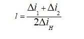
bu yerda:
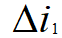
va
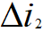
— ushbu elementning uchlaridagi nishabliklarning algebraik farqi
Profil elementlarining eng kichik uzunligi 25 m qilib qabul qilinishi lozim.
53. Boʻylama profilning yonma-yon toʻgʻri chiziqli elementlarini vertikal tekislikda Rv, m radiusli: 20000 — tezyurar va yuqori tezyurar liniyalarida; 15000 — I va II toifadagi liniyalarda; 10 000 — maxsus yukdan zoʻriqqan va III toifadagi liniyalarda; 5000 — IV toifadagi liniyalarda va 2000 — V toifadagi liniyalar va shoxobcha yoʻllarida egri chiziqlar bilan birlashtirilishi kerak.
54. Ikkinchi yoʻllarni loyihalashda va qiyin sharoitlarda joylashgan mavjud temir yoʻllarni kuchaytirishda (qayta qurishda), shuningdek shoxobcha yoʻllarining egri chiziqli radiuslarini quyidagicha, m:
yuqori tezyurar va tezyurar liniyalarda — 16000;
I va II toifadagi liniyalarda — 10000;
maxsus yukdan zoʻriqqan va III toifadagi liniyalarda — 5000;
IV va V toifadagi liniyalarda — 3000 kamaytirishga yoʻl qoʻyiladi.
55. Vertikal egriliklarni oʻtish egriliklaridan tashqarida hamda yoʻl oʻtkazgichlarning oraliq qurilmalaridan tashqarida va ballastsiz qatnov qismiga ega yoʻl oʻtkazgichlardan tashqarida joylashtirish lozim.
Bunda, boʻylama profilning sinish nuqtalaridan oʻtish egriliklarning uchlariga va oraliq qurilmalarning uchlariga eng kichik masofani T, m, quyidagi formuladan aniqlash lozim:
bu yerda:
Rv — vertikal egri chiziqning radiusi, m;
∆i — qiyaliklarning algebraik farqi, ‰.
56. Quyidagi b=T2/Rv formula boʻyicha aniqlanadigan vertikal egrilik bissektrisasining b uzunligi 1 sm dan oshmagan hollarda egrilikni nazarda tutmaslikka yoʻl qoʻyiladi.
57. III va IV toifadagi temir yoʻl liniyalarini, qiyin sharoitlarda joylashgan shoxobcha yoʻllarini va ikkinchi yoʻllarni loyihalashda va mavjud temir yoʻllarni kuchaytirish (qayta qurish)da texnik-iqtisodiy jihatdan asoslangan holatlarda, shuningdek egri chiziqli uchastkalardagi qiyaliklarni yumshatish paytida, oʻtish chizigʻining joylashishidan qatʼi nazar, boʻylama profilning sinishlarini loyihalashga yoʻl qoʻyiladi.
58. Qor uyumlari uchraydigan hududlarda joylashtiriluvchi temir yoʻllarni kam kesishuvchi va oʻrmonlashmagan joylarda yoʻlning boʻylama profilini asosan koʻtarmalar koʻrinishida I toifadagi liniyalarda qor qatlamining hisobiy qalinligi darajasidan kamida 0,7 m, II va III toifadagi liniyalarda kamida 0,5 m boʻlgan balandlik bilan loyihalash lozim.
59. Boshqa toifadagi liniyalar va shoxobcha yoʻllarda koʻtarmaning balandligi qor qatlamining hisobiy qalinligidan kam boʻlmasligi lozim.
60. Koʻtarmalar va nolli joylarda hamda oʻymalarda joylashtiriladigan mazkur SHNQga muvofiq koʻchkilarga qarshi inshootlarda qor koʻchkilarini oldini olish va temir yoʻlni harakatlanuvchi qor koʻchkilari halokati taʼsiridan himoya qilish uchun moʻljallangan himoyalash vositalarini koʻzda tutish lozim.
61. Hisoblab aniqlanganda qor qatlamining oshib ketish ehtimoli I, II toifadagi liniyalar uchun — 1:50 (2 foiz), III toifadagi liniyalar uchun — 1:33 (3 foiz) hamda IV va V toifadagi liniyalar va shoxobcha yoʻllar uchun — 1:20 (5 foiz) qalinligi qabul qilinishi lozim.
62. Harakatchan qumlar tarqalgan uchastkalarda yoʻlning boʻylama profilini balandligi 0,9 m dan ortiq boʻlgan koʻtarmalar koʻrinishida, mumkin qadar oʻymalarni chetlab oʻtib loyihalash lozim.
63. SHNQ 1.02.07-19 boʻyicha belgilangan murakkab muhandislik-geologik sharoitli (koʻchkilar va oʻpirilishlar, sel va qor koʻchkilari, karstga oid jarayonlar boʻlgan va hokazolar) hududlarda liniyani trassalashda noqulay hududlarni aylanib oʻtish kerak.
64. Toʻgʻri uchastkalarda mavjud yoʻl bilan umumiy yoʻl toʻshamasida joylashtiriluvchi ikkinchi yoʻlning boʻylama profilini ikkala yoʻllar relslarining kallakchalari sathlarining bir xil boʻlishini taʼminlagan holda loyihalash lozim.
Yoʻlning egri uchastkalarida ichki relslarning kallakchalari bir xil darajada boʻlishi lozim.
65. RKD ning vaqtinchalik farqi 10 sm dan, alohida nuqtalarda — 15 sm dan ortiq boʻlmasligi lozim.
Yoʻlning qor yoki qum uyumi mumkin boʻlmagan joylarda relslar kallaglari darajasining vaqtinchalik farqi asoslangan hollarda 25 sm gacha oshirishga yoʻl qoʻyiladi.
66. Yoʻlni kesib oʻtish joylarida relslar kallagi darajasining farq qilishiga yoʻl qoʻyilmaydi.
67. Mavjud yoʻllar boʻylama profili buzilishlarining toʻgʻrilanishini yoʻlni ballastning ustiga koʻtarish yoki qalinlikni saqlagan holda mavjud ballast qatlamini qirqish orqali koʻzda tutish lozim.
68. Yoʻl toʻshamasining yuqori qismini qirqishni faqat boʻylama profilni loyihalash sharoitlari yoki yoʻl toʻshamasining deformatsiyalarini (ballast maydonini qirqish va boshqalar) bartaraf qilish zaruriyati boʻlganda nazarda tutiladi.
2-§. Peregonlarda yoʻlning rejasi
69. Temir yoʻllarning egri chiziqli uchastkalarini mumkin qadar katta radiuslar bilan loyihalash lozim.
Egri chiziqlar radiusini mazkur SHNQning 5-jadvali boʻyicha belgilash lozim.
70. Egri chiziqlarning eng kichik radiusining qiymati yoʻlovchi va yuk tashuvchi poyezdlarning rejalashtirilgan harakatlanish tezligiga va mavjud yoʻlning egri chiziqlari radiusining oʻlchamiga qarab belgilash lozim.
5-jadval
Temir
yoʻl liniyalari, shoxobcha yoʻlning toifalari
Egri chiziqlar
radiuslari
tavsiya
etilgan
qiyin
sharoitlarda
oʻta
qiyin sharoitlarda texnik-iqtisodiy asoslanganda
Kelishilgan
holda
Yuqori tezyurar
5000 va yuqori
4000
3000
-
Tezyurar
4000-3000
2500
1800
-
Maxsus yukdan
zoʻriqqan
4000-2000
1500
1000
600
I
4000-2500
2000
1000
600
II
4000-2000
1500
800
400
III
4000-1200
800
400
300
IV
2000-1000
600
250
200
IV toifadagi
shoxobcha yoʻllari
2000-600
500
180
150
V toifadagi shoxobcha
va
bogʻlovchi yoʻllar
1000-400
300
150
150
Izohlar:
1. Agar 1-jadvalning 2-izohiga binoan maxsus yukdan zoʻriqqan liniyalarda 120 km/h dan ortiq yoʻlovchilar poyezdlarining maksimal tezligi taʼminlangan boʻlsa, tavsiya etilgan va qiyin sharoitlarda ruxsat etilgan egriliklar ushbu chiziqlarda I toifadagi chiziqlar uchun berilgan talablar boʻyicha olinishi lozim.
Poyezdlar 120 km/h.dan yuqori; 160 km/h gacha tezlikda harakatlanayotganda I toifadagi liniyalarda 400 m;
Poyezdlar 120 km/h yoki undan kam tezlikda harakatlanayotganda I toifadagi liniyalarda 300 m;
II va III toifadagi chiziqlar boʻyicha 250 m;
IV toifadagi chiziqlar boʻyicha 200 m.
2. V toifadagi yoʻllarida 3-3 gʻildirakli formulali lokomotivlarning yurishida va toʻgʻri kirgizmalarsiz teskari egriliklarni joylashtirilganda radiusi uzunligi 160 m dan kam boʻlmasligi lozim.
3. Yoʻllar oraligʻi kengayishlarini loyihalashda radiusi 4000 m dan ortiq boʻlgan egriliklardan foydalanish kerak.
4. Temir yoʻl tugunlarida oʻzaro almashuvlarni loyihalashda radiusi 250 m boʻlgan egriliklarni qoʻllash kerak.
71. Poyezdlarning moʻljallangan harakatlanish tezligini cheklovchi mavjud egriliklarni qayta qurish texnik-iqtisodiy asoslangan boʻlishi lozim.
72. Ikkinchi yoʻlning egri uchastkalarini, mavjud yoʻlning toʻgʻrilangan egriliklariga nisbatan konsentrik qilib loyihalash lozim.
73. Mavjud yoʻl egriliklarini toʻgʻrilashda doiraviy egrilikning butun uzunligi davomida radiuslar kattaliklarining doimiy miqdorlarini qabul qilish lozim.
Yoʻl toʻshamasi yoki sunʼiy inshootlarning qayta qurilishiga olib keluvchi qiyin sharoitlarda bir xil egrilikdagi uchastkalarning uzunligi kamida 300 m va istisno tariqasidagi hollarda — kamida 100 m boʻlishi kerak.
74. Yuqori tezyurar, tezyurar, yukdan zoʻriqqan va I va II toifadagi liniyalarda tuzilma egriliklari qoʻllanilmaydi.
III va IV toifadagi yangi liniyalar va shoxobcha yoʻllarida, oʻta qiyin sharoitlarda I va II toifadagi liniyalarda ham tuzilma egriliklarni qoʻllash tegishlicha texnik-iqtisodiy asoslanishi kerak.
75. Tuzilma egriliklarni loyihalashda turli radiusli doiraviy egriliklar oʻtish egriliklari vositasida ushbu SHNQga muvofiq tutashtirilishi lozim.
76. Yoʻlning toʻgʻri va egri uchastkalarini hamda turli radiusli yondosh doiraviy egriliklarni oʻtish egriliklari vositasida tutashtirish lozim.
77. Temir yoʻlning yuqori tezyurar, tezyurar, yukdan zoʻriqqan va I toifadagi liniyalari uchastkalarida, liniyaning rejasi va boʻylama profili shartlariga koʻra, 120 km/h. dan yuqori tezlikda harakatlanadigan poyezdlar harakatlanishini amalga oshirishi mumkin boʻlganligi koʻzda tutilganda, oʻtish egri chiziqlarining uzunligi L, m ni
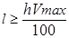
sharoitidan qabul qilish kerak;
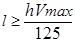
— qiyish sharoitlarda,
bu yerda:
Vmax — mazkur egri chiziqli uchastkadagi yuqori tezyurar poyezdning harakatlanish tezligi, km/h.;
h — bunda, quyidagi formula boʻyicha belgilanadigan tashqi relsning balandligi:
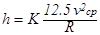
bu yerda:
vsr — egrilik joylashgan joyda oʻninchi yilga moʻljallangan oʻrtacha ogʻirlikdagi kvadratik tezlik, km/h,;
R — aylanma egri uchastka radiusi, m;
K — ekipaj tortishish markazining siljishini egrilik oʻqiga nisbatan tashqi tomonga siljishini hisobga olgan holda, 140 km/h gacha tezlikda 1,1 ga teng va 140 km/h.dan yuqori tezlikda 1,2 ga teng qilib qabul qilingan tashqi temir yoʻlning balandligi koeffitsiyenti.
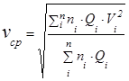
bu yerda:
ni — (yuk va yoʻlovchilar tashuvchi) poyezd juftliklarining soni;
Qi — poyezd massasi, t;
Vi — poyezd tezligi, km/h
78. Temir yoʻllarni loyihalashda, shuningdek ikkinchi yoʻllarni loyihalashda va 140 km/h dan ortiq tezlikda harakatlanadigan uchastkalarda mavjud liniyalarni kuchaytirishda (qayta qurishda), oʻtish chizigʻining uzunligi
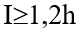
shartdan olinadi.
Agar temir yoʻl liniyasini kapital qayta qurmasdan belgilangan uzunlikdagi oʻtish egrilikni tashkil etish mumkin boʻlmasa, K=1.1 teng boʻlganda oʻtish chizigʻining uzunligini l=1,2h ga kamaytirish lozim.
79. Tashqi rels balandligining soʻndirilmagan koʻndalang tezlashishni quyidagi formula boʻyicha tekshirish kerak:
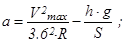
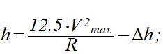
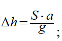
bu yerda:
a — soʻndirilmagan koʻndalang tezlashish, m/s2;
g — 9,81 m/s2;
S — relslar oʻqlari orasidagi masofa (1600 mm);
h — tashqi relsning balandligi, mm;
hn — tashqi relsning minimal balandligi, mm;
Δh — tashqi relsning balandligining kamchiligi, mm;
Soʻndirilmagan koʻndalang tezlashish meʼyori quyidagiga teng boʻlishi lozim:
yoʻlovchilar poyezdi uchun — 0,7 m/s2;
yuk tashuvchi poyezd uchun — 0,3 m/s2.
80. Egri chiziqli uchastkalarni joylashtirishni yoʻl toʻshamasini qayta qurmasdan (qayta qurish paytida) bajarishi mumkin boʻlmagan yoki yer ishlarining katta hajmi bilan bogʻliq boʻlgan qiyin sharoitlarda soʻndirilmagan koʻndalang tezlikni 1 m/s2 gacha oshirishga yoʻl qoʻyiladi.
81. Kuzovi majburiy egiladigan harakatlanuvchi tarkibdan foydalanganda, tashqi relsning balandligi hisobga olinishi soʻndirilmagan koʻndalang tezlashishdan oshib ketmagan holda qabul qilinadi.
82. Yukdan zoʻriqqan liniyalarda, shuningdek III, IV va V toifalardagi liniyalar boʻyicha oʻtish egriligi uzunligi ushbu SHNQning 6-jadvaliga muvofiq belgilanishi lozim.
6-jadval
Egrilik radiusi,
m
Temir yoʻl liniyalari va shoxobcha yoʻllarida oʻtish egriliklarning uzunligi, m
oʻta yukdan zoʻriqqan
III toifadagi
IV toifadagi
V toifadagi
Poyezdlarning harakatlanish tezliklari zonalari
1
2
3
1
2
3
1
2
3
1
2
3
4
5
6
7
8
9
10
11
4000
40
20
20
20
20
20
-
-
-
-
3000
60-40
40-20
20
40-30
30-20
20
-
-
-
-
2500
80-60
40-20
20
40-30
30
20
-
-
-
-
2000
100-80
60-40
20
60-40
40-30
20
40-20
20
20
-
1800
120-100
60-40
20
60-40
40
20
50-30
20
20
-
1500
120-100
80-60
30
80-60
50-40
20
60-40
20
20
-
1200
160-140
100-80
40-30
80-60
60-50
20
60-40
40-30
20
-
1000
180-140
120-100
40-30
100-80
80-60
40-30
80-60
40-30
30
20
800
180-140
140-100
60-40
140-100
100-80
40-30
100-60
60-40
30-20
20
700
180-140
160-120
80-40
160-120
100-80
40-30
120-80
60-40
40-20
20
600
180-140
160-140
100-60
160-120
120-100
60-30
120-80
80-40
40-20
20
500
160-120
160-120
120-80
160-120
160-100
60-30
120-80
80-60
50-20
20
400
160-120
160-100
140-80
160-100
160-100
100-60
120-80
100-60
60-30
20
350
160-100
160-100
160-80
160-100
160-80
120-80
120-80
120-80
60-30
20
300
160-80
160-80
160-80
160-80
160-80
160-80
120-80
120-80
60-30
40-20
250
160-80
160-80
160-80
160-80
160-80
160-80
120-80
120-80
80-40
40-20
200
-
-
-
-
-
-
100-60
100-60
80-50
40
180
-
-
-
-
-
-
100-60
100-60
80-50
60-40
150
-
-
-
-
-
-
-
-
-
60-40
Izoh:
1. Oʻtish egriliklari uzunliklarining miqdorlari ikki xil boʻlganda kichik miqdorlarni faqat qiyin sharoitlarda qoʻllash kerak.
2. Uchastkalarni poyezdlar harakatlanish tezliklarining zonalariga boʻlish boʻylama profilning konfiguratsiyasiga bogʻliq ravishda bajarish lozim:
1-chi tezliklar zonasi — boʻylama profilning chuqurlashuvi va unga tutashgan uchastkalar hamda yuk poyezdlarida ikkala yoʻnalishlarda maksimal yoki ularga yaqin tezliklar bilan oʻtuvchi boshqa uchastkalar;
2-chi tezliklar zonasi — bu yerdagi oʻrtacha kvadratik tezlikning miqdori yuk poyezdlari harakatlanish tezliklarining oʻrtacha miqdorlariga yaqin boʻlgan gorizontal maydonlar va qiyaliklar;
3-chi tezliklar zonasi — yuk poyezdlarda ikkala yoʻnalish boʻyicha, yoʻnaltiruvchi koʻtarishdagi hisobiy tezlikka yaqin tezliklar bilan oʻtiluvchi boʻylama profilning balandlashuvi va ularga tutashuvchi koʻtarishlarning doimiy uchastkalari.
83. Texnik-iqtisodiy asoslangan hollarda hamda ikkinchi yoʻllarni va mavjud temir yoʻllarni kuchaytirishni (qayta qurishni) turli sharoitlarda joylashtiriluvchi uchastkalarda loyihalashni, qabul qilingan egrilikning radiusi ruxsat beruvchi poyezdlarning harakatlanish tezligini amalga oshirish mumkin boʻlmagan oʻtish egrilikning uzunligini ushbu egrilik uchun loyihalanuvchi tashqi relsning balandligiga va ushbu balandlikni bartaraf qilish qiyaliklariga bogʻliq ravishda hisoblab amalga oshirish lozim.
84. Ushbu SHNQga koʻra poyezdlarning harakatlanish tezligi 140 km/h va undan kamroq boʻlganda tashqi relsning balandligini aniqlovchi formulada “K” koeffitsiyentni 1,0 ga teng deb qabul qilish kerak.
85. Balandlik miqdorini oʻninchi yilda foydalanish uchun egrilik joylashgan joyda (shoxobcha yoʻllarida — hisob-kitob davri uchun) nazarda tutiladigan oʻrtacha vaznga koʻra kvadrat tezlik boʻyicha aniqlanishi kerak va quyidagidan oshmasligi kerak:
200-250 km/h tezlikda harakatlanadigan poyezdlar uchun — 100 mm dan oshmasligi;
tezligi 200 km/h dan kam boʻlgan poyezdlar uchun — 150 mm dan oshmasligi.
86. Umumiy tarmoq temir yoʻllari asosiy yoʻlining egri chiziqli uchastkalarida tashqi rels balandligi kattaligi 100-150 mm yuqori boʻlishiga yoʻl qoʻyiladi.
87. Balandlikni ajratish burchagi 1 ‰ ortiq boʻlmasligi, qiyin sharoitlarda qiyaliklar I — III toifadagi chiziqlar boʻyicha 2 ‰, IV va V toifadagi temir yoʻllarda 3 ‰ dan oshmasligi kerak.
88. Hisoblash natijalari boʻyicha olingan oʻtish chiziqlarining uzunligi 10 baravarga teng boʻlgan qiymatlarga yaxlitlanishi lozim. Oʻtish egri chizigʻining uzunligi kamida 20 m boʻlishi lozim.
89. Bir tomonga yoʻnaltirilgan turli xil radiuslarning aylanma egriliklariga mos keladigan oraliq oʻtish egriliklar uzunligi tashqi temir yoʻl va egrilik balandligi farqlarga qarab aniqlanishi lozim. Bunday holda, oʻtish egri chizigʻining uzunligi kamida 30 m boʻlishi lozim.
90. Manyovrli tartibda xizmat koʻrsatiladigan shoxobcha yoʻllarida, turli sharoitlarda va 25 km/h dan oshmaydigan tezlikda poyezdda harakatlanganda oʻtish egri chizigʻini nazarda tutishga yoʻl qoʻyilmaydi.
91. Oʻtish egriliklarining boshlangʻich nuqtalari orasidagi toʻgʻri oʻrnatmalar, ular mavjud boʻlmaganda esa aylanma egriliklar iloji boricha uzunroq boʻlishi, biroq ushbu SHNQning 7-jadvalida koʻrsatilganidan kam boʻlmasligi lozim.
7-jadval
Liniyalar, shoxobcha yoʻllari toifalari
Yoʻnaltirilgan egriliklar orasidagi toʻgʻri oʻrnatmalarning uzunligi, m
turli tomonlarga yoʻnaltirilgan
bir tomonga yoʻnaltirilgan
Yuqori tezyurar, tezyurar, maxsus yukdan zoʻriqqan va 120 km/h yuqori tezlik bilan poyezdlar harakatlanganda I toifadagi liniyalari:
150
150
120 km/h va past
75
100
II va III toifa liniyalari
75
100
IV toifadagi liniyalari va shoxobcha yoʻllari
50
50
V toifa shoxobcha yoʻllari
30
30
Izoh. manyovrga oid tartibda xizmat koʻrsatuvchi shoxobcha yoʻllarda, qiyin sharoitlarda esa 25 km/h dan ortiq boʻlmagan tezliklardagi poyezdlar harakatlanishida egriliklar orasidagi (oʻtish egriliklarining, ular mavjud boʻlganda esa — doiraviy egriliklarning boshlangʻich nuqtalari orasidagi) toʻgʻri oʻrnatmalarni koʻzda tutmaslikka yoʻl qoʻyiladi.
92. Belgilangan uzunlikdagi toʻgʻri oʻrnatmalar (vtsavka)ni qurish katta hajmdagi qurilish ishlari bilan bogʻliq boʻlgan hollarda, ushbu oʻrnatmalarning uzunligini:
120 km/h dan ortiq tezliklar bilan poyezdlarning harakatlanishi koʻzda tutilgan I toifadagi liniyalarda 75 m gacha;
bir tomonga yoʻnaltirilgan egriliklar orasida va 50 m gacha;
turli tomonlarga yoʻnaltirilgan egriliklar orasida, I — III toifadagi boshqa liniyalarda — tegishlicha 50 va 30 m gacha;
IV va V toifadagi temir yoʻllarda turli tomonlarga yoʻnaltirilgan egriliklar orasidagi toʻgʻri oʻrnatmalarni 20 m gacha qisqartirish kerak.
93. III — V toifadagi temir yoʻllarni, ikkinchi yoʻllarni va mavjud temir yoʻllarni qayta qurishni loyihalashda tegishlicha texnik-iqtisodiy asoslanganda teskari egriliklarni tutashtirishda toʻgʻri oʻrnatmalarni koʻzda tutish kerak.
94. Ikkinchi (uchinchi, toʻrtinchi) yoʻlni mavjud yoʻldan bir tomonda joylashtirish lozim. Uchastka doirasidagi qabul qilingan ikkinchi yoʻlning oʻzgarishini loyihada asoslab berish lozim.
95. Bunday holda, yoʻllarni almashtirishni alohida nuqtalarda va mavjud boʻlgan egri chiziqlar boʻyicha ularga yaqinlashuvlarda (mumkin qadar yangi egriliklarni qurmasdan) taʼminlanishi kerak.
96. Ikkinchi yoʻlni mavjud bosh yoʻl bilan umumiy yoʻl toʻshamasida joylashtirish lozim.
97. Peregonlarning toʻgʻri uchastkalaridagi asosiy yoʻllar oʻqlari orasidagi masofa birinchi va ikkinchi oʻqlar oʻrtasidagi masofa kamida 4100 mm, shuningdek uchinchi va toʻrtinchi yoʻllar, ikkinchi va uchinchi yoʻllarning oʻqlari orasidagi masofa kamida 8000 mm, yoʻlovchilar poyezdlarining tezligi 140 km/h yuqori tezlikda amalga oshirish mumkin boʻlgan uchastkalarda — kamida 10 000 mm boʻlishi kerak.
Noqulay sharoitlarda yirik shahar va tugunlarning bosh uchastkalarida va stansiyalarda poyezdlar harakatining tezliklarini tegishli tarzda kamaytirgan holda, ushbu masofani 6000 mm gacha qisqartirishga yoʻl qoʻyiladi.
98. Yoʻlning egri uchastkalarida, bu masofalar egri radiusiga qarab, binolarni yaqinlashtirish oʻlchamlarini qoʻllash boʻyicha koʻrsatmalari GOST 9238-2013 ga muvofiq boʻlishi lozim.
99. Yoʻlning toʻgʻri uchastkalaridagi yoʻllararo masofalardan doiraviy joylashgan yoʻllar egriliklaridagi oshirilganlariga oʻtishlarni oʻtish egriliklari chegarasida ichki yoʻllarda tashqi yoʻl uchun qabul qilingan uzunliklariga nisbatan oshirilgan uzunlikdagi oʻtish egriliklarini qoʻllash orqali loyihalash lozim.
Bunda, har bir yoʻldagi oʻtish egriliklarining uzunligi ushbu SHNQda koʻrsatilganidan kam boʻlmasligi lozim.
100. Qor uyumlariga moyil hududlarda quriluvchi temir yoʻllarni loyihalashda:
chuqur oʻymalar oʻqlari boʻyicha, shuningdek stansiyalar oʻqlarini boʻronli shamollar boʻyicha yoʻnaltirmaslik;
togʻli va tepaliklar bilan qoplangan joylarda qorni shamol bilan uchirilishini hisobga olib trassani oʻtkazish;
boshqa teng sharoitlarda trassani shamolga roʻpara yonbagʻirlarda, shuningdek suv havzalarida yotqizishga ustunlik berish;
togʻli joylarda trassani tik yonbagʻirlar boʻylab kamida 50 m masofada oʻtkazish;
trassa bilan pastqam joylarni eng qisqa yoʻnalish boʻyicha kesib oʻtish, yoʻldosh pastqamliklarni esa shamolga teskari tomondan aylanib oʻtish lozim.
101. Qum uyumlariga moyil hududlarda quriluvchi temir yoʻllarni loyihalashda:
trassani harakatchan qumlarning eng faol massalarini aylanib oʻtib, relyefning shakli boʻylab yoki qum koʻchishining yoʻnalishlariga parallel oʻtkazish;
relyef shakllarini kesib oʻtish uchun ushbu shakllar balandligining eng kam tebranishli uchastkalarini tanlash;
oʻymalar shakllanishiga yoʻl qoʻymaslik;
oʻrmonlar va butazorlar yoʻldosh massivlarining himoyalovchi xususiyatlaridan maksimal foydalanish lozim.
3-§. Ajratish punktlarini joylashtirish
102. Barcha toifadagi liniyalarda ajratish punktlarini joylashtirganda liniyadan foydalanish va aholi punktlariga xizmat koʻrsatish qulayligi, topografik, geologik (yemirilishlar, koʻchkilar, toshqinlar, oʻpirilishlar, chuqur botqoqlar) va boshqa mahalliy sharoitlarni hisobga olish lozim.
103. I toifadagi yuqori tezyurar, maxsus yukdan zoʻriqqan, tezyurar va ikki yoʻlli liniyalarda oraliq stansiyalar va quvib oʻtish punktlarini yuk va yoʻlovchilar tashish tezligi, oʻlchamlari va tavsifini, poyezdlararo intervalning kattaligini, poyezdlarning ishlashining talab qilinadigan ishonchlilik darajasini, yoʻlni tuzatish shartlarini hisobga olgan holda, biroq kamida 35-40 km oraliqda joylashtirish lozim.
104. I toifadagi liniyalarida ajratish punktlarini peregonlar boʻyicha oʻtkazish qobiliyatini taʼminlagan holda toʻxtovsiz kesishuv oʻqlari orasidagi peregonlarning oʻxshashligidan kelib chiqqan holda poyezdlarni toʻxtovsiz kesib oʻtishini tashkil etilishini hisobga olgan holda joylashtirish kerak.
Parallel jadvalda hisoblangan ogʻirlikdagi poyezdlar juftligining belgilangan sonidan kam boʻlmagan hamda ajratish punktlarida toʻxtagan poyezdlarni kesib oʻtish va texnik topshiriqda koʻrsatilgan lokomotiv turi bilan joylashtirish kerak.
Ikki yoʻlli qoʻshilmalarni oʻrnatishda va poyezdlarni toʻxtovsiz kesib oʻtishda parallel jadval boʻyicha belgilangan juft poyezdlar sonidan kam boʻlmasligi lozim.
105. II toifadagi liniyalarda joylashgan ajratish punktlarini texnik topshiriqda koʻrsatilgan yuk koʻtarish punktlari oʻqlari orasidagi peregonlarning identifikatsiyasiga va belgilangan massa kamida ikki juft poyezdlarning parallel jadvalga ega boʻlgan va peregon punktlarida toʻxtab turadigan poyezdlarni kesib oʻtish imkoniyatini taʼminlashga asoslanib joylashtirish lozim.
106. III va IV toifadagi liniyalaridagi ajratish punktlarini, yuk va yoʻlovchilar tashish ehtiyojlarini taʼminlash shartlaridan kelib chiqqan holda, foydalanilishning oʻninchi yilida joylashtirish lozim.
107. Ikki yoʻlli liniyalar va ikkinchi yoʻllarni loyihalashda quvib oʻtish punktlarini tezliklari nisbati yuk va yoʻlovchilar tashish tavsifi va poyezdlararo intervallar hajmini hisobga olgan holda aniqlanishi kerak.
108. Uchastka stansiyalariga tutashgan peregonlarda bir juft poyezdlarning yurish vaqtini kamida 4 min ga kamaytirish lozim.
109. Birlashgan (ikki tomonlama, qurilgan) poyezdlar harakati nazarda tutilgan temir yoʻl liniyalari loyihalarida, bunday poyezdlarning toʻxtashi uchun ajratish punktlarining joylashtirilishi hisob-kitoblar bilan asoslantirilgan boʻlishi lozim.
110. Poyezdlarning bir yoʻlli uchastkaga chiqishini toʻsib qoʻyadigan svetofor oldida toʻxtagan taqdirda, ikki yoʻlli qoʻshimchalarning boʻylama profili ularning siljishi uchun sharoitlarini taʼminlab berishi lozim.
111. Ikki yoʻlli qoʻshimchalar razyezdlarlar oʻrniga, texnik-iqtisodiy asoslanganda ikki yoʻlli peregonlarni loyihalash kerak.
4-§. Ajratish punktlarida yoʻllarning boʻylama profili va rejasi
112. Stansiyalar, razyezdlarlar va quvib oʻtish punktlarini gorizontal maydonda joylashtirish lozim, ularning qiyaliklardagi joylashuvi loyihada asoslantirilgan boʻlishi lozim.
113. Ajratish punktlarining qiyaligi 1,5 ‰ dan yuqori boʻlmagan, noqulay sharoitlarda qiyaligi 2,5 ‰ dan oshmaydigan qiyaliklarda joylashtirish lozim.
114. Yarim boʻylama va boʻylama turdagi razyezdlar va quvib oʻtish punktlarini, lokomotivlar yoki vagonlarni tarkiblardan ajratib olish va manyovrlar amalga oshirilishini stansiya maydon qismi doirasidagi oraliq stansiyalarni qiyaligi 12 ‰ oshmaydigan qiyaliklarda joylashtirish kerak.
115. Noqulay topografik sharoitlarda tegishlicha texnik-iqtisodiy asoslanganda lokomotivlar yoki vagonlarni tarkiblardan ajratish koʻzda tutilmaydigan ayrim razyezdlar va quvib oʻtish punktlarining stansiyaga oid butun maydonini 12 ‰ dan oshmaydigan qiyaliklarda joylashtirish kerak.
116. Stansiyalar, razyezdlar va quvib oʻtish punktlarini 2,5 ‰ dan tikroq qiyaliklarda joylashtirilgan barcha hollarda poyezdlarni lokomotivlarning yordamchi tormozlari bilan ushlab turish sharoitlari hamda ushbu poyezdlarning joyidan siljishi sharoitlari taʼminlashi lozim.
117. Lokomotivlar yoki vagonlarni tarkiblardan ajratish va manyovrga oid operatsiyalarni bajarish koʻzda tutilgan stansiyalar, razyezdlar va quvib oʻtish punktlarida yoʻlning profili foydali uzunligi chegarasida harakatchan tarkibning oʻz-oʻzidan ketib qolishiga yoʻl qoʻymasligi lozim.
118. Yangi liniyalardagi stansiya maydonlarning uzunligi qabul qilish-joʻnatish yoʻllarining kelajakdagi foydali uzunligiga hamda qabul qilish-joʻnatish yoʻllarining joylashishi turiga (boʻylama, yarim boʻylama, koʻndalang) bogʻliq ravishda belgilanishi va mazkur SHNQning 8-jadvalida koʻrsatilganlardan kam boʻlmasligi lozim. Shoxobcha yoʻllaridagi stansiya maydonlarning uzunligi esa loyihada belgilanishi lozim.
8-jadval
Liniya
toifasi
Qabul
qilish-joʻnatish yoʻllarining joylashuvi
Stansiyaga
oid maydonlarning (yangi liniyalar uchun) maksimal uzunligi, m, qabul
qilish-joʻnatish yoʻllarining foydali uzunligi 1050
m boʻlganda, m
Razyezdlarda
I, II
Boʻylama
2450
I, II
Yarim boʻylama
1800
I, II
Koʻndalang
1450
III.IV
-//-
1300
Oraliq stansiyalarida
I, II
Boʻylama
2900
I, II
Yarim boʻylama
2200
I, II
Koʻndalang
1650
III.IV
-//--
1450
Quvib oʻtish
punktlarida
I, II
Boʻylama
2600
I, II
Yarim boʻylama
1900
I, II
Koʻndalang
1500
Uchastka
stansiyalarida
I, II
Boʻylama
4000
I, II
Yarim boʻylama
2850
I, II
Koʻndalang
2400
III.IV
-//-
2000
Izohlar:
1. Stansiya maydonlarining uzunligi miqdori vertikal egriliklarning tangenslarini hisobga olmagan holda koʻrsatilgan, ularning qiymati algebraik farqiga qarab jadvalda koʻrsatilganlarga qoʻshilishi kerak.
2. Agar yoʻllarning foydali uzunligi 1050 m dan ortiq (yoki kichik) boʻlsa, stansiyaga oid maydonning uzunligi tegishlicha orttirish (yoki qisqartirish) lozim: ajratish punktlarining koʻndalang va yarim boʻylama tiplarida — foydali uzunliklarining ayirmasiga, boʻylama tipida — ularning ayirmasining ikkilanganiga.
119. Yengil topografik sharoitlarda joylashtiriluvchi razyezdlar va quvib oʻtish punktlarining maydonlarini mumkin qadar profilning tepaliklarida (bukriliklarida), kirish signallaridan oldingi uchastkalarni esa — qabul qilish-joʻnatish yoʻllarining foydali uzunligiga teng boʻlishi lozim.
120. Mavjud stansiyalar, razyezdlar va quvib oʻtish joylarini qayta qurishda, shuningdek mavjud liniyalarda yoʻllarni rivojlantirish bilan yangi ajratish punktlarini qurishda, qabul qilish va joʻnatish yoʻllarining butun foydali uzunligi boʻylab boʻylama profil alohida elementlarining tikligi mazkur SHNQga muvofiq boʻlishi lozim.
121. Agar strelkali oʻtkazgichlarni koʻrsatilgan qiyaliklarga joylashtirish imkoni boʻlmasa, ularni yetakchi qiyalikdan tik boʻlmagan yoki 2‰ ga qisqartirilgan qisqa tortishning eng katta qiyaliklarida, oʻta qiyin sharoitlarda esa, loyihada tegishli asoslangan holda — yetakchi qiyalikda yoki ikki karrali tortish qiyaligida joylashtirish lozim.
122. Asosiy yoʻllarda oʻtkazgichlar chegarasidan tashqarida dispetcherlik strelkali oʻtish oraliq (syezd)lari va alohida strelkali oʻtkazgichlarni har qanday boʻylama qiyalikda, shu jumladan yetakchi qiyalikka qadar joylashtirilishiga yoʻl qoʻyiladi.
123. Manyovr ishlari koʻzda tutilmagan razyezdlar va quvib oʻtish punktlarini qayta qurishda qabul qilish-joʻnatish yoʻllarining foydali uzunligini gorizontal maydonda 2,5 foizgacha qiyaliklarda joylashtirish, katta hajmdagi yer ishlari, sunʼiy inshootlarni rekonstruksiya qilish bilan bogʻliq boʻlganda, qabul qilish-joʻnatish yoʻllarini yetakchi nishablikkacha uzaytirish bilan loyihalash lozim.
124. Oʻta qiyin sharoitlarda joylashgan mavjud stansiyalarning qabul qilish-joʻnatish yoʻllari uzaytirishda yoʻllarni qiya boʻlmagan, lekin 12‰ qiyalikdan oshmaydigan yoʻllarga joylashtirish lozim.
125. Mavjud stansiyalar, razyezdlar va quvib oʻtish joylarini qayta qurishda, qayta quriladigan qismning tashqarisida mavjud uzunlikdagi profilning alohida elementlari qiyaliklari va uzunligini saqlash kerak.
126. Yuk koʻtarish va tushirish yoʻllarining foydali uzunligi qiyaliklarda joylashgan barcha holatlarda, vagonlarning (poyezdlarning) oʻz-oʻzidan foydali yoʻl uzunligidan tashqariga chiqib ketishiga qarshi choralarni koʻrish kerak.
Yoʻllarning foydali uzunligi oraligʻidagi oʻrtacha qiyalik lokomotivlarning yordamchi tormozlari bilan ushlab turish va tortib olish sharoitlarini yaratishi lozim.
127. Poyezdlarning faqatgina bir yoʻnalishda harakatlanishi uchun moʻljallangan temir yoʻl kesishmalarini asosiy qiyalikdan qiya boʻlgan qiyin sharoitlarda, biroq ushbu SHNKda ushbu toifadagi chiziqlar uchun belgilangan maksimal qiyalikdan ortiq boʻlmagan qiymatlarda joylashtirish lozim.
128. Yoʻlovchilar toʻxtash punktlarini yoʻlovchi poyezdining harakatlanishiga imkon beradigan qiyaliklarda joylashtirish kerak.
129. Lokomotivsiz vagonlarni toʻxtatish uchun moʻljallangan yuk ortish — tushirish platformalari va maydonlardagi yoʻllar, shuningdek lokomotivlar uchun moʻljallangan yoʻllar va toʻxtash joylari gorizontal maydonlarda yoki 1,5‰ qiyalikdan yuqori boʻlmagan qiyaliklarda joylashgan boʻlishi lozim.
Qiyin sharoitlarda ushbu yoʻllarni 2,5‰ lik qiyaliklarda joylashtirish lozim.
130. Yoʻlovchi poyezdlari va alohida vagonlarning toʻxtab turishi uchun moʻljallangan yoʻllar gorizontal maydonlarda yoki 1,5‰ qiyalikdan ortiq boʻlmagan qiyaliklarda, binolarni esa gorizontal maydonlarda joylashtirish lozim.
131. Har qanday koʻrinishdagi profilni loyihalashda vagonlarning oʻz-oʻzidan yurib ketishiga qarshi choralar koʻrilishi lozim.
132. Bogʻlovchi yoʻllar hamda poyezd tarkiblarni oʻrnini almashtirish, vagonlarni bunkerga va omborlarga uzatish uchun yoʻllar qiyaliklarining miqdorini ushbu yoʻllarda harakatda boʻlgan tarkiblarning ogʻirligi va lokomotivlarning tortish kuchini hisobga olib, biroq mazkur SHNQda belgilangan qiyaliklar miqdoridan ortiq boʻlmagan holda qabul qilish lozim.
133. Faqat lokomotivlar va motor-vagonli seksiyalarning harakatlanishi uchun moʻljallangan yoʻllarning qiyaliklarini 40‰ qiyalikdan yuqori boʻlmagan holda qabul qilish lozim.
134. Bogʻlovchi va harakatlanish yoʻllarini boʻylama profili elementlarining uzunligi 50 m dan kam boʻlmasligi lozim.
135. Bino darvozasidan yoki yuk frontining boshidan profildagi vertikal egrilikning boshigacha, shuningdek rejadagi aylanma egri chizigʻining boshlanishigacha boʻlgan masofa yuklash-tushirish yoki taʼmirlash uchun taqdim etilgan yukning uzunligi lokomotiv (lokomotiv boʻlimi) uzunligidan kam boʻlmasligi lozim.
136. Qayta quriladigan yoʻllar uchun qiyin sharoitlarda bu masofani 2 m ga qisqartirish mumkin.
137. Saralash yoʻllarini strelkali oʻtkazgich hududida tortish yoʻli tomonidan mumkin qadar vagonlarni saralash tomoniga qaratilgan nishabda joylashtirish lozim.
Nishabning tikligi 4‰ lik qiyalikdan ortiq boʻlmasligi lozim.
138. Stansiyaning strelkali boʻgʻzidan tashqaridagi tortish yoʻllarini, ular xizmat koʻrsatadigan yoʻllar yoki gorizontal yoʻnalishida, 2,5‰ lik qiyalikdan tik boʻlmagan qiyalikda joylashtirish lozim.
Qiyin sharoitlarda tortish yoʻllarini xizmat koʻrsatadigan yoʻllar tomonga 2‰ lik qiyalikdan yuqori boʻlmagan tepalikda joylashtirish lozim.
139. Yigʻma va olib chiqish ishlari uchun foydalaniladigan va qiyin sharoitlarda joylashtiriladigan tortish yoʻllarining boʻylama profilini tortish yoʻli ichida asosiy yoʻl qismining boʻylama profiliga muvofiq loyihalash kerak.
140. Asosiy va qabul qilish-joʻnatish yoʻllaridagi strelkali oʻtkazgichlarni vertikal egrilikdan tashqarida loyihalashtirilishi lozim.
120 km/h gacha tezlikda harakatlanadigan liniyalarda qiyin sharoitlarda strelkali oʻtkazgichlarni vertikal egrilik boʻylab joylashtirish kerak, ularning radiusi kamida 10000 m boʻlishi lozim.
141. Maxsus yoʻnaltirilgan (tashkiliy) poyezdlar oʻtishi uchun moʻljallanmagan boshqa yoʻllarda, shuningdek poyezdlar 120 km/h dan yuqori boʻlmagan tezlikda harakatlanishi nazarda tutilmagan liniyalarda, yangi stansiyalar, razyezdlar va quvib oʻtish stansiyalarini qayta qurish va qurishda, radiusi 5000 m kam boʻlmagan vertikal egrilik ichida joylashtirishi kerak.
142. Saralash tepaliklarining boʻylama profilini loyihalashda vertikal egriliklarning radiusi (vagonlarning oʻtish qobiliyatini taʼminlash va ulanish shartlariga muvofiq) hisob-kitob qilish yoʻli bilan aniqlanishi lozim.
Bunda, istisno tariqasida vertikal egrilik ichida, faqat oʻtish moslamasining oʻtkazma egrilik chizigʻini joylashtirish kerak.
Rels yoʻnaltirgichlari va krestovinalar vertikal egrilik tashqarisida joylashtirilishi lozim.
143. Stansiyalar, razyezdlar va quvib oʻtish joylari, shuningdek alohida parklar va tortish yoʻllari yoʻlning toʻgʻri uchastkalarida joylashgan boʻlishi lozim.
Qiyin sharoitlarda ularni radiusi kamida 1200 m, poyezdlarning tezligi 120 km/h dan oshadigan liniyalarda — kamida 1500 m m boʻlgan egriliklarga joylashtirish lozim.
144. Oʻta murakkab relyef sharoitlarda tegishli asosga ega boʻlgan holda egrilik radiusini 600 m, togʻ sharoitida esa 500 m gacha kamaytirish kerak.
145. Qabul qilish-joʻnatish yoʻllarining koʻndalang joylashadigan stansiyalari, oʻtish yoʻllari va quvib oʻtish joylarini, zarurat boʻlganda, ularni yoʻlning egri uchastkalariga bir tomonga qaragan egrilikda joylashtirish lozim.
146. Teskari egrilikdagi razyezdlar va quvib oʻtish joylarini istisno holatlarda, loyihada tegishli asos mavjud boʻlgan taqdirda II, III va IV toifadagi temir yoʻl liniyalarida joylashtirishga yoʻl qoʻyiladi.
147. Qabul qilish-joʻnatish yoʻllari boʻylama va yarim boʻylama joylashgan stansiyalar, razyezdlar va quvib oʻtish joylarini qiyin sharoitlarda teskari egrilikda joylashtirish mumkin. Bunda, har bir harakatlanish yoʻnalishlarining foydali uzunlikdagi yoʻllari bir tomonga qaragan egriliklarda joylashtirilgan boʻlishi lozim.
148. Mavjud stansiyalarni qayta qurishda, istisno hollarda, teskari egri chiziqlarni alohida parklarda saqlab turishga yoʻl qoʻyiladi.
149. Tortish yoʻllarini teskari chiziqlarga joylashtirishga yoʻl qoʻyilmaydi.
Istisno hollarda, stansiyalarni qayta qurish jarayonida tegishli asosga ega boʻlgan holda mavjud tortish yoʻllarida teskari egri chiziqlarni saqlashga yoʻl qoʻyiladi.
150. Teskari egri chiziqlar mavjud boʻlganda, barcha hollarda manyovrlash ishlarini bajarish xavfsizligi uchun yetarli boʻlgan koʻrinish taʼminlangan boʻlishi lozim.
151. Asosiy yoʻllardagi strelkali oʻtkazgichlarini yoʻlning toʻgʻri uchastkalarida joylashtirish lozim.
152. Egri chiziqlarda joylashgan stansiyalarda, razyezdlarda yoki quvib oʻtish joylarining asosiy yoʻllarida strelkali oʻtkazgichlarni yoʻlning toʻgʻri uchastkalariga joylashtirilishi kerak.
153. Oʻtish egri chiziqlari va egri chiziqlar oʻrtasidagi toʻgʻri qoʻshimchalar esa peregonlar uchun moʻljallangan talablarga muvofiq loyihalashtirilishi lozim.
154. Ajratish punktlari asosiy yoʻllarining kamida 500 m radiusli egri chiziqli uchastkalarida strelkali oʻtkazgichlarni oʻrnatishga yoʻl qoʻyiladi.
155. Stansiya yoʻllarining egri uchastkalari (bundan poyezdlar toʻxtovsiz harakatlanishi koʻzda tutilgan, asosiy hamda qabul qilish va joʻnatish yoʻllari mustasno) tashqi relsning balandligisiz va oʻtish egri chiziqlarisiz loyihalashtirilishi kerak.
156. Poyezdlarning uyushgan holda oʻtishi uchun moʻljallangan yoʻllarda radiusi 250 m yoki undan kam boʻlgan turli yoʻnalishlarga qaragan egri chiziqlar orasida uzunligi 15 mdan kam boʻlmagan tekis qoʻshimchalar qoʻllanilishi lozim.
157. Xoch egri chiziqlar radiusi qoʻshni strelkali oʻtkazgichning oʻtkazma egri chizigʻi radiusidan kam boʻlmasligi kerak.
158. Birlashtiruvchi va yurish lokomotiv yoʻllarining egriligi koʻrsatib oʻtilgan ushbu egriliklarning radiusini 180 m gacha (shoxobcha yoʻllarida — 150 m), saralash parklari boshida esa — 140 m gacha kichraytirish lozim.
5-bob. Yoʻlning yuqori qurilmasi. Peregonlarda yoʻlning yuqori qurilmasi
159. Yangi va rekonstruksiya qilinadigan temir yoʻl liniyalari uzluksiz foydalanish uchun yoʻlning choksiz konstruksiyalari bilan oʻrnatilishi, vaqtinchalik ekspluatatsiya qilish davrida va/yoki yoʻl toʻshamasining mustahkamlanguncha zvenoli yoʻl yotqizilishiga yoʻl qoʻyiladi.
160. Yangi temir yoʻl liniyalari va shoxobcha yoʻllarni loyihalashda peregonlardagi va ajratish punktlaridagi bosh yoʻllar yuqori qurilmasining quvvatini mazkur SHNQning 9-jadvaliga asosan belgilash lozim.
9-jadval
Koʻrsatkichlar
Yoʻl
yuqori qatlamining quvvati
Quyidagi toifali
temir yoʻl liniyalarida
yuqori tezyurar
tezyurar
maxsus yukdan
zoʻriqqan
I
II
III
IV
V
Relslarning
tipi
R75-R65
R75-R65
R75
R75-R65
R65
Yangi yoki eski
yaroqli R50-R65
eski yaroqli R50
Yangi yoki eski
yaroqli R65
Shpallarning
turi
I
tipli yogʻoch yoki temir betonli*
Yogʻoch yoki temir
betonli
1 km ga
shpallar soni:
toʻgʻri va radiusi 1200
m boʻlgan egriliklarda (shoxobcha yoʻllarida 350
m) va undan yuqori
2000
2000
2000
2000
1840
1840
1840
1840
radiusi 1200
m kam boʻlgan egriliklarda (shoxobcha yoʻllarida 350
m kam)
2000
2000
2000
2000
2000
2000
2000
2000
Shpal tagidagi bal lastning qalinligi,
sm:
Yogʻoch shpallarda qumli yostiqlarda
35/20
30/20
35/20
30/20
30/20
25/20
25/20
20/20
temir beton shpallardagidek
40/20
35/20
40/20
35/20
35/20
35/20
35/20
30/20
Yoʻlga taxlash uchun ruxsat etiladigan
ballastning shagʻalli, qum-shagʻalli va boshqa turlari
-
-
-
-
-
-
30 yogʻoch
35 temir betonli
30 yogʻoch
35 temir betonli
Izohlar:
1. Shagʻal ballastdan foydalanilganda ikki qavatli ballast prizmani toshli, mayda shagʻal toshli va loy tuproqli yoʻl toʻshamasi (toʻshamasi)da, shu jumladan yoʻl toʻshamasi (toʻshamasi)ning yuqori qismida himoya qatlami oʻrnatilganda yotqizilishi kerak; tosh, qoʻpol donador tuproq va qumlardan (mayda va changdan tashqari) hosil boʻlgan yoʻl toʻshamasi (toʻshamasi)da shagʻalni bir qatlam, qum ballast yostigʻisiz yotqizish kerak, agar yoʻl toʻshamasi (toʻshamasi) bazasining yuqori qatlami qum ballastlari va uning qalinligi talablariga javob beradigan qurigan tuproqlardan yasalgan boʻlsa, yogʻoch shpallar bilan yoʻl ustidagi ballast qatlami, shu jumladan ruxsat etilgan boshqa turdagi ballastlardan foydalanilganda 30 sm dan kam boʻlmagan, temir beton shpalli yoʻllarda esa 35 sm dan kam boʻlmasligi lozim.
2. Agar yoʻl toʻshamasi yostiq shagʻaldan qilingan boʻlsa, shagʻal qatlamining qalinligini 5 sm gacha kamaytirishga yoʻl qoʻyiladi.
3. Yoʻl toʻshamasi (toʻshamasi)ning tagida choʻkma va siqiladigan tuproqlar ustunlik qiladigan boʻlsa, shagʻal-qum va shagʻal ballastlariga ulash yoʻli yotqizilishi lozim. Shagʻal ballastga yoʻlni belgilash va qoʻshma yoʻlni yotqizish yoʻl toʻshamasi (toʻshamasi)ni toʻliq barqarorlashtirgandan soʻng amalga oshirilishi kerak.
4. Harakatlanish tezligi 140 km/h dan ortiq boʻlgan liniyalarda faqat shagʻal-qum aralashmasining ballast yostigʻida maydalangan shagʻal ballastdan foydalanish lozim.
5. Temir-beton shpallarni choksiz yoʻlda qoʻllash lozim. Temir-beton shpallarni IV toifadagi liniyalaridagi boʻgʻinli yoʻllarda, tugunlarda, stansiyalar ichlarida, birlashtiruvchi va shoxobcha yoʻllarida qoʻllash kerak.
6. Qumli uchastkalarda yogʻoch shpallardagi R65 yengil boʻlmagan termik jihatdan pishiq relslarni yotqizish lozim.
7. Temir-beton shpallar epyurasi (joylashuvi) agar ularda shpallar taxlamining boshqa epyurasini koʻrsatuvchi maxsus sertifikat mavjud boʻlmasa, qoʻllanilayotgan shpallarning tipiga bogʻliq boʻlmaydi.
161. Tezyurar, yoʻlovchi va ogʻir yukdan zoʻriqqan, I hamda II toifadagi liniyalarda temir-beton shpallarda choksiz yoʻl yotqizilishiga hamda ballastsiz yoʻl konstruksiyasini qoʻllashga yoʻl qoʻyiladi.
162. Temir yoʻl yoʻllarining barcha toifalarida va yoʻlning yuqori qurilmalari konstruksiyalarida umumiy va maxsus relslardan GOST R51685-2022 va GOST 34222-2017 talablariga muvofiq foydalanish kerak.
163. Umumiy relslar zvenoli, choksiz yoʻllar va strelkali oʻtkazgichlarda qoʻllanilishi kerak.
164. Maxsus relslarni alohida iqlim sharoitlarida va harakat tezligi 160 km/h dan ortiq, maxsus yukdan zoʻriqqan va oʻqqa tushadigan ogʻirlik yuqori boʻlgan temir yoʻllarda qoʻllash lozim.
165. Yangi liniyalarda (uchastkalarda) choksiz yoʻlni yotqizish loyihaviy asoslangan boʻlishi kerak.
166. Choksiz yoʻl mustahkamlangan (zichlangan) yoʻl toʻshamasi (toʻshamasi)ga, shagʻal ballast ustiga relslarni alohida mahkamlash usulini qoʻllagan holda temir-beton shpallarga yotqizilishi lozim.
167. Yoʻlga yotqiziladigan relslarning uzunligi 25 m, choksiz yoʻllarda-toʻgʻri hamda radiusi 500 m va undan ortiq uchastkalarda 800 m gacha boʻlishi kerak.
Yoʻlning egri uchastkalarida ichki rels izi boʻylab zavod tomonidan ishlab chiqarilgan qisqartirilgan relslar yotqizilishi lozim.
168. Oraliq relsli qisqichlar:
yogʻoch shpalli yoʻllar uchun — shagʻal yoki alohida qistirma;
temir-beton shpalli yoʻllar uchun — alohida qistirmali yoki qistirmasiz nazarda tutilgan boʻlishi lozim.
169. Temir-beton shpallardan foydalanish loyihaviy asoslangan boʻlishi lozim.
170. Temir-beton shpallar shagʻalli ballast (qatlam) ustiga yotqizilishi lozim.
171. Elektr tortish yoki avtomatik qulflash bilan jihozlangan liniyalarga temir-beton shpallarni yotqizishda, temir yoʻl zanjirlarining izolyatsiyasini taʼminlash kerak.
Yogʻoch shpallar elektr tokini oʻtkazmaydigan antiseptiklar bilan shimdirilgan boʻlishi lozim.
172. Toʻgʻridan-toʻgʻri bitta yoʻlli uchastkalarning ustidagi ballast (qatlam) prizmaning kengligi, quyidagicha boʻlishi lozim, m:
yuqori tezlikda, tezyurar, maxsus ogʻir yuk oʻtkazuvchi liniyalarda, I va II toifadagi liniyalarda, shuningdek, choksiz yoʻl yotqizilgan uchastkalarida — 3,85;
III toifadagi qolgan liniyalar uchun — 3,65;
IV toifadagi qolgan liniyalar uchun — 3,45;
V toifadagi liniyalar va shoxobcha yoʻllari uchun — 3,20.
173. Yoʻlning egri uchastkalarida, ballast qatlamining qalinligini toʻgʻri uchastkalar uchun oʻrnatilgan ichki rels ostidagi ballast qatlamining qalinligini saqlab qolgan holda tashqi relsning balandligini hisobga olib, mazkur SHNQning 9-jadvaliga muvofiq qabul qilish lozim.
174. Radiusi 600 m dan kam boʻlgan liniyalarning egri uchastkalarida ballastni tashqi tomondan 0,1 m ga kengaytirish, agar yoʻllarning soni bittadan koʻp boʻlsa, qoʻshimcha ravishda ikki yoʻl oraligʻidagi masofaga qarab belgilanishi lozim.
175. Ballastning barcha turlari uchun ballast qatlami qiyaligining tikligi 1:1,5, qumli yostiq uchun — 1:2 boʻlishi kerak.
176. Ballast yuzasi yogʻoch shpallarning yuqori yuzasidan 3 sm ga past va temir-beton shpallarning oʻrta qismining yuqori yuzasi bilan bir xil darajada boʻlishi lozim.
177. Asbestli ballastning yuza qismini rejalashtirish yoʻldan va yoʻllar oraligʻidan suv oqimini chiqarib tashlashni taʼminlashi lozim.
178. Asosiy yoʻllarda signalizatsiya va yoʻl belgilari koʻrsatilishi kerak.
Temir yoʻlning chegaralarini koʻrsatish, shuningdek yoʻl toʻshamasi (toʻshamasi)da yashiringan inshootlarni belgilash uchun maxsus belgilar oʻrnatilishi lozim.
179. Yangi liniyalar va ikkinchi yoʻllarni loyihalashtirishda, qurilish ehtiyojlari uchun zarur boʻlgan yangi yoki mavjud boʻlgan karyerlar va shagʻal zavodlarini ochish ishlarini, texnik-iqtisodiy asoslangan hollarda — foydalanishni birinchi yillarida koʻrib chiqish lozim.
6-bob. Stansiyalardagi yoʻlning yuqori qurilmasi
180. Stansiyalarda, razyezdlarda va quvib oʻtish joylarida asosiy yoʻllar peregonlardagi asosiy yoʻllar uchun qabul qilingan tipdagi relslar bilan, qabul qilish-joʻnatish yoʻllarida esa asosiy yoʻllarga yotqiziladigan relslardan bir pogʻona past tipdagi yoki eski tipdagi relslar bilan taʼminlanishi (yotqizilishi) lozim.
181. Saralash, tortish, yuklash-tushirish, depo va boshqa stansiya yoʻllarida R50 dan past boʻlmagan, saralash qiyaliklarining boʻyinlarida esa — R65 dan past boʻlmagan eski tipdagi relslarni yotqizish lozim.
182. Texnik topshiriqqa asosan stansiya yoʻllarida payvandlangan rels oʻrmalari yotqizilishi lozim.
Togʻ yonbagʻiridagi parklarda tormoz (sekinlashish-toʻxtash) zonasi doirasida payvandlangan oʻrmalardan foydalanish kerak.
183. 1 km yoʻl uchun shpallar soni quyidagicha qabul qilinishi lozim:
stansiyalarning asosiy yoʻllarida, razyezdlarda va quvib oʻtish punktlarida — peregonlarning asosiy yoʻllaridagi kabi;
I va II toifadagi temir yoʻl liniyalarining stansiyalardagi qabul qilish-joʻnatish yoʻllarida, razyezdlarda va quvib oʻtish punktlarida, shuningdek saralash qiya yoʻllarida va saralash parklari boshida — 1840 dona/ km;
III toifadagi liniyalardagi stansiyalarning qabul qilish-joʻnatish yoʻllarida va razyezdlarda — 1840 dona/ km, boshqa yoʻllarda — 1600 dona/ km.
184. Yuklarni qabul qilish-joʻnatish va boshqa stansiya yoʻllarida bir qatlamli shagʻal, shagʻal-qum yoki qum ballastidan foydalanish kerak.
Loyihaviy asoslangan hollarda qum yostigʻida 5 — 25 mm fraksiyali mayda shagʻaldan ballast (qatlam)dan foydalanishga yoʻl qoʻyiladi.
185. Stansiyaning qabul qilish-joʻnatish yoʻllarida shpal ostidagi ballast (qatlam)ning qalinligi mazkur SHNQning 10-jadvaliga asosan qabul qilinishi lozim.
10-jadval
Liniyalar, shoxobcha yoʻli toifasi
Qabul qilish-joʻnatish stansiya yoʻllarida shpal ostidagi ballast (qatlam)ning qalinligi, sm, yoʻl toʻshamasi (toʻshamasi) tuprogʻining turlarida
Mayda va changsimon loy va drenajlaydigan qumlar
Qoya, yirik maydalanadigan va qumli drenajlaydigan
I va II
Shagʻalli ballastdagi asosiy yoʻllarga yotqizilganda
30 / 20
25 / 20
I
Boshqa barcha turlari ballastdagi asosiy yoʻllarga yotqizilganda
30 / 20
25 / 20
II — V
30 / 20
20 / 20
186. Boshqa stansiya yoʻllaridagi shpallar ostidagi ballast (qatlam)ning qalinligi quyidagicha qabul qilinishi kerak, sm:
I toifadagi liniyalarda yoʻl toʻshamasi (toʻshamasi)ning barcha tuproqlari uchun, toshli, yirik siniq va qumli tuproqlardan tashqari — 30;
boshqa barcha holatlarda — 20.
187. Stansiya yoʻllarida temir-beton shpallarda eski turdagi R65 relslari ishlatilganda ballast ikki qatlamli — shpallar ostidagi shagʻal qalinligi — 0,30 m, shagʻal-qum aralashmasi qatlami esa 0,20 m boʻlishi lozim.
Boshqa yoʻnalishlarda temir-beton shpallardan foydalanilganda, shpallar tagiga qalinligi 0,35 m dan kam boʻlgan bir qatlamli shagʻal yotqizilishiga yoʻl qoʻyiladi.
188. Qabul qilish va joʻnatish yoʻllarida strelkali oʻtkazgichlar oʻrnatilganda, poyezdlarning 50 km/h dan yuqori tezlikda toʻxtovsiz harakatlanishi uchun strelkali oʻtkazgichlarning joylashtirilishi asosiy yoʻllardagi kabi boʻlishi kerak.
189. Kengligi 6,5 m gacha boʻlgan yoʻl oraliqlari ballast (qatlam) bilan toʻldirilishi lozim.
190. Qoʻshni yoʻllarning shpal qirralari orasidagi ballast (qatlam) yuzasiga stansiya uchastkasining yoʻl toʻshamasi (toʻshamasi) ustki yuzasining koʻndalang qiyaligiga mos koʻndalang qiyalik berilishi lozim.
Bunda, qoʻshni yoʻllardagi rels kallaklari darajasidagi farqi 0,15 m dan oshmasligi lozim.
191. Yoʻlni qor yoki qum bosishi istisno qilingan stansiyalarni mustahkamlash (qayta qurish)da asosiy va unga qoʻshni yoʻllardagi rels kallaklari darajasidagi farq asoslangan holatlarda 0,25 m gacha oshirilishiga yoʻl qoʻyiladi.
192. Stansiya yoʻllari oʻqlari orasidagi masofa 6,5 m dan ortiqni, stansiyalarga kirish joylarida 5 m dan ortiqni tashkil etganda, ballast (qatlam)ni alohida loyihalashga yoʻl qoʻyilib, bunda yoʻllar oraligʻidan suv oqimini chiqib ketishi taʼminlanishi lozim.
193. Stansiya yoʻllaridagi ballast (qatlam)ning qalinligi oʻtkazma brus va yogʻoch shpallarning yuqori toʻshamasidan 3 sm pastda va temir beton shpallar oʻrta qismining yuqori yuzasi bilan bir sathda boʻlishi lozim.
194. Asbest ballast yuzasining rejasi yoʻldan suv oqimini chiqib ketishini taʼminlashi lozim.
195. Burilish strelkalari ushbu SHNQning 11-jadvalida koʻrsatilganidan keskin past boʻlmagan krestovina rusumlariga ega boʻlishi va yotqiziladigan relslar turiga mos kelishi kerak.
Asosiy yoʻl tarmoqlanganda va yoʻl oʻtkazmali yechimlarda poyezdlarni toʻxtovsiz oʻtkazish uchun
1/18, 1/22 va asoslangan holatlarda 1/11
yon yoʻl boʻylab yoʻlovchilar poyezdlarini qabul qilish va joʻnatish uchun
1/11, chorrahali oʻtkazgichlar va ularning davomi hisoblanadigan birlamchi oʻtkazgichlar — 1/9
yon yoʻl boʻylab yuk poyezdlarini qabul qilish va joʻnatish uchun
1/9, simmetrik 1/6
Boshqa stansiya yoʻllarining birikish joylarida
1/8, simmetrik 1/4,5
196. Stansiyalar, razyezd va quvib oʻtish stansiyalarining asosiy yoʻllarida yotqiziladigan strelkali oʻtkazgichlar poyezdlarning qoʻshni peregonlardagi tezligidan kam boʻlmagan tezlikda toʻgʻri yoʻnalishda oʻtishini taʼminlashi lozim.
197. Qabul qilish-joʻnatish yoʻllarida va stansiyaning boshqa yoʻllarida murakkab sharoitlarda (stansiya uchastkasining cheklangan uzunligida), shuningdek yirik stansiyalarda bir nechta yoʻllar kesib oʻtilganda, manyovr harakatlarini qisqartirish maqsadida, chorrahali strelkali oʻtkazgichlarni, berk kesishmalarni va yakka simmetrik strelkali oʻtkazgichlarni loyihalashga yoʻl qoʻyiladi.
198. Yoʻlovchi poyezdlari 140 — 250 km/h tezlikda oʻtkazish nazarda tutiladigan stansiyaning asosiy yoʻllarida 1/11 rusumli R65 turdagi qirrasi egiluvchan va yumalash yuzasi uzluksiz boʻlgan krestovinali strelkali oʻtkazgichlar yotqizilishi lozim.
199. Asosiy va qabul qilish-joʻnatish yoʻllaridagi strelkali oʻtkazgichlar va strelkali koʻchalar, markazlashtirilgan elektr tizimi bilan jihozlangan strelkali oʻtkazgichlar, shuningdek saralash parklari va tormoz (sekinlashish-toʻxtash) zonasi hududida joylashgan balandlik-nishab yoʻllarning boshidagi strelkali oʻtkazgichlarni suv chetlatilishini taʼminlagan holda shagʻalli ballast (qatlam)da yotqizish lozim.
Bunda, oʻtkazma brus ostidagi ballast qatlamining qalinligi asosiy yoʻllar uchun mazkur SHNQning 9-jadvaliga, boshqa yoʻllar uchun esa mazkur SHNQning 10-jadvaliga muvofiq qabul qilinishi kerak.
200. Shagʻal ballast ifloslanishi ehtimoli bor joylarda asbest ballastidan iborat qoplama qatlamdan foydalanishga yoʻl qoʻyiladi.
201. Strelkali oʻtkazgichlar antiseptiklar bilan shimdirilgan yogʻoch bruslarga yoki temir-beton asoslarga yotqizilishi lozim.
202. Yondosh strelkali oʻtkazgichlar oʻrtasida bevosita toʻgʻri qoʻshimchalar nazarda tutilishi kerak.
203. Yogʻoch shpallar ustida yangi qurilayotgan va qayta terilayotgan yoʻllar va strelka oʻtkazgichlarni surib ketishdan namunaviy sxemalar boʻyicha mahkamlash lozim.
204. Koʻpriklarda, yoʻl oʻtkazgichlarda, berk chorrahalarda, strelkali oʻtkazgichlarda, yoʻlning kichik radiusli egri chiziqlaridagi uchastkalarda, shuningdek yoʻl oʻtkazgichlari va piyodalar koʻpriklari ostida joylashgan yoʻllarda, yoʻl oʻqidan tayanchgacha 3 m dan kam masofada vagonning gʻildirak juftligi temir yoʻldan chiqib ketganida toʻkmaning yon bagʻri tomoniga yoki sunʼiy inshootning oraliq qurilmasi chetiga qarab harakatlanishiga yoʻl qoʻymasligi uchun kontrrelslar oʻrnatilishi kerak.
205. Barcha kichkina koʻpriklarda (uzunligi 25 m gacha) va yoʻl oʻtkazmalarida, shuningdek barcha tosh, beton va temir-beton inshootlarda (yoʻl yaxlit plita ustida yotqizilgan koʻpriklardan tashqari) yoʻllar, qalinligi shpalning pastki toʻshamadan suv ajratuvchi nuqta izolyatsiyasi uzra himoya qatlamining ustiga qadar masofa 25 sm (lekin kamida 20 sm) boʻlgan shagʻal ballasti ustiga yotqizilishi lozim.
206. Koʻpriklardagi rels taglik yuzasining belgisi, yoʻl inshootga yondashuv uchastkasida qumli taglik ustidagi toʻliq shagʻalli ballast qatlam ustiga yotqizilishini hisobga olgan holda belgilanishi lozim.
207. Temir yoʻl liniyasida qabul qilingan ballast turidan qatʼiy nazar, doimiy koʻpriklarga yaqinlashadigan yoʻl har bir tomondan kichik koʻpriklar uchun kamida 30 m, oʻrtacha koʻpriklar uchun kamida 100 m va katta koʻpriklar uchun kamida 200 m masofada shagʻalli (yoki graviyli) ballastga yotqizilishi lozim.
208. Tunnellarda temir yoʻl izlari, temir beton shpallarda, ularning soni peregonlar chegarasida 1 km asosiy yoʻlga yotqiziladigan 1840 dona oʻrniga 2000 dona va 1600 dona oʻrniga 1840 dona yotqizilishi lozim.
209. Uzunligi 300 m dan ortiq boʻlgan tunnellarda R65 turdagi choksiz relslar yotqizilishi lozim.
Temir yoʻllarning elektr tortishli yoki avtoblokirovka bilan jihozlangan uchastkalarida rels zanjirlarining izolyatsiyasi nazarda tutilishi lozim.
210. Tunnellar va ularga yondashuvlarda har ikki tarafdan kamida 200 m masofada yoʻlni, yogʻoch shpallar ostida qalinligi kamida 25 sm, temir-beton shpallar ostida qalinligi kamida 30 sm boʻlgan shagʻalli ballast ustiga yotqizilishi lozim.
211. Mavjud tunnellarda temir yoʻllarni elektrlashtirish va mustahkamlash (qayta qurish)da asoslangan hollarda shpal ostidagi ballast qatlamining qalinligini 20 sm gacha kamaytirishga yoʻl qoʻyiladi.
212. Ballast qatlamining yuzasi tonnelning butun uzunligi boʻylab bir tomondan shpallarning qirrasidan tunnel devoriga qadar xizmat koʻrsatuvchi xodimlarning oʻtishi uchun moslashtirilishi lozim.
213. Alohida loyiha boʻyicha tunneldagi yoʻlni temir-beton asosga yotqizishga yoʻl qoʻyiladi.
214. Tunnellarda doimiy yoʻl va signal belgilari, doimiy yoʻl reper lavhalarini, gardish raqamlari va tokcha hamda kameralarga, toʻsuvchi signalizatsiya tugmalari va telefonlarga oʻtish koʻrsatkichlarini oʻrnatish kerak.
215. Xizmat koʻrsatiladigan uchastkalari doirasida temir yoʻl izlarini taʼmirlash va texnikaviy xizmat koʻrsatish uchun quyidagilarni taʼminlash lozim:
temir yoʻl boʻlagida — mashina va mexanizmlar qoʻyiladigan va zarur yordamchi xonalari bor garajga ega yoʻl boʻlagining ekspluatatsiya-taʼmirlash bazasi, yoʻl asboblari va ishchi boʻlimlarining mexanizmlarini saqlash uchun omborlar;
yoʻl masofasida — yoʻlning zarur rivojiga, yoʻl mashina va mexanizmlarini turishi va taʼmirlanishi uchun ustaxona va garajlarga, yoʻl ustki tuzilmasi materiallarini saqlash va butlash uskunalar va zarur qoʻshimcha xonalarga ega yoʻl masofasining ekspluatatsiya-taʼmir bazasi;
temir yoʻlning yangi tashkil etilayotgan boʻlimida — yoʻl mashina stansiyasining zarur yordamchi xonalarga, yoʻl rivojiga, yoʻl ustki tuzilmasi materiallarini yuklash, tushirish va saqlash, rels-shpal panjarasini yigʻish va ajratish, shpallarni taʼmirlash, yoʻl mashinalarini saqlash va taʼmirlash uchun inshoot va qurilmalarga ega ishlab chiqarish bazasi; zarur hollarda — rels-payvandlash korxonalari, shuningdek oʻrmonchilik koʻchatxonalari.
8-bob. Yoʻl va inshootlarni uyumlardan himoya qilish
216. Temir yoʻllar va inshootlarni qor, qum va tuproq uyumlaridan himoyalash uchun tutib qoluvchi qurilmalarni loyihalashtirish lozim.
Har bir alohida holatda tutib qoluvchi qurilmalarning turini tanlash, turli xil variantlarning texnik va iqtisodiy koʻrsatkichlarini taqqoslash asosida amalga oshirilishi lozim.
217. Himoyaning barcha turlari temir yoʻlga tutash hududda amalga oshirilgan va moʻljallanayotgan himoya choralarini hisobga olgan holda loyihalashtirish lozim.
218. Stansiya va peregonlarda qor uyumidan himoya choralari yoʻlning har bir tarafi uchun nazarda tutilgan boʻlishi lozim.
219. Doimiy qordan himoya vositalari quyidagi holatlarda nazarda tutilmaydi:
sugʻoriladigan yoki nami qochirilgan yerlar, ekin maydonlari, koʻp yillik mevali daraxtzor va uzumzorlar band etgan yerlardan oʻtgan koʻtarmalarda yotqizilgan yoʻllarda hisoblangan yillik qor bosishi har 1 m maydon uchun 50 m3 dan kam boʻlsa;
boshqa yerlarda joylashgan 1 m yoʻl uchun yillik qor bosishi 25 m3 dan kam boʻlsa;
chuqurligi 8,5 m dan ortiq oʻymalarda;
balandligi 0,7 m va undan koʻp boʻlgan koʻtarmalarda, 1 m va undan katta qiyalik va kuchli qor bosadigan (qishda qor miqdori 1 m yoʻl uchun 200 m3 dan ortiq) yoʻllarda.
220. Sugʻoriladigan yoki nami qochirilgan yerlar, ekin maydonlari, koʻp yillik mevali daraxtzor va uzumzorlar band etgan yerlardan oʻtgan temir yoʻlning qor bosadigan uchastkalarida qor uyumidan himoyalash uchun quyidagilar nazarda tutilishi lozim:
balandligi 0,7 m dan kam koʻtarmada joylashgan yoʻlning 1 m ni 50 — 100 m3 qor bosganda hamda chuqurligi 8,5 m dan kam oʻymada joylashgan yoʻlning 1 m ni 25 — 100 m3 qor bosganda doimiy toʻsiqlar;
yoʻlning 1 m ni 100 m3 dan ortiq hajmda qor bosganda qorni tutuvchi ihota oʻrmonzorlar.
221. Yoʻlni qor bosadigan uchastkalarida qorni tutuvchi ihota oʻrmonzorlarini barpo qilish, shuningdek boshqa doimiy va vaqtincha qor tutuvchi qurilmalarni qurishga yoʻl quyiladi.
222. Qor tutuvchi ihota oʻrmonzorlarini bosadigan qorning yillik maksimal miqdorining tutib qolishini hisob-kitob qilib, ortib ketishining qiymatlarini ehtimol qilib quyidagicha loyihalash lozim:
sugʻoriladigan yoki nami qochirilgan yerlar, ekin maydonlari, koʻp yillik mevali daraxtzor va uzumzorlar band etgan yerlarda 1:10 (10 foiz);
boshqa yerlarda 1:15 (7 foiz).
223. Doimiy toʻsiqlar yordamida himoyalashni bosadigan qorning yillik maksimal miqdorini tutib qolishini hisob-kitob qilib, ortib ketishining qiymatlarini ehtimol qilib quyidagicha loyihalash lozim:
I va II toifali yoʻllarda 1:15 (7 foiz);
aholi kam yashaydigan hududlarning kuchli qor bosadigan joylarida 1:20 (5 foiz);
boshqa toifalar va shoxobcha yoʻllarda — 1:10 (10 foiz).
224. Qor bosishining hisoblanadigan yillik hajmi meteorologik kuzatuv maʼlumotlari boʻyicha aniqlanishi lozim.
225. Tuproqning asosiy turlari uchun qor yotishining taxminiy balandligi quyidagi oʻlchamlarda belgilanishi lozim, m:
kulrang oʻrmon va kulrang tuproqlarda va qoratuproqlarda (shoʻrtuproqlardan tashqari) — 3;
shoʻrxok qoratuproqlar va timjigarrang tuproqlarda — 2,5;
jigarrang, och jigarrang, qoʻngʻir tuproqlarda, shuningdek, shoʻrxok kompleksli tuproqlarda — 2.
226. Kuchli (tezligi 15 m/s va undan yuqori) shamollarning yillik taʼsiriga uchraydigan, shuningdek qishloq xoʻjaligiga tegishli boʻlmagan muz qoplaydigan yoki qishloq xoʻjaligiga yaroqsiz boʻlgan hududlarda joylashgan temir yoʻllarning uchastkalari uchun shamoldan himoyalaydigan maxsus ihota oʻrmonzorlari loyihalashtirilishi lozim.
227. Qum bosgan hududlarni kesib oʻtuvchi temir yoʻl uchastkalari boʻylab mexanikaviy himoyalash va qumni tutishning boshqa vositalari bilan birgalikda fitomeliorativ (chim ekish, boʻta va yogʻoch oʻsimliklarni oʻtqazish) tadbirlarni amalga oshirish uchun himoya yoʻlaklari ajratilishi lozim.
228. Temir yoʻllarning harakatlanuvchi qum bosadigan uchastkalarida yoʻlning har ikki tarafidan butazor va oʻtloqlar uchun ajratiladigan yerlarning kengligini, shuningdek qumning harakatchanligini oshirishga qaratilgan harakatlarni (tuproq qoplamining buzilishi, oʻsimliklarning yoʻq qilinishi, chorva boqilishi) amalga oshirish taqiqlanadigan yoʻlning har ikki tarafidagi himoya zonasining kengligi loyihada belgilanishi lozim.
229. Yoʻl va inshootlarni qoʻshni jarliklar, koʻchkilar, suv va sel toshqini yuvib ketishidan himoya qilish, yoʻl toʻshamasini loyihalashtirishda nazarda tutilgan chora-tadbirlar bilan birgalikda ihota oʻsimliklar yordamida amalga oshirilishi lozim.
230. Koʻtarma va nol balandlikda joylashgan chetki yoʻl oʻqidan ihota oʻrmonzorlargacha boʻlgan masofa kamida 15 m qabul qilinishi lozim.
I va II toifadagi liniyalarda bu masofani boʻlgʻusi ikkinchi yoʻl tarafidan 20 m gacha oshirilishi zarur.
231. Oʻymalarning qirgʻoqlari, suvni chetlatuvchi ariqlar boʻlganda oʻymalarning tashqi qirgʻoqlaridan ihota oʻrmonzorlargacha boʻlgan masofa kamida 5 m, I va II toifadagi liniyalarda bu masofani boʻlgʻusi ikkinchi yoʻl tarafidan 10 m gacha oshirilishi lozim.
232. Chetki yoʻl oʻqidan ihota oʻrmonzorlargacha boʻlgan masofa kamida 15 m boʻlishi lozim.
eng katta chuqurliklardagi joylarda, temir yoʻl toʻshamasida va nol balandlikda joylashganda eng chetki yoʻlning oʻqidan joylashtirish lozim.
234. Toʻsiqning ikkinchi qatori birinchi qatordagi toʻsiq balandligidan 22 — 24 karrasiga teng masofada joylashtirilishi lozim.
235. Barcha holatlarda qorni tutuvchi va boshqa toʻsiqlarni boʻron uchiradigan qor suv oʻtadigan va togʻli xandaqlar tashqarisida uyulishini hisob-kitob asosida loyihalashtirilishi lozim.
236. Boʻron boʻladigan joylarda, rels kallagi sathidan baland bino va qurilmalarni, yoʻlning shamolga teskari tomonida joylashtirish lozim.
237. Yoʻlning qor bosadigan qismlarida (koʻchkilar, osovlar) koʻchkiga qarshi choralar va qurilmalar (imkon qadar ihota oʻrmonzorlar bilan birgalikda) nazarda tutilishi lozim.
Temir yoʻllarga xavf soladigan koʻchkilar hosil boʻladigan hudud tegishli boshqaruv rejimiga ega qoʻriqlanadigan zonaga ajratilishi kerak.
238. Nishablikda joylashgan qor tutuvchi inshootlar oshib ketish ehtimoli 1:50 (2 foiz) qiymatda belgilanadigan qor qatlami bosimiga qarab hisoblanishi lozim.
239. Koʻchkiga qarshi galereyalarni koʻchki oqimini qiyalikdagi barqaror qor qatlamining uch karrali balandligiga teng va 1:100 (1 foiz) dan oshish ehtimolligi bilan hisoblash lozim.
Galereyalar hisob-kitoblarida koʻchki oqimining zich qor massasi balandligi 4 m dan oshmasligi kerak.
9-bob. Koʻpriklar va quvurlar
240. Temir yoʻllardagi koʻpriklar (yoʻllar, yoʻl oʻtkazgichlar, viaduklar, estakadalar) va quvurlar ushbu bobni hisobga olgan holda hamda SHNQ 2.05.03-22 talablariga muvofiq loyihalashtirilishi kerak.
241. Oʻtish joyi va suv oʻtkazadigan inshootlar, yoʻl oʻtkazgichlar, viaduklar va estakadalarning liniya profili va rejasiga nisbatan joylashuvini temir yoʻlning kelgusida rivojlanishini hisobga olgan holda uning tegishli uchastkasi uchun optimal texnik-iqtisodiy yechimlarni belgilab beruvchi poyezdlar harakatining xavfsizligi va uzluksizligini, iqlim xususiyatlari va boshqa mahalliy sharoitlarni hisobga olgan holda QMQ 2.06.04-97 ga asosan tanlanishi lozim.
242. Suv oqimlarini kesib oʻtish joylarini tanlashda, iloji boricha muzli va muzlashi ehtimoliy uchastkalar, muz qoplami ustidan suv toshqini paytida oʻzan tik tushishi mumkin burilishlar, suv yuvib ketadigan va yemiriladigan qirgʻoqlar, surilib va koʻchib tushadigan yonbagʻirlardan imkon qadar chetroq tushish kerak.
243. Baland suvlarning, muz oqishi va suzuvchi narsalarning (karchlar va boshqalar) xavfsiz ravishda oʻtishi, zarur hollarda quruqlikdagi transportning sunʼiy inshootlari ostida toʻsiqlarsiz harakatlanishi ham taʼminlanishi lozim.
244. Poyezdlar harakatida (uzatilishida) ehtimoliy uzilishlar mavjud boʻlgan shoxobcha yoʻllarda suv sathidan baland boʻlmagan koʻpriklardan foydalanishga yoʻl qoʻyiladi.
245. Suv oqimining temir yoʻl bilan har bir kesishmasida bitta suv oʻtkazadigan inshoot boʻlishi lozim.
246. Bir nechta suv oqimlarining bitta inshoot orqali oʻtishi texnik va iqtisodiy jihatdan asoslangan boʻlishi lozim.
247. III va IV toifali liniyalarda va shoxobcha yoʻllarida, shuningdek baʼzi hollarda ikkinchi yoʻllarni loyihalashda va mavjud liniyalarni (yoʻllarni) mustahkamlashda (qayta qurishda), filtrlovchi koʻtarmalar va kombinatsiyali filtrlovchi inshootlardan foydalanishga yoʻl qoʻyiladi.
248. I va II toifadagi temir yoʻl liniyalari uchun koʻpriklar va quvurlar kapital koʻrinishida loyihalashtirilishi lozim.
249. Yogʻoch koʻpriklarni loyihalash III va IV toifali temir yoʻllar va shoxobcha yoʻllari uchun yoʻl qoʻyiladi.
250. Mavjud yoʻlni va liniyani mustahkamlash (qayta qurish) loyihasini ishlab chiqishda, sunʼiy inshootlarni ham mustahkamlashni, ularning konstruksiyalaridagi nuqsonlar bartaraf etilishini, shuningdek suv oʻtkazgichlarning suv oʻtkazish qobiliyatini yaxshilash boʻyicha chora-tadbirlarni nazarda tutish lozim.
251. Yoʻl ballastida qurilgan koʻpriklar va quvurlar ushbu SHNQ nazarda tutilgan liniya boʻylama profili va rejasining istalgan birikmalarida oʻrnatilishi kerak.
252. Qatnov qismi ballastsiz boʻlgan koʻpriklarni yoʻlning toʻgʻri uchastkalarida va gorizontal maydonlarida, shuningdek 4 ‰ gacha boʻlgan qiyaliklarda joylashtirish lozim.
253. Bunday koʻpriklarning qiyaligi 4 ‰ dan yuqori nishabliklarda texnikaviy-iqtisodiy asoslangandagina joylashtirishga yoʻl qoʻyiladi.
254. Inshootlardagi yer toʻshamasi qirgʻoq cheti balandlik belgisini koʻprik gumbazlari ustidagi toʻldirishning qalinligini kamida 0,7 m deb hisobga olgan holda, barcha turdagi quvurlarning boʻgʻinlari yoki plitalari uchun esa gumbazlar yoki quvur ustidan rels asosiga qadar hisoblaganda kamida 1 m (gofrirovka qilingan metall quvurlar uchun kamida 1,2 m) deb belgilash lozim.
255. Quvur ichki yuzasidagi eng baland nuqtasidan quvurdagi suv yuzasigacha boʻlgan balandlik hisoblangan oqim tezligi va bosimsiz rejimda quyidagicha boʻlishi lozim:
dumaloq va gumbazli quvurlarda — quvur balandligi 3 m gacha boʻlganda quvur balandligining 1/4 qismi va quvur balandligi 3 m dan ortiq boʻlganda kamida 0,75 m;
toʻrtburchak kesimli quvurlarda — quvur balandligi 3 m gacha boʻlganda quvur balandligining 1/6 qismi va quvur balandligi 3 m dan ortiq boʻlganda kamida 0,5 m.
256. Yarim bosimli quvurlar uchun suv kallaklarini va yarim bosimli rejimni oʻrnatishga mavjud poydevorning eng koʻp suv oʻtkazish qobiliyatini hisoblash orqaligina yoʻl qoʻyiladi.
257. Eng sovuq besh kunlikda tashqi havoning oʻrtacha harorati minus 40 °C dan past boʻlgan hududlarda joylashgan quvurlar uchun (qoyali asosda joylashgan quvurlardan tashqari) yarim bosimli va bosimli ish rejimlarini nazarda tutishga yoʻl qoʻyilmaydi.
258. Koʻpriklar, quvurlar, shuningdek qirgʻoq tuproqlarining daryo oqimi taʼsiriga oid hisob-kitoblari hisoblangan va eng kuchli suv toshqinlarining gidrograflari boʻyicha amalga oshirilishi lozim.
259. Suv toshqinlari sarfi va toshqin vaqtida suvning eng baland koʻrsatkichida ularga mos keluvchi suv sathlarining oshib ketish ehtimoli quyidagicha qabul qilinishi lozim:
hisobiy — I va II toifali liniyalar (yoʻllar) uchun 1:100 (1 foiz), III va IV toifali liniyalar (yoʻllar) va shoxobcha yoʻllari uchun uchun 1:50 (2 foiz);
eng katta — I va II toifadagi chiziqlar (yoʻllar) uchun — 1:300 (0,33 foiz), II va IV toifali liniyalar (yoʻllar) uchun — 1: 100 (1 foiz).
260. Texnologik ishlab chiqarish shartlariga koʻra uzluksiz ishlovchi ishlab chiqarish va boshqa tashkilotlar yoʻllarida joylashgan sunʼiy inshootlar uchun suv sarfi va sathining hisoblangan qiymatdan oshib ketish ehtimoli 1: 100 (1 foiz)ga teng deb qabul qilinishi lozim.
261. Ikkinchi yoʻllarni loyihalashda va mavjud yoʻllarni mustahkamlashda (qayta qurishda) mavjud koʻprik va quvurlarning asosiy oʻlchamlarini (teshiklari, balandliklari) oʻzgartirish zarurati hisob-kitoblar bilan asoslanishi lozim.
262. Temir yoʻl rejasini va boʻylama qirqimini loyihalashda teshik chiziqlari va quvurlarning aniq balandligi kamida 1 m, quvurlar uzunligi 20 m dan oshganda — kamida 1,25 m, eng sovuq besh kunlikda tashqi havoning oʻrtacha harorati minus 40 °C dan past boʻlgan hududlarda quvurning uzunligidan qatʼi nazar, kamida 1,5 m qilib belgilash lozim.
263. Rejalashtirilgan hududda joylashgan shoxobcha yoʻllarida asoslangan hollarda uzunligi 25 m dan oshmaydigan, teshigi esa 0,75 m li dumaloq boʻlgan va uzunligi 15 m dan oshmaydigan, teshigi esa 0,5 m li toʻrtburchak boʻlgan quvurlardan foydalanishga yoʻl quyiladi.
264. Sunʼiy inshoot yaqinida aholi punktlari yoki sanoat va boshqa binolar mavjud boʻlsa, qurilish va yerlarning inshoot oldida suvning koʻtarilishi oqibatida suv toshqinidan xavfsizligini oʻrganish kerak.
265. Bir sathda kesishma va oʻtishlar sonini kamaytirish maqsadida, piyodalar oʻtish joyi, qoramol oʻtish joylari sifatida foydalanish uchun texnik-iqtisodiy asoslangan gabarit oʻlchamlarini taʼminlagan holda, avtotransport vositalarini oʻtkazish uchun koʻpriklar va quvurlar teshiklarini kattalashtirishga yoʻl qoʻyiladi.
266. Muz oqimi va daryo oqiziqlarining harakati mavjud boʻlgan paytlarda, shuningdek muzliklar va sellar hosil boʻlishi ehtimoli bor joylarda quvurlarni qoʻllashga yoʻl qoʻyilmaydi.
267. Muzliklar hosil boʻlishi mumkin boʻlgan joylarda, istisno tariqasida, teshigi 3 m dan va balandligi 2 m dan kam boʻlmagan toʻgʻri burchakli beton quvurlarni doimiy muzlashga qarshi inshootlar bilan birgalikda ishlatishga yoʻl qoʻyiladi.
268. Yangi sunʼiy inshootlarning rels kallagi yuqorisidan pastki qismigacha boʻlgan balandligi, shuningdek yoʻl oʻtkazgich tayanchlari va piyodalar koʻpriklarining ichki qirrasidan yoʻl oʻqigacha boʻlgan masofani GOST 9238-83 talablariga muvofiq qabul qilish lozim.
269. Inshootlar va qurilmalarning balandligi boʻyicha qurilish oʻlchamlari asosiy yoʻllarni shagʻal ballastga oʻrnatish va ogʻir turdagi relslarni yotqizish imkoniyatini hisobga olgan holda belgilanishi lozim.
10-bob. Tunnellar
270. Tunnel kesishish joyini, undagi yoʻllar sonini, balandlik holatini hamda boʻylama profil va rejadagi joylashuvini tanlashni temir yoʻl liniyasining tegishli qismlaridagi loyiha yechimlarining turli variantlari texnik-iqtisodiy koʻrsatkichlarini taqqoslash asosida amalga oshirish kerak.
Bunda, jarlik va soylarda, suv ayirgichlarning egarsimon qismlarida, shuningdek boshqa yuqori suv toʻplanadigan joylarda tunnellar qurishga yoʻl qoʻyilmaydi.
271. Tunnel portalini suv bosadigan qayir hududida joylashtirganda, tunnelning suv chiqarish novining tubi portal joyida eng yuqori suv sathidan kamida 1 metr balandda (suv koʻtarilishi va toʻlqin balandligini hisobga olgan holda) joylashtirilishi lozim.
Bu eng yuqori suv sathi 1:300 (0,33%) ehtimollik bilan oshib ketishi mumkin boʻlgan eng katta suv oqimi asosida aniqlanishi kerak.
272. Ochiq uchastkalar uchun belgilangan asosiy qiyalik yoki karrali tortish qiyaligini trassa uzunligi 300 metrdan kam boʻlgan hollarda tunnelda ham saqlab qolishga yoʻl qoʻyiladi.
273. Tunnel uzunligi 300 m va undan ortiq boʻlganda, tunneldagi va unga koʻtarilish tomonidan yaqinlashishdagi qiyalik qiymati, liniya uchun qabul qilingan qabul qilish-joʻnatish yoʻllari uzunligiga teng boʻlgan masofada, yoʻnaltiruvchi qiyalik (yoki karrali tortish qiyaligi) qiymatining ushbu SHNQning 12-jadvalida keltirilgan koeffitsiyentlarga koʻpaytirilgan miqdoridan oshmasligi kerak.
12-jadval
Tunnelning uzunligi, km
Tik qiyalik kattaligini yoki karrali tortish qiyaligini pasaytirish koeffitsiyenti
0,3 dan 1 gacha
0,9
1 dan katta 3 gacha
0,85
3 dan katta
0,8-0,75 (tunnel uzunligiga qarab)
274. Tunneldagi yoʻlning boʻylama profili kamida 3 ‰ qiyalikda bir yoki ikki nishabli, istisno hollarda esa kamida 2 ‰ qiyalikda loyihalanishi kerak.
Ikki nishabli tunnellarda uzunligi 200 dan 400 m gacha boʻlgan gorizontal uchastkalarni faqat turli tomonga yoʻnalgan ikki qiyalik oʻrtasidagi ajratuvchi maydoncha sifatida nazarda tutishga yoʻl qoʻyiladi.
275. Tunnellarning rejadagi joylashuvi ushbu SHNQga muvofiq temir yoʻl liniyasining ochiq uchastkalari uchun qoʻyilgan talablarga javob berishi lozim.
Tunnelning temir yoʻlning tekis qismlarida joylashishiga ustunlik berilishi lozim.
276. Tunnelga kirish joylari mustahkamlanib, portal koʻrinishida bezatilishi lozim.
Tunnelning old qismidan chiqib turgan qismi 1,5 metrdan kam boʻlmagan balandlikda zich tuproq bilan qoplanishi kerak.
Portal parapeti toʻldirilgan qismni ushlab turishi, qiyalikdan dumalab tushayotgan toshlarni toʻxtatishi va toʻldirilgan yuza sathidan kamida 0,5 m balandlikka koʻtarilishlari lozim.
Parapet boʻylab drenaj lotoki oʻrnatilishi lozim.
277. Portal devorlarining poydevorlari yuk koʻtarish qobiliyatini tuproqning muzlash chuqurligini hisobga olgan holda hisoblash yoʻli bilan aniqlangan chuqurlikda yotqizilishi kerak.
278. Tunnelga kirishdan oldin kamida 4x2,5 m oʻlchamdagi portaldan oldingi maydonlar nazarda tutilgan boʻlishi shart.
279. Tunnellar yer osti va usti suvlarining sizishidan himoyalangan boʻlishi lozim.
280. Tunnellarni yer osti suvlaridan himoyalash qoplama qatlamining suv oʻtkazmasligi va tashqi gidroizolyatsiya yaratish (shu jumladan qoplama ortiga eritma bosim bilan yuborish) hisobiga, shuningdek atrofdagi togʻ jinslarini zichlash va drenaj inshootlarini qurish orqali taʼminlanishi kerak.
281. Tunnellarni yer usti suvidan himoya qilish tunnel zonasida yer usti suvlarini togʻli ariqlar, drenajlar va sirtni tekislash orqali amalga oshirilishi kerak.
282. Drenaj moslamalari boʻlmagan tunnellarni qurishga yoʻl qoʻyilmaydi.
Drenaj qurilmalarining pastki qismining boʻylamasiga qiyaligi kamida 3 ‰ boʻlishi lozim.
283. Tunnel ichidagi tarnovlar quyidagicha nazarda tutilishi lozim:
ikki yoʻlli tunnellarda — yoʻllar oraligʻidagi oʻq boʻylab;
bitta yoʻlli tunnellarda — shpallar uchidagi yoʻlning bir tomonida.
284. Drenaj inshootlari va qurilmalarining konstruksiyasi ularda suvning muzlashiga va tunnelda yotqizilgan yoʻlda muz hosil boʻlishiga yoʻl qoʻymasligi lozim.
285. Tunnelning bir qiyalik boʻylama profilida yuqori tomonida joylashgan portal oldi chuqurligidan suvni tunneldan chetga oqizib yuborishni taʼminlash zarur.
286. Tunnellarni loyihalashtirishda tabiiy yoki sunʼiy shamollatish, elektr yoritish, ogohlantirish va toʻsib qoʻyish signalizatsiyalarini, signal va signal kabellarini oʻtkazish (ilib qoʻyish) qurilmalari, aloqa va elektr yoritgichlar va boshqa simlar va kabellarni ishonchli himoyasini taʼminlash lozim.
287. Toʻgʻri uchastkalarda uzunligi 300 m dan kam va egri chiziqlar boʻyicha 150 m dan kam boʻlgan tunnellarda, agar tunnel yaqinida elektr energiyasi manbai boʻlmasa, elektr yoritish nazarda tutilishiga yoʻl qoʻyilmaydi.
288. Tunnellarga yaqinlashadigan joylarda nazorat va oʻlchash moslamalari va gʻildirak bukslarini qizish xavfini aniqlash uchun asboblar oʻrnatilishi lozim.
11-bob. Stansiyalar va tugunlar
289. Yangi qurilayotgan va rekonstruksiya qilinayotgan temir yoʻl stansiyalari va uzellarini loyihalashda hisob-kitob muddatlariga moʻljallangan zaruriy oʻtkazuvchanlik va qayta ishlash qobiliyati mazkur SHNQni inobatga olgan holda taʼminlanishi lozim.
290. Uchastka, saralash, yuk va boshqa yirik stansiyalarni joylashtirish, shuningdek yangi liniyalarni loyihalash va mavjud temir yoʻllarni mustahkamlash (qayta qurish) paytida ular oʻrtasida ishlarni taqsimlash lokomotiv aylanish uchastkalari uzunligini, kichik miqdordagi texnik jihozlangan stansiyalarda yuklarning konsentratsiyasi va saralash ishlarini hisobga olgan holda amalga oshirilishi lozim.
291. Temir yoʻllarning tugunlari uchun ularni rivojlantirishning bosh sxemalarini va saralash, yoʻlovchi va boshqa yirik va murakkab stansiyalarni, texnik-iqtisodiy asoslarini ishlab chiqish lozim.
292. Yirik stansiyalarni va temir yoʻl tugunlarini rivojlantirishning texnik-iqtisodiy asoslari va bosh sxemalari va shaharlarni, sanoat markazlarini rejalashtirish va transportning barcha turlarini yagona transport tizimining tarkibiy qismi sifatida rivojlantirish, stansiyalarning nisbiy oʻrnini, asosiy va ulash yoʻllari va aylanma yoʻllarini belgilash loyihalari bilan birgalikda, qoʻshni aholi punktlari, sanoat korxonalari va boshqa transport vositalarining oʻsish istiqbollarini hisobga olgan holda ishlab chiqilishi lozim.
293. Eng katta shaharlarga xizmat koʻrsatadigan temir yoʻl tugunlarida tranzit yuk poyezdlarining shaharga kirmasdan oʻtishi uchun aylanma temir yoʻllarini nazarda tutish lozim.
294. Portlovchi moddalar, materiallar va ularga asoslangan mahsulotlar bilan yuklash va tushirish operatsiyalarini amalga oshirish rejalashtirilgan temir yoʻl stansiyalari va kesishmalarini loyihalashda ushbu stansiyalarda va ushbu SHNQga muvofiq xavfli zonalar va maydonlarning mavjudligini hisobga olish lozim.
295. Stansiyalar va tugunlarni qurish (rivojlantirish) har bir bosqichidagi loyihalar uzoq muddatli reja va ularni rivojlantirishning umumiy sxemasi va harakatning aniqligini, eng kichik harakat tarkibini va yoʻnalishlarning tashkil etilgan poyezdlarning kesishmalar sonini, yangi uskunalarni joriy etish, avtomatlashtirish va kompleks mexanizatsiyalashni taʼminlashi lozim.
Bunda, ishlab chiqarish jarayonlari, avtomatlashtirilgan rejalashtirish va boshqarishning barcha vositalarini qoʻllash va ulardan samarali foydalanish bilan bogʻliq boʻlishi kerak.
296. Oʻtish joylari, quvib oʻtish stansiyalari, oraliq stansiyalar va uchastka stansiyalari brigadalar tomonidan butun liniya uchun yoki lokomotivlarga xizmat koʻrsatadigan alohida maydonlar uchun moʻljallangan boʻlishi lozim.
297. Yangi I va II toifali bitta yoʻlli temir yoʻl liniyalarning razyezdlari va oraliq stansiyalarini keyinchalik qabul qilish-joʻnatish yoʻli ikki yoʻlli qoʻshimchaga aylantirilishi imkoniyatini hisobga olgan holda boʻylama turda loyihalashtirilishi kerak.
Murakkab topografik, geologik va boshqa mahalliy sharoitlarda joylashgan razyezdlar va oraliq stansiyalar (qor va qum siljigan joylarda va boshqalar) koʻndalang turda loyihalashtirilishi kerak.
298. Ikki yoʻlli liniyalarning quvib oʻtish punktlari va oraliq stansiyalarini topografik, geologik va boshqa mahalliy sharoitlarga qarab koʻndalang, yarim boʻylama va boʻylama turlarda loyihalashtirilishi lozim.
299. Qurilishning birinchi bosqichi uchun yangi bitta yoʻlli liniyalarning mahalliy stansiyalari koʻndalang turda, I va II toifali liniyalarda esa, agar stansiya uchastkalari uzunligining oshishi qurilish ishlari hajmining sezilarli darajada koʻpayishi bilan bogʻliq boʻlmasa, boʻylamasiga yoki yarim boʻylama tipdagi stansiyalarni yanada rivojlantirish imkoniyati nazarda tutilishi lozim.
300. Qurilishning birinchi bosqichi uchun I va II toifadagi liniyalarda uchastka stansiyalarini boʻylama va yarim boʻylama turlari ishlatilishiga yoʻl qoʻyiladi.
301. Uchastka stansiyalarining boʻylama va yarim boʻylama turlaridan III va IV toifadagi liniyalarda yoʻlovchilar binosi tomonidan shoxobcha va ulanish yoʻllari tutashtirilishi texnik-iqtisodiy asoslangan holatlarda foydalanish kerak.
302. Ikkinchi yoʻllarni loyihalashda uchastka stansiyalarining boʻylama yoki yarim boʻylama turlaridan foydalanish lozim.
Koʻndalang turini murakkab topografik, geologik va boshqa mahalliy sharoitlarda ishlatish lozim.
303. Stansiyalarda vagonlarni qayta ishlash uchun saralash moslamalari (tortish yoʻllari, yarim tepaliklar, katta, oʻrta va past kuchlanishdagi tepaliklar) nazarda tutilishi lozim.
Bunda, ularning turi va quvvati qayta ishlanadigan vagonlar oqimining hajmi va xususiyatiga qarab foydalanishning beshinchi yiliga, saralash stansiyalari uchun esa — oʻninchi yili foydalanishga qarab loyihada belgilanishi kerak.
304. Temir yoʻl kesishmalaridagi saralash ishlari, eng yirik va eng katta shaharlarga xizmat koʻrsatadigan tugunlardan tashqari, bitta saralash stansiyasida amalga oshirilishi lozim.
Ikki yoki undan ortiq saralash stansiyalarining tugunlarini loyihalashtirish tegishli texnik-iqtisodiy asoslangan boʻlishi kerak.
305. Loyihada yangi va qayta qurilgan saralash stansiyasining turi (bir tomonlama, ikki tomonlama) va qurilishning birinchi bosqichi va istiqboli uchun qabul qilish, joʻnatish va saralash parklarining joylashtirilishi asoslangan boʻlishi lozim.
Qurilishning birinchi bosqichi uchun yangi saralash stansiyalari har ikki yoʻnalishda birlashtirilgan parklarni ketma-ket joylashtirib, bir tomonlama loyihalashtirilishi lozim.
306. Keyingi yillarda ikkinchi saralash tizimini qurish rejalashtirilmagan hollarda, kuniga 4 mingdan ortiq vagonni qayta ishlash bilan poyezdlarni parallel ravishda tarqatish qurilmalarini loyihalashtirishga yoʻl qoʻyiladi.
307. Qayta ishlash hajmining oʻninchi yilida kuniga 6 ming vagondan koʻproq ishlov berilganda, ikki tomonlama saralash stansiyasini ishlab chiqish kerak.
308. Yoʻlovchi stansiyalari ushbu stansiyada boshlanadigan va tugaydigan yoʻlovchi poyezdlari koʻp boʻlgan hududlarga xizmat koʻrsatish uchun moʻljallangan boʻlishi kerak.
Tugunga tutashgan barcha yoʻnalishlar uchun shaharning turar-joy qismi yaqinida, bitta asosiy yoʻlovchi stansiyasini shaharning asosiy uchastkalari va koʻcha magistrallari bilan qulay transport aloqasini taʼminlashni hisobga olgan holda loyihalashtirish lozim.
Texnik-iqtisodiy asoslangan holda, ikki yoki undan koʻp yoʻlovchi stansiyalarini loyihalash lozim.
309. Shahar ichida (temir yoʻl tuguni) yoʻlovchilarni olib chiqish va tushirish uchun yoʻlovchilarni nazorat-oʻtkazish punktlarini taʼminlash lozim.
310. Yakuniy boʻlib xizmat qiladigan va tranzit qatnovlarni amalga oshiradigan yangi yoʻlovchi stansiyalari perron yoʻllari bilan moʻljallangan va texnik parkni (stansiyalarning) ketma-ket joylashtirgan holda loyihalashtirilishi lozim.
311. Stansiyada oʻz yoʻnalishini yakunlaydigan va boshlaydigan motor vagonli poyezdlar uchun moʻljallangan berk perronli yoʻllar hamda boshqa poyezdlar uchun ikki tomonlama perronli yoʻllar bilan jihozlangan kombinatsiyalangan stansiya turini qoʻllashga yoʻl qoʻyiladi.
312. Uzoq masofali va mahalliy yoʻnalishlarga xizmat koʻrsatadigan berk perron yoʻllariga ega stansiyalarni loyihalashga faqat oʻta murakkab sharoitlarda yoʻl qoʻyiladi.
313. Yoʻlovchi tarkiblarini qayta shakllantirish, tozalash, taʼmirlash, jihozlash va toʻxtab turishi uchun vagonlarni qayta ishlashda, sutkasiga 4-5 ta uzoq masofali oxirgi qatnov tarkibiga ishlov berish uchun texnik parklar yoki tarkiblar soni bundan koʻp boʻlganda texnik stansiyalar loyihalashtirilishi lozim.
314. Katta miqdordagi yuk bilan ishlaydigan katta va yirik shaharlarga xizmat koʻrsatish uchun yuk stansiyalari nazarda tutilishi lozim.
315. Temir yoʻl tugunlari va shaharlardagi yuk stansiyalari va yuk saroylari soni, ularning joylashtirish va ixtisoslashtirish shahar hududining rejalashtirilishini hisobga olgan holda loyiha bilan belgilanishi kerak.
Bunda, transportning barcha turlaridan oqilona foydalanish, qisqa masofali yuklarni avtomobil transportiga oʻtkazish, kam harakatli kirish yoʻllarini yoʻq qilish, yuk ishlarini kamroq stansiyalarda jamlash va shaharga (aholi punktiga), sanoat va boshqa korxonalarga xizmat koʻrsatish uchun yagona transport tarmogʻini yaratishni hisobga olish kerak.
316. Harakatlanuvchi tarkibni qabul qilish-topshirish operatsiyalari umumiy temir yoʻl tarmogʻining stansiyalarida nazarda tutilishi lozim.
317. Yuklarni bir izli temir yoʻldan boshqa izli temir yoʻlga oʻtkazish punktlarida, yuk ortish stansiyalari, har bir temir yoʻl izi uchun alohida saralash majmualari vagonlarni qayta joylashtirish punktlari bilan loyihalashtirish lozim.
318. Yuklarni temir yoʻl transporti harakat tarkibidan suv transportiga oʻtkazish joylarida, port oldi (port) stansiyalar yoki mintaqaviy parklar loyihalashtirish lozim.
319. Yangi yuk stansiyalari yuk hovlisini, parklarni ketma-ket yoki parallel ravishda joylashtirish bilan, tranzit yoki berk qilib nazarda tutilishi lozim.
320. Yuk stansiyalarida mahalliy yuklash va tushirish vagonlarini saralash, manyovr bilan joʻnatilgan poyezdlar va poyezdlarni ajratish va shakllantirish uchun tranzit poyezdlarni qabul qilish va joʻnatish yoʻllari va qurilmalari nazarda tutilishi lozim.
321. Loyihalashtirilayotgan liniyaning mavjud liniya bilan kesishgan qismida koʻzda tutiladigan temir yoʻl tugunlari mavjud va yangidan qurilgan liniyalarga xizmat koʻrsatish uchun bitta birlashgan stansiya bilan loyihalashtirilishi lozim.
322. Asosiy va birlashtiruvchi yoʻllarning qurilishi boʻyicha mavjud va rejalashtirilayotgan yondashuvlarning oʻzaro bogʻliqligi harakat yoʻnalishlari boʻylab bir yoki turli darajadagi kesishmalar boʻylab ishlab chiqilishi lozim.
Qabul qilish uchun tegishli asos bilan, harakat turiga yoki chiziqlar boʻylab bir-birini almashtirishni loyihalash lozim.
323. Mavjud va qurilishi moʻljallanilayotgan asosiy va bogʻlovchi yoʻllarini yondashuvlarning almashuvi bir yoki turli darajadagi kesishmalar bilan harakatlanish yoʻnalishi boʻylab loyihalashtirilishi kerak.
324. Yirik temir yoʻl tugunlarida tranzit yuk poyezdlari va burchak oqimlarini temir yoʻlning yuk bilan taʼminlangan stansiyalariga kirmasdan tranzit oʻtish imkoniyati boʻlishi kerak.
Zarur hollarda, temir yoʻl aylanma yoʻllari yoki burchaklarni bogʻlovchi yoʻllar loyihalashtirilishi kerak.
Ulangan yoʻnalishlarda harakatni toʻxtatmasdan turib eng uzun poyezdni toʻxtatish imkoniyatini (shu jumladan, tutashuv postlarida yoʻlning rivojlantirishni) taʼminlaydigan uzunlikka ega boʻlishi kerak.
325. Yangi saralash stansiyalari shahar tashqarisida joylashgan boʻlishi kerak va shahar aholisiga xizmat koʻrsatish bilan bevosita aloqasi boʻlmagan yangi yoʻlovchi texnik stansiyalari, zaxira harakatlanuvchi tarkib parklari, yoʻllar, inshootlar va qurilmalar (qabul qilish bazalari, yirik omborlar va boshqalar), turar-joy hududidan tashqarida joylashgan boʻlishi lozim.
326. Yuk tashish uchun qabul qilish va joʻnatish yoʻllarining foydali uzunligi, ushbu yoʻnalish uchun harakatning oʻninchi yiliga rejalashtirilgan poyezdlar uzunligiga qarab, bogʻliq yoʻnalishlarda foydali uzunlik izlarini birlashtirishni hisobga olgan holda olinishi kerak va 1250, 1050 va 850 m ga teng boʻlishi lozim.
I va II toifadagi yangi liniyalarda foydali yoʻl uzunligi kamida 1050 m, III va IV toifalarda kamida 850 m boʻlishi lozim.
327. Tegishli texnik-iqtisodiy asos mavjud boʻlganda yoʻllarning boshqa foydali uzunliklaridan (bir yarim yoki ikki baravar uzunlikdagi yoʻllarning hammasini yoki bir qismini ham) foydalanish lozim.
328. Kirish yoʻllaridagi qabul qilish va joʻnatish yoʻllarining foydali uzunligi, shuningdek manyovr tartibida yuk stansiyalari (maydonchalari) va sanoat korxonalariga topshiriladigan poyezdlar uchun yoʻllar vagon aylanmasi hajmiga, qabul qilingan texnologik jarayonga va mahalliy sharoitlarga qarab belgilanadi.
329. Stansiya temir yoʻl liniyalarining alohida uchastkalarida va temir yoʻl liniyalari yoʻnalishlarida, razyezdlar va quvib oʻtish punktlarida qabul qilish va joʻnatish yoʻllarini birinchi navbatda uzaytirishda, shuningdek har bir alohida punktda uzaytiriladigan yoʻllarning soni hisoblangan vaqt uchun poyezdlar harakatining hajmi va oʻlchamiga qarab belgilanishi kerak.
330. Yoʻlovchi poyezdlarini oʻtish, qabul qilish va joylash uchun ixtisoslashgan yoʻllarning foydali uzunligi ushbu temir yoʻl liniyasi uchun foydalanishga topshirilgan oʻninchi yil uchun rejalashtirilgan maksimal uzun poyezdlar uzunligiga muvofiq belgilanishi lozim.
Bunda, yangi stansiyalar uchun yoʻlovchi platformalarining uzunligini 650 m gacha oshirilishini koʻzda tutish kerak.
331. Saralash stansiyalaridagi saralash yoʻllarining foydali uzunligi qayta ishlanadigan vagonlarning kunlik soniga va stansiyaning texnologik jarayoniga qarab belgilanishi lozim.
332. Saralash yoʻlining foydali uzunligi shakllangan poyezdning uzunligiga (qiyin sharoitlarda, yarim poyezd) yoki kamida 10 foizga koʻpaygan vagonlar guruhiga toʻgʻri kelishi lozim.
333. Saralash va uchastka stansiyalarida tortish yoʻllarining foydali uzunligi ularda toʻliq uzunlikdagi yuk poyezdini joylashtirish asosida belgilanadi.
334. Oraliq stansiyalarida, saralash va uchastka stansiyalarida murakkab sharoitlarda tortish yoʻllarining foydali uzunligi poyezd uzunligining kamida yarmiga teng boʻlishi lozim.
335. Qurilishning birinchi bosqichi uchun oraliq stansiyalarda tortish yoʻlining foydali uzunligini 200 m gacha yoʻl qoʻyiladi.
336. Saqlovchi boshi berk temir yoʻlning foydali uzunligi 50 m dan kam boʻlmasligi kerak, tutib qoluvchi boshi berk temir yoʻl esa hisoblash yoʻli bilan aniqlanadi
337. Razyezdlar, quvib oʻtish punktlari va yoʻllardagi qabul qilish-joʻnatish yoʻllari soni (asosiy yoʻldan tashqari) oraliq stansiyalarda poyezdlar harakatining xarakteri va oʻlchamlariga qarab qabul qilingan alohida punkt sxemasiga muvofiq oʻrnatiladi va ushbu SHNQning 13-jadvalida koʻrsatilganidan kam boʻlmasligi kerak.
13-jadval
Alohida qism
Qabul qilish-joʻnatish yoʻllarining soni (asosiy yoʻlsiz)
Parallel grafikli poyezdlarning juftliklardagi oʻtkazish qobiliyatida bir yoʻlli liniya uchun
ikki liniyali yoʻllar uchun
12 gacha
13-24
24 ortiq
Oʻtish joylarilar
1
1-2
2
-
Quvib oʻtish punktlari
-
-
-
1-2
Oraliq stansiyalar
2
2
2-3
2-3
Izoh.
Tugun oldi alohida punktlarda qabul qilish-joʻnatish yoʻllarining sonini bir yoʻlga oshirish kerak.
338. Tranzit poyezdlar uchun lokomotivlar almashtirilmagan taqdirda, uchastka stansiyalarda yuk tashish uchun qabul qilish va joʻnatish yoʻllarining soni ushbu SHNQning 14-jadvaliga mos kelishi va lokomotivlar almashtirilganda esa, ushbu SHNQning 14-jadvaliga muvofiq belgilangan sonni bittaga oshirilishi lozim.
14-jadval
Bir kunda tegishli yoʻnalishda harakatlanadigan yuk
poyezdlarining hisob soni
Koʻrib chiqilayotgan yoʻnalish uchun uchastka stansiyalaridagi
qabul qilish-joʻnatish yoʻllari soni (asosiy va yurish yoʻllarisiz)
12 gacha
1
13-24
1-2
25-36
2-3
37-48
3-4
49-60
4-5
61-72
5-6
73-84
6-7
85-96
7-8
97-108
8-9
109-120
9-10
121-132
10-11
Izoh:
Yagona tarkibli yoʻllarda yoʻlovchilar soni koʻp boʻlganida 5 ta poyezddan, va ikki qatnovda kuniga 20 tadan koʻp poyezdlarda jadvalda belgilangan yoʻllar soni. 18 ni bittaga koʻpaytirish lozim.
Agar I-III toifadagi bir nechta chiziqlar stansiyaga ulashgan boʻlsa, u holda kerakli yoʻllar soni qoʻshimcha yondashuvlar soniga koʻpayadi.
Jadvalda koʻrsatilgan yoʻllar sonidan chetga chiqish zaruriyati, ushbu SHNQning 14-jadvalida koʻrsatilgan texnik va iqtisodiy hisob-kitoblar bilan asoslanishi lozim.
339. Koʻndalang tipdagi mahalliy stansiyalarda lokomotivlar almashtirilib, bir sutkada 18 juft va undan ortiq poyezdlar harakatlanayotganda yurish yoʻlini loyihalashtirish lozim.
340. Ikkilamchi temir yoʻllarning koʻndalang turidagi uchastka stansiyalarida ikkita yoʻlni yotqizishga yoʻl qoʻyiladi.
341. Uchastka stansiyalaridagi saralash yoʻllarining soni saralash topshiriqlari soniga, qayta ishlangan vagonlarning kunlik soniga va stansiyaning texnologik jarayoniga qarab belgilanishi kerak.
342. Saralash stansiyalarida qabul qilish parklariga kelgan tartibga solinadigan yuk poyezdlari uchun yoʻllarning soni ushbu SHNQning 15-jadvaliga asosan belgilanadi.
15-jadval
Yuk poyezdlarining hisobiy soni (shu jumladan burchakli va boshqa yurgizuvchilar) sutkadagi
Qiya yoʻl yuklanganda saralash stansiyalarining qabul
qilish parklaridagi yoʻllarning soni (yuradigan yoʻllarsiz)
70 foizgacha
85 foizgacha
95 foizgacha
36gacha
3
4
4
37 — 48
3-4
4-5
4-5
49 — 60
4-5
5-6
5-6
61 — 72
5
6
6-7
73 — 84
5-6
6-7
7-8
85 — 96
6-7
7-8
8-9
97 — 108
7
8-9
9-10
109 — 120
7-8
9-10
10-11
121 — 132
8-9
10-11
11-12
Izohlar:
1. Agar qoʻshni liniyalarda yoʻlovchi tashishning umumiy hajmi kuniga 25 ta poyezddan koʻp boʻlsa 15-jadvalga muvofiq olingan yoʻllar soni bittaga oshirilishi lozim.
2. Agar qabul qilish parkiga bittadan koʻp I-III toifasidagi liniya bogʻlangan boʻlsa, unda kerakli yoʻllarning soni qoʻshimcha yondashuvlar soniga oshirilishi lozim.
3. Uning tarkibiga kiruvchi poyezdlarning joʻnash parklaridagi, shuningdek lokomotivlar almashtirilganda tranzit parklaridagi yoʻllarning soni ushbu SHNQning 15-jadvalining oxirgi ustunda koʻrsatilganlarga toʻgʻri kelishi lozim. Tranzit poyezdlarda lokomotiv oʻzgarganda, ushbu SHNQning 14-jadvaliga muvofiq tranzit parklardagi zarur yoʻllarning soni aniqlanishi lozim.
4. Agar saralash va joʻnatish parklari orasidagi masofa poyezdlarning uzunligidan kam boʻlsa, u holda joʻnash parkidagi belgilangan yoʻllar soniga kerakli miqdordagi tortish izlarini qoʻshish lozim. Ushbu SHNQning 15-jadvalida koʻrsatilgan yoʻllar sonidan chetga chiqish zarurati, qabul qilish, joʻnash va tranzit parklari uchun texnik-iqtisodiy hisob-kitoblar bilan asoslanishi lozim.
343. Saralash stansiyalarining parklaridagi yurish yoʻllarining kerakli miqdorini stansiya sxemasiga, qabul qilingan texnologiyaga va berilgan ish hajmiga qarab oʻrnatish lozim.
Saralash stansiyalari parklaridagi saralash yoʻllarining soni poyezdlarni shakllantirish rejasiga muvofiq yoʻnalishlar soniga (shu jumladan boʻsh vagonlardan), har bir yoʻnalishda kunlik vagon soniga, park yoʻllarining uzunligiga va poyezdlarni shakllantirish stansiyasining texnologiyasi xususiyatlariga qarab belgilanishi kerak.
344. Vagonlar soni kuniga 200 dan ortiq boʻlsa, ikkita saralash yoʻnalishlarini ajratish lozim.
Boshqa ehtiyojlar uchun saralash parkidagi kerakli miqdordagi yoʻllar mahalliy ish sharoitlarini hisobga olgan holda oʻrnatilishi lozim.
345. Saralash va yuk tashish parklaridagi yoʻllarning soni loyihada aniqlanishi lozim.
346. Stansiyalarda, oʻtish joylari va quvib oʻtish joylari ulangan yoʻllarning oʻqlari orasidagi masofalarni ushbu SHNQning 16-jadvaliga muvofiq qabul qilish lozim.
16-jadval
Yoʻllarning nomi
Stansiyalarda,
oʻtish joylari va quvib oʻtish joylari ulashgan yoʻllarning oʻqlari orasidagi
masofalar, mm
meʼyor
kichikroq
Asosiy yoʻllar
5300
4800
Asosiy va ular bilan
chegaradosh yoʻllar:
poyezdlarning 120
km/h gacha harakatlanish tezliklarida bir yoʻlli va ikki yoʻlli liniyalarda
5300
5300
Poyezdlarning 120
km/h dan yuqori harakatlanish tezliklarida ikki yoʻlli liniyalarda
6500
6500
Qabul qilish-joʻnatish
va saralash-joʻnatish yoʻllari
5300
4800
Ikkinchi darajali
stansion yoʻllar: harakatlanuvchan tarkib turadigan yoʻllar, yuk hovlilari
yoʻllari (ortiqcha yukdan tashqari) va h.k.
4800
4500
Vagonlarning
zanjirdan ajratmasdan taʼmirlash nazarda tutiladigan qabul qilish, joʻnatish
parklari yoʻllari
Bir yoʻl oralatib
5600 va 5300
Bir yoʻl oralatib
5600-5300
Izohlar:
1. Stansiyalarni, yoʻl chetlarini va yangi liniyalarda oʻtadigan joylar aniqlanganda va mavjud alohida punktlarni tiklashda meʼyor masofani hisobga olish kerak
2. Agar inshootlar va qurilmalar ikki yoʻl orasida joylashgan boʻlsa, zarur hollarda, yoʻl oʻqlari orasidagi masofani GOST 9238-2013 talablariga muvofiq oshirish lozim.
3. Chekka ustunlari birlashtiruvchi yoʻllarning oʻqlari orasidagi masofa kamida 4100 mm boʻlgan joyda oʻrnatilishi lozim.
4. Stansiyalarda har 8-10 ta yoʻl kamida 6500 mm gacha kengaytirilgan oʻtish joylarini taʼminlashi kerak, bunda qor tozalash va qor tozalash mashinalarining ishlashiga xalaqit beradigan barcha qurilmalar joylashtirilishi lozim.
5. Vagondan vagonga qayta yuklash uchun moʻljallangan qoʻshni yoʻllarning oʻqlari orasidagi masofa har bir holatda hisoblash yoʻli bilan aniqlanishi lozim.
347. Yoʻllar egri chiziqlarda joylashganda ushbu SHNQning 16-jadvalida keltirilgan masofalarni GOST 9238-83 dagi inshootlarning yaqinlashish gabaritlarini qoʻllash boʻyicha koʻrsatmalarga muvofiq kattalashtirish kerak.
348. Lokomotivni almashtirish stansiyalarida va texnik ehtiyojlar uchun toʻxtash joylari boʻlgan oraliq stansiyalarda katta hajmli yuklari boʻlgan poyezdlarni oʻtkazish uchun har bir yoʻnalishda qoʻshni yoʻllar oʻqlari orasidagi masofa 5300 mm boʻlgan kamida bitta yoʻl ajratilishi kerak.
12-bob. Ulanishlar va kesishmalar
349. Loyihalashtirilayotgan liniyalarning ulanishlari va ularning mavjud temir yoʻllar bilan kesishmalari uchastka yoki oraliq stansiyalarda nazarda tutilishi lozim.
Mavjud boʻlgan katta va murakkab tugunlarga yangi liniyalarni ulashga yoʻl qoʻyilmaydi.
350. Loyihalashtirilayotgan liniya tugunga yaqinlashganda, uning tugunga yoki tugun oldi stansiyaga ulanishi va ularni rivojlantirish zarurati loyihada hal qilinishi lozim.
351. Loyihalashtirilayotgan liniyaning mavjud liniyaga ulanish sxemasi asosiy yoʻnalishlar tranzit poyezdlarining ulanish punktida toʻgʻridan-toʻgʻri (harakat yoʻnalishini oʻzgartirmasdan) oʻtish imkoniyatini taʼminlashi lozim.
352. Umumiy tarmoq temir yoʻllarida uch va toʻrt izli yoʻllarni hosil qilish uchun oʻzaro bogʻlangan magistral, qabul qilish hamda joʻnatish yoʻllarini qurilishiga yoʻl qoʻyiladi.
353. Loyihalashtirilayotgan liniyalar va shoxobcha yoʻllari stansiyalar, razyezdlar va quvib oʻtish stansiyalarining boʻgʻizlariga tutashgan boʻlishi, asosiy va qoʻshni yoʻllar boʻylab poyezdlarni bir vaqtning oʻzida qabul qilish hamda joʻnatish imkonini beradigan ulanishlar boʻlishi lozim.
354. Ulanish manyovrlash boʻyicha harakatlanayotgan poyezdlar va tarkiblarning asosiy yoʻllarni kesishishiga olib keladigan hollarda, harakat hajmi katta boʻlganda yoʻl oʻtkazma yechimlari nazarda tutilishi lozim.
355. Peregon va umumiy tarmoqlarning temir yoʻl liniyalarida asosiy yoʻllarga liniya va shoxobcha yoʻllarini ulashga yoʻl qoʻyilmaydi.
356. Yoʻlning tutashish joyidagi boʻylama profili poyezdni kirish signalidan oldin toʻxtatish va poyezdni joyidan qoʻzgʻatish imkoniyatini taʼminlashi kerak.
357. Sanoat korxonalari va tashkilotlarining shoxobcha yoʻllariga peregonda ulanishga yoʻl qoʻyilmaydi.
358. Temir yoʻllarning bir xil sathda kesishgan joylarida, shuningdek peregon va stansiyalarda liniya, shoxobcha va birlashtiruvchi yoʻllarning asosiy yoʻllarga ulanishida saqlovchi berk yoʻllar va qoʻriqlash strelkalari nazarda tutilishi lozim.
359. Shoxobcha va birlashtiruvchi yoʻllarning qabul qilish va joʻnatish va stansiyaning boshqa yoʻllariga ulanish joylarida zarur holatlarda burilish bruslari, agar 2,5‰ dan tik nishablik boʻlsa, harakat tarkibining stansiya tomon ketishini taʼminlaydigan saqlovchi berk yoʻllar, qoʻriqlash strelkalari, relsdan chiqaradigan boshmoqlar yoki strelkalar nazarda tutilishi lozim.
360. Tutashma koʻpriklar ikkala tomondan ham saqlovchi berk yoʻllar yoxud uloqtiriladigan boshmoqlar yoki strelkalar bilan toʻsilishi zarur.
361. Uzun nishabli peregonlarda va bunday peregonlarni cheklovchi stansiyalarda tutib turuvchi berk izlar nazarda tutilishi kerak.
362. Yangi temir yoʻl liniyalari va shoxobcha yoʻllarining boshqa temir yoʻllar va shoxobcha yoʻllari, tramvay yoʻllari, shaharlararo tezyurar avtomobil yoʻllari, shuningdek I — III va III-p toifadagi avtomobil yoʻllari bilan kesishuv joylari turli sathda loyihalashtirilishi lozim.
363. Temir yoʻllarning IV, V va IV-p toifadagi avtomobil yoʻllari bilan kesishuvi quyidagi hollarda turli sathda nazarda tutilishi lozim:
avtomobil yoʻli uchta yoki undan koʻp asosiy yoʻlni kesib oʻtsa yoki kesishma temir yoʻlning poyezdlar tezligi 120 km/h dan oshadigan temir yoʻl uchastkalarida joylashgan boʻlsa;
temir yoʻl oʻymada yotqizilgan boʻlsa, shuningdek kesishmada avtomobil yoʻllarini loyihalashtirish boʻyicha SHNQ 2.05.02-07 ga muvofiq koʻrish darajasi taʼminlanmagan boʻlsa;
avtomobil yoʻllarda trolleybus harakati yoki tramvay yoʻllarining yotqizilishi nazarda tutilgan boʻlsa.
364. Ikkinchi yoʻllarni loyihalashda va mavjud temir yoʻllarni kuchaytirishda (qayta qurishda), bir xil sathdagi kesishmalarni yoʻl oʻtkazgichlari bilan almashtirish masalasi va ularni qurish ketma-ketligi har bir alohida holatda loyiha tomonidan hal qilinishi kerak. Bunda, bir sathda kesishishni istisno qiladigan texnik yechimlar koʻrib chiqilishi lozim.
365. Piyodalar temir yoʻl orqali harakatlanadigan joylarda svetoforlar va poyezdning yaqinlashishi toʻgʻrisida ogohlantiruvchi signalizatsiya bilan jihozlangan piyodalar yoʻlaklari nazarda tutilishi lozim.
366. Poyezdlarning jadal harakati, katta manevr ishlarida va vagonlar toʻxtatiladigan joylarda piyodalarning tunnellari yoki koʻpriklari loyihalanishi lozim.
367. Qatnovlar kesishadigan ikkala yoʻldan zarur koʻrinishni taʼminlashni hisobga olgan holda joylashtirilishi kerak.
368. Temir yoʻl va avtomobil yoʻllarining bir sathdagi kesishmasidagi harakatlanuvchi kesishma (pereyezd) ning kengligi avtomobil yoʻlning qatnov qismining kengligiga teng, ammo harakatlanuvchi kesishma oʻqiga nisbatan kamida 6 m boʻlishi lozim.
369. Harakatlanuvchi kesishmaga avtomobil yoʻllarining uchastkalarini loyihalash SHNQ 2.05.02-07 ga muvofiq amalga oshirilishi lozim.
370. Ikkinchi yoʻllarni loyihalashda va mavjud temir yoʻllarni kuchaytirishda (qayta qurishda), harakatlanuvchi kesishmalarni qayta qurilishi ushbu bobning talablarini hisobga olgan holda loyihalanishi kerak.
371. Elektr tortishli temir yoʻllarda, harakatlanuvchi kesishmaning ikkala tomonida avtomobil yoʻlida yuk bilan oʻlchaganda balandligi 4,5 m dan oshmaydigan transport vositalari oʻtishiga imkon beradigan gabaritli darvoza oʻrnatilishi lozim.
372. Yoʻlovchi poyezdlarining 120 km/soatdan yuqori tezlikda harakatlanishi koʻzda tutilgan temir yoʻllarda, peregonlardagi va stansiyalar hududidagi asosiy yoʻllar namunaviy toʻsiqlar bilan oʻralishi lozim, bundan botqoq va boshqa borish qiyin boʻlgan joylarda joylashgan uchastkalar mustasno.
373. Poyezdlarning harakatining xavfsizligi va uzluksiz harakatlanishini taʼminlaydigan maxsus xavfsizlik moslamalari bilan taʼminlash nazarda tutilishi lozim.
13-bob. Yoʻl xoʻjaligi
374. Temir yoʻllarning yangisini qurish va mavjudlarini qayta qurish loyihalarida yoʻl va uning qurilmalariga texnikaviy xizmat koʻrsatish va taʼmirlash uchun quyidagilar nazarda tutilishi lozim:
har 3 km masofada eng sovuq oyning oʻrtacha harorati minus 10°C dan past boʻlgan hududlarda isitish punktlari, boshqa hududlarda — shamolni toʻsuvchi qalqonli bostirmalar;
har bir alohida punktda brigadirning xonalari va omborlari;
har 15-20 km masofada stansiya yoʻlining qismi (okolotkasi)ning xizmat xonalari (tabel, qizil burchak, garaj va omborxona);
loyihada belgilangan joylarda, lekin bir yoʻlli yoʻllarning 250 kmdan va ikki yoʻlli yoʻllarning 150 kmdan ortiq boʻlmagan joyda yoʻl masofasining (ixota oʻrmonzorlarning) xizmat koʻrsatish va ishlab chiqarish binolari (idora, qizil burchak, ustaxonalar, yoʻl mashinalari va avtoulovlar uchun garajlar masofaning ombor va boshqa obyektlari, shuningdek yoʻl ustki tuzilmasi materiallarini saqlash va qayta yuklash uchun kran uskunalari bilan jihozlangan yuklash-tushirish maydonchalari).
375. Yoʻl-mashina stansiyasining ishlab chiqarish bazasini, yoʻl xizmatining rels payvandlash va boshqa sanoat va taʼmirlash-texnik korxonalarini loyihalashtirish zarurati yoʻlda mavjud ishlab chiqarish quvvatlarini hisobga olgan holda belgilanishi lozim.
14-bob. Yoʻlovchilar xoʻjaligi
376. Temir yoʻl stansiyalari va yoʻlovchilar toʻxtash joylarida, yoʻlovchilarning chiqarish va tushirish nazarda tutilgan razyezd va quvib oʻtish joylarida yoʻlovchilarga xizmat koʻrsatiladigan xonalar va qurilmalar loyihalashtirilishi lozim.
377. Vokzallarni loyihalashda bir binoda yoʻlovchilarga xizmat koʻrsatish va stansiya ishini boshqarish uchun moʻljallangan bir-biridan ajratilgan xonalarni joylashtirish nazarda tutilishi lozim.
378. Temir yoʻl, avtomobil va boshqa turdagi transport yoʻlovchilariga xizmat koʻrsatish uchun yagona yoʻlovchilar binosiga ega boʻlgan birlashtirilgan vokzallarni loyihalashtirishga yoʻl qoʻyiladi.
379. Temir yoʻl stansiyalari loyihalari yoʻlovchilarni saqlash va tashish bilan bogʻliq operatsiyalarni tezkor, qulay va xavfsiz bajarilishini taʼminlash uchun zarur boʻlgan bino, inshoot va qurilmalar majmuini (yoʻlovchilar binolari, platformalar, piyodalar tunnellari, koʻpriklar va piydalarning oʻtkazmalari, bagaj va qoʻl yukini saqlash qurilmalari, ichki joylashtirilgan pochta) nazarda tutishi kerak.
380. Temir yoʻl stansiyalarida oʻrinlarni taqsimlash va chiptalarni sotish, axborot-maʼlumot uskunalari, telemexanika, aloqa moslamalarini, bagajni yuklash, tushirish va tashish boʻyicha operatsiyalarni mexanizatsiyalashni, shuningdek xonalar va yoʻlovchi platformalarini tozalashni avtomatlashtirish uchun yangi texnik vositalar va tizimlardan foydalanishni hisobga olishi lozim.
381. Vokzallarning loyihalari temir yoʻl tarmogʻini kompleks qurishning yagona meʼmoriy-rejalashtirish kompozitsiyasini taʼminlash uchun aholi punkti va stansiyani rejalashtirish tuzilmasini, shuningdek vokzal oldi bino va inshootlarining arxitekturasini hisobga olgan holda ishlab chiqilishi lozim.
382. Yangi vokzallar stansiya yoʻllarining tashqi tomonida (yon tomon turida), aholi punktining asosiy qismida joylashtiriladi.
383. Vokzalning yoʻllar orasida (orol turidagi), yoʻllar oxirida (berk turidagi), shuningdek aralash turdagi joylashuvi, mahalliy sharoitlar tufayli stansiyaning oʻtuvchi sxemasini qoʻllash imkonsiz boʻlgan hollarda yoʻl qoʻyiladi.
384. Vokzal loyihalarida temir yoʻl ajratish polosasi doirasida avtomobillar uchun kirish yoʻllari, shuningdek temir yoʻl izlaridan oʻtish joylariga piyodalar uchun yoʻlakchalar koʻzda tutilishi lozim.
385. Yangi vokzallar stansiya yoʻllarining tashqi tomonida (yon tomoniga) joylashtiriladi turi), yaʼni aholi punktining asosiy qismi tomonida joylashtiriladi.
386. Vokzal oldi maydonlarining rejasida piyodalarning va loyihada nazarda tutiladigan shahar transporti, texnik topshiriqqa asosan shaharlararo transportining qulay va xavfsiz harakatlanishi taʼminlanishi lozim.
387. Vokzal oldi maydonlarida koʻkalamzorlashtirish, shuningdek avtotransport vositalari turadigan joy nazarda tutilishi lozim.
388. Vokzallar binolari (agar ular tashqi tomonda joylashgan boʻlsa), yuk va boshqa kapital bino va inshootlar eng yaqin asosiy yoʻlning oʻqidan kamida 20 m masofada va 120 km/h dan yuqori tezlikda harakatlanadigan yoʻlovchi poyezdlarining harakatlanishini taʼminlaydigan yangi liniyalarda kamida 25 m joylashtirilishi lozim.
389. Murakkab sharoitlarda joylashgan mavjud stansiyalarni, pereyezdlar va quvib oʻtish punktlarini qayta qurishda ushbu SHNQda koʻrsatilgan masofalarni qisqartirishga yoʻl qoʻyiladi.
390. Yoʻlovchilar platformasi barcha stansiyalarda va yoʻlovchilar toʻxtash joylarida, shuningdek yoʻlovchilar toʻxtab turish va tushish joylarida oʻtish va quvib oʻtish stansiyalari nazarda tutilishi lozim.
391. Yoʻlovchi bekatlaridagi maydonchalarda yoʻlovchilar va kassalar uchun boshpanalar yoki xonalar, zarur boʻlganda piyodalar tunnellari yoki koʻpriklari boʻlishi lozim.
392. Yoʻlovchilarni chiqarish va tushirish uchun maydonchalar asosiy yoʻllarning (asosiy platformalarning) tashqi tomonida joylashgan boʻlishi lozim.
393. Egri chiziqlar radiusi va asosiy yoʻllardagi toʻgʻri qoʻshimchalar uzunligi poyezdlarning stansiyalarga yaqinlashishda amalga oshirilgan tezlikda oʻtishini taʼminlashi lozim.
394. Yoʻlovchi platformalarining turini tanlash (yuqori yoki past) loyihada texnik-iqtisodiy jihatdan asoslangan boʻlishi kerak.
Bunda, yoʻlovchi stansiyalarida, shahar atrofi jadal harakatlanishiga ega boʻlgan elektrlashtirilgan uchastkalarning alohida va toʻxtash joylarida baland platformalar loyihalashtirilishi lozim.
395. Tranzit yoʻlovchi poyezdlarni oʻtkazish va ushbu poyezdlarning vagonlariga texnik xizmat koʻrsatish uchun moʻljallangan yoʻllar uchun past platformalar loyihalashtirilishi lozim.
Bunday yoʻllarda baland platformalar oʻrnatilgan taqdirda, platformalarda turgan vagonlarning yurgizuvchi qismlarini ikki tomonlama koʻrikdan oʻtkazilishi va taʼmirlash imkon beradigan tuzilishga ega boʻlishi lozim.
396. Yoʻlovchi platformalarining uzunligi ekspluatatsiyaning beshinchi yilida aylanishga moʻljallangan eng uzun yoʻlovchi poyezdga toʻgʻri kelishi lozim.
397. Yangi qurilgan stansiyalarda platforma uzunligini 650 m gacha, faqat shahar atrofidagi harakatga xizmat koʻrsatuvchi platformalarni esa 500 m gacha choʻzish nazarda tutish lozim.
398. Alohida yoʻnalishlardagi mavjud stansiyalarda asoslangan hollarda yoʻlovchi platformalarining uzunligini 650 m gacha oshirishga yoʻl qoʻyiladi.
399. Yoʻlovchi platformalarining kengligi yoʻlovchilar oqimining intensivligi va xususiyatiga (olis, mahalliy, shahar atrofi), yoʻlovchi poyezdlarning tezligiga, platformadan chiqadigan joylarning soni va joylashuviga va ularga joylashtirilishi lozim moslamalar (zinapoyalar, pavilonlar va boshqalarga) qarab belgilanishi lozim.
400. Platformaga yondosh yoʻl boʻylab tezligi 120 km/h dan ortiq boʻlgan yoʻlovchi poyezdlarning toʻxtamasdan harakatlanish imkoni boʻlgan stansiyalarda platformaning kengligi tezyurar poyezdni oʻtkazish chogʻida yoʻlovchilar u yerda xavfsiz tarzda (platforma chetidan kamida 3 m) turishini taʼminlashi lozim.
401. Asosiy yon yoʻlovchi platformasining kengligi kamida 6 m, murakkab sharoitlarda joylashgan mavjud stansiyalarni qayta qurish uchun — vokzal binosi chegarasida kamida 5 m va qolgan butun uzunligi boʻyicha kamida 4 m boʻlishi lozim.
402. Sigʻimi 200 kishigacha boʻlgan vokzallarda yoʻlovchi binosi chegarasidan tashqarisida joylashganda asosiy platformaning kengligi 3 m gacha qisqartirilishiga yoʻl qoʻyiladi.
403. I va II toifadagi liniyalarda oraliq platformaning kengligi kamida 4 m va yoʻlovchilar soni kam boʻlganda (foydalanishning beshinchi yilida bitta poyezdga 25 kishidan oshmasa) III va IV toifadagi liniyalar kamida 3 m boʻlishi kerak.
404. Mavjud alohida punktlarda (elektrlashtirish, ikkinchi yoʻllarning qurilishi va boshqalar) binolarni buzish va boshqa katta hajmdagi ishlar bajarilishini talab qilingan hollarda asosiy yoʻllar oraligʻida yoʻlovchi platformalarning kengligini 3 m gacha qisqartirishga yoʻl qoʻyiladi.
405. Tezligi 120 km/h dan yuqori boʻlgan yoʻlovchi poyezdlar harakati nazarda tutilgan liniyalarda asosiy yoʻllar oraligʻida joylashgan oraliq platformalarning kengligi kamida 8 m, noqulay sharoitlarda kamida 6 m boʻlishi lozim.
Zarur holatlarda yoʻlovchilar xavfsizligini taʼminlash uchun qoʻshimcha choralar koʻrilishi kerak (oʻtish joyi qoldirilib, platformalar oʻqi boʻylab panjara oʻrnatish, tezyurar poyezdlarning yaqinlashishi toʻgʻrisida ogohlantiruvchi signal).
406. 200 km/h dan yuqori tezlikda harakatlanadigan yoʻlovchi poyezdlarning toʻxtovsiz oʻtishi amalga oshiriladigan alohida punktlarda joylashgan barcha yoʻlovchilar platformalari kamida 4,5 m boʻlishi va himoya toʻsigʻiga ega boʻlishi lozim.
407. Toʻsiq platformaning chetidan kamida 2 m masofada oʻrnatilishi lozim.
Toʻsiqning tuzilishi yoʻlovchilarning boshqa poyezdlarga oʻtishiga toʻsqinlik qilmasligi va platformani mexanizatsiyalashgan tozalash imkoniyatini taʼminlashi lozim.
408. Platformalar poyezd oʻtishidan 5 minut oldin ishga tushadigan, tezyurar poyezdning yaqinlashishi toʻgʻrisida yorugʻlik va ovoz signallari bilan jihozlangan boʻlishi lozim.
409. Platformalarda joylashgan tunnellarga, piyodalar koʻpriklari, pavilyonlar va boshqa inshootlarga kirish joylari mavjud boʻlganda, inshootlarning chekka qirrasi va platforma borti orasidagi masofa kamida 2 m boʻlishi kerak.
410. Platformaga alohida yoritish uskunalarini oʻrnatish lozim.
Bunda, ushbu yoritish uskunalarini yoʻl oʻqidan kamida 3,1 m masofada oʻrnatishga yoʻl qoʻyiladi.
411. Yoʻlovchi platformalari polining rels kallagining ustki sathidan balandligi va yoʻl oʻqidan platformaning chetigacha boʻlgan masofa GOST 9238-2013 ga muvofiq olinishi lozim.
412. Mavjud stansiyalarni qayta qurishda balandligi 915 mm dan kam boʻlmagan yoʻlovchilar platformalarini saqlashga yoʻl qoʻyiladi, bundan motorli vagon tortqi bilan elektrlashtirilgan shahar atrofi uchastkalaridagi platformalar mustasno.
413. Mavjud, qayta qurilmaydigan, balandligi 200 mm dan oshmaydigan va rels kallagining ustki sathidan balandligi platforma poligacha 150 mm dan kam boʻlmagan past platformalarni qayta qurmaslikka yoʻl qoʻyiladi.
414. Asosiy va oraliq platformalar rels kallagining ustki sathida yoki turli sathda oʻtish yoʻlaklari bilan birlashtirilishi lozim.
415. Turli darajada oʻtish joylari yoʻlovchi stansiyalarida, shuningdek katta chiqarish va tushirish bilan boshqa stansiyalarda va yoʻlovchilar toʻxtab turish joylarida taʼminlanishi kerak.
Bunda, yoʻlovchilarning platformalardan aholi punktiga kirishi ogʻir poyezd qatnovi boʻlgan temir yoʻllar bilan, shuningdek tezligi 120 km/h dan ortiq boʻlgan yoʻlovchi poyezdlari taqdim etiladigan liniyalar bilan toʻsib qoʻyilgan boʻlishi lozim.
416. Mavjud stansiyalarda oʻtishlarni temir yoʻl rels kallaklari ustki sathi bilan bir xilda ushlab turish kerak boʻlsa, ular toʻsib qoʻyilishi va avtomatik signalizatsiya va yorugʻlik koʻrsatkichlari bilan jihozlangan boʻlishi lozim.
417. Turli sathda oʻtish turini tanlashda tunnellarga ustunlik berish lozim.
Yoʻlovchilar platformalar ustida oʻtish joyi va yoʻlovchilarni poyezdga chiqishdan oldin kutish uchun joy sifatida xizmat qiladigan konkorslarni oʻrnatish kerak.
418. Piyodalar tunnellarining kengligi yoʻlovchilar oqimining hajmiga qarab, lekin kamida 3 m qilib olinishi lozim.
419. Tunnelning chiqadigan strukturaviy elementlarigacha balandligi kamida 2,4 m boʻlishi kerak.
420. Yoʻlovchilarning oʻtishiga moʻljallangan piyodalar koʻpriklarining kengligi kamida 2,25 m boʻlishi lozim.
421. Temir yoʻl boshlarining yuqori qismidagi asosiy va oraliq past platformalarni bogʻlaydigan yoʻllar kamida 3 m, yuk va pochta operatsiyalarini amalga oshirishda kamida 4 m boʻlishi kerak.
422. Piyodalar koʻprigi va tunneldan chiqadigan yoʻllarning kengligi ularning kengligiga mos kelishi kerak, lekin platformadan ikkita chiqish bilan kamida 2 m boʻlishi lozim.
423. Piyodalar koʻpriklari va tonnellarini loyihalashda, zarur hollarda odamlarning belgilanmagan joylardan temir yoʻl izlarini kesib oʻtishiga toʻsqinlik qiluvchi yoʻnaltiruvchi toʻsiqlar oʻrnatilishini koʻzda tutish lozim.
424. Turli darajadagi oʻtish joylari mavjud boʻlmagan baland platformalarda toretsli zinalar, shuningdek nogironligi boʻlgan shaxslarning oʻrindiqli aravachasi uchun panduslar loyihalashtirilishi lozim.
Bagaj va pochta vagonlari boʻlgan poyezdlarga xizmat koʻrsatadigan platformalar uchun esa platforma va vokzal oʻrtasida aravachalarning harakatlanish imkoniyatini koʻzda tutish kerak.
425. Yon platformalarning dala tomoniga tushish joylarini yoʻlovchilar oqimi jadal boʻlganda har 50 metrda, boshqa hollarda esa har 100 metrda loyihalash lozim.
Tushish joylarining kengligi platforma kengligining yarmiga toʻgʻri kelishi, ammo kamida 2,5 m boʻlishi kerak.
426. Piyodalar uchun yangi koʻpriklar, shu jumladan ulardan chiqadigan yoʻllar galereya shaklida yopiq boʻlishi lozim.
427. Yopiq halqa shaklidagi toʻsiqlari mavjud boʻlgan piyodalar koʻpriklarida, havo toʻlqinining poyezd tezligidan piyodalarga taʼsirini, yoʻl va harakat tarkibiga begona narsalarning tushishini oldini olish uchun berilishi kerak.
428. Temir yoʻl bilan bir sathda joylashgan mavjud piyodalar oʻtish joylari tezkor va yuqori tezlikdagi poyezdlarning yaqinlashayotgani haqida yoritish va ovozli ogohlantirish tizimlari bilan jihozlangan boʻlishi lozim.
429. Poyezdlarning yuqori tezlikda harakati paytida platformalar yaqinida yoʻlovchilarning yoʻlga chiqishiga toʻsqinlik qiluvchi toʻsiqlar oʻrnatilishi shart.
430. Yoʻlovchi stansiyalarida, shaxsiy bagaj-pochta platformalarini liftlar yoki rampalar oʻrnatilgan maxsus tunnellar bilan jihozlashga yoʻl qoʻyiladi.
431. Belgilangan punktlarda (yirik tugunlarda, maʼmuriy, ishlab chiqarish va kurort markazlarida) turistik-sayyohlik poyezdlarini qabul qilish, joʻnatish va uzoq muddatli toʻxtash joylari va yoʻlovchilarga xizmat koʻrsatish uchun platformalarni loyihalashtirish kerak.
15-bob. Yuk xoʻjaligi
432. Temir yoʻllarda yuk tashish qurilmalarini loyihalashda yuk ishlari kam sonli stansiyalarda, shuningdek yuklarni qayta ishlash uchun tegishli qurilmalar va mexanizmlar bilan jihozlangan ixtisoslashtirilgan yuk stansiyalarida jamlashga asoslanish kerak.
433. Yuk koʻtarish moslamalari oʻrnatilgan stansiyalarni liniyada (uchastkada) va temir yoʻl tuguni chegarasida joylashtirish loyihada belgilanishi kerak.
434. Yuk operatsiyalarini amalga oshirish uchun moʻljallangan stansiyalarda yopiq va ochiq omborlar va maydonchalar, konteynerlar, ogʻir va boshqa mahsulotlar uchun platformalar, yoʻl oʻtkazgichlar, baland arklar, avtomobillardan toʻgʻridan-toʻgʻri transport vositalariga yoki ombor orqali, quyma yuklarni, gʻildirakli transport vositalarini va boshqa tovarlarni tushirish platformalari va platformalari bilan birlashtirilgan uy-joy binolari va boshqa zarur yordamchi binolar va xonalar, yuklash va tushirish mashinalari va mexanizmlarining uzluksiz ishlashini taʼminlaydigan texnikaviy binolar (zaryad stansiyalari yoki punktlari taʼmirlash ustaxonalari, yoqilgʻi va moylash materiallari omborlar va boshqalar) nazarda tutilishi lozim.
435. Zarur hollarda, chorva mollarini yuklash, tushirish, sugʻorish va yem yetkazib berish uchun qurilmalar, dezinfeksion-yuvish punktlari yoki stansiyalari, muzxonali vagonlar, seksiyalar va poyezdlar uchun uskunalar, tijorat nazorati punktlari, vagonlarni tozalash, vagon tarozilari, gabaritli vagonlar hamda boshqa qurilmalar va inshootlar oʻrnatilishi nazarda tutilishi lozim.
436. Yuk tashish moslamalarini qurishga boʻlgan ehtiyoj, ularning soni, uskunaning turi va unumdorligi loyihada koʻtariladigan yuk turiga, yuklarni ortish va tushirishni kompleks mexanizatsiyalash va avtomatlashtirishni hisobga olgan holda belgilanishi kerak.
437. Kelgusida yuk ishlariga mos keladigan yuk tashish moslamalari va yoʻl izlari stansiyaning bitta hududida — yuk tashish joyida toʻplanishi lozim.
438. Stansiyadagi yuk ombori joylashgan joy quyidagilar bilan taʼminlangan boʻlishi lozim:
eng yaqin aholi punktlari, sanoat va qishloq xoʻjaligi korxonalari bilan qulay aloqa;
transport vositalarining temir yoʻl kesishmalari soni eng kam boʻlgan omborlarga bemalol kirish;
yuklarni tekshirish, qabul qilish, tushirish va tushirish operatsiyalari paytida transport vositalarining qulay toʻxtashi.
439. Bir nechta turdagi tovarlarni qayta ishlash uchun bitta umumiy yuk tashish hovlisi yoki muayyan turdagi yuklarni qayta ishlash uchun bir nechta ixtisoslashtirilgan yuk maydonchalar nazarda tutilishi lozim.
440. Yopiq saqlashni talab qiladigan donali yuklar uchun ichki va tashqi joylashish-tushirish yoʻllarining bir qavatli yopiq omborlari, yongʻin va qoʻriqlash signalizatsiya tizimlari bilan jihozlangan boʻlishi lozim.
441. Yuk koʻtarish va tushirish yoʻllarining ichki kirishiga ega boʻlgan bitta qavatli omborxonalarni koʻp tarmoqli qilib loyihalashtirishga yoʻl qoʻyiladi.
442. Koʻp tarmoqli omborlardagi yoʻllar va platformalar soni bajarilayotgan ishlarning tavsifi va hajmiga mos kelishi lozim.
Koʻp qavatli omborlarni yoʻllarning ichki tomonida joylashtirishga yoʻl qoʻyiladi.
443. Yopiq omborxonalar, yopiq va ochiq yuk platformalarining kengligini loyiha tomonidan saqlanadigan yuklarning miqdori va turiga, ular bilan bajariladigan ishlarning xususiyatiga va ishlatiladigan mexanizatsiyalash va avtomatlashtirish vositalariga qarab belgilash lozim.
444. Yopiq omborlardagi rampaning kengligi yuk ortish va tushirish mashinalarining ishlashini taʼminlashi hamda yoʻlning yon qismidan kamida 3 m va yoʻlning kirish qismidan kamida 1,5 m masofada olinishi lozim.
445. Donali yuklar va konteynerlarni saralash uchun maxsus platformalar va punktlar loyihalashtirilishi lozim. Ularning oʻlchamlari saralashning texnologik jarayoniga va mexanizatsiyalash va avtomatlashtirish vositalariga qarab belgilanishi kerak.
446. Oʻrta tonnalik va katta tonnalik konteynerlarni saralash uchun ixtisoslashtirilgan saralash konteyner punktlari, asoslangan holatlarda esa — maxsus konteyner poyezdlarini qabul qilish va qayta ishlash uchun moʻljallangan stansiyalar nazarda tutilishi lozim.
447. Zarurat tugʻilganda, konteyner punktlarida va stansiyalarda konteynerlarni joriy yoki davriy taʼmirlash uchun qurilmalar loyihalashtirilishi kerak.
448. Yuk platformasining temir yoʻl rels kallagining tepasidan balandligi va yoʻlning oʻqidan platformaning chetigacha boʻlgan masofa GOST 9238-2013 ga muvofiq olinishi lozim.
449. Avtomobillar kirish tomonidagi yuk koʻtaruvchi platformalarning balandligi yoʻl sathidan kamida 1200 mm balandlikda boʻlishi kerak.
450. Yuk hovlilarida, zarur boʻlsa, yuklash yoki tushirish uchun koʻndalang tomon (torets)lari va yonlama tomonlari boʻlgan baland platformalar bilan taʼminlanishi lozim.
451. Vagonning poli darajasida quriladigan ochiq platformalar yon tomonidan kirish uzunligi 1/7 dan yuqori boʻlmagan, yuklash va tushirish mexanizmlari uchun esa 1/10 dan katta boʻlmagan uzunlama qiyalikka ega boʻlishi kerak.
452. Koʻmir va noruda (mineral-qurilish) materiallarni tushirish uchun yuklarni va konteyner punktlari omborlaridan kamida 50 m masofada joylashgan hududda shamolning yoʻnalishini hisobga olgan holda koʻtarilgan yoʻllarni, yoʻl oʻtkazgichlarni va boshqa tushirish moslamalarini nazarda tutish lozim.
453. Kimyoviy (zaharli boʻlmagan) va changlanadigan buyumlarni yuklash va tushirish stansiyalaridagi doimiy omborlar ofislar, turar-joy binolari, madaniy hamda maishiy maqsadlar uchun moʻljallangan binolardan kamida 300 m masofada joylashgan boʻlishi lozim.
454. Yuk maydonchalarida, yuklarni vagonlardan avtoulovlarga tushirish va aksincha toʻgʻridan-toʻgʻri tashish uchun yuk maydonchalarida yuklash va tushirish yoʻllari va ularga kirish joylari boʻlgan platformalar taʼminlanishi kerak.
455. Yuk stansiyalarida, asoslangan holatlarda yuk tashish maydonchalarida ham, pnevmatik yoki boshqa turdagi mexanizatsiyalashgan pochta vositalari, yuk joʻnatuvchilar va qabul qiluvchilar bilan aloqa vositalari, alohida hollarda — dispetcherlik nazorati tizimi va sanoat televideniyasini loyihalashtirish lozim.
456. Yuk hovlisining hududi toʻsilgan boʻlishi, yongʻinni oʻchirishning birlamchi vositalari, aloqa vositalari, yoritish uskunalari bilan jihozlangan va hovli hududidan yer usti suvlarini olib tashlashni taʼminlaydigan drenaj qurilmalari bilan jihozlangan boʻlishi kerak.
Avtomobil yoʻllar hamda yuklash-tushirish maydonlari qattiq qoplamga ega boʻlishi lozim.
457. Sovutgichli vagonlar, seksiyalar va poyezdlar uchun uskunalar punktlari tez buziladigan tovarlarning ommaviy joʻnash stansiyalarida va ularning tranzit oqimi mavjud boʻlganda, uchastka stansiyalarida va saralash stansiyalarida iqlim sharoiti, sovutgichli vagonlar va tezlashtirilgan poyezdlarning harakatlanish tezligi asosida hisoblash yoʻli bilan aniqlanadigan masofada joylashtirilishi kerak.
458. Har 24-30 soatda tranzit yuklanadigan avtonom sovutgichli vagonlarga xizmat koʻrsatilishi lozim.
Yuk tashish moslamalarining turi, sigʻimi va oldi qismi ish hajmiga qarab, ammo uzoq gʻildirakli vagonlarning beshta vagonli muzlatkichli boʻlimidan kam boʻlmagan holda belgilanadi.
459. Yuklash va tushirish yoʻlining yon tomonidagi yuk platformasining balandligi kamida 1400 mm boʻlishi kerak.
470. Platformalarning uzunligi yuklash (tushirish) hajmiga qarab belgilanishi, kengligi — alohida tushish uchun kamida 3 m va platformadan uzluksiz tushish uchun 1 m dan kam boʻlmasligi kerak.
Chorva mollarini vagonga olib chiqish va tushirish uchun platformalardan tushish boʻylamasiga 1/8 dan ortiq boʻlmagan qiyalikka ega boʻlishi lozim.
471. Uy hayvonlarini vaqtincha yoki mavsumiy tashish uchun umumiy foydalaniladigan mavjud baland platformalar yoki namunaviy narvonlardan foydalanish lozim.
472. Chorvachilik va undan olinadigan xom ashyosini ommaviy tushirish stansiyalarida yoki ularga eng yaqin stansiyalarda vagonlarning boʻsh oqimi yoʻnalishi boʻylab dezinfeksiya va yuvish stansiyalarini (punktlarini) taʼminlash kerak.
473. Ayrim saralash va uchastka stansiyalarida yirik qoramol va boshqa hayvonlarni tranzit tashishda xizmat koʻrsatish uchun hayvonlar kuniga ikki martadan sugʻoriladigan qurilmalar va zarur boʻlganda, poyezdlarda tozalash uchun maxsus jihozlangan uskunalar oʻrnatilishi lozim.
474. Tez oʻt oladigan va yonib ketish xavfi yuqori boʻlgan boshqa yuklarni, shuningdek inson salomatligiga zarar yetkazadigan yuklarni qayta ishlash va saqlash uchun maxsus xonalar va ularga boradigan yoʻllar loyihalashtirilishi kerak.
475. Yuk, saralash, uchastka va oraliq stansiyalarda vagon tarozisi, ularning soni, turi va joylashgan joyi loyihadagi yuklarning miqdori va turini hisobga olgan holda aniqlanishi lozim.
476. Vagon tarozisiga olib boradigan yoʻl vagon tarozisining har ikki tomonidan kamida 20 m masofada ikki boshi ochiq, tekis va gorizontal boʻlishi kerak.
477. Ochiq harakat tarkibidagi yukning shaklini tekshirish kerak boʻlgan stansiyalarda gabaritli darvozalar yoki katta oʻlchamdagi yuklarni avtomatik signalizatsiyasi uchun maxsus qurilmalar bilan taʼminlash lozim.
478. Temir yoʻlda isteʼmol qilinadigan materiallar, uskunalar va harakatlanuvchi tarkibining ehtiyot qismlarini qabul qilish, saqlash, chiqarish va omborda qayta ishlash boʻyicha operatsiyalarini amalga oshirish uchun materiallar omborlari nazarda tutilishi kerak.
479. Materiallar omborlari yuk tashish hovlisi yonida joylashgan boʻlishi kerak.
480. Omborlarga xizmat koʻrsatadigan xodimlarni joylashtirish uchun maishiy-xizmat xonalari nazarda tutilishi lozim.
481. Materiallar omborining hududi toʻsilgan, yongʻinni oʻchirishning birlamchi vositalari, aloqa vositalari, yoritish moslamalari bilan taʼminlangan, drenaj tizimi, avtomobil yoʻllari va qattiq yuzaga ega boʻlgan yuklash va tushirish joylari boʻlishi kerak.
16-bob. Lokomotiv xoʻjaligi
482. Yangi liniyalar va ikkinchi yoʻllarni loyihalashda lokomotiv va motorli harakat tarkibini taʼmirlash, texnik xizmat koʻrsatish va foydalanishga tayyorlash uchun quyidagilar nazarda tutilishi lozim:
depo;
poyezd lokomotivlariga texnik xizmat koʻrsatish punktlari, itaruvchi lokomotivlarga texnik xizmat koʻrsatish punktlari (depoli va deposiz);
jihozlash moslamalari (depoda, lokomotivlarning aylanma va texnik xizmat koʻrsatish punktlarida, itaruvchi va manyovrli lokomotivlarga texnik xizmat koʻrsatish punktlarida va kerak boʻlganda stansiyalarning qabul qilish va joʻnatish yoʻllarida);
lokomotiv saqlash punktlari va toʻxtab turish punktlari va motorli harakat tarkibiy qismlar jihozlari;
yoʻl lokomotivlar taʼminoti bazalari;
yoʻl yoqilgʻi bazalari.
483. Depo va jihozlarning texnik jihozlari kompleks mexanizatsiyalash va texnologik jarayonlarni avtomatlashtirish yordamida zamonaviy turdagi harakat tarkibini taʼmirlash va texnik xizmat koʻrsatishni, shuningdek eskirgan agregatlar, bloklar, moslamalar va moslamalarni yangi yoki oldindan taʼmirlangan holda almashtirish bilan agregatli oqimni taʼmirlash usulini taʼminlashi lozim.
484. Lokomotiv xoʻjaligi vositalari, poyezd va manyovr lokomotivlari (elektrovozlar yoki teplovozlar) uchun umumiy, motor-vagonli harakatlanadigan tarkibini saqlash uchun (elektr poyezdlari va dizel poyezdlari) alohida moʻljallangan boʻlishi lozim.
485. Asosiy va aylanma depolar, aylanma punktlari, asbob-uskunalar va texnik xizmat koʻrsatish, lokomotivlar va ekipirovka punktlarini jihozlash moslamalarini joylashtirish temir yoʻl qurilmalarining butun majmuasi uchun ishlash koʻrsatkichlarini hisobga olgan holda tortish xizmati sxemalari asosida bajarilishi kerak.
486. Asosiy depolar orasidagi masofani yoʻl chegaralarida ularni joylashtirish variantlarining texnik-iqtisodiy taqqoslash asosida belgilash lozim.
Bunda, elektr tortishli deponing umumiy ish hajmi depoga biriktirilgan lokomotivlarning yillik yurishi 35 million km dan, teplovoz tortishida esa — 25 million kmdan oshmasligi shartidan kelib chiqib belgilanishi kerak.
487. Asosiy depodan uzoqda joylashgan stansiyalarda, zarur hollarda, mahalliy va manyovr ishlariga xizmat qiladigan tegishli lokomotivli deponi tashkil etishga yoʻl qoʻyiladi.
488. Lokomotiv aylanish punktida uylar (xonalar), shuningdek zarur yordamchi binolar va xonalar nazarda tutilishi kerak.
489. Doimiy yashash stansiyalarida, lokomotiv brigadalarini almashtirish punktlarida, zarur hollarda yordamchi xonalarda yoki dam olish uylarida brigadalarning dam olish uchun joylar ajratilishi lozim.
490. Barcha asosiy depolarda harakat tarkibiga texnik xizmat koʻrsatish (TXK-3) va joriy taʼmirlash (JT-1) uchun stollar, ustaxonalar va jihozlar bilan taʼminlash nazarda tutilishi kerak.
491. Harakatlanuvchi tarkibning joriy taʼmirini (TR-3) eng yaxshi jihozlangan asosiy depolarda jamlashtirish lozim.
Bunday depolar soni cheklangan boʻlishi kerak va yiliga kamida 240 ta lokomotiv seksiyasini (yoki motor vagon poyezdlari seksiyalarini) taʼmirlash dasturiga ega boʻlishi zarur.
492. Aralash harakatda elektrovozlar, teplovozlar va motorvagon harakatlanuvchi tarkibni joriy taʼmirlanishi (JT-3) ixtisoslashgan depolarda amalga oshirilishi lozim.
493. Katta va murakkab uzellar va agregatlarni (tortish dvigatellari, motor-generatorlar, generatorlar, yordamchi mashinalar, tortish transformatorlarini) kapital va oʻrtacha taʼmirlash hamda tiklash, shuningdek gʻildirak juftlarini taʼmirlash va qayta shakllantirish hamda ressorlarni taʼmirlash lokomotiv-taʼmirlash zavodlarida, ayrim asosli hollarda esa ixtisoslashtirilgan yoʻl ustaxonalarida nazarda tutilishi kerak.
494. Elektr uzatgichli teplovozlarning dizel-generatorlarini reostatik sinovlari uchun atrof-muhitni, shu jumladan shovqinni yutish moslamalari va sinovlarda sarflangan yoqilgʻi va energiya manbalarini tejalishini taʼminlaydigan tegishli uskunalar nazarda tutilishi lozim.
495. Lokomotivlar va motor-vagonli harakat tarkibini joriy taʼmirlash va texnik xizmat koʻrsatishni (TXK-3) amalga oshiradigan depolarida tashqi tozalash, yuvish va lokomotivlar va motorvagonlarni ichki sanitariya tozalash, keyinchalik yuvishdan soʻng yopiq joylarda quritish uchun mexanizatsiyalashgan qurilmalar nazarda tutilishi lozim.
496. Lokomotiv depolarining yangi binolari toʻrtburchaklar shaklida loyihalashtirilishi lozim.
497. Stansiya hududida deponi joylashtirish, poyezdlarga lokomotivlar yetkazib berilishi va ularning tozalanishi vaqtni kam sarflagan holda va tashkillashtirilgan poyezdlar va manyovrlarning marshrutlari bilan eng kam kesishgan holda amalga oshirilishi kerak.
498. Depo boʻlinmalarida elektrovozlar, teplovozlar va elektropoyezdlarni past kuchlanishli kiritish uchun moslamalar taʼminlanishi kerak.
499. Past kuchlanishda (koʻpi bilan 250 V) ishlaydigan elektr qurilmalari qoʻllanilganda, shuningdek elektrovozlar va elektrpoyezdlarni kiritish uchun depo rastalari va kuzatish ariqlari kontakt tarmogʻida va harakatlanuvchi tarkibni kiritish tarmogʻida kuchlanish borligi yoki yoʻqligi toʻgʻrisida yorugʻlik va tovush signalizatsiyasi, shuningdek zarur blokirovkalash qurilmalari bilan jihozlangan boʻlishi kerak.
500. Mexanik uzatmali lokomotivlari va motor-vagon poyezdlarini ishga tushirish manevr vositalari bilan amalga oshirilishi kerak.
501. Asosiy depo yoʻllarida, lokomotivlarning aylanish va xizmat koʻrsatish punktlarida (XKP-2) joylashgan oʻrnatish moslamalari poyezd va manyovr lokomotivlarini, shuningdek shoxobcha yoʻllarida ishlaydigan lokomotivlarni jihozlash uchun umumiy tarzda nazarda tutilishi lozim.
502. Manyovr lokomotivlari va shoxobcha yoʻllarining lokomotivlariga xizmat koʻrsatish uchun mustaqil uskunalar taʼminlanishi kerak.
503. Lokomotivlarni qum, suyuq yoqilgʻi, moylash vositalari va tozalagichlar bilan taʼminlaydigan qurilmalar, jihozlarni tayyorlash joylarida suvni tayyorlash va yetkazib berish moslamalari nazarda tutilishi lozim.
Qum va yoqilgʻi qoʻshadigan qurilmalar olib ketish va tushirish yoʻllarida nazarda tutilishi lozim.
504. Qish mavsumi uchun quruq qum zaxiralarini saqlash yopiq omborlarda nazarda tutilishi, bunda quruq qum zaxiralari lokomotivlar tomonidan iqlim sharoitlariga qarab qumni 2 — 5 oylik isteʼmol qilish hajmiga teng boʻlishi kerak.
505. Lokomotiv va motorli harakat tarkibini qum bilan taʼminlaydigan qurilmalarda qum qutilariga qum yetkazib beradigan maydonlar nazarda tutilishi lozim.
506. Elektrovozlar uchun yetkazib beradigan maydonlar tomlar darajasida joylashgan boʻlishi va ayni paytda pantograflar va tom yopish uskunalarini tekshirish uchun ishlatilishi lozim.
Ushbu maydonlarda kerakli signalizatsiya va blokirovka qilingan kontakt simining kesilgan qismlaridan kuchlanishni olib tashlash va yetkazib berish qurilmalari boʻlishi lozim.
507. Lokomotivlarga qum yetkazib berish mexanizatsiyalashtirilgan boʻlishi lozim.
Qum tarqatish bunkerlarining sigʻimi kamida uch soatli quruq qum sarfidan iborat boʻlishi lozim.
508. Poyezd lokomotivlariga texnik xizmat koʻrsatish (TXK-2) ekipirovka bilan birga olib borilishi va yopiq binolarda amalga oshirilishi kerak.
509. Eng sovuq oyning oʻrtacha harorati minus 15 °C dan past boʻlmagan hududlar uchun ochiq yoʻllarda lokomotivlarga texnik xizmat koʻrsatish va jihozlashni tashkillashtirish lozim.
510. Remontdan chiqayotgan poyezd lokomotivlari, olib chiqish va manyovr lokomotivlari ochiq depo yoʻllarida jihozlanishi kerak.
Bunda, jihozlashni lokomotiv brigadalari tomonidan bajariladigan texnik xizmat koʻrsatish (TXK-2) bilan birga olib borilganda, uskunaning holatini tekshirish uchun ariqlarni taʼminlash lozim.
Eng sovuq oyning oʻrtacha harorati minus 15°S dan past boʻlgan joylar uchun ushbu operatsiyalar yopiq binolarda amalga oshirilishi kerak.
511. Lokomotivlarning uskunalari va texnik xizmat koʻrsatish (TXK-2) stansiyalarning soni bir vaqtning oʻzida jihozlanadigan va taʼmirlanadigan lokomotivlarning maksimal soniga qarab belgilanishi lozim.
512. Asosiy depo va aylanish punkti boʻlgan stansiyaning lokomotiv xoʻjaligi hududida qoʻshni yoʻllarda joylashgan kamida ikkita lokomotiv bir vaqtning oʻzida jihozlanishi kerak.
513. Teplovozlar va elektrovozlar uchun jihozlar toʻliq jihozlanish va lokomotivlarga texnik xizmat koʻrsatish imkoniyatini hisobga olgan holda bitta oʻrnatishda loyihalashtirilishi kerak.
514. Tayyor lokomotivlar va motor-vagonli harakat tarkibini toʻxtatish uchun asosiy depo stansiyalarida va aylanma punktlarida tegishli yoʻllar nazarda tutilishi lozim.
515. Motor-vagonli harakat tarkibining toʻxtash joylari elektr energiyasi bilan, zarur boʻlganda esa kanalizatsiya va sanitariya tugunlarini suv bilan taʼminlash uchun qurilmalar bilan taʼminlanishi kerak.
516. Zarur hollarda, asosiy depolarga ega stansiyalarda sovuq zaxira lokomotivlarini toʻxtash yoʻllarini loyihalash lozim.
517. Dizel yoqilgʻisi va moylarni saqlash uchun moʻljallangan rezervuarlarning sigʻimi, belgilangan zaxirani saqlashdan kelib chiqib, hisob-kitoblari boʻyicha aniqlanishi kerak.
518. Dizel yoqilgʻisi va moylarni toʻkish uchun kerakli qurilmalar va drenaj yoʻllarini loyihalash lozim.
519. Past haroratlarda qattiqlashadigan neft mahsulotlari uchun ularni sisternalarda, rezervuarlarda va quvurlarda isitish uchun qurilmalar nazarda tutilishi kerak.
520. Dizel yoqilgisi omborlari devor bilan oʻralgan boʻlishi va zarur yongʻin oʻchirish moslamalariga ega boʻlishi kerak.
521. Elektrovozlarini jihozlash uchun asboblarni ochiq joylarda yoki stansiyaning qabul qilish va joʻnatish yoʻllarida joylashtirishda yuqori kuchlanishli aloqa tarmogʻidan elektrovozlarni elektr energiyasi bilan taʼminlash kerak.
Bunda, elektr lokomotivlari uchun jihozlar joylashgan joydan yuqorida joylashgan aloqa simlari seksiyalangan boʻlishi va kuchlanishni olib tashlash va yetkazib berish uchun zarur boʻlgan blokirovka va signalizatsiya bilan jihozlangan boʻlishi kerak.
522. Bir kabinali lokomotivlarning burilishi uchun, lokomotiv va motor-vagonli harakat tarkibini davriy burilishlari uchun, bandajning bir xil eskirishini taʼminlash uchun, shuningdek tegishli asoslashda boshqa maxsus harakatlanuvchi birliklarning burilishlari uchun burilish moslamalarini loyihalashtirish lozim.
17-bob. Vagon xoʻjaligi
523. Vagonlarni taʼmirlash va texnik xizmat koʻrsatish uchun vagonlar deposi, mexanizatsiyalashgan vagonlarni taʼmirlash punktlari va joylarni oʻzgartirish punktlari, vagonlarni yuvish, quritish va tashishga tayyorlash, texnik xizmat koʻrsatish punktlari, nazorat postlari, tormozlarni sinash punktlari, zaryadlash va sinov moslamalari boʻlgan kompressor stansiyalari, yoʻlovchi poyezdlarini kerakli narsalar bilan taʼminlash va reysga tayyorlash hamda texnik xizmat koʻrsatish uchun yuvish va bugʻlash stansiyalari yoki sisternalarni va yarim vagonlarni bitumdan tozalash uchun punktlarni nazarda tutish lozim.
524. Temir yoʻl liniyasida vagon xoʻjaligi qurilmalarini joylashtirish va ularning texnik jihozlanishi loyihada taʼmirlashning konsentratsiyasini hisobga olib, avtomatlashtirish va kompleks mexanizatsiyalashdan foydalangan holda, koʻrib chiqilayotgan hududda vagon xoʻjaligining mavjudligi va uning rivojlanish istiqbollarini hisobga olgan holda oʻrnatilishi kerak.
525. Yuk vagonlarini taʼmirlash uchun moʻljallangan omborlar bir yoki ikki turdagi vagonlarning joriy depo taʼmirlanishiga ixtisoslashtirilgan holda ishlab chiqarilishi kerak va omborxonalarga, boʻsh vagonlarni yuklash, tushirish va ommaviy joylashtirish stansiyalariga joylashtirilishi va tashishga tayyorlanishi lozim.
Yuk vagonlarini taʼmirlash uchun depo bir-ikki turdagi vagonlarni joriy taʼmirlash deposi ixtisoslashuvi bilan loyihalashtirilishi va saralash stansiyalarida, boʻsh vagonlarni ortish, tushirish va ommaviy joylashtirish stansiyalariga joylashtirilishi va tashishga tayyorlanishi lozim.
526. Yoʻlovchi vagonlarni taʼmirlash uchun rejalashtirilgan depo va kapital taʼmirlash dasturi bilan ishlab chiqilishi kerak va yoʻlovchilar poyezdlarini shakllantirish uchun, ularning soni 400 tadan kam boʻlmagan texnik stansiyalarga joylashtirilishi kerak.
527. Yirik yoʻlovchi texnik stansiyalarida tegishli asosga ega boʻlgan holda, taʼmirlash va yoʻlovchi tarkiblarni ekipirovkalash deposi loyihalashtirilishi lozim.
528. Refrijerator vagonlar deposi besh vagonli refrijerator seksiyalarining bitta turidagi harakat tarkibini taʼmirlashga ixtisoslashgan depo bilan loyihalashtirish lozim.
529. Vagon deposini loyihalashda vagonlarga xizmat koʻrsatish punkti va deponing vagon qismi avtomatlashtirilgan ish joylarining joriy etishni taʼminlashni koʻzda tutish kerak.
530. Kichikroq taʼmirlash dasturiga ega boʻlgan vagon deposini loyihalash baʼzi hollarda tegishli texnik-iqtisodiy asoslash bilan yoʻl qoʻyiladi.
531. Vagon depolarining texnik jihozlari texnologik jarayon mexanizatsiyasi va avtomatlashtirishni, umumiy eskirgan bloklarni, qismlarni va uskunalarni yangilarini yoki oldindan taʼmirlanganlari almashtiriladigan agregat uslubni joriy etgan holda zamonaviy turdagi harakat tarkibini taʼmirlashni taʼminlashi lozim.
532. Zaruriyatga koʻra, vagonlarni taʼmirlash zavodlaridan uzoqda joylashgan liniyalarni loyihalashda vagon depolaridan birida gʻildirak juftliklarini taʼmirlash ustaxonalarini koʻzda tutish kerak.
Zarur hollarda, vagon deposidan uzoqda loyihalashtirilayotgan liniyalarda gʻildirak juftlarini taʼmirlash ustaxonalari vagon depolarining birida boʻlishi kerak.
533. Vagonlarni tashish uchun tayyorlash punktlari ommaviy yuk ortish, yuk tushirish stansiyalariga yoki boʻsh vagonlarni konsentratsiya qilish punktlariga joylashtirilishi lozim.
534. Eng sovuq oyning oʻrtacha harorati minus 15°C dan past boʻlgan joylarda joylashgan tashish uchun vagonlarni tayyorlash punktlari, vagonlarni yiriklashtirilgan joriy taʼmirlash uchun yopiq ustaxonalar bilan jihozlangan boʻlishi lozim.
535. Vagonlarga xizmat koʻrsatish punktlari ommaviy yuklash va tushirish stansiyalarida, saralash, uchastka va yoʻlovchi stansiyalarida joylashtirilishi kerak.
536. Taʼmirlash punktlarining jihozlari loyiha bilan belgilanishi lozim.
537. Texnik xizmat koʻrsatish punktlari orasidagi masofa katta boʻlgan joylarda, harakat tarkibini kuzatib borish uskunalarini ushbu transport vositalari bilan kuzatuv stansiyalari orasidagi 25 — 35 km masofada interval bilan joylashtirish kerak.
538. Qoʻrikchilar va chilangar-taʼmirlovchilarning isinishlari, atmosfera yogʻinlaridan va quyosh izolyatsiyasidan himoyalanishi uchun stansiya parklarida joylashishi va oʻlchamlari loyiha bilan belgilanishi lozim boʻlgan maxsus xonalar nazarda tutilishi lozim.
539. Saralash va yirik yuk stansiyalarining alohida parklarida texnik xizmat koʻrsatish ishlarini mexanizatsiyalash (TX-1), avtomobil tormozlarini markazlashtirilgan sinovdan oʻtkazish, shuningdek kengaytirilgan ikki yoʻl oraligʻida transport yoʻlaklari nazarda tutilishi kerak.
540. Texnik xizmat koʻrsatish punktlari joylashgan stansiyaning park yoʻllarini tekshiriladigan va taʼmirlanadigan tarkiblarni oʻrab qoʻyish uchun ikki tomonlama baland ovozli aloqa va signalizatsiya moslamalari bilan jihozlangan boʻlishi lozim.
541. Nazorat postlari oraliq stansiyalarda, razyezdlar va quvib oʻtish stansiyalarida poyezdlarning toʻxtovsiz harakatlanadigan joylarida joylashtirilishi kerak.
542. Tormozlarni sinash punktlari lokomotivlar almashtiriladigan stansiyalarda, lokomotiv brigadalarini almashtirish stansiyalarida va uzoq tushishlardan oldin joylashtirilishi lozim.
Kompressor stansiyalari texnik topshiriqqa muvofiq ishlab chiqilishi kerak.
543. Vagon depolarida yonilgʻi va moylash materiallarini saqlash uchun ombor yongʻin xavfsizligi talablariga rioya qilingan holda alohida joylashgan binoda nazarda tutilishi lozim.
544. Yoʻlovchi poyezdlarini shakllantirish stansiyalarida vagonlarga texnik xizmat koʻrsatish va jihozlash uchun zarur vositalar, shu bilan birga avtoulovlarni isitish uchun yoqilgʻi, suv, elektr energiyasi, batareyalarni qayta zaryadlovchi moslamalar, statsionar yoki koʻchma kir yuvish mashinalari, koʻrpa-toʻshak jildlari va vagon moslamalarini saqlash uchun omborxonalar va boshqa vositalar nazarda tutilishi kerak.
545. Yoʻlovchi tarkiblarning aylanma punktlarida vagonlarni yoqilgʻi va suv bilan taʼminlash uchun asbob-uskunalar, texnik-iqtisodiy asoslash bilan boshqa zarur qurilmalar nazarda tutilishi lozim.
546. Harakatlanish tezligi 250 km/h gacha boʻlgan yoʻlovchi poyezdlarning shakllanish stansiyalarida va aylanish punktlarida avtoulovlarni tekshirish va texnik nosozliklarni bartaraf etish uchun qurilmalar hamda uskunalar nazarda tutilishi kerak.
547. Noqulay iqlim sharoitlariga ega joylarda, tegishli asoslash bilan, yoʻlovchilar vagonlarini yuvish va taʼmirlash yopiq sexlarda yoki maxsus angarlarda nazarda tutilishi lozim.
548. Yuvish va bugʻlash stansiyalari yoki sisternalarni toʻldirishdan oldin yuvish, bugʻlash, tozalash va xizmat koʻrsatish joylari neftni qayta ishlash zonasida joylashgan stansiyalarda, shuningdek neft mahsulotlarini quvurlardan temir yoʻl transporti tarkibiga barqaror oʻtkaziladigan joylarda joylashtirilishi nazarda tutilishi kerak.
549. Yuvish-bugʻlash stansiyalari yoki punktlari neft mahsulotlarini qazib olish, qayta ishlash va tashish uchun obyektlar bilan birgalikda loyihalashtirilishi lozim.
550. Oyning oʻrtacha harorati minus 15°C dan past boʻlgan yuvish-bugʻlash stansiyalarida (punktlarda) joylashgan sisternalarni yuvish, bugʻlash, qoldiqlarini toʻkish ishlarini isitiladigan binolarda amalga oshirilishi nazarda tutilishi kerak.
551. Refrijerator poyezdlarni, seksiyalarni va avtonom vagonlarni taʼmirlash uchun depo, ichi boʻsh poyezdlar, seksiyalar va avtonom vagonlar toʻplanadigan stansiyalarida va ommaviy yuklash joylarida taʼminlanishi kerak.
552. Refrijerator poyezdlari harakatlanuvchi tarkibni tez buziladigan tovarlarni ommaviy yuklash va tushirish stansiyalarida, shuningdek yoʻnalish boʻylab katta stansiyalarda koʻzda tutish lozim.
553. Konteyner maydonchalari joriy va kapital taʼmirlarni amalga oshirish uchun moʻljallab loyihalashtiriladi va konteynerlarni ommaviy qayta ishlash va saqlash joylarida joylashtirilishi lozim.
554. Yuklash uchun konteyner tayyorlash punktlari konteyner maydonlarida joylashgan boʻlishi kerak.
555. Sanoat korxonalarining shoxobcha yoʻllari uchun vagon xoʻjaligining mustaqil qurilmalari sanoat transport vositalarini loyihalash boʻyicha normalar va qoidalar talablariga muvofiq loyihalashtirilishi lozim.
18-bob. Suv taʼminoti, kanalizatsiya va issiqlik taʼminoti
556. Suv taʼminoti qurilmalari (maishiy va ichimlik, sanoat va yongʻinga qarshi stansiyalar va temir yoʻl posyolkalari) isteʼmolchilar uchun, agar kerak boʻlsa, razyezdlar, quvib oʻtish punktlari va alohida chiziqli obyektlar uchun kanalizatsiya va issiqlik taʼminoti tizimlari ushbu bob talablarini hisobga olgan holda tashqi tarmoqlar va suv taʼminoti, kanalizatsiya, issiq suv taʼminoti va issiqlik tarmoqlari inshootlarini loyihalash normalari va qoidalari QMQ 2.04.03-19 talablariga muvofiq ishlab chiqilishi kerak.
557. Suv taʼminoti sxemasi texnik-iqtisodiy jihatdan asoslangan boʻlishi lozim.
558. Suv taʼminoti sanoat va qishloq quvurlari orqali nazarda tutilishi lozim, agar ular mavjud boʻlmasa yoki ulardan foydalanish mumkin boʻlmasa, kelgusida rivojlanish istiqbollarini hisobga olgan holda mustaqil suv taʼminoti qurilmalari bilan taʼminlanishi nazarda tutilishi kerak.
559. Suv taʼminotida uzilishlarga yoʻl qoʻymaydigan obyektlarni suv bilan taʼminlash tarmogʻi halqa sxemasiga muvofiq ishlab chiqilishi kerak va asosiy suv taʼminoti qurilmalari (manba, nasos va quvvat moslamalari va bosim quvurlari) ochiq manbadan oqadigan suv oqimiga yer osti manbasida zaxiralash quduqlariga ega boʻlishi lozim.
560. Tranzit yuklariga yoki yoʻlovchi poyezdlariga maishiy ichimlik suvi yetkazib berilishi kerak boʻlgan qabul qilish va joʻnatish yoʻllarida ikki yoʻl oraligʻida suv olish ustunlari va tez yopiladigan boshlari boʻlgan koʻtargichlarni oʻrnatish uchun taqdim etilishi kerak.
Suvni olinadigan ustunlar yoki koʻtargichlar orasidagi masofa 40 — 45 m dan oshmasligi lozim.
561. Ustunlarning unumdorligi yoʻlovchi poyezdlari vagonlarini 8 — 10 min davomida suv bilan toʻldirilishini taʼminlashi kerak.
Yuk poyezdlari uchun ustunning unumdorligini hisoblash yoʻli bilan aniqlanishi lozim.
562. Suvni ishlab chiqarish maqsadlarida ishlatilganda (agregatlarni sovutish, uskunalarni va harakatlanuvchi tarkibni yuvish va boshqalar) tozalangan suvdan foydalangan holda qayta ishlangan suv taʼminotidan foydalanishni nazarda tutish kerak.
563. Stansiyalarda, razyezdlarda va quvib oʻtish punktlarida kanalizatsiya maishiy va sanoat oqova suvlarini qabul qilish, qaytarish va tozalash hamda baʼzi texnik va iqtisodiy holatlarda sharros yomgʻir suvlarini qaytarish va tozalash uchun moʻljallangan qilib loyihalashtirilishi kerak.
564. Kanalizatsiya tizimini va sxemasini mahalliy ob-havoga qarab, bunda yaqinidagi joylashgan obyektlar kanalizatsiyasining kompleks yechimi va kanalizatsiya qurilmalarining mavjud va rejalashtirilayotgan kommunal va sanoat korxonalari bilan birga kooperatsiyalashni hisobga olgan holda tanlangan boʻlishi lozim.
565. Stansiyalarda, razyezdlarda va quvib oʻtish yoʻllarida suv taʼminoti va kanalizatsiya tarmoqlarini loyihalashda tarmoqlarning stansiya yoʻllari bilan eng kam kesishishi bilan cheklanish lozim.
566. Temir yoʻl liniyalarining suv va kanalizatsiya quvurlari bilan barcha kesishmalarini peregonlarda va I, II va III toifalardagi temir yoʻl liniyalarining stansiyalarida koʻtarmaning asosi tagida yoki koʻtarma tanasida quvurni ustini oʻrab turuvchi qoplamada (kojux) bajarish kerak.
Koʻtarmani ehtimoliy namlikdan himoya qilish uchun qoplamadan ishonchli drenaj nazarda tutilishi lozim.
567. Suv taqsimlash va kanalizatsiya tarmoqlarining stansiya yoʻllari bilan kesishgan qismida, I, II va III toifalardagi temir yoʻllarning asosiy va qoʻshni temir yoʻllarni istisno qilgan holda, qoplamasiz yotqizishga yoʻl qoʻyiladi. Bunda, suv taqsimlash va bosim kanalizatsiya tarmoqlari, poʻlat quvurlardan, oʻzi oqar kanalizatsiyalarda esa — plastmassa quvurlardan yotqizilishi kerak.
568. Yangi loyihalanadigan koʻpriklar, yoʻl oʻtkazgichlar va maxsus estakadalarda suv va kanalizatsiya quvurlarini yotqizishga yoʻl qoʻyiladi, bunda quvurlar faqat poʻlat quvurlarda qoplamasiz yotqizilishi kerak. Texnik jihatdan imkoniyat boʻlganda, quvurlarni mavjud koʻprik va yoʻl oʻtkazgichlarida ham yotqizishga yoʻl qoʻyiladi.
569. Poʻlat quvurlardan yer osti metall konstruksiyalarini korroziyadan himoya qilish talablariga muvofiq foydalanilganda quvurlarni tuproq korroziyasidan, shuningdek elektrlashtirilgan temir yoʻllarda esa elektrkorroziyasidan himoya qilish choralarini koʻrish lozim.
570. Uchastka va boshqa yirik stansiyalarga issiq suv yoki bugʻ bilan taʼminlashda quyidagilarni koʻzda tutish lozim:
issiqlik va elektr stansiyalarini isitish tarmoqlariga ulash orqali;
issiqlik elektr markazlari boʻlmagan taqdirda — yangi qozonlarni qurish yoki mavjud qozonxonalarni kengaytirish, shuningdek elektr isitgichlardan foydalanish orqali.
571. Barcha obyektlarni issiqlik bilan taʼminlash markazlashtirilgan tarzda ishlab chiqilishi kerak.
Isteʼmolchilarning alohida guruhlari uchun mustaqil qozonxonalarni oʻrnatishga texnik-iqtisodiy asos bilan yoʻl qoʻyiladi.
572. Isteʼmolchilarga issiqlik yetkazib berish uchun issiqlik tashuvchisi sifatida issiq suv nazarda tutilishi lozim. Har bir alohida holatda bu maqsadda bugʻni ishlatish maqsadga muvofiqligi texnik va iqtisodiy hisob-kitob bilan asoslangan boʻlishi lozim.
19-bob. Elektrlashtirish
573. Temir yoʻllarni elektrlashtirishni nominal kuchlanishi 25 kV boʻlgan sanoat chastotasining bir fazali oʻzgaruvchan tokda va 2x25 kV tizim boʻyicha oʻzgaruvchan tokda loyihalash kerak.
574. Texnik-iqtisodiy asoslangan holatlarda, nominal kuchlanish 3 kV boʻlgan oʻzgarmas tok yordamida elektrlashtirishni loyihalashtirish kerak.
575. Yangi elektrlashtiriladigan temir yoʻllarda boshqa kuchlanishlardan foydalanishga, shuningdek boshqa elektr tizimiga oʻtishga yoki elektrlashtirilgan yoʻllarda kuchlanish darajasini oshirishga texnik-iqtisodiy asoslangan holatlarda yoʻl qoʻyiladi.
576. Shoxobcha yoʻllari uchun shoxobcha yoʻlli tutashgan umumiy temir yoʻl tarmogʻi uchun qabul qilingan oqim va kuchlanish tizimi qoʻllanilishi lozim.
577. Elektr tortish uchastkalarini avtonom tortish bilan, shuningdek turli xil tok tizimlarida elektrlashtirilgan uchastkalarni oʻrnatish lokomotiv aylanma stansiyalarida nazarda tutilishi kerak.
578. Turli tok tizimlarida elektrlashtirilgan uchastkalarni birlashtirish ikki yoqlama elektr taʼminotining elektrovozlaridan foydalangan holda yoki kontakt tarmogʻini ajratish va uning tegishli qismlarini almashtirish orqali amalga oshirilishi kerak.
Texnik-iqtisodiy asoslangan holatlarda, eksportga moʻljallangan teplovozlardan foydalanish kerak. Nuqta va oʻrnatish tizimini tanlash texnik-iqtisodiy hisob-kitoblar asosida aniqlanishi lozim.
579. Temir yoʻllarni elektrlashtirish loyihalarida barcha temir yoʻl isteʼmolchilariga elektr energiyasini yetkazib berishning ishonchliligi toifasiga muvofiq elektr energiyasini kompleks ravishda yetkazib berish nazarda tutilishi kerak.
580. Elektr tortish moslamalarining tashqi elektr taʼminoti sxemasi I toifadagi isteʼmolchilar uchun taqdim etilgan sharoitlarda tortish yuklarining kuchini taʼminlashi lozim.
581. Uzluksiz elektr taʼminoti bilan bogʻliq ravishda shoxobcha yoʻllarida elektr tortish uchun elektr taʼminoti moslamalari xizmat koʻrsatiladigan korxonaga tegishli boʻlgan yuklar toifasiga kiritilishi kerak.
582. Radial liniyalar boʻylab individual tortish podstansiyalarini yetkazib berishga yoʻl qoʻyiladi va bunday liniyalar soni kamida ikkitadan iborat boʻlishi lozim.
583. Agar ushbu liniyalardan biri ishdan chiqqan boʻlsa, qolgan qismi tortish yuklamasini kamaytirmasdan va I toifadagi isteʼmolchilarni elektr energiyasidan uzmasdan, tortish podstansiyasini uzluksiz elektr taʼminoti bilan taʼminlashi lozim.
584. Tortish podstansiyalari yuqori tashqi kuchlanishdan, qisqa tutashuvli toklardan, shuningdek belgilangan meʼyorlardan ortiqcha yuklamalardan himoyalangan boʻlishi lozim.
585. Rekuperativ tormozlanish uning qoʻllanilishi texnik-iqtisodiy hisob-kitoblar bilan tasdiqlangan yoki poyezdlar harakati xavfsizligini oshirgan hollarda nazarda tutilishi kerak.
586. Tortish rejimidagi tortish podstansiyalarining kuchi tiklanishiga qaramasdan aniqlanishi lozim.
Ortiqcha tiklanish energiyasini olish uchun invertor moslamalarini va asosli holatlarda soʻrish moslamalarini oʻrnatish kerak.
587. Tortish podstansiyalarini joylashtirish, ularning kuchi va kontakt tarmogʻining simlarining kesishishi elektr taʼminoti sxemalari variantlarining texnik-iqtisodiy koʻrsatkichlarini taqqoslash asosida, ruxsat etilgan kuchlanish darajasi va simlarning isitish harorati, qisqa tutashuv oqimlaridan himoya qilish asosida oʻrnatilishi lozim.
588. Tortuvchi podstansiyalarni, yoʻli rivojlangan alohida punktlarda joylashtirish kerak.
589. Oʻzgaruvchan tok qoʻllanilganda, tortish podstansiyalari yoki tortish moslamalari bloklari (transformatorlar-toʻyintiruvchi fiderlar 27,5 kV kuchlanishda) iloji boricha mintaqaviy podstansiyalar yonida joylashgan boʻlishi lozim.
590. Temir yoʻllarning elektrlashtirilgan uchastkalarida tortish podstansiyalarining joylashishi, ularning sigʻimi, shuningdek kontakt tarmogʻining simlarining kesimi (shahar atrofi qatnovi ogʻir boʻlgan uchastkalardan tashqari) quyidagilarni taʼminlashi kerak:
bitta yoʻlli uchastkalarda — yuk poyezdlarining harakatlanish sigʻimiga mos keladigan hajmda, maksimal quvvat sarfi yoʻnalishi boʻyicha oʻrnatilgan poyezdlararo interval va ikkita poyezdning qisman paketli jadvali bilan, poyezdning oʻtish sigʻimiga mos keladigan hajmi;
ikki yoʻlli oʻrnatmali bitta yoʻlli uchastkalarda — ushbu uchastkaning maksimal sigʻimiga mos keladigan yuk poyezdlari juft sonining qatnov jadvali va poyezdlarni toʻxtovsiz kesib oʻtish;
ikki yoʻlli uchastkalarda — rejalashtirilgan yuk va yoʻlovchi tashish hajmlarini oʻzlashtirish uchun zarur sigʻimga mos keladigan poyezdlar juftligi sonining oʻtishi.
591. Loyihada SMB qurilmalari uchun ruxsat etilgan interval bilan quyuqlashuv davrida poyezdlarni oʻtkazish shartlari aniqlanishi kerak.
592. Yuqori intensiv va intensiv harakatlanish uchastkalari uchun moʻljallangan yuk poyezdining hisoblangan massasi ushbu qismda harakatlanadigan ogʻir yuk tashiydigan poyezdlarning oʻrtacha 20 foiziga teng boʻlishi lozim.
593. Temir yoʻl liniyalarining ikki yoʻlli uchastkalari uchun kontakt tarmogʻi simlarining kesimini mazkur SHNQ talablariga muvofiq temir yoʻl peregonining asosiy yoʻllaridan biri yopilganda poyezdlarni oʻtkazib yuborish imkoniyati uchun isitish orqali tekshirilishi kerak.
594. Shahar atrofida tirbandliklar koʻp boʻlgan joylarda elektr taʼminoti qurilmalarining parametrlarini mintaqalar boʻyicha poyezdlararo interval bilan maksimal harakat soatlarida (tigʻiz soatlarida) shahar atrofi poyezdlarining juft soni asosida aniqlanishi kerak.
595. Shahar atrofi va boshqa poyezdlar bir yunalishda harakatlansa, ushbu SHNQning 618 — 623-bandlarining talablariga muvofiq tekshirish va ushbu ikki rejimning eng ogʻirini tanlash kerak.
596. Koʻp yoʻlli uchastkalarda hisoblash yoʻllarning qabul qilingan ixtisoslashuviga qarab amalga oshirilishi lozim.
597. Temir yoʻl liniyalarining har qanday blok qismidagi harakatlanuvchi tarkibning tok qabul qilgichlaridagi kuchlanish darajasi belgilangan oʻtkazish qobiliyatini taʼminlashi kerak, ammo 25 kV kuchlanishli oʻzgaruvchan tokda kamida 21 kV va 3 kV kuchlanishli doimiy tokda 2,7 kV boʻlishi kerak.
598. Baʼzi bir faol boʻlmagan joylarda va shoxobcha yoʻllarida kuchlanish oʻzgaruvchan tok bilan kamida 19 kV va oʻzgarmas tok bilan 2,4 kV boʻlishiga yoʻl qoʻyiladi.
599. Sanoat parkiga elektrovozlar bilan texnik xizmat koʻrsatish rejalashtirilgan elektrlashtirilgan shoxobcha yoʻllarida ularning tok qabul qilgichlarida kuchlanish darajasi oʻzgarmas tokda nominal (shartli) kuchlanishning 2/3 qismidan kam boʻlmasligi va oʻzgaruvchan tokda kuchlanishning 3/4 qismidan kam boʻlmasligi kerak.
600. Tortish podstansiyalari, seksiyalash postlari, parallel ulanish punktlari, aloqa tarmogʻining asosiy seksion ajratkichlari, avtomatik blokirovka va boʻylama elektr uzatish liniyalari ajratkichlari, shuningdek tortish isteʼmolchilarini elektr taʼminoti bilan taʼminlaydigan qurilmalar masofadan boshqariladigan avtomatlashtirish va telemexanika asboblari bilan jihozlangan boʻlishi lozim.
601. Telemexanika avtomatlashtirish yordamida bajariladigan operatsiyalarni takrorlamasligi kerak.
602. Teleboshqaruv va telekontrolni poyezd dispetcherlari binosiga yaqin joylashgan energiya dispetcherining xonasidan, bitta umumiy dispetcherlik doirasi ichida amalga oshirish lozim.
603. Tortishish podstansiyalari xonalarining tarkibi va hajmi podstansiyada navbatchilar boʻlmasligini nazarda tutuvchi xizmat koʻrsatish texnologiyasiga muvofiq belgilanishi kerak.
604. Texnik-iqtisodiy asoslangan holatlarda, loyihalashtirish topshirigʻida avtomatlashtirilgan podstansiyalar nazarda tutilishi mumkin.
605. Elektrlashtirilgan uchastkalarda, tortish oqimi shinalaridagi kuchlanish darajasini avtomatik ravishda tartibga solish uchun va zarur boʻlgan holatlarda harakatlanish tortish tarmogʻida harakat tarkibi tok qabul qilgichlarida zarur boʻlgan (berilgan oʻtkazuvchanlikni taʼminlash uchun) kuchlanish darajasini ushlab turish uchun asbob-uskunalar va apparaturalar nazarda tutilishi lozim.
606. Kuchlanishni boshqarish usullari, asbob-uskunalar, ularning joylashuvi va ulanish sxemalari texnik-iqtisodiy jihatdan asoslangan boʻlishi va elektr taʼminoti qurilmalari, aloqa liniyalari va avtoblokirovka moslamalarining ishonchli ishlashini taʼminlashi kerak.
607. Oʻzgaruvchan tok tortish podstansiyalarida, shuningdek ikki tomonlama transformatsiyali oʻzgarmas tok tortish podstansiyalarida, ikkitadan asosiy pasaytiruvchi transformatorlar nazarda tutilishi lozim.
608. Oʻzgarmas va oʻzgaruvchan tok podstansiyalarida pasaytiruvchi transfortmatorlaridan biri oʻchirilgan boʻlsa, oʻzgarmas tok podstansiyalaridagi qayta oʻzgartiruvchi agregatlarning elektr taʼminoti ishda qolgan transformatorlar (agregatlar) hisobiga taʼminlanishi kerak.
609. Alohida hollarda yonma-yon tortish podstansiyalarining quvvat zaxirasini hisobga olgan holda podstansiyalarda bittadan pasaytiruvchi transformator va qayta oʻzgartirish agregatini oʻrnatish kerak.
610. Qoʻllab-quvvatlash tortish podstansiyalari tashqi elektr taʼminoti sxemasiga muvofiq joylashtirilishi lozim.
611. Himoya oqimlarining nisbati qisqa tutashuv tokining minimal qiymatiga va yuk tokining maksimal qiymatiga nisbati himoya turiga qarab belgilanishi lozim.
612. Aloqa liniyalari va signal simlarini, shuningdek temir yoʻl toʻshamasi boʻylab oʻtadigan yer osti va yer usti kommunikatsiyalarini kontakt tarmoqlaridagi tok taʼsiridan himoya qilishni texnik-iqtisodiy hisob kitoblar asosida tanlash kerak.
613. Oʻzgarmas toki bilan elektrlashtirilgan liniyalarning tortish podstansiyalari signalizatsiya va aloqa moslamalarining ishlashiga xalaqit beradigan kontakt tarmogʻiga kiradigan toklardan himoyalangan boʻlishi lozim.
614. Tortish podstansiyalarda zaxira (rezerv) elektr energiya manbalarni ulanish qurilmalarini inobatga olish kerak.
615. Tortish elektr taʼminoti sxemasi, kontakt tarmogʻining ikki tomonlama quvvatlanishini va uning ikki tomonlama yoʻlli va koʻp yoʻlli uchastkalarda asosiy yoʻllarida parallel ishlashini taʼminlashi kerak.
616. Seksiyalash postlari alohida punktlarda joylashtirish kerak. Parallel ulanish punktlarining soni va ularni joylashtirish loyihada aniqlanishi lozim.
617. Shoxobcha yoʻllarining tortish elektr taʼminoti sxemasi tortish tarmogʻiga bir tomonlama (alohida) quvvat manbai bilan loyihalashtirilishi kerak.
Asosli holatlarda tortish podstansiyalarining ikki tomonlama quvvatiga va parallel ishlashiga yoʻl qoʻyiladi.
618. Oʻzgaruvchan tok bilan elektrlashtiriladigan temir yoʻl liniyalarida bir nechta tortish podstansiyalarini, elektr uzatish liniyalari yuklarining muvozanatini taʼminlaydigan qoʻshni tortish podstansiyalaridan fazali aylanish bilan podstansiyalararo zonalarni ikki tomonlama elektr taʼminoti nazarda tutilishi lozim. Bunda, tortish elektr taʼminoti tizimining quvvat koeffitsiyentini oshirish boʻyicha choralar ham nazarda tutilishi lozim.
619. Eng noqulay sharoitlarda kontakt tarmogʻining simlarini isitishning eng yuqori harorati:
kontakt mis simlari uchun — 100°C;
bronza — 120°C;
koʻp simli mis simlar uchun — 100°S;
poʻlat-mis — 120°S;
bronza — 100°S;
aluminiy va poʻlat-aluminiy — 80°S dan oshmasligi lozim.
620. Bogʻlangan poyezdlardan oʻtayotganda eng yuqori harorat quyidagilar uchun uch daqiqadan oshmasligi lozim:
kontakt mis simlari uchun — 120°C;
bronza simlar uchun — 140°C;
koʻp simli mis simlar uchun — 110°S;
poʻlat-mis — 140°S;
bronza — 120°S;
aluminiy va poʻlat aluminiy — 100 °S.
621. Qoʻshni podstansiyalar uzilib qolgan taqdirda, taʼminlaydigan va soʻrish (otsasivayushiy) simlarini qizishini tekshirganda, stansiyaviy (zaxira) fider simning kesimini ham hisobga olish kerak.
622. Kontakt tarmogʻi osmasi simlarning soni va ularning kesishishi hisoblash yoʻli bilan aniqlanishi lozim.
623. Tortish rejimida elektrovozning oqim qabul qiluvchisi (ishga tushirishdan tashqari) 1000 A dan yuqori boʻlgan oqimlarni tashlaydigan kontaktli osma qismlar uchun 100 mm2 kesimli ikkita kontakt simlarini loyihalash lozim.
624. Oʻzgarmas tok qoʻllanishda kontakt podveska va qoʻllab-quvvatlovchi qurilmalar xar bir asosiy yoʻl ustida 100 mm2 kesimli ikkita kontakt simlarni osib qoʻyish imkoniyatini taʼminlashi kerak.
625. Peregonlar va stansiyalar uchun kontakt tarmogʻi osmalari turi poyezdlarning qabul qilingan tezligiga, kontakt tarmogʻi simlarining umumiy kesimiga, iqlim va boshqa mahalliy sharoitlarga qarab tanlanishi lozim.
626. Asosiy yoʻllarda poyezdlar harakati tezligi 120 km/soatdan yuqori boʻlganda biriktirilgan fiksatorli bir yoki ikki kontakt simli kompensatsiyalangan ressorali zanjir osmasini yoki yarim kompensatsiyalangan ressorali zanjir osmasini qoʻllash lozim. Tezlik 120 km/soatgacha boʻlgan asosiy va qabul qilish-joʻnatish yoʻllarida, agar ular boʻyicha poyezdlarning toʻxtovsiz oʻtishi koʻzda tutilgan boʻlsa, biriktirilgan fiksatorli yarim kompensatsiyalangan ressorali zanjir osmasidan foydalanish kerak.
627. IV toifali liniyalarning asosiy yoʻllarida va shoxobcha yoʻllarda yarim kompensatsiyalangan osmani qoʻshma tayanch simlar bilan qoʻllanishi lozim.
628. Poyezdlarning tezligi 50 km/h dan oshmaydigan stansiya yoʻllarida (shu jumladan, qabul qilish va joʻnatish yoʻllarida) va shoxobcha yoʻllarida koʻtarib turuvchi trossiz kompensatsiyalangan oddin osmalar oʻrnatish kerak.
629. Kuchli shamol boʻlgan joylarda kontakt tarmogʻining shamolga chidamliligini oshirish va oʻz-oʻzidan tebranishlarni istisno qilish boʻyicha zarur choralarni koʻrish lozim.
630. Temir yoʻl kallagining yuqori qismidagi kontakt simining osma balandligi, hisoblangan simsiz holatda, yoʻlning keyingi koʻtarilishlarini hisobga olgan holda, peregonlarda 6250 mm va stansiyalarda 6500 mm ga teng qabul qilinishi kerak.
631. Koʻrsatilgan balandlik peregonlarda 5750 mm gacha va stansiyalarda 6250 mm gacha tushirilishi mumkin, alohida holatlarda, mavjud liniyalarda, harakatlanuvchi tarkibning toʻxtab turishi taʼminlanmaydigan stansiya yoʻllarida joylashgan sunʼiy inshootlar chegarasida (yoʻlning foydali uzunligidan tashqarida), shuningdek peregonlarda, loyihada tegishlicha asoslanganda oʻzgaruvchan tokda elektrlashtirishda 5675 mm gacha va oʻzgarmas tok bilan elektrlashtirishda 5550 mm gacha koʻrsatilgan balandlikni kamaytirishga yoʻl qoʻyiladi.
632. Temir yoʻl kallagidan yuqorida joylashgan kontakt tarmogʻi osmasining simi balandligi 6800 mm dan oshmasligi lozim. Shoxobcha yoʻllarda sanoat parkining elektrovozlaridan foydalanilganda, tegishli asosga ega boʻlgan holda, kontakt simining eng yuqori osma balandligi 6500 mm ga teng qilib olish kerak.
633. Kuchlanish ostida turgan tok oʻtkazadigan va kontakt tarmogʻi qismlarining tok oʻtkazuvchi elementlaridan boshlab inshootlar va harakat tarkibining yerga ulangan qismlarigacha boʻlgan masofa GOST 9238-2013 ga muvofiq qabul qilinishi lozim.
634. Kontakt simining tok oʻtkazgich oʻqidan eng katta gorizontal ogʻishi (changʻichning ishchi qismining uzunligi 1270 mm), shamolning keskinligi va tayanchlarning elastik egilishini hisobga olgan holda, toʻgʻri chiziqlarida 500 mm va yoʻlning egri uchastkalarida 450 mm dan oshmasligi kerak.
635. Kontakt tarmogʻi osmasi kompensatsiyalangan simlarni xar bir ajratilgan anker boʻlak uchun meteorologik sharoitlar, kontakt tarmogʻining konstruksiyasi, egriliklarni radiusi va joylashishiga asosan hisoblash bilan aniqlash kerak.
636. Poyezdning tezligi 160 km/h gacha boʻlganida, zanjirning oʻrtacha koʻtarilishidan kontakt simining kompensatoriga va qoʻllab-quvvatlash simiga qadar maksimal ruxsat etilgan oʻzgarish ± 10 foizdan hamda 250 km/h gacha boʻlgan tezlikda esa ± 5 foizdan oshmasligi lozim.
637. Ikki yoʻlli uchastkalarda har bir asosiy yoʻlning kontakt osmasi mexanik ravishda ajratilgan boʻlishi lozim. Koʻp yoʻlli stansiyalarda va stansiyalarda qattiq va egiluvchan koʻndalang toʻsinlar va ikki yoʻlli konsollarni nazarda tutish lozim.
638. Qattiq yoki egiluvchan ustunlardan oqilona foydalanish imkonsiz boʻlsa, uch yoki undan ortiq yoʻllarni bir-biriga bogʻlaydigan koʻp yoʻnalishli konsollar nazarda tutilishi kerak.
639. Kontakt tarmogʻining simlarini qoʻllab-quvvatlovchi qurilmalar sifatida koʻpriklarning yuqori elementlari, tunnel arkalari, yoʻl oʻtkazgichlari, piyodalar va signal koʻpriklari loyihalashtirilishiga yoʻl qoʻyiladi.
640. Kontakt tarmogʻining tayanchlari oldindan mustahkamlangan temir-betondan ishlatilishi lozim. Tegishli texnik-iqtisodiy asosda temir-beton poydevorlarda metall tayanchlardan foydalanish kerak.
641. Kontakt tarmogʻi tayanchlari va poydevorlari elektr korroziyasidan va atrof-muhit korroziyasidan ishonchli himoyalangan boʻlishi lozim.
642. Oʻzgarmas tok uchastkalarida tayanchlar kontakt osmasining metall qismlarini mustahkamlovchi beton, temir-beton tayanchlardan yoki anker boltlardan va metall konsol tayanchlarining poydevor betonlaridan ajratib turadigan tarkibiy elementlarga ega boʻlishi lozim.
643. Kontakt tarmogʻining ankerli tayanchlari boʻylamasiga skobalardan foydalanilishi kerak va agar ularni joylashtirishning iloji boʻlmasa, oʻz-oʻzidan ishlaydigan anker tayanchlaridan foydalanishga yoʻl qoʻyiladi.
644. Eng chetdagi yoʻlning oʻqidan kontakt tarmogʻi tayanchlarining ichki chetiga, shuningdek tayanch poydevorining ichki chetigacha masofa GOST 9238-2013 ga muvofiq olinishi lozim.
645. Oʻymalardagi tayanchlarni kyuvetlardan tashqarida oʻrnatish kerak (dala tomondan), agar toshli tuproqlarda kyuvetlarni olib tashlashni iloji boʻlmasa, uni maxsus konstruksiyalar bilan tayanch poydevori orqali oʻtkazishga yoʻl qoʻyiladi.
646. Qishda koʻp qor tushadigan chuqurchalar (toshloqlardan tashqari) yoqqan qor hajmi 1 m yoʻlda 600 m3 dan oshganda va undan chiqish joylarida, tayanchning ichki chetidan oxirgi yoʻlning oʻqigacha boʻlgan masofa kamida 5700 mm boʻlishi lozim. Bunday joylarning soni va uzunligi loyiha topshirigʻida belgilanishi lozim.
647. Kontakt tarmogʻi tayanchlari va signallarining oʻzaro joylashishi poyezdlarning harakatlanish shartlariga qarab zarur boʻlgan koʻrinishni taʼminlashi lozim.
648. Kontakt tarmogʻining barcha metall tayanchlari, konstruksiyalari, kontakt tarmogʻini temir-beton tayanchlarda, temir-beton va toshli sunʼiy inshootlardagi qoʻllab-quvvatlovchi tuzilmalar, shuningdek kontakt tarmogʻining qismlaridan 5 m dan kam masofada kuchlanish ostida joylashgan metall konstruksiyalar yerga ulanishiga yoʻl qoʻyiladi.
649. Toʻgʻridan-toʻgʻri elektrlashtirilgan temir yoʻl liniyalari hududidagi yer osti va yer usti metall konstruksiyalari boshqa toklardan himoyalangan boʻlishi lozim.
650. Zarur hollarda, temir yoʻl inshootlarini uchqun paydo boʻlishidan himoya qilish kerak.
651. Oʻzgaruvchan tok kontakt tarmogʻining taʼsir zonasida joylashgan, xavfli induksiya kuchlanishlari paydo boʻlishi mumkin boʻlgan barcha metall konstruksiyalar yerga ulanishi kerak.
652. Yoʻlni rivojlantirishga ega boʻlgan alohida punktlarning kontakt tarmogʻi kirish signallari yoki “Stansiya chegarasi” belgisi oʻrtasida va peregonga eng yaqin boʻlgan strelkali oʻtkazgichda joylashgan havo boʻshliqlari oraliqlari bilan peregonning kontakt tarmogʻidan ajratilishi kerak.
653. Havo boʻshliqlari oraliqlari kontakt tarmogʻining qoʻshimcha elektr boʻlinishlari talab etiladigan peregon joylarida (seksiyalash postlari, soʻruvchi transformatorlar, alohida seksiyalarga ajratiladigan pastki qismidan harakatlanadigan koʻpriklar va tunnellar oldida) koʻzda tutilishi lozim.
654. Kontakt tarmogʻini izolyatsiyalash moslamalari, neytral qoʻshimchalar, seksion izolyatorlardan foydalangan holda alohida uchastkalarga (seksiyalarga) boʻlish kerak.
655. Muz hosil boʻladigan joylarda, birinchi iqlim mintaqasidan tashqari, seksiyalash sxemasi, asosiy yoʻllardagi kontakt osmasining konstruksiyasi va tortish podstansiyalarining jihozlari muzning erishi yoki muzga qarshi profilaktik isitish imkoniyatini taʼminlashi lozim.
656. Temir yoʻllarning ikki yoʻlli va koʻp yoʻlli uchastkalari uchun (peregonlardagi kabi, stansiyalarda, oʻtish joylarida va quvib oʻtish punktlarida ham) har bir asosiy yoʻlning kontakt tarmogʻini alohida boʻlimlarga (seksiyalarga) boʻlish lozim. Shu bilan birga, stansiyalarda har bir asosiy yoʻlning seksiyalariga 2-3 qoʻshni stansiya yoʻllarining kontakt tarmogʻini ulashga yoʻl qoʻyiladi.
657. Qolgan stansiya yoʻllari uchun kontakt tarmogʻining koʻndalang boʻlimlari nazarda tutilishi kerak. Boʻlimlardagi yoʻllar sonini aniqlashda yoʻllarning maqsadini, kontakt tarmogʻining ishonchliligini, xizmat koʻrsatuvchi xodimlarning qulayligi va xavfsizligini hisobga olish lozim.
658. Tortish podstansiyalari joylashgan joylardagi oʻzgaruvchan tokdagi kontakt tarmogʻini, turli fazalar bilan quvvatlanadigan ikkita qismga boʻlinishi lozim.
659. Ikki xil fazadagi elektrovozlar va elektr poyezdlarning tok qabul qiluvchilari tomonidan qisqa tutashuv holatlariga yoʻl qoʻymaslik uchun neytral qoʻshimchalar kiritilishi kerak. Peregonning xar bir asosiy yoʻlining kontakt tarmogʻi, oqim turidan qatʼi nazar, alohida yuqori kuchlanishli ulab-uzgich orqali tortish podstansiyasidan quvvatlanishi kerak.
660. Neytral qoʻshimchalarning qurilmasi va joylashishi ularni poyezdlarda toʻxtovsiz kuzatib borish shartlaridan kelib chiqqan holda, hisoblash yoʻli bilan oʻrnatilishi lozim. Bunda, neytral qoʻshimchalarga kirish joyida poyezdning tezligi soatiga kamida 20 km/h, chiqishda — 10 km/h boʻlishi kerak. Nishablik ostida harakatlanayotganda poyezdning tezligi 20 km/h dan oshmasligi lozim.
661. Kontakt tarmoqlaridagi oʻta yuqori kuchlanishdan himoya qilish uchun oʻta yuqori kuchlanish cheklovchilari, simlarni tuproqli tuzilmalarga ankerlaydigan joylarda esa mustahkamlangan izolyatsiyani taʼminlashi kerak.
662. Elektrlashtirilgan liniyalar ichida energiya uchastkalari binolari va zaruriy qurilmalarga ega boʻlgan aloqa tarmoqlarining navbatchi shoxobchalari hamda yordamchi binolar joylashtirilishi lozim.
663. Zarur hollarda va agar texnik imkoniyat mavjud boʻlganda, binoda shoxobcha yoʻl loyihalashtirilishi kerak. Asoslantirilgan taqdirda elektr texnik uskunalarini kapital taʼmirlash uchun taʼmirlash bazalarni nazarda tutishga yoʻl qoʻyiladi.
664. Kontakt tarmogʻidagi navbatchilik punktlari avariya holatida tiklash avtomotrislari (drezinalar) va avtoletuchkalar bilan jihozlangan boʻlishi kerak. Bunda, tiklovchi-taʼmirlash vositalarini peregonga qulay chiqishini taʼminlash lozim.
20-bob. Energetika xoʻjaligi
665. Barcha temir yoʻl stansiyalari, razyezdlar, quvib oʻtish punktlari, yoʻlovchilar toʻxtash joylari va yashash manzillari, shuningdek yoʻl boʻyi elektr energiyasi bilan taʼminlanishi lozim.
666. Elektr taʼminoti sxemasi quyidagi toifadagi shaxslar uchun I toifadagi elektr energiyasini qabul qiluvchilar bilan bogʻliq shartlarni bajargan holda ishonchli elektr taʼminotini taʼminlashi kerak:
signalizatsiya, markazlashtirish, blokirovka va aloqa uskunalari;
yongʻinga qarshi suv taʼminoti qurilmalari va yongʻin qutqaruv depolari;
yondosh yoʻllar bilan saralash tepaliklari, sunʼiy inshootlar qurilayotgan paytda qoʻriqlanadigan joylar, odamlar gavjum toʻplanadigan obyektlar (300dan ortiq kishi sigʻadigan vokzallar) bilan saralash;
vagonlarga texnik xizmat koʻrsatish va avtotormozlarni nazorat qilish punktlari;
lokomotivlarga texnik xizmat koʻrsatish (TXK-2) va jihozlash qurilmalari punktlari;
tugun va yoʻl hisoblash markazlari;
yoʻlovchilar poyezdlarida, oldindan sotiladigan chipta kassalarida hisobi va taqsimlash sektorlari.
667. Stansiyalar, razyezdlar va peregonlarda yoʻlovchilarga xizmat koʻrsatish qurilmalari, poyezdlarni qabul qilish va joʻnatish yoʻllari va parklari, yuk ortish-tushirish va manyovrlar operatsiyalarini ishlab chiqarish joylari, harakatlanuvchi tarkibni jixozlash, ularga texnik xizmat koʻrsatish va taʼmirlash, stansiyalarda navbatchi boʻlgan poyezdlarning uchrashuvlari, shuningdek omborlar, oʻtish joylari yoritilishi kerak.
668. Yoʻlovchi toʻxtash joylarida yoʻlovchi platformalari va yoʻlovchilar uchun xonalar yoritilishi lozim.
669. Yoritish poyezdlar harakati va manevr xavfsizligini, avtoulovlarga chiqish va tushirishda yoʻlovchilar xavfsizligini, xizmat koʻrsatuvchi xodimlarning uzluksiz va xavfsiz ishlashini va yuklarni himoya qilishni hisobga olgan holda belgilangan talablarga javob berishi lozim.
670. Tashqi yoritish signal chiroqlarining aniq koʻrinishiga taʼsir etmasligi kerak.
671. Uchastka va boshqa yirik stansiyalarning elektr taʼminoti energiya tizimlaridan yoki mavjud elektr stansiyalaridan, elektrlashtirilgan temir yoʻllarning uchastkalarida esa eng yaqin tortish podstansiyalaridan taʼminlanishi kerak.
672. Temir yoʻl atrofida kerakli elektr quvvatiga ega boʻlgan elektr energiya manbalari mavjud boʻlmagan holda, texnik-iqtisodiy ravishda asoslanganda aralashtirilgan elektr va issiqlik energiya ishlab chiqaradigan alohidagi elektrstansiyalarni loyihalashtirishga yoʻl qoʻyiladi.
673. Elektrstansiyada mavjud agregatlar soni ikkidan kam boʻlmasligi va bir agregat ishdan chiqqanda hamma isteʼmolchi elektr taʼminoti uzilmasligini hisobga olib tanlanishi kerak.
674. Temir yoʻl liniyasini elektrlashtirish rejalashtirilgan taqdirda, isteʼmolchilarni 5 yilgacha vaqtinchalik elektr taʼminoti bilan taʼminlashni koʻchma elektr stansiyalarini oʻrnatish, vaqtinchalik elektr stansiyalarini qurish yoki mavjud elektr stansiyalarini vaqtinchalik ishlatib turish uchun kengaytirish va boshqa loyihaviy yechimlar oraqali koʻzda tutish kerak.
675. Temir yoʻl uzellari va yirik stansiyalarni elektr energiyasi bilan taʼminlash uchun moʻljallangan elektr stansiyalari, pasaytiruvchi transformator podstansiyalari, 35 kV va undan yuqori kuchlanishli elektr uzatish liniyalari loyihalari yuklamalarning istiqbolli oʻsishini hisobga olgan holda hududni elektr energiyasi bilan taʼminlashning tasdiqlangan sxemasi asosida ishlab chiqilishi kerak.
676. Temir yoʻl liniyasini elektrlashtirishda temir yoʻl tarmoqlari va uchastkalari elektr taʼminotini elektr energiyasi bilan yangi energiya manbalariga oʻtkazishning maqsadga muvofiqligi texnik-iqtisodiy hisob-kitoblar bilan asoslanishi lozim.
677. Elektr oʻtkazmalari boʻlgan temir yoʻl uchastkalarida oraliq stansiyalar, oʻtish joylari, quvib oʻtish punktlari, oʻtish joylari va chiziqli isteʼmolchilarning (peregonlardagi binolar, temir yoʻl kesishmalari va boshqalar) elektr taʼminoti kontakt tarmogʻi ustunlariga tortib qoʻyiladigan boʻylamasiga elektr uzatish liniyalaridan nazarda tutilishi lozim.
678. Toraygan hududlarda joylashgan elektrlashtirilmagan temir yoʻl liniyalarida, yuqori kuchlanishli boʻylama elektr taʼminoti liniyalarining ustunlarini kontakt tarmogʻi ustunlarining oʻlchamlari doirasida oʻrnatish lozim. Bunda, ularga kontakt tarmogʻini osish imkoniyatini hisobga olish zarur.
679. Boʻylamasiga liniyalar quyidagicha loyihalashtirilishi lozim:
tizimiga muvofiq oʻzgarmas tok bilan elektrlashtirilganda 10 kV kuchlanishli.
680. Boʻylama liniyalar uchun texnik — iqtisodiy jihatdan asoslab berilganda 6 va 35 kV kuchlanishlardan foydalanishga yoʻl qoʻyiladi.
681. Boʻylamasiga elektr uzatish liniyalari avtomatik blokirovkalash moslamalarini quvvatlash uchun zaxira sifatida ishlatilishi kerak.
682. Oʻzgaruvchan tokda elektr tortuvchi temir yoʻllari uchastkalarida tegishli asoslar bilan bitta sim-rels (BSR) tizimiga muvofiq 25 kV kuchlanishli avtomatik avtoblokirovkalash liniyasini (bitti sim-rels) avtoblokirovkaning simini va ikkita sim — rels (ISR) liniyasining simini kontakt tarmogʻining umumiy tayanchiga osgan holda qurish kerak.
683. Avtoblokirovka bilan jihozlangan elektrlashtirilmagan temir yoʻllar uchun ikkita uzunlikdagi liniyalardan biri — alohida punktlarga va hududdagi isteʼmolchilar elektr taʼminoti uchun, ikkinchisi — avtoblokirovka elektr taʼminoti uchun loyihalashtirilishi lozim.
684. Ikkala liniya ham umumiy tayanchlarda joylashgan boʻlishi kerak (ikki zanjirdagi liniyalar). Tegishli asos bilan ikkita alohida liniya loyihalashtiriladi. Har bir liniyaning kuchlanishi 10 kV ga teng ravishda olinishi lozim. Texnik-iqtisodiy asoslanganda boshqa kuchlanishlarni qabul qilishga yoʻl qoʻyiladi.
685. Avtoblokirovkasiz elektrlashtirilgan temir yoʻl liniyalarida elektr taʼminoti variantini tanlash (boʻylama chiziqni qurish yoki mahalliy manbalardan olinadigan quvvat) texnik-iqtisodiy asoslangan boʻlishi lozim.
686. Boʻylamasiga elektr uzatish liniyalari loyihalashtirganda temir yoʻl yuklamalarga qoʻshimcha kichkina qishloq-xoʻjalik va maishiy isteʼmolchilarning elektr yuklamalarining ulanishini ham hisobga olish kerak.
687. Boʻylamasiga elektr uzatish liniyalari ajratkichlar bilan seksiyalarga boʻlinishi lozim.
688. Elektrlashtirilgan joylarda seksion ajratkichlar tortish podstansiyalarida va stansiya gorlovinalariga yaqin boʻlgan stansiyalarda oʻrnatilishi lozim.
689. Elektrlashtirilmagan joylarda, uchastkaning navbatchilik xonasi yonida seksion ajratkichlar nazarda tutilgan boʻlishi kerak.
Ikki zanjirli liniyalarda seksion ajratkichlarni oʻrnatish ikkala sxemada, bitta tayanchda amalga oshirilishi koʻzda tutilishi lozim.
690. 1 kV dan yuqori taqsimlash tarmoqlari kuchlanishining kattaligi texnik-iqtisodiy hisob-kitoblar bilan belgilanishi lozim.
691. Elektr manbai generatorining kuchlanishi 6,3 kV boʻlganida, taqsimlash tarmoqlarining kuchlanishini 6 kV qabul qilish kerak.
692. 6 kV kuchlanishli mavjud tarmoqlarni yanada yuqori kuchlanishga oʻtkazishning maqsadga muvofiqligi texnik-iqtisodiy jihatdan asoslangan boʻlishi lozim.
693. 1 kV gacha kuchlanishli elektr tarmoqlar toʻrt simli — 380/220 V kuchlanish, bitta fazali — 220 V kuchlanish bilan loyihalashtirilishi kerak.
694. Elektrlashtirilgan temir yoʻllarda 1 kV gacha boʻlgan tarmoqlarning toʻsib qoʻyish uchun kontakt tarmoqlarining tayanchlaridan foydalanish lozim.
695. Temir yoʻllarning elektr taʼminotini loyihalashda masofaviy elektr inshootlari va aloqa tarmoqlari hududlarining qurilishi nazarda tutilishi kerak.
21-bob. Signalizatsiya, markazlashtirish va blokirovkalash
696. Temir yoʻllar harakatlanish hajmiga va mehnat sharoitlariga qarab quyidagilar bilan jihozlangan boʻlishi lozim:
yoʻl avtomatik yoki yarim avtomatik bloklanishi;
strelkalar va signallarning elektr markazlashtirilishi yoki kalitli bogʻliqligi;
dispetcherli markazlashtirish;
stansiyalarda texnologik jarayonlarni mexanizatsiyalash va avtomatlashtirish qurilmalari;
avtomobil va temir yoʻllarning kesishish joylarida, yoʻl kesishmalarida va katta koʻprik va tunnellarda signallashtirish va toʻsiqlar uchun moslamalar.
697. Temir yoʻllar quyidagilar bilan jihozlanishi kerak:
mikroprosessorli markazlashtirish, avtomatik blokirovkalash va yarim avtomatik blokirovkalash;
harakat tarkibi oʻqlarini sanash uchun elektron tizim;
harakat tarkibi va poyezd toʻsiqlarini boshqarish moslamalari;
harakat tarkibining haddan tashqari qizib ketgan gʻildirak aks kutilari (bukslari) ni aniqlash uchun texnik vositalar majmui.
698. IV toifadagi nofaol liniyalarda va shoxobcha yoʻllarida, shuningdek V toifadagi shoxobcha yoʻllarida poyezdlar harakati paytida aloqa vositasi sifatida harakatlanish xarakteriga ega boʻlgan telefon aloqasidan foydalanishga yoʻl qoʻyiladi. Poyezdlarning harakatlanish xarakteriga ega boʻlgan shoxobcha yoʻllarida, shuningdek elektr temir yoʻl tizimidan foydalanishga yoʻl qoʻyiladi.
699. Poyezdlar peregonlarda harakatlanganda signallashtirish va aloqa vositalarini tanlash, shuningdek stansiyalarda, oʻtish joylari va quvib oʻtish stansiyalarida kalitlar va signallarni boshqarish va oʻchirish tizimlarini tanlashni, loyihada beshinchi yilda harakatlanish hajmlariga qarab, shoxobcha yoʻllarida esa — sanoat korxonalarini qurish va foydalanishga topshirish muddati boʻyicha belgilanishi lozim.
700. Avtomatik blokirovkalashlarni loyihalashtirishda stansiyalarni strelkalar va signallarni elektr markazlashtirishi bilan jihozlanishi koʻzda tutilishi lozim.
701. Uchastka va boshqa yirik stansiyalarda keyingi 5 yil ichida strelka boʻyinlarini (gorlovina) sezilarli darajada qayta tashkil etish bilan yoʻlni rivojlantirishda, unga kirgan strelkalar sonini cheklash, kirish va guruh chiqish signallarini oʻrnatish va asosiy yoʻlni, qabul qilish-joʻnatish yoʻllarini izolyatsiyalash, shuningdek yoʻlovchi poyezdlarni qabul qilishga qabul qilish va joʻnatish yoʻllari, kirish va chiqish signallarining avtomatik yopilishini koʻzda tutishga yoʻl qoʻyiladi.
702. Bir yoʻlli uchastkalarni avtomatik blokirovkalash markazlashtirilgan dispetcherlik bilan loyihalashtirilishi, oraliq stansiyalarda katta mahalliy ish olib boriladigan bekatlar bundan mustasno (manyovrlash ishlari poyezdlarni qabul qilish va joʻnatishdan ajratib qoʻyilmagan boʻlsa), bu yerda elektr markazlashtirish bilan avtomatik blokirovkalash nazarda tutilishi lozim.
703. Ikki yoʻlli uchastkalar uchun, tegishli asoslash bilan, dispetcherlik markazlashtirilishini loyihalash kerak.
704. Avtomatik blokirovkalash dispetcherlik nazorati qurilmalari bilan toʻldirilishi lozim.
705. Ikki yoʻlli va koʻp yoʻlli uchastkalarda barcha yoʻllar boʻylab poyezdlar harakatlanganda bir xil signallashtirish va aloqa uskunalari ishlatilishi lozim.
706. Avtomatik blokirovkalash avtomatik lokomotiv signallashtirish va avtoulov (avtostop) moslamalari bilan toʻldirilishi lozim.
707. Stansiyalarda avtomatik lokomotiv signallashtirish moslamalari bilan asosiy yoʻllarni, shuningdek 50 km/h dan yuqori tezlikda poyezdlarning toʻxtovsiz oʻtishlari taʼminlanuvchi qabul qilish va joʻnatish yoʻllarini jihozlash kerak.
708. Svetoforlarning oʻrnatilishi hisob-kitoblarga, shuningdek temir yoʻllaridan texnik foydalanish qoidalariga muvofiq loyihalashtirilishi lozim.
709. Avtomatik blokirovkalash uch fazali signallashtirish tizimi bilan loyihalashtirilishi kerak.
710. Toʻrt fazali signallashtirish tizimi bilan avtomatik blokirovkalash loyihalanishiga yoʻl qoʻyiladi.
711. Ikki yoʻlli liniyalarda har bir yoʻl boʻylab bir tomonlama harakatlanish uchun avtomatik blokirovkalash poyezdlar har bir yoʻl boʻylab notoʻgʻri yoʻnalishda harakatlanishini taʼminlaydigan (yoʻllardan birini taʼmirlash paytida) avtomatik lokomotiv signallashtirish qurilmalari bilan loyihalashtirilishi lozim.
712. Qizgʻin (intensiv) poyezdlar harakatiga ega boʻlgan koʻp yoʻlli va shahar atrofi temir yoʻl uchastkalarida, shuningdek tegishli asoslangan xolatda esa ikki yoʻlli ogʻir zoʻriqqan temir yoʻl uchastkalarida har bir yoʻlda ikki tomonlama harakatlanish uchun avtomatik blokirovkalash loyihalashtirilishi kerak.
713. Uch fazali signallashtirishli avtomatik blokirovkalash loyihalashtirish vaqtida svetoforlarni oʻrnatish uchun hisoblangan vaqt oraligʻi yoʻl-yoʻlakay harakatlanuvchi poyezdlarning harakatlanish chegarasi uch blok-uchastka sifatida qabul qilish lozim.
714. Ajratish punktlaridan chiqish joylarida poyezdlarni toʻxtashdan keyingi harakati paytida, hisoblangan intervalni saqlab qolgan holda va bir vaqtning oʻzida toʻxtovsiz harakatlanishning uchta blok-uchastkali chegaralanishini taʼminlagan holda poyezdlarni ikkita blokli uchastkaga ajratishni taʼminlash kerak.
715. Shahar atrofi qatnov poyezdlari intensiv harakatlanadigan uchastkalarda, svetoforlarni oʻrnatish uchun vaqt oraligʻi va boshqa shartlar loyihalash topshirigʻiga binoan oʻrnatilishi lozim.
716. Uch fazali signallashtirishli avtomatik blokirovkalash bilan jihozlangan liniyalarda yonma-yon joylashgan svetoforlar orasidagi masofasi toʻliq xizmat toʻxtash yuli uzunligi va yuqori tezlik, shuningdek favqulodda toʻxtash yoʻlini avtomatik lokomotiv signallashtirish moslamalari va avtotoʻxtash qurilmalarining ishlashi uchun zarur boʻlgan vaqtni hisobga olgan holdagi uzunligidan kam boʻlmasligi hamda bu masofa 1000 m dan kam boʻlmasligi kerak.
717. Blok-uchastka uzunligi 2600 m dan, bekatlarga kirishdan oldingi blok-uchastkaning uzunligi 1500 m dan oshmasligi lozim. Belgilangan uzunliklardan oshib ketishga loyihada tegishli asoslar mavjud boʻlganda yoʻl qoʻyiladi.
718. Toʻrt fazali signallashtirishli avtomatik blokirovkalash bilan jihozlangan liniyalardagi yonma-yon joylashgan svetoforlar orasidagi masofa quyidagi shartlarga javob berishi lozim:
ikkita yonma-yon joylashgan uchastkaning uzunligi belgilangan joy uchun toʻliq xizmat toʻxtash yoʻli va poyezdlarning mumkin boʻlgan yuqori tezligi bilan belgilangan toʻxtash masofasining uzunligidan kam boʻlmasligi, shuningdek favqulodda toʻxtash yoʻlini avtomatik lokomotiv signallashtirish moslamalari va avtotoʻxtash qurilmalarining ishlashi uchun zarur boʻlgan vaqtni hisobga olgan holdagi uzunligidan kam boʻlmasligi hamda bu masofa 1000 m dan kam boʻlmasligi kerak;
har bir blok-uchastkaning uzunligi ushbu yoʻnalishda harakatlanuvchi poyezdlarning yuqori tezligini svetoforlarning sariq chirogʻida oʻtuvchi hisob tezligigacha pasayishi va bu tezlikdan (xuddi toʻliq xizmat toʻxtashi va favqulodda toʻxtash yoʻlini avtomatik lokomotiv signallashtirish moslamalari va avtotoʻxtash qurilmalarining ishlashi uchun zarur boʻlgan vaqtni hisobga olgan holdagi kabi), poyezdni taqiqlovchi ishorali svetofor oldida toʻliq toʻxtaguniga qadar boʻlgan masofadan kam boʻlmasligi lozim.
719. Yarim avtomatik blokirovkalash bilan jihozlangan uchastkalarda stansiyalarni strelkalari va signallarining elektr markazlashtirilishi koʻzda tutilishi lozim.
720. Stansiyalar kalitli bogʻliqlik bilan jihozlangan hollarda, qabul qilish-joʻnatish yoʻllarini boʻshligini nazorat qiluvchi qurilmalar nazarda tutilishi lozim.
721. Yirik stansiyalar va tugun (uzel)larni elektr markazlashtirish loyihalarida, tugun (uzel)ning istiqbolli rivojlanishini hisobga olgan holda, poyezdlar va manyovrlarni oʻtkazish masalalarini toʻliq yechimi koʻzda tutilishi lozim. Loyihalarda stansiyaning texnologik jarayonining barcha darajalarida eng samarali zamonaviy texnik vositalar nazarda tutilishi lozim.
722. Strelkalar va signallarni boshqarish uchun bitta elektr markazlashtirishning posti qurilishi lozim. Tegishli texnik-iqtisodiy asoslash bilan postlarning soni koʻproq boʻlishi kerak, bunda stansiyadagi barcha yoʻnaltirilgan harakatlarni boshqarish bitta elektr markazlashtirish postidan amalga oshirilishi kerak.
723. Elektr markazlashtirish stansiyalariga tutash peregonlar avtomatik blokirovkalash bilan jihozlangan boʻlishi kerak.
IV toifali liniyalar va shoxobcha yoʻllarida poyezdlar harakatlanayotganda boshqa signallashtirish va aloqa vositalari qoʻllanilishiga yoʻl qoʻyiladi.
724. Elektr markazlashtirish bilan jihozlangan intensiv poyezdlar harakat oʻlchami, shuningdek katta mahalliy ishlar amalga oshiriladigan stansiyalarda alohida manyovr harakatlarining yoʻnalishi nazarda tutilishi lozim.
725. Yoʻnaltirilgan manevrlarni muntazam ravishda amalga oshirish joylarida markazlashtirilgan strelkali oʻtish joylarini mahalliy boshqarish uchun manyovr ustunlari yoki manyovr postlari bilan taʼminlash lozim.
726. Kechayu-kunduz tartibida saralash ishlari olib boriladigan manyovr zonalarida manyovr harakatlarini yoʻnaltirmasdan strelka qismlarini qisqartirilgan izolyatsiyasi bilan manyovr turini elektr markazlashtirishni loyihalashtirish lozim.
727. Qor bilan qoplanuvchi hududlar uchun, elektr markazlashtirish loyihasi zarur hollarda strelkalarni tozalaydigan texnik vositalarini koʻzda tutish lozim.
728. Tarkiblarga texnik xizmat koʻrsatish yoki vagonlarni uzmasdan taʼmirlashga ixtisoslashgan yoʻllar uchun tarkiblarni toʻsib qoʻyish qurimalar nazarda tutilishi lozim.
729. Dispetcherlik markazlashtirishda, dispetcherlik doiralarining chegaralari loyihada dispetcherlar va mahalliy foydalanish sharoitlarining yuklamasiga qarab belgilanishi lozim.
730. Dispetcherlik markazlash poyezdlarini qabul qilish va joʻnatish yoʻnalishlariga kiritilgan barcha strelka oʻtkazgichlarini (shu jumladan, qoʻriqlash) oʻz ichiga olishi lozim.
731. Katta doimiy manyovr ishlari olib boriladigan stansiyalar dispetcherlik markazlashtirishga kiritilmaydi yoki manyovr hududi asosiy qabul qilish va joʻnatish yoʻllaridan xavfsizlik strelkalari bilan ajratilgan boʻlsa, qisman kiritilishi kerak.
732. Dispetcherlik markazlashtirishda mavsumiy yoki kunning maʼlum bir vaqtida manyovrlash ishlari bajariladigan stansiyalarni kiritishga yoʻl qoʻyiladi.
733. Stansiyalarda va ikki yoʻlli hududlar ulashgan postlarida dispetcherlik markazlashtirishni amalga oshirishda yoʻnalishlarni avtomatik sozlash moslamalari nazarda tutilishi lozim.
734. Dispetcherlik markazlashtirish moslamalari stansiyalarda strelkalar va signallarni ishlatish qobiliyatini quyidagicha taʼminlashi lozim:
dispetcherlik — dispetcher qurilmasidan;
zaxira — stansiyalarda oʻrnatilgan boshqaruv pultlaridan;
mahalliy — boshqariladigan obyektlar joylashgan joylarga oʻrnatilgan manyovr ustunlari (kolonki)dan.
735. Saralash tepaliklari loyihalari vagonlarni saralashning keng qamrovli mexanizmini taʼminlashi kerak, katta hajmdagi ishlarni bajaruvchi saralash tepaliklari boʻyicha loyihalar asosiy jarayonlarni kompleks avtomatlashtirishni oʻz ichiga olishi lozim.
736. Saralash tepaliklari quyidagilar bilan jihozlangan boʻlishi kerak:
vagon sekinlashtirgichlar;
dasturli boshqarish bilan tepalik avtomatik markazlashtirishga ega, oʻzgaruvchan tarqatish tezligini avtomatik topshirigʻi, tepalik avtomatik markazlashtirishga kiritilgan strelkalarni texnik tozalash moslamalari;
strelkalarni elektr markazlashtirish;
yuk hujjatlarini yuborish uchun pnevmatik pochta.
737. Saralash tepaligi lokomotivlari uchun teleboshqarish qurilmalari, vagonlarning harakatlanish tezligini avtomatik ravishda tartibga solish, shuningdek boshqarish kompyuterlari oʻrnatilishi lozim.
738. Bir yuzadagi kesishmalar, temir yoʻl kesishmalari va yoʻllarning tutashuvlari, shuningdek tunnellar va tepalik koʻpriklar toʻsilgan hamda signallashtirish va aloqa moslamalari bilan jihozlangan boʻlishi lozim.
739. Elektr taʼminotining ishonchliligini taʼminlash boʻyicha SMB signallashtirish qurilmalari I toifali quvvat qabul qiluvchilar toifasiga kiritilishi lozim.
ISR larida va SMB qurilmalarini elektr energiyasi bilan taʼminlaydigan elektr qurilmalaridagi kuchlanish ogʻishlarining normalari oʻzaro bogʻliq boʻlishi kerak
740. Avtomatik blokirovkalash va boshqa signallashtirish va markazlashtirish qurilmalarini yetkazib berish uchun yuqori kuchlanishli elektr uzatish tarmoqlari, nominal kuchlanishda 50 Nz chastotali 10 kV uch fazali boʻlishi lozim.
741. Avtomatik blokirovkalashning yuqori kuchlanishli tarmoqlarida oʻzaro zaxiralangan ikki tomonlama quvvat manbai bilan taʼminlangan yuqori kuchlanishli konturlar boʻlishi lozim.
742. Fazalar boʻyicha yuklanishning notekis taqsimlanishiga 10 foizdan koʻp boʻlmagan miqdorda olish lozim.
743. Ikki sim — rels (ISR) tizimi bilan jihozlangan oʻzgaruvchan tokdagi elektr tortishishli temir yoʻllarining uchastkalari uchun mazkur SHNQning talablariga javob beradigan elektr tarmogʻining tayanchidagi bitta maxsus sim va relsdan ikkinchi sim sifatida foydalanilgan holda 27,5 kV kuchlanishli bir fazali elektr uzatish tarmoqlarini loyihalashga yoʻl qoʻyiladi.
744. Oʻzgaruvchan tokni avtomatik blokirovkalashning yuqori kuchlanishli tarmogʻi elektr taʼminoti har bir tortish nimstansiyasidan elektrlashtirilgan tarmoqlarda, elektrlashtirilmagan tarmoqlarda esa — uchastkaning barcha elektr taʼminoti punktlarida nazarda tutilgan boʻlishi, bunda kuchlanishning pasayishi meʼyorlari eng katta taʼminot tarmogʻida ruxsat etilganidan (asosiy quvvat nuqtasidan zaxira quvvat nuqtasiga qadar) koʻp boʻlmasligi lozim.
745. Avtomatik blokirovkalash joylarga oʻzgaruvchan tok bilan elektr quvvati yetkazib berilganda, elektr uzatish tarmogʻining tayanchlariga tortilgan elektr oʻzatish tarmoqlaridan yoki mustaqil tayanchlarda joylashgan yoki yuqori kuchlanishli avtomatik blokirovkalash tarmogʻining tayanchlarida toʻxtatib qoʻyilgan uzatish liniyalaridan signal nuqtalarini zaxira quvvat bilan taʼminlashi nazarda tutilishi lozim.
746. Elektr tortishli avtomatik blokirovkalash va dispetcherlik markazlashtirilgan temir yoʻllari hududlari oʻzgaruvchan tokli rels zanjiri bilan loyihalashtirilishi kerak, avtonom tortishish hududlarida oʻzgarmas tokli rels zanjirlari bilan loyihalash kerak.
747. Yaqin 5-6 yil ichida elektr tortilishi kutilayotgan temir yoʻl uchastkalarida avtomatik blokirovkalash va dispetcherli markazlashtirishni elektrlashtirishni hisobga olgan holda loyihalashtirilishi lozim.
748. Yaqin 5-6 yil ichida elektr tortishish joriy etilishi kutilmagan, ammo avtomatik blokirovkalashning yuqori kuchlanishli tarmogʻi uchun mustaqil elektr taʼminoti punktlarini tashkil qilishga imkon beradigan joylarda oʻzgaruvchan tokli rels zanjirlaridan foydalanish kerak.
749. Elektr markazlashtirish va tepalik avtomatlashtirish qurilmalarini elektr taʼminoti uzluksiz ishlaydigan ikkita elektr taʼminoti manbalaridan ikkita mustaqil fiderlar tomonidan amalga oshirilishi lozim.
750. Saralash, yoʻlovchilar va boshqa yirik stansiyalarni elektr markazlashtirish qurilmalarining elektr taʼminotida quyidagilar nazarda tutilishi lozim:
agar elektr taʼminoti ikkita mustaqil quvvat manbasidan olinadigan boʻlsa, batareyasiz quvvatlash tizimi, bunda strelkalarining soni 30 dan ortiq boʻlgan elektr markazlashtirish stansiyasi postida qoʻshimcha zaxiralash uchun avtomatlashtirilgan dizel-generator;
elektr quvvatini ikkita mustaqil energiya manbalari bilan taʼminlash imkoni boʻlmaganda, aralash quvvat tizimidan foydalangan holda va shu maqsadda post yoki kompressor stansiyasida oʻrnatilgan ikkinchi quvvat manbai sifatida avtomatlashtirilgan dizel-generatoridan foydalanilishi;
strelka elektrodvigatellari va nazorat zanjirlarining zaxira quvvat manbai qayta quvvatlanadigan batareyalar;
uning hajmi tashqi quvvat manbai oʻchirilganligini hisobga olgan holda belgilanishi.
751. Oraliq stansiyalarda elektr markazlashtirish qurilmalarini elektr taʼminoti elektr quvvatini yetkazib berishda strelka elektroprivodlari uchun batareyasiz quvvat manbai tizimi tomonidan quyidagilar nazarda tutilishi lozim:
tun-u-kun ishlaydigan ikkita mustaqil manba;
yuqori kuchlanishli boʻylama elektr tarmogʻidan va ikki sim — rels (ISR) tizimidan yoki avtomatik blokirovkalash tarmogʻi tayanchlarida boʻlmagan elektr uzatish tarmoqlari;
yuqori kuchlanishli avtomatik blokirovkalash tarmogʻidan va boʻylama elektr tarmogʻining tirgaklariga ilingan ikkinchi elektr taʼminoti zanjiridan yoki zaxira avtomatlashtirilgan dizel-generatorini oʻrnatish bilan II va III toifadagi isteʼmolchilarni taʼminlaydigan mahalliy tarmoqlar.
752. Mexanizatsiyalashgan saralash tepaliklari qurilmalari elektr taʼminoti mustaqil transformator nimstansiyalaridan amalga oshirilishi lozim.
753. Transformator nimstansiyalarining elektr taʼminoti sxemalari I toifadagi elektr taʼminoti sxemalari qabul qilgichlarigi mos kelishi kerak.
754. Saralash tepaliklari transformator nimstansiyalarining elektr taʼminoti kamida ikkita taʼminotchiga ega boʻlgan yuqori kuchlanishli halqa tarkibiga kiruvchi ikkita nimstansiya yoki tarqatish punktlaridan nazarda tutilgan boʻlishiga yoʻl qoʻyiladi.
755. Mexanizatsiyalashtirilgan tepaliklarni elektr bilan taʼminlash uchun transformator nimstansiyasi kamida ikkita pasaytiruvchi transformatorlarga ega boʻlishi kerak, ularning har biri I toifadagi isteʼmolchilarni elektr quvvati (kompressorlar, markazdan qochirma kompressor nasoslari, tepalik postlari va tepalik choʻqqisi uchun elektr yoritish) bilan taʼminlash uchun yetarli kuchga ega boʻlishi lozim.
756. Elektr va dispetcherlik markazlashtirish qurilmalari uchun, shuningdek tepalikni avtomatlashtirish uchun stansiyalarda ushbu qurilmalarni joylashtirish va ishlatish shartlariga javob beradigan maxsus xizmat-texnik binolar yoki vokzallar binolarida izolyatsiyalangan xonalar va boshqa xizmat-texnik binolar nazarda tutilishi kerak.
757. Avtomat lokomotiv signallashtirish va avtotoʻxtatgichlar toʻgʻri ishlashini tekshirish uchun asosiy depolarda nazorat punktlari, sinov punktlari va avtotoʻxtatgich sexlari nazarda tutilishi lozim.
758. Elektr, tepalik va dispetcherlik markazlashtirish va avtomatik blokirovkalash qurilmalarini tekshirish uchun nazorat va sinov punktlari har 150 km masofada nazarda tutilishi, lekin kamida har bir signallashtirish va aloqa masofasi (distansiya)ga bittadan nazarda tutilishi kerak. Ushbu qurilmalarga xizmat koʻrsatish uchun — tarmoqli taʼmirlash guruhlari (brigadalar) va elektr uzatish tarmoqlariga xizmat koʻrsatish punktlari uchun xonalar, zaruratga koʻra, guruhlar (brigadalar) transport vositalari uchun — garajlar nazarda tutilgan boʻlishi lozim.
759. Eng sovuq oyining oʻrtacha harorati minus 15 °S dan past boʻlgan hududlar uchun binoning tashqarisida oʻrnatilgan barcha signallashtirish, markazlashtirish va blokirovkalash qurilmalari, shuningdek signallashtirish tizimlarining barcha bino va inshootlari, havo harorati past va tuproq chuqur muzlagan sharoitlarda ularning ishini hisobga olgan holda loyihalash lozim.
22-bob. Aloqa
760. I — IV toifadagi temir yoʻllarning barcha uchastkalari uchun quyidagi aloqa turlari nazarda tutilgan boʻlishi lozim:
poyezd dispetcherlik aloqasi;
poyezd stansiyalararo aloqasi;
podstansiya aloqasi; yoʻnalish-yul aloqasi;
quvvat dispetcherligi aloqasi — elektr tortish, avtomatik blokirovkalash va dispetcherlik markazlashtirilgan hududlarda;
stansiya-tezkor (operativ) telefon aloqasi — barcha stansiyalar, oʻtish joylari va quvib oʻtish manzillarida;
KT (qisqa toʻlqin)/UQT (ultra qisqa toʻlqinli) diapazonli poyezd radio aloqasi;
taʼmirlash-tezkor (operativ) radio aloqasi;
elektromexaniklarning xizmat telefon aloqasi — avtomatik blokirovkalash, kabelli magistral aloqa tarmogʻi uchastkalarida;
quvib oʻtish hududlari telefon aloqasi — avtomatik blokirovkalash, kabelli magistral aloqa tarmogʻi uchastkalarida;
obyektlarning harbiylashtirilgan qoʻriqlash aloqa qurilmalari;
soʻzlashuvlarni hujjatlashtirilgan holda roʻyxatdan oʻtkazish tizimi.
761. Temir yoʻllarda yuqorida koʻrsatilgan aloqa turlaridan tashqari, quyidagilar ham boʻlishi kerak: magistral va yoʻl telefon hamda telegraf aloqasi, magistral va yoʻl kengashlar telefon aloqasi, magistral va yoʻl boshqaruv telefon aloqasi, vagon-taqsimlash telefon aloqasi, yoʻlovchi poyezdlaridagi oʻrinlarni taqsimlash boʻyicha dispetcherlik telefon aloqasi, axborot telefon yoki telegraf aloqasi va mahalliy telefon aloqasi, shuningdek IP-telefon aloqasi.
762. IV va V toifadagi shoxobcha yoʻllarda aloqa turlari loyiha bilan belgilanishi kerak.
763. Saralash stansiyalari, shuningdek katta ish hajmiga ega yoʻlovchi, uchastkaviy va yuk stansiyalari dispetcherlik telefon ichki stansiya aloqasi, manyovr va boshqa turdagi stansiya radioaloqalari hamda baland ovozli xabar berish qurilmalari bilan jihozlanishi lozim.
764. Saralash va yirik yuk stansiyalari poyezdlar va yuklar haqidagi zarur maʼlumotlarni qabul qilish va uzatish uchun maxsus axborot aloqasi bilan taʼminlanishi kerak.
765. Poyezdlar harakatining tezligi 120 km/h dan yuqori uchastkalarda joylashgan barcha stansiyalar, razyezdlar, quvib oʻtish va yoʻlovchi-toʻxtash manzillari uchun yoʻlovchilarni karnaydan xabardor qilish qurilmalari nazarda tutilishi kerak.
766. Bunday hududlardagi yoʻlovchi-toʻxtash manzillari eng yaqin stansiya navbatchilari bilan telefon aloqasiga ega boʻlishi, shuningdek video kuzatuv tizimi bilan jihozlangan boʻlishi lozim.
767. Energodispetcher oʻzi xizmat koʻrsatadigan uchastkani taʼminlaydigan elektr quvvat tizimlari dispetcherlari bilan aloqaga ega boʻlishi kerak.
768. Poyezd va stansiya radio aloqalardan boshqa, barcha aloqa turlarini mis-simmetrik aloqa kabellari yoki optik-tola kabellar bilan loyihalash lozim.
769. Zaruratga koʻra, simli tarmoqlarni radio va radiorele aloqa tarmoqlari bilan toʻldirishga yoʻl qoʻyiladi.
770. Magistral va yoʻl kabel tarmoqlari quyidagilarni oʻz ichiga olishi kerak:
I toifali va ikkinchi yoʻllarning yangi liniyalarini loyihalashda;
temir yoʻllarni elektrlashtirish paytida (tokning turidan qatʼiy nazar);
dispetcherlik markazlashtirish va avtomatik blokirovkalash loyihalanganda.
771. II — IV toifali (oʻzgaruvchan tok tizimi boʻyicha elektrlashtirilmaydigan) temir yoʻl liniyalarida magistral va yoʻl liniyalari kabel yoki optik tolali aloqa tarmoqlari bilan jihozlangan boʻlishi lozim.
772. Kabel liniyalarining sigʻimi magistral, yoʻl va boʻlim aloqa tizimlarini, avtomatika, telemexanika va hisoblash texnikasi zanjirlarini tashkil etish uchun yetarli boʻlishi lozim.
773. Eng sovuq oyning oʻrtacha harorati minus 15°S dan past boʻlgan joylarda va yozgi kunduzgi harorat 40°S dan yuqori boʻlgan joylarda, tashqarida oʻrnatilgan barcha aloqa qurilmalari, shuningdek barcha bino va inshootlarning mazkur sharoitda ishlash qobiliyatlarini hisobga olgan holda loyihalashtirilishi lozim.
774. Rentranslyatorlar va tayanch stansiyalarning antennalari metall tirgovuchlarga oʻrnatilishi kerak.
775. Maxsus holatlarda temir-beton tayanchlarni qoʻllash lozim.
776. Oʻzgaruvchan tok orqali elektrlashtirilgan temir yoʻllardagi mahalliy va stansiya aloqa tarmoqlari uchun yer osti mis kabellari yoki optik tolali aloqa kabellaridan foydalanish kerak.
777. Temir yoʻlning barcha asosiy, yoʻl va mintaqaviy aloqa markazlaridan aloqa markazlarga chiqish nazarda tutilishi lozim.
778. Temir yoʻlning mahalliy telefon aloqasi stansiyalari mahalliy telefon stansiyalari bilan ulanish tarmoqlariga ega boʻlishi lozim. Boshqa telefon stansiyalari bilan ulanish liniyalari loyihada belgilanishi kerak.
779. Aloqa uskunalarini aloqa uylarida yoki boshqa xizmat binolarining maxsus moslashtirilgan xonalarida oʻrnatish nazarda tutilgan boʻlishi lozim.
780. Yangi qurilayotgan va qayta taʼmirlanayotgan yoʻlovchilarga xizmat koʻrsatiladigan binolarda aloqa moslamalari uchun xonalar nazarda tutilgan boʻlishi lozim.
781. Aloqa qurilmalarini quvvatlantirish uchun asosiy elektr quvvati manbalari sifatida umumiy foydalanish uchun moʻljallangan oʻzgaruvchan tok tarmogʻidan foydalanish kerak.
782. Oʻzgarmas tok manbaini talab qiladigan aloqa uskunalari uchun, oʻzgaruvchan tokni toʻgʻrilagichlar, UPS elektr taʼminlash qurilmalari va akkumulyatorli batareyalar nazarda tutilishi lozim.
783. Oʻzgaruvchan tokning zaxira manbalariga oʻtish davrida aloqa qurilmalarini elektr taʼminoti uchun kamida 8 soat quvvat bilan taʼminlash uchun moʻljallangan akkumulyatorli batareyalar nazarda tutilishi kerak.
784. Oʻzgaruvchan tokning zaxira manbalari sifatida mustaqil ravishda ishlaydigan zaxira elektr stansiyalaridan foydalanish lozim.
785. Mavjud yuqori kuchlanishli avtomatik blokirovkalash tarmoqlaridan zaxira sifatida foydalanish imkoniyati loyiha bilan belgilanishi kerak.
786. SMB va aloqa inshootlari va qurilmalari tortish (tyaga) tarmogʻining, elektr uzatish liniyalarining, chaqmoq razryadlarining xalal beruvchi va xavfli taʼsiridan himoyalangan boʻlishi lozim.
787. Kabel va radiorele tarmoqlarini loyihalashda telefon aloqasini avtomatlashtirish nazarda tutilishi kerak.
788. Kabelli va optik-tolali aloqa tarmoqlari temir yoʻllarning ajratish yoʻlagida yotqizilishi lozim.
789. Murakkab topografik va muhandislik-geologik sharoitlarda va boshqa asoslangan holatlarda kabelni yoʻl toʻshamasining ichiga yotqizishga yoʻl qoʻyiladi.
790. Simli va radioaloqa qurilmalarini taʼmirlash uchun signallashtirish, markazlashtirish va blokirovkalash qurilmalarini taʼmirlash uchun moʻljallangan hamda shunga oʻxshash xonalar bilan birlashtirilgan nazorat-sinov punktlari, ustaxonalar va boshqa yordamchi xonalar nazarda tutilishi lozim.
23-bob. Temir yoʻl transportini avtomatlashtirilgan boshqarish tizimi
791. Yangi temir yoʻllarni, ikkinchi yoʻllarni, mavjud temir yoʻllarni kuchaytirilishini (qayta qurilishini), tugunlarni saralash va boshqa stansiyalar rivojlantirilishini loyihalashda ularni temir yoʻl transportini avtomatlashtirilgan boshqarish tizimiga kiritish imkoniyati nazarda tutilishi lozim boʻlib, u quyidagilarni oʻz ichiga olishi kerak:
asosiy hisoblash markazi;
maʼlumot uzatish kanallari bilan ulangan tugun hisoblash markazlari, shuningdek, tegishli axborot uzatish vositalari bilan jihozlangan, harakatdagi tarkibdan maʼlumotlarni avtomatik oʻqish va joylarni zaxiralash hamda chipta sotish uchun qurilmalari.
792. Asosiy hisoblash markazi va tugun (uzel)lar hisoblash markazida yordamchi uskunalarga ega boʻlgan elektron hisoblash mashinalari uchun, maʼlumot uzatish, kanallarni kommutatsiyalash yoki xabar berish uskunalari, havoni sovutish va elektr quvvat uskunalari uchun xonalar nazarda tutilishi lozim.
793. Katta temir yoʻl tugunlarida tugun (uzel)lar hisoblash markazi tugun va qoʻshni uchastkalarni saralash hamda boshqa stansiyalarni (bir yoki bir nechta boʻlim chegarasi ichida) tezkor rejalashtirish va boshqarish imkoniyatini, shuningdek katta stansiyalar va boshqa yoʻnalish boʻlinma (lokomotiv va vagon depo)larining yirik hajmdagi maʼlumotlari qayta ishlanishini taʼminlashi kerak.
794. Tugun (uzel)lar hisoblash markazi bir sutka mobaynida 5 mingdan ortiq vagonlarni qayta ishlashga moʻljallangan saralash stansiyalarida joylashtirilishi lozim.
795. Boshqa saralash stansiyalarida, ish hajmi katta uchastka va oraliq stansiyalarda hamda yoʻnalishdagi boʻlinmalarda axborotni toʻplash, qabul qilish va uzatish uchun xonalar, shuningdek kanallarni kommutatsiyalash yoki xabar uzatish uskunalari nazarda tutilishi kerak.
796. Avtomatlashtirilgan tizim qurilmalarining joylashtirilishi, xonalar uchun zarur maydonlar ajratilishi va ayrim obyektlarning jihozlanishi temiryoʻl transporti avtomatlashtirilgan boshqarish tizimlari loyihalari bilan belgilanishi lozim.
24-bob. Maʼmuriy boʻlinish. Turar joy va jamoat binolari
797. Temir yoʻllarning maʼmuriy boʻlinishi temir yoʻllar va ularning yoʻnalishdagi boʻlinmalarining ekspluatatsiya ishlarini boshqarish, barcha qurilmalar va inshootlarni saqlanishi va taʼmirlanishi, shuningdek harakat tarkibiga xizmat koʻrsatilishi uchun eng yaxshi sharoitlarni taʼminlashi lozim.
798. Temir yoʻllarni maʼmuriy boʻlish loyihalarida boshqaruv va ekspluatatsiya xodimlari sonini qisqartirish va mehnat unumdorligini oshirish maqsadida ishlab chiqarish jarayonlarini, yoʻldagi va boshqa yoʻnalishdagi ishlarni kompleks ravishda mexanizatsiyalashtirish va avtomatlashtirish nazarda tutilishi lozim.
799. Mavjud maʼmuriy boʻlinish, yaqin atrofdagi aholi punktlarining joylashuvi, tutash temir yoʻl uchastkalarining yoki xizmat koʻrsatiladigan korxonalarning (shoxobcha yoʻllaridagi) turar‑joy, jamoat va maʼmuriy binolari mavjudligi hisobga olinishi kerak.
800. Yoʻl masofasi, signalizatsiya va aloqa masofasi, fuqarolik inshootlari masofasi, elektr taʼminoti masofasi, shuningdek ularning yoʻnalishdagi boʻlinmalari har bir yoʻlning boʻlimi chegarasi ichida ustaxonalar va yordamchi korxonalar binolari, garajlar va alohida yoʻl xizmatlarining boshqa inshootlarining hamda qurilmalarining binolarini birlashtirilishini hisobga olgan holda umumiy chegaralarda joylashtirish lozim.
801. Yoʻl masofasi, fuqarolik inshootlari, signalizatsiya va aloqa, elektr taʼminoti masofalarining uzunligi ish hajmiga, texnik jihozlanishiga va mahalliy sharoitlarga qarab yoʻl, signalizatsiya va aloqa hamda elektr taʼminoti masofalari 250 km dan oshmagan holda belgilanishi kerak.
802. Yoʻl va daha (yoʻl boʻlaklari) masofasi, signalizatsiya va aloqa masofasi, fuqarolik inshootlari va boshqa yoʻnalish boʻlinmalari masofalarining idoraviy binolarining qurilishi, shuningdek ularga tegishli ekspluatatsiya-taʼmirlash va ishlab chiqarish bazalarini sanitar-maishiy, garaj va boshqa qurilmalari bilan birgalikda qurilishi namunaviy loyihalarga muvofiq amalga oshirilishi kerak.
803. Temir yoʻlning kompleks qurishning yagona meʼmoriy-rejalashtirish kompozitsiyasi taʼminlanishi lozim.
804. Turar‑joy va jamoat binolari va inshootlarini qurish hajmi maʼmuriy boʻlinmalardagi xodimlar soniga bogʻliq ravishda va ushbu hududda mavjud turar-joy va jamoat binolari va boshqa mahalliy sharoitlarni hisobga olgan holda belgilanishi kerak.
805. Ikkinchi yoʻllarni va mavjud temir yoʻllar (stansiyalar, depolar, SMB, aloqa va boshqa qurilmalar)ni kuchaytirilishi (qayta qurilishi)ni loyihalashda, turar‑joy va jamoat binolarini qurish hajmini esa yangi quvvatlar va qurilmalarni ishlashi uchun zarur boʻlgan qoʻshimcha xodimlar sonini hisobga olgan holda belgilanishi lozim.
806. Yangi texnologiyalarning joriy qilinishi munosabati bilan boʻshatilgan turar-joy binolari va boshqa maqsadlar uchun moʻljallangan binolarning maydonini hisobga olgan holda aniqlanishi kerak.
807. Barcha maʼmuriy boʻlinmalar uchun moʻljallangan turar-joy va jamoat binolari va inshootlari aholi punktlarida joylashtirilishi kerak.
808. Aholi punktlari orasidagi masofa poyezdlar harakatining hajmiga, iqlim, topografik, geologik va boshqa mahalliy sharoitlarga qarab belgilanishi lozim.
809. Qoʻrgʻonlarning joylashuvi va madaniy-maishiy maqsadlar uchun binolarni qurish hajmi hududni rejalashtirishning sxema va loyihalarida nazarda tutilgan aholi punktlarining joylashuvi bilan bogʻliq boʻlishi lozim. Yangi liniyalarda qoʻrgʻonlar orasidagi masofa 60 km dan oshmasligi lozim.
810. Xizmat koʻrsatiladigan ishlab chiqarish boʻlinmalari (nasos stansiyalari, tortish podstansiyalari va boshqalar) yoki qoʻriqlanadigan inshootlar (koʻpriklar, tunnellar, pereyezdlar, koʻchkini toʻsish joylari va boshqalar) eng yaqin aholi punktlaridan 3 km dan koʻproq masofada joylashgan boʻlsa, ushbu ishlab chiqarish boʻlinmalariga xizmat koʻrsatadigan ishchilar yoki qoʻriqlash punktlari uchun uy-joylarni tegishli asoslarga koʻra obyektlar joylashgan hududda joylashtirishga yoʻl qoʻyiladi.
811. Katta sunʼiy inshootlar joylashgan joylarda hamda koʻchki va sel yuvadigan uchastkalarda, inshootlarga xizmat koʻrsatadigan xodimlar uchun umumiy maydoni 16 — 25 m2, qoʻriqlanadigan oʻtish joylarida — pereyezd navbatchisi uchun xonalar, qoʻriqlanadigan koʻprik va tunnellarda — qoʻriqchilar uchun xonalar nazarda tutilishi lozim.
812. Yoʻllarni taʼmirlovchi, signalizatsiya va aloqa va elektrlashtirish ishlari bilan shugʻullanuvchi xodimlar uchun eng sovuq oyning oʻrtacha harorati minus 10 °S dan past boʻlgan hududlarda statsionar yoki (avtomobil yoʻllari mavjud boʻlsa) koʻchma isinish joylari nazarda tutilishi lozim. Boshqa hududlarda shamoldan himoya qalqonlar va yogʻin-sochindan, yozda quyosh nurlaridan muhofazalovchi boshqa qurilmalar nazarda tutilishi kerak.
813. Temiryoʻl transporti xodimlarining (roʻyxatdagi xodimlar soniga foiz hisobida) turar-joy bilan taʼminoti umumiy maydoni quyidagicha nazarda tutilishi lozim:
aholi istiqomat qiluvchi hududlardagi uchastka va boshqa yirik stansiyalarda — 85 — 90,
aholi yashamaydigan joylarda — 100;
oraliq stansiyalar, razyezd va quvib oʻtish joylarida — 100.
814. Turar-joy binolari oilalar uchun har bir kishi hisobiga 14,5 m2 umumiy maydondan kam boʻlmagan va oilasi boʻlmaganlar uchun yotoqxona turar joyi 10-11 m2 gacha boʻlgan qulay xonadonlar bilan jihozlanishi lozim.
815. Aholisining soni shaharni tashkil etadigan qismiga qarab, shahar va qishloq aholi punktlarini rejalashtirish va rivojlantirish normalari va qoidalariga muvofiq belgilanishi kerak.
816. Shaharchalar hududlarini rejalashtirish shahar va qishloq aholi punktlarini rejalashtirish va rivojlantirish borasidagi normalar va qoidalar talablariga muvofiq amalga oshirilishi lozim.
817. Aholi punktining turi loyihalash topshirigʻi bilan belgilanishi kerak.
818. Tibbiyot muassasalarini loyihalashda mazkur SHNQning 17-jadvaliga, sanitariya-epidemiologiya stansiyalarni loyihalashda — mazkur SHNQning 18-jadvaliga hamda umumiy ovqatlanish va maishiy xizmatlar, savdo korxonalari loyihalashda — 19-jadvaliga muvofiq amalga oshirish kerak. Umumiy oʻrta taʼlim, maktabgacha taʼlim, madaniyat va sanʼat muassasalari va boshqa madaniy va maishiy xizmat koʻrsatish muassasalarini loyihalash uchun taxminiy koʻrsatkichlar — shahar va qishloq aholi talablarga muvofiq olinishi lozim.
819. Mazkur SHNQning 17 — 19-jadvallarida koʻrsatilgan odamlar soni deganda, temir yoʻl liniyasining xizmat koʻrsatadigan qismidagi ishchilar va oilalarning toʻliq tarkibi nazarda tutiladi.
17-jadval
Sogʻliqni saqlash
muassasasi
Xizmat
koʻrsatiladigan temir yoʻl liniyasining uzunligi, km
Hisob-kitob
koʻrsatgichlari
Kasalxona yordami
Ambulatoriya
yordami
Poliklinikali boʻlim kasalxonasi
300-400
50-100
Kasalxona har 1000 kishiga 11 oʻrin
hisobidan hamda ixtisoslashtirilgan yordam koʻrsatish uchun boʻlim chegaralarida
yashovchi har 1000 kishiga qoʻshimcha 3 ta oʻrin.
Poliklinika yiliga 1 kishi 10-marta
tashrif buyurishi hisobidan.
Poliklinikali tugun kasalxonasi
200-300
50-100
Kasalxona har 1000 kishiga 11 oʻrin
hisobidan hamda ixtisoslashtirilgan yordam koʻrsatish uchun boʻlim chegaralarida
yashovchi har 1000 kishiga qoʻshimcha 1 ta oʻrin, ammo kamida 100 ta oʻrin.
Poliklinika yiliga 1 kishi 8-marta tashrif
buyurishi hisobidan.
Yoʻnalishdagi ambulatoriya
-
50-100
Aholi soni 1000-2500 kishigacha boʻlgan
aholi punktlari uchun yiliga 1 kishi 8-marta tashrif buyurishi hisobidan.
Feldsher-akusherlik punkti
-
-
Boshqa
sogʻliqni saqlash muassasalari mavjud boʻlmagan hududlarda aholisi 300-500
kishilik aholi punktida joylashgan stansiyalarning birida nazarda tutiladi.
Izohlar:
1. Davolash muassasalari joylashgan aholi punktlarida dorixonalar (jamoat yoki turar-joy binolariga qurilgan) nazarda tutilishi lozim.
2. Temir yoʻl transporti korxonalarida, yordamchi binolar va sanoat korxonalarining xonalarini loyihalash boʻyicha norma va qoidalar talablariga binoan (ishlovchilar soniga qarab) feldsherlik yoki shifokorlik salomatlik punktlari nazarda tutilishi lozim.
18-jadval
Sanitariya-epidemiologik stansiyalar (SES)
Aholi,
ming kishi
SES soni
SES toifasi
Yoʻldagi
300 gacha
Bir yoʻlda bitta
IV
300 dan 400 gacha
Shuning oʻzi
III
400 dan 500 gacha
Shuning oʻzi
II
500 dan koʻp
Shuning oʻzi
I
Boʻlimdagi
30 gacha
Yoʻl boʻlimi uchun bitta
IV
30 dan 60 gacha
Shuning oʻzi
III
60 dan 100 gacha
Shuning oʻzi
II
500 dan koʻp
Shuning oʻzi
I
Yoʻnalish
30 gacha
Xizmat koʻrsatiladigan temiryoʻl yoʻnalishida bitta
III
30 dan 60 gacha
Shuning oʻzi
II
60 dan koʻp
Shuning oʻzi
I
19-jadval
Savdo, jamoat ovqatlanish va maishiy xizmat korxonalari
Joylashuvi
Hisob-kitob koʻrsatkichlari
Oddiy
assortimentdagi oziq-ovqat va sanoat mollari doʻkonlari
Har
bir stansiyada;
Aholisi
200 kishigacha boʻlgan aholi punktida.
36 m2 savdo maydoni
Oziq-ovqat
doʻkonlari
Har
bir stansiyada;
Aholisi
200 kishi va undan ortiq boʻlgan aholi punktida
200
kishi uchun 18 m2 savdo maydoni hisobidan,
ammo kamida 36 m2
Nooziq-ovqat
doʻkonlar
Har
bir stansiyada;
Aholisi
200 kishi va undan ortiq boʻlgan aholi punktida
200
kishi uchun 18 m2 savdo maydoni hisobidan,
ammo kamida 36 m2
Oshxonalar
Uzel,
saralash va boshqa stansiyalarda, shuningdek alohida korxonalarda (depo, uchastka,
ustaxona, masofa, omborxona) xodimlar soni 150 nafar va undan koʻp boʻlsa.
Lokomotiv
brigadasining dam olish uylarida 30 nafargacha boʻlsa.
100 nafar ishlovchiga
25 ta oʻtirish joyi hisobidan
100 oʻringa 50 ta
oʻtirish joyi hisobidan
Issiq
ovqat beriladigan tashqi bufetlar
Xodimlar
soni 150 nafargacha boʻlsa (lokomotiv brigadasining dam olish uylarida 30
nafargacha)
8
nafar ishlovchiga 2 oʻtirish joyi
hisobidan
Mexanizatsiyalashtirilgan
non zavodlari (novvoyxonalar)
Uchastka
yoki tugun stansiyasi qoshida aholi punktida
Bir
sutkada 1000 kishiga 0,6 t non mahsulotlari hisobidan
Un omborlari
Barcha
non zavodlar va novvoyxonalarda
20
kunlik un zaxirasi hisobidan, lekin kamida 120 t
Sabzavot
va kartoshka saqlash omborlari
Uchastka
yoki tugun stansiyasidagi aholi punktida
Har
1000 kishiga 70 t
kartoshka va 30 t sabzavot hisobida
Tuzlash-bigʻitish punktlari
Ishchi taʼminoti boʻlimi
(ITB — ORS) yoki uning filiali ishlaydigan chegaralarda
Har
1000 kishiga 30 t tuzlama va
sabzavot hisobidan
Sovutgichlar
Oshxona
va oziq-ovqat doʻkonlari nazarda tutiladigan joylarda
Har
1000 kishiga 10 t tez buziladigan mahsulotlar hisobidan,
ammo kamida 25 t
Sovutgichli oziq-ovqat
mahsulotlari omborlari
Ishchi taʼminoti boʻlimi
(ITB — ORS) yoki uning filiali ishlaydigan chegaralarda
1000
kishiga 15 t
mahsulot hisobidan (jumladan, tez buziladigan mahsulotlarni saqlash uchun 35
foiz), ammo kamida 250 t hisobidan
Sovutgichli meva
saqlash omborlari
Shuning oʻzi
Har 1000 kishiga 15 t
meva hisobidan
Sanoat mollari
omborlari
Shuning oʻzi
Har 1000 kishiga 100
m2 ombor maydoni hisobidan, ammo kamida 600 m2
Alkogolsiz ichimlik
chiqarish sexi
Aholisi
2000 kishidan iborat qishloqda va boshqalar (har bir yoʻnalishda 200
km gacha masofada temir yoʻl liniyasiga tutashgan aholi punktlarini hisobga
olgan holda)
1000 kishiga yil davomida
3000 dekalitr hisobidan
Aholiga
maishiy xizmat koʻrsatish kombinatlari (ustaxonalari):
Aholi soni 500 kishi
va undan koʻp boʻlgan aholi punktlarida (har bir tomonga 100
km masofada
temir yoʻl liniyasiga tutashgan
aholi punktlarini hisobga olgan holda)
a)
kiyim-bosh tikish
300 kishiga bitta ish
joyi hisobidan
b)
poyabzal taʼmirlash
Shuning oʻzi
Shuning oʻzi
c) kiyim taʼmirlash
Shuning oʻzi
Shuning oʻzi
d)
kichik xoʻjalik anjomlarini taʼmirlash uchun
Shuning oʻzi
Shuning oʻzi
Sartaroshxonalar
300
kishilik aholi punktlarida va boshqalar
Shuning oʻzi
Hammomlar
Barcha aholi
punktlarida
Aholisi
500 kishidan ortiq boʻlgan aholi punktlarida 100 kishiga bitta joy va aholisi
500 kishigacha boʻlgan aholi punktlarida 65 kishiga bitta joy, ammo kamida 5 ta
joy hisobida
Mexanizatsiyalashgan kir
yuvish maskanlari
Aholi soni 1000 kishi
va undan koʻp boʻlgan aholi punktlarida
Yiliga
100 kishiga 4 t yuviladigan kiyim-choyshab hisobida.
Safarga kelganlar
uchun uylar
Yoʻl boʻlini uchun bitta
Har
300 kishiga 2 oʻrin hisobida
Televizorlar,
radio va fototexnika jihozlarini ishlatish va taʼmirlash atelyesi
Yoʻl boʻlini uchun bitta
Har
1000 kishiga 3 ish joyi hisobida
Izohlar:
1. Aholisi 300 kishigacha boʻlgan aholi punktlarida aholiga maishiy xizmatlarni koʻchma vositalar yordamida koʻrsatishga yoʻl qoʻyiladi.
2. Oziq-ovqat va sanoat mollari omborxonalari, non zavodlari va nonvoyxonalar, sabzavot omborlari, kartoshka omborlari va tuzlash-bijgʻitish punktlari avtomobil va shoxobcha temir yoʻllarga ega boʻlishi lozim.
3. Mexanizatsiyalashtirilgan non zavodlari (novvoyxonalar), un doʻkonlari va alkogolsiz ichimliklar ishlab chiqaradigan sexlarining yaqin aholi punktlarida joylashgan bunday korxonalar mavjud boʻlmaganda yoki ulardan foydalanish imkoni boʻlmaganda nazarda tutilishi lozim.
25-bob. Yoʻl toʻshamasi
1-§. Umumiy qoidalar
820. Yoʻl toʻshamasining asosiy maydoni — yoʻl toʻshamasining yuqori qismi boʻlib, u tuproq normallashtirilgan qalinlikdagi ballast qatlami va yoʻl toʻshamasi tuprogʻi chegaralarini, shuningdek yoʻl chetlarini, koʻtarmalarini va oʻymalarini, yer ustki va yer osti suvlarni chetga yoʻnaltirish uchun moʻljallangan qurilmalarini (yoʻl cheti ariqlari, togʻ zovurlarini, suvni chetlatuvchi va banketorti zovurlarini, banketlarni, suv tushirgichlarni, oqim tezlatgichlarini, drenajlarni, galereyalarni, qiya novlarni) oʻz ichiga olishi lozim.
821. Yoʻl toʻshamasining cheti asosiy yoʻl toʻshamasi maydonining bir qismi boʻlib, ballast prizmasi qiyaligining pastki qismi bilan yoʻl qirgʻogʻi orasida joylashgan maydon, koʻchkilar, oʻpirilishlar (tosh koʻchkisi, qor koʻchkisi), girdoblar, sellar va jarliklar mavjud uchastkalarda tegishli muhofaza qiluvchi temir yoʻlning himoya inshootlarini va mustahkamlovchi qurilmalarni va koʻchkilarga qarshi inshootlarni oʻz ichiga olishi kerak.
822. Yoʻl toʻshamasi konstruksiyasini yoʻlning toifasiga va tabiiy sharoitlarga, shu jumladan namlik sharoitlari, asosiy tuproqning holati va xususiyatlariga bogʻliq ravishda, hududning yoʻl-iqlimiy zonalarga boʻlinishini mazkur SHNQning 20-jadvali, shuningdek ushbu mintaqadagi yoʻllarni ekspluatatsiya qilish tajribasini hamda qurilish va loyihalashtirilayotgan obyektning ekspluatatsiyaga oid koʻrsatkichlarini optimal darajada uygʻunlashtirgan holda uzluksiz va xavfsiz harakatlanishni taʼminlash zarurligini hisobga olib qabul qilish lozim.
823. Yoʻl toʻshamasini qurishning ishonchliligini taʼminlash uchun loyihalashtirishda quyidagilarni tanlash va tayinlash boʻyicha kompleks qarorlar qabul qilish kerak:
ishlarni bajarish usullariga bogʻliq tarzda yoʻl toʻshamasining konstruksiyasi;
yoʻl toʻshamasini hisoblashda hisobga olinadigan yuklar va taʼsirlar,
yuklarning ishonchlilik koeffitsiyentlari,
yuklarning mumkin boʻlgan birikmalari;
toʻrt oʻqli vagonning oʻqidan tushadigan yuk QMQ 2.01.07-96 talablariga muvofiq 294 kN (30 ts) koʻzda tutilishi kerak;
koʻtarmalarda tuproqni kerakli zichlikka qadar siqish, zarur boʻlsa nol joylarda oʻymalarda asosiy maydon ostida;
asosiy tuproqning turini va holati, ishonchlilik koeffitsiyenti (loyihalashtirilayotgan koʻtarmasining balandligi, shuningdek tuproq zaxirasi miqdorini va keltirish masofasining uzoq-yaqinligini hisobga olgan holda koʻtarma tuprogʻi);
yer ustki suvlarining sarflanishi va gidrogeologik sharoitlarga muvofiq suvni chetga yoʻnaltirish qurilmalarining turi, koʻrsatkichlari va konstruksiyasini;
mahalliy sharoitlarni hisobga olgan holda yoʻl toʻshamasining yon bagʻirlarini va suvni chetga yoʻnaltirish qurilmalarini mustahkamlash turi.
20-jadval
Zona
T/r
Yoʻl-iqlim zonalarining qisqacha tavsifi
I
Tundra, oʻrmon-tundra va doimiy muz tuproqli yerlardagi oʻrmonlar uchun xos boʻlgan tabiiy iqlim sharoitlari. Oʻzbekistonda va Oʻrta Osiyoning boshqa respublikalarida bunday sharoitli mintaqalar yoʻq.
II
Mutlaq belgisi 3000 m dan yuqori boʻlgan togʻli mintaqalar; togʻoldi mintaqalar faqat sugʻoriladigan yerlardagi eng yuqori oʻrtacha oylik yogʻingarchilik miqdori 80 mm dan va oʻrtacha yillik yogʻingarchilik miqdori 500 mm ortiq.
III
Mutlaq belgisi 2001 — 3000 m yuqori boʻlgan togʻli mintaqalar; togʻoldi va tekislik mintaqalari: oʻrtacha oylik yogʻingarchilik miqdori 60 mm oʻrtacha yillik yogʻingarchilik miqdori 400 mm dan ortiq.
IV
Mutlaq belgisi 1200 — 2000 m boʻlgan togʻli va togʻoldi mintaqalari; oʻrtacha oylik yogʻingarchilik miqdori 30 mm, oʻrtacha yillik yogʻingarchilik miqdori 200 mm dan ortiq choʻl mintaqalari.
V
Choʻl, yarimchoʻl va sahro mintaqalarida oʻrtacha oylik yogʻingarchilik miqdori 30 mm dan kam, oʻrtacha yillik yogʻingarchilik miqdori 150 mm dan kam.
Izohlar:
1. Trassaning oʻtish joyini u yoki bu mintaqaga kiritilishi joydagi yogʻingarchilik miqdorining aniq maʼlumotlarini jadvaldagi bilan solishtirish asosida amalga oshirilishi lozim. Mintaqani tanlashga tuproqning namlik darajasi, yoʻl toʻshamasining asosi sizot yoki sugʻoriladigan suvlar bilan namlanishi taʼsir koʻrsatadi!
2. Kam oʻrganilgan mintaqalar, shuningdek mutlaq belgisi 2000 m yuqori boʻlgan togʻli mintaqalari u, yoki bu mintaqaga mahalliy sharoitlarni hisobga olgan holda kiritiladi.
824. Harakatlanuvchi tarkibdan va yoʻlning yuqori qurilmasidan tushadigan yuklanishni faqat yoʻl toʻshamasi yakka tartibda loyihalashtirilganda yoxud harakatlanuvchi tarkibning ushbu SHNQda koʻrsatilgan tezliklari yoki tushadigan yuklanish ortiqcha boʻlganda hisobga olinishi kerak.
825. Yoʻl toʻshamasining turgʻunligini baholash uchun harakatlanuvchi sostavdan va yoʻlning yuqori qurilmasidan yuklanishning summasi 3,6 m kenglik boʻylab bir maromda taqsimlangan 300 kN/m ga teng deb olinishi lozim.
826. Rels osti kesimidagi asosiy maydonchasining tuproq kirishishi yoki boʻkishi natijasidagi mavsumiy oʻzgarishlari harakatlanish xavfsizligi va ravonligi sharoitlari boʻyicha joriy meʼyorlarga muvofiqligi quyidagi koʻrsatkichlardan oshib ketmasligi lozim: yuqori tezlikdagi, tez yurar, oʻta ogʻir yuklangan hamda I-II toifadagi yoʻllar uchun 20 mm; III — 25 mm; IV-V — 35 mm.
827. Ushbu SHNQ yoʻl toʻshamasini va muhofaza qiluvchi hamda mustahkamlovchi qurilmalar va tadbirlar majmuini loyihalashtirish boʻyicha amaldagi meʼyorlarni va talablarni oʻz ichiga olishi kerak.
828. Tuproqlar qoya toshlarning yemirilishi natijasida hosil boʻladigan va tabiiy sharoitlarda yoyilgan yoki yoriqsimon massiv shaklida yotadigan, yirik parchali, tabiiy sharoitlarda allyuvial va delyuvial qatlamlar yoki qoʻshimcha toʻkima sifatida yotadigan togʻ jinslari, yaʼni qoyaliklarga, qumloqlarga va loy tuproqlarga boʻlinishi kerak.
829. Tuproqlarning tasnifi, ularning namunalari va turlari amaldagi GOST 25100-2020 boʻyicha qabul qilinishi lozim.
830. Yoʻl toʻshamasi uchun foydalaniladigan qoyali tuproqlar va jinslarning qisilishga va eruvchanlikka qarshilik koʻrsatkichlari uchun meʼyor belgilanmasligi kerak.
831. Qoyali tuproqlar va jinslarning suvga serob va quruq havoli sharoitda qisilishga vaqtinchalik qarshiligi 0,75 dan kam boʻlsa, yumshaladigan, 0,75 ga teng yoki undan ortiq boʻlsa, yumshalmaydigan deb hisoblanishi lozim.
832. Nurash darajasiga koʻra qoyali tuproqlar mazkur SHNQning 1-ilovasiga muvofiq sust nurovchi va yengil nurovchi turlarga boʻlinishi lozim.
833. Yirik parchali va qumloq tuproqlar mazkur SHNQning 21-jadvaliga donadorlik tarkibiga bogʻliq tarzda turlarga boʻlinishi kerak.
834. Tuproqning turini aniqlash uchun tadqiq etilayotgan tuproqdagi zarralarning foizdagi tarkibini bir muncha yirikroq zarralardan boshlab, izchillik bilan yigʻindisini chiqarish va tuproqning nomini zarralar tarkibining quyidagi 21-jadvali boʻyicha mos keladigan dastlabki summaga muvofiq olish lozim.
21-jadval
Tuproqning koʻrishini va turi
Donadorlik tarkibi, zarrachalarning massasi foizda
Yirik parchali
Yirik toshli tuproq
(sayqallanmagan zarralar koʻproq boʻlsa — palaxsa tosh)
200 mm dan yiriklari 50 foizdan koʻp
Toshqotishmali tuproq
(sayqallanmagan zarralar koʻproq boʻlsa — shagʻal tosh)
10 mm dan yiriklari 50 foizdan koʻp
Mayda shagʻal tuproq
(sayqallanmagan zarralar koʻproq boʻlsa — yirik qumli)
2 mm dan yiriklari 50 foizdan koʻp
Qumloq
Shagʻalli qum
2 mm dan yiriklari 25 foizdan koʻp
Yirik qum
0,5 mm dan yiriklari 50 foizdan koʻp
Oʻrta yiriklikdagi qum
0,25 mm dan yiriklari 50 foizdan koʻp
Mayda qum
0,1 mm dan yiriklari 75 foizdan koʻp
Changsimon qum
0,1 mm dan yiriklari 75 foizdan kam
835. Bir jinsli boʻlmagan koeffitsiyentli
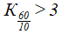
qumlarni turli donador (bir jinsli emas) deb hisoblanishi kerak.
836. Bir jinsli emaslik koeffitsiyenti quyidagi formula boʻyicha hisoblab topilishi lozim:
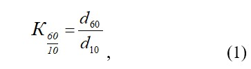
bu yerda:
d60 — zarralarning diametri, mm; tarkibidagi kichikroq zarralarning summasi ushbu tuproqda 60 foiz (ogʻirligi boʻyicha) tashkil etadi;
d10 — zarralarning diametri mm; tarkibidagi kichikroq zarralarning summasi ushbu tuproqda 10 foiz (ogʻirligi boʻyicha) tashkil etadi;
837. Qumlar
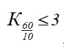
, shuningdek 0,10 — 0,25 mm oʻlchamli mayda qumlar ogʻirligiga koʻra 90 foiz va undan koʻproqni tashkil etsa, bir xil oʻlchamli deb hisoblanishi kerak.
838. Tuproq gʻovaklari hajmining suv bilan toʻlish darjasi G quyidagi formula asosida aniqlanishi kerak:
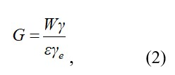
bu yerda:
W — tuproq ogʻirligining tabiiy namligi birlik ulushlarda;
y — tuproq zarralari materialining solishtirma ogʻirligi t/m3;
yv— suvning 1 t/m3 ga teng deb olingan solishtirma ogʻirligi;
— tuproqning gʻovakdorlik koeffitsiyenti, gʻovaklar hajmining tuproqning zich qismiga nisbati sifatida aniqlanishi lozim.
839. Qumloq tuproqlarni:
agar namlik darajasi G ≤ 0,5 boʻlsa, kam namli;
agar namlik darajasi 0,5 < G ≤ 0,8 boʻlsa, nam;
agar G > 0,8 boʻlsa suvga toʻyingan hisoblanishi lozim.
22-jadval
Tuproq turi
Tuproqlarning xili
Tarkibida 2 dan 0,05
mm gacha oʻlchamli qum zarralari mavjudligi, ogʻirligiga koʻra foizlarda*
Plastiklik miqdori
Wp
Qumloq
yengil yirik
> 50
1 ≤ Wp ≤ 7
yengil
> 50
changsimon
20 — 50
ogʻir changsimon
< 20
Qumoqloy
yengil
> 40
7 ≤ Wp ≤ 12
yengil changsimon
< 40
ogʻir
> 40
12 ≤ Wp ≤ 17
ogʻir changsimon
< 40
Loy
qumloqli
> 40
17 ≤ Wp ≤ 27
changli
Oʻlchamiga koʻra changsimonlardan
kichik oʻlchamli
0,05-0,005
mm
semiz
Meʼyor belgilanmagan
Wp > 27
* Yengil yirik qumloqlar uchun zarralarning oʻlchami 2 — 0,25 mm oraligʻida belgilanadi.
840. Suv singdirish darajasiga koʻra yoʻl toʻshamasi uchun ishlatiladigan tuproqlar quyidagilarga ajratilishi lozim:
drenajlovchi, bu turga qoyali va yirik parchali tuproqlar, oʻrta va yirik kattalikdagi shagʻalli qumlar, shuningdek quyidagi shartlarga javob beradigan mayda qumlar: tuproqning filtrlash koeffitsiyenti Kf ≥ 0,5 d boʻlishi;
tarkibidagi 0,1 mm dan kichik zarralar miqdori ≤ 15 foiz kam boʻlishi, shu jumladan 0,005 mm oʻlchamli qumlar ogʻirligiga koʻra ≤ 2 foiz boʻlishi;
drenajlanmaydigan tuproqlarga loyli tuproqlar, shuningdek yuqorida koʻrsatilgan shartlarga javob bermaydigan mayda qumlar boʻlishi.
841. Ortiq darajada namlangan tuproqli oʻymalarni qumli yostiq bilan toʻldirish uchun filtrlash koeffitsiyenti Kf ≥ 1,0 m/d boʻlgan drenajlovchi tuproqlar qoʻllanishi lozim.
842. Filtrlash koeffitsiyentini mazkur tuproq uchun GOST 22733-2016 ga muvofiq belgilanadigan standart zichlik uslubida hisoblangan maksimal zichlik holatida mazkur SHNQning 2-ilovasiga muvofiq aniqlash kerak.
843. Loyli tuproqlar oʻzining donadorligini va plastikligini mazkur SHNQning 22-jadvalini hisobga olgan holda turlarga va xillarga ajratilishi, tarkibida saqlanayotgan qum zarralariga va plastiklik miqdoriga koʻra belgilashda tuproq xili farqli boʻlgan holatlarda, tuproqning plastiklik miqdoriga oid nomlanishini qabul qilish lozim.
844. Agar koʻrib chiqilayotgan tuproq namunasida zarralarning 20 — 50 foiz zarralar (ogʻirligiga koʻra) 2 mm dan yirik boʻlsa, loyli tuproqning mazkur SHNQning 22-jadvalida belgilangan nomiga “shagʻalli” (zarralar silliqlangan boʻlsa) yoki “siniq toshli” (agar zarralar silliqlanmagan boʻlsa) sifatlar qoʻshilishi kerak.
845. Loyli tuproqlarni ularning holatiga koʻra, mazkur SHNQning 23-jadvaliga muvofiq, V konsistensiyasi koeffitsiyentining kattaligiga qarab farqlash zarur, quyidagi formula asosida aniqlanadi:
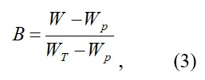
bu yerda:
W — tuproqning holati aniqlanayotgan paytdagi uning tabiiy namligi foizda;
Wr — zuvala holatidagi namligi, GOST 5180-2015 boʻyicha aniqlanishi;
WT — oqma holatidagi namligi GOST 5180-2015 boʻyicha aniqlanishi lozim.
23-jadval
Tuproqlarning turlari
Konsistensiyasi koeffitsiyenti, V
Qattiq qumloqlar
V < 0
Plastik qumloqlar
0 < V ≤ 1
Oquvchan qumloqlar
V < 1
Qumoq tuproqli va qattiq loylar
V < 0
Qumoq tuproqli va yarim qattiq loylar
0 < V ≤ 0,25
Qumoq tuproqli va qattiq plastik loylar
0,25 < V ≤ 0,50
Qumoq tuproqli va yumshoq plastik loylar
0,50 < V ≤ 0,75
Qumoq tuproqli va oqma plastik loylar
0,75 < V ≤ 1
Qumoq tuproqli va oqma loylar
V > 1
846. Agar loyli tuproqlarning namligi ularni koʻtarma holatida talab etilgan qiymatga qadar zichlash imkonini beradigan miqdordan katta boʻlsa, mazkur SHNQga asosan ortiqcha namlangan deb hisoblanishi, oʻymalar doirasida esa ularning konsistensiyasi V > 0,25 koeffitsiyentiga ega boʻlishi kerak.
847. Alohida turdagi tuproqlar maʼlum sharoitlarda mazkur SHNQning 2-ilovasiga muvofiq noqulay qurilish xususiyatlariga ega boʻlgan tuproq va qoya jinslarni oʻz ichiga oladi, ular yoʻl toʻshamasini loyihalashda hisobga olinishi kerak.
848. G ≤ 0,6 koʻrsatkichiga ega loyli tuproqlarni namlikdan choʻkadigan turga kiritish lozim, ular quyidagi qiymatga ega boʻlishi lozim:
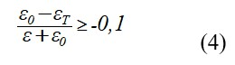
bu yerda:
e0 — tabiiy tuzilma va namlikdagi namunaning gʻovakdorlik koeffitsiyenti;
et — oʻsha tuproq namunasining namligi oquvchanlik chegarasidagi holatida gʻovakdorlik koeffitsiyenti.
849. Boʻkish-kirishish darajasining umumiy koʻrsatkichi ∆ Vs quyida keltirilgan qiymatga ega boʻlsa, boʻkuvchan loyli tuproqlarga kiritish kerak.
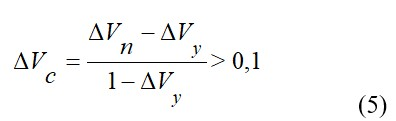
bu yerda:
∆Vn va ∆Vu — tegishli tarzda boʻkish va kirishish darajasini ifodalovchi koʻrsatkichlar, ular quyidagi formulalar asosida aniqlanishi lozim:
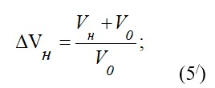
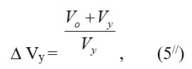
bu yerda:
Vo — tuproq namunasining dastlabki hajmi — sm3;
Vn Vu — namunalarning tegishli tarzda namlanganda erkin boʻkishidan keyingi hamda quritilgandan keyingi erkin kirishishi hajmlari.
∆ Vs ≥ 0,20 koʻrsatkichiga ega boʻlgan tuproqlar kuchli boʻkuvchan deb hisoblanadi.
850. Koʻtarmalar uchun tuproqlardan ularning xususiyatlarini va holatini, loyihalashtirilayotgan obyekt joylashgan joyga, shuningdek tuproq olinadigan zaxira joylashgan yerning tabiiy sharoitlarini hisobga olgan holda quyidagi 24-jadvalga muvofiq foydalanish lozim.
24-jadval
Tuproq turi
Qoʻllash boʻyicha cheklovlar
Qoʻllanishi
Qoyali, yirik parchali,
drenajlanuvchan qumloq, shuningdek yengil va yirik qumloqlar
Yoʻl toʻshamasi turgʻunligi sharoitiga
qarab cheklovlarsiz
Barcha holatlarda
Drenajlanmaydigan maydo va changsimon
qumlar va yengil qumloqlar
Qoʻllanishi yer ishlarini bajarish
sharoitlariga bogʻliq tarzda cheklangan (suvga toʻkishda)
Barcha sharoitlarda, shu jumladan I
va II tur botqoqliklarda (931-band), suv oqimlari va suv havzalarini hamda
III turdagi botqoqliklarni kesib oʻtishda, suvga tuproq toʻkish zaruriyati bulgan
holatlar bundan istisno etiladi
804-bandda koʻrsatilganlardan
tashqari barcha loyli tuproqlar
Tuproq ishlari bajarilayotgan
davrda asos tuprogʻining namlanish sharoitlariga koʻra hamda koʻtarma
uchun ishlatilayotgan tuproqning holatiga koʻra qoʻllash cheklaniladi.
Belgilangan meʼyorlardan yuqori
boʻlmagan namlik (834-band) ning barcha sharoitlarida; quruq asosga — balandligi
12 m* gacha koʻtarmalar
uchun; nam va hoʻl asoslarda — koʻtarmaning belgilangan balandlikdan kam
boʻlmagan holati uchun (33-jadval)
* 12 m dan yuqori koʻtarma uchun loyli tuproqlarni qoʻllash shartlari hisob-kitoblarning natijasiga qarab belgilanadi.
851. Barcha sharoitlarda ham koʻtarmalar uchun tabiiy omillar taʼsiri ostida holatini oʻzgartirmaydigan yoki sezilarli darajada oʻzgartirmaydigan hamda yoʻl toʻshamasining mustahkamligiga va turgʻunligiga taʼsir koʻrsatmaydigan tuproqlardan foydalanish lozim.
852. Bunday tuproqlar qatoriga quyidagilarni kiritish kerak:
sust nurovchi va yengil nurovchi yumshalmaydigan togʻ jinsidan tashkil topgan qoyali;
yirik maydalangan qumloqlar, bundan mayda drenajlanmaydigan va changsimon qumlar istisno etgan holda;
yengil yirik qumloqlar.
853. Bunday tuproqlardan, shuningdek kislotali va neytral metallurgik shlaklardan faqat mahalliy sharoitlarni hisobga olgan holda iqtisodiy mulohazalar eʼtiboridan foydalanishga yoʻl qoʻyiladi.
854. Tabiiy omillar taʼsiri ostida holati va xususiyatlari sezilarli darajada oʻzgaradigan tuproqlardan, shlaklar va kul shlakli qotishmalardan koʻtarmaga ishlatiladigan material sifatida faqat belgilangan cheklovlarni hisobga olgan holda foydalanish kerak.
855. Bunday tuproqlar qatoriga quyidagilar kiritilishi lozim:
mazkur SHNQning 1-ilovasiga muvofiq yengil nuraydigan yumshaluvchan togʻ jinslaridan iborat qoyali tuproqlar;
mayda drenajlanmaydigan va changsimon qumlar;
loyli tuproqlar;
mazkur SHNQga muvofiq alohida turdagi ayrim tuproqlar.
856. Bunday tuproqlarni, shuningdek shlaklarni va kul shlakli qotishmalarni qoʻllash imkoniyatlari va maqsadga muvofiqligi mahalliy sharoitlardan hamda texnik-iqtisodiy mulohazalardan kelib chiqib, koʻtarma konstruksiyasini, shuningdek tabiiy omillarning yoʻl toʻshamasiga yemiruvchi taʼsiridan muhofaza qilish usullarini asosli hisobga olgan holda belgilanadi. Bunda, mergelli, slanetsli va semiz loylar; boʻrli, talkli va trepel tuproqlar, shuningdek shlaklar va kul shlakli qotishmalardan faqat qayirdagi va choʻktiriladigan koʻtarmalarning ust qismi uchun foydalanishga yoʻl qoʻyiladi.
857. Asosan koʻtarmalar uchun quyidagi tuproqlardan foydalanish mumkin emas:
mazkur SHNQning 2-ilovasiga muvofiq ortiq darajada shoʻrhok loyli tuproq;
mazkur SHNQga muvofiq yoʻl qoʻyiladigan namlikdan yuqori namlikdagi loyli tuproq;
torf, balchiq, mayda qum va balchiq hamda organik moddalar aralashgan loy tuproq;
koʻp miqdorda oʻsimliklar ildizi mavjud boʻlgan yerning ustki qatlami, — balandligi 1 m gacha koʻtarmalar uchun;
talkli, pirofillitli tuproqlar va suvli asosdagi koʻtarmalar uchun mazkur SHNQga muvofiq trepelli tuproq hamda uzoq muddatga suv toʻxtab qolish ehtimoli mavjud boʻlgan uchastkalarda;
tarkibida meʼyordan ortiq darajada gips saqlovchi quyidagi 25-jadvalda keltirilgan tuproqlar.
25-jadval
Qoʻllash sharoitlari
Tarkibidagi gipsning eng koʻp miqdori foiz larda
1. II — IV yoʻl-iqlim zonalari doirasida quyidagi asosli koʻtarmalar uchun:
a) quruq va nam
30
b) suvli
20
2. V yoʻl-iqlim zonalari doirasida quyidagi asosli koʻtarmalar uchun:
a) quruq va nam
40
b) suvli
30
3. Barcha yoʻl-iqlim sharoitlarida temir yoʻllarning qayirdagi va choʻktiriladigan koʻtarmalari uchun
5
858. Faqat istisno etilgan holatlarda mazkur SHNQda sanab oʻtilgan tuproqlardan III — V toifadagi yoʻllar uchun yoʻl toʻshamasining mustahkamligini va turgʻunligini taʼminlovchi qoʻshimcha tadbirlarni majburiy tarzda amalga oshirilgach foydalanishga yoʻl qoʻyiladi.
859. Gidromexanizatsiya vositalari yordamida bunyod etilayotgan koʻtarmalar uchun drenajlanadigan tuproqlardan foydalanish zarur. Mayda, changsimon qumloqlardan barpo etilayotgan koʻtarmalar jismida oʻlchami 0,1 mm dan kichik boʻlgan zarralar 15 foizdan ortiq boʻlmasligi sharti bilan foydalanish kerak.
860. Doimiy ravishda suvga choʻkib turadigan koʻtarmalarning quyi qismiga, barpo etilayotganda suvga tuproqni sochish talab etilgani uchun, qoyali va yirik parchali tuproqlardan, yirik yoki oʻrtacha yiriklikdagi qumdan, shuningdek loyli qismi 6 foizdan koʻp boʻlmagan yengil yirik qumloqlardan foydalanish lozim.
861. Loyihalarda sust nurovchi togʻ jinslaridan olingan qoyali tuproqlarni istisno etgan holda barcha turdagi tuproqlardan barpo etiladigan koʻtarmalarni zichlash nazarda tutilishi kerak.
862. Sust nurovchi togʻ jinslaridan olingan qoyali koʻtarmalarining ustki qismiga shagʻalli material qoʻllashni nazarda tutish lozim.
863. Balandligi 0,5 m gacha boʻlgan koʻtarmalarning asosida va oʻymalardagi asosiy maydonning ostida hamda “nolinchi joylarda” agar tuproqlarning tabiiy zichligi meʼyorda belgilanganidan past boʻlsa qabul qilinadi.
864. Yengil nuraydigan qoyali tuproqli (argillitli, alevrolitli, loyli qoyali va boshqa), shuningdek yirik parchali tuproqlar, shu jumladan loy toʻldirgichli koʻtarmalarni zichlash quyidagi vositalar orqali taʼminlanishi lozim:
zichlovchi mashinalar yurib oʻtishining soni, dastlabki sinov boshqaruvi asosida belgilanishi;
uyulayotgan qatlamlarning qalinligini va alohida toshlar oʻlchamini chegaralash;
mazkur SHNQning 26-jadvalining 1-bandida keltirilgan meʼyorlar asosida choʻkish ehtimoli uchun zaxira qoldirish.
26-jadval
Sharoitning tavsifi
Koʻtarmaning loyihadagi
balandligiga nisbatan zaxira miqdori foiz da
1. Qoyali va yirik parchali tuproqlardan
koʻtarmalarni zichlovchi mashinalar yordamida qatma-qat barpo etilganda
3
2. Qumloq va loyli tuproqlardan
koʻtarmalar zichlash koeffitsiyenti K asosida barpo etilganda:
K = 1,03 (811-band)
0,3
K = 0,95; K=0,98
0,5
3. Oʻta namlangan loyli tuproqdan barpo
etilgan koʻtarma
2-3
4. Yengil nuraydigan yumshaluvchan qoyali va
yirik parchali tuproqlar
1-3
865. Qumloq va loyli tuproqli koʻtarmalar jismida talab etilgan zichlik
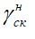
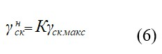
bu yerda:
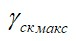
— maksimal zichlik (foydalanilayotgan tuproq skeletining hajmiy ogʻirligi) g/sm3 larda standart zichlash GOST 22733-2016 talablarida aniqlanishi lozim.
K — zichlashning minimal koeffitsiyenti mazkur SHNQning 27-jadvalga muvofiq qabul qilinishi kerak.
27-jadval
Koʻtarmaning qismi
Liniyalar uchun zichlashtirilayotgan
qatlamlarning umumiy qalinligi, m da
Liniyalar uchun “K” koeffitsiyenti
I, II toifadan past va ikkinchi
yoʻllar uchun
III toifadagi
I toifadan past boʻlmagan va
ikkinchi yoʻllar uchun
II, III
toifadagi**
Ustki
1,0
0,5
0,98; 1,03
0,98; 0,95
Pastki
Koʻtarmaning balandligiga bogʻliq
0,95
0,95*; 0,90
Oʻymalar va balandligi 0,5
m gacha boʻlgan koʻtarmalar asosi
0,5
0,5
1,03 — 0,98
0.95; 0,98
* Yer yuzasining tuzilishi notekis boʻlgan qismlarida, shuningdek oʻrta va katta koʻpriklarga yaqinlashish yuli uzunligi 100 m gacha boʻlgan va suv bosadigan qismlarida belgilanadi.
** IV va V toifadagi liniyalar uchun zichlash koeffitsiyentining minimal qiymati koʻtarmaning butun balandligi boʻylab 0,90 ga teng qilib belgilanadi.
866. Qumloq va loyli tuproqlarni zichlash koeffitsiyentining mazkur SHNQning 27-jadvalida keltirilgan meʼyorlardan kamaytirilishiga faqat namligi past boʻlgan tuproqlarning, xususan quruq barxan qumlarining, yoxud oʻta namlangan loyli tuproqlarning fizik xossalariga koʻra ushbu qiymatga erishishning imkoni boʻlmagan holatlarda yoʻl qoʻyiladi.
867. Kamaytirilgan zichlash koeffitsiyenti qiymatlarini standart zichlash qoidalarini hisobga olgan holda mazkur SHNQga asosan qabul qilish, shuningdek yoʻl toʻshamasi asosiy maydonining umumiy turgʻunligini va mustahkamligini taʼminlaydigan qoʻshimcha choralarni nazarda tutish kerak.
868. K ≤ 0,95 boʻyicha barpo etilayotgan koʻtarmalar uchun mazkur SHNQning 26-jadvalida keltirilgan meʼyorlar asosida choʻkish uchun zaxira qoldirish lozim.
869. Bu holda koʻtarmaning yuqori (0,5 — 1,0 m qalinlikdagi) qismi uchun har qanday holatlarda ham zichlangandan keyingi mutlaq zichligi belgisi 1,45 g/sm3 dan kam boʻlgan tuproqdan foydalanishga yoʻl qoʻyilmaydi.
870. Koʻtarma jismidagi tuproqning talab etiladigan zichligi zaxiradagi (karyerdagi) tuproqning tabiiy zichligidan yuqori boʻlgan holatlarda, koʻtarmalar — Vhh uchun kerak boʻladigan tuproqning haqiqiy hajmi (m3) quyidagi formula asosida aniqlanishi kerak:
Vhh = Vk K1, (7)
bu yerda:
Vk — loyihalashtirilayotgan koʻtarmaning hajmi m3 da,
K1 — koʻtarma jismidagi solishtirma zichlikning koeffitsiyenti boʻlib, uni quyidagi formula boʻyicha aniqlanishi lozim.
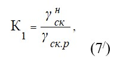
bu yerda:
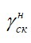
va
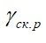
— tuproqning g/sm3 da ifodalangan zichligi boʻlib, tegishli ravishda koʻtarmada talab etilgan va zaxiradagi (karyerdagi) tabiiy zichliklarni ifodalaydi.
2-§. Tuproq namligining meʼyorlari
871. Zichlanishi talab etiladigan qumloq va loyli tuproqlarning namligini ulardan koʻtarmalarda foydalanish ehtimoli mavjud boʻlganda, shuningdek zichlik koeffitsiyentini aniqlashda hisobga olish zarur. Koʻtarmalar uchun ustuvor ravishda optimal namligi Wo yoki shunga yaqin namlikka ega boʻlgan tuproqlardan foydalanish lozim.
872. Optimal namlikning sondagi ifodasini ushbu tuproqni sinash chogʻida standart zichlash GOST 22733-2002 ga asosan aniqlash kerak.
873. Agar foydalanilayotgan tuproqlarning tabiiy namligi Wo (zaxirada, karyerda, oʻymada) 0,9 dan kam boʻlsa, ularni optimal namlikka erishguncha sunʼiy namlantirish lozim.
874. Tuproqning talab etilgan zichligini taʼminlab beradigan maksimal namlik ushbu tuproqni standart zichlash egri chizigʻi asosida aniqlanadi yoki quyidagi formula asosida topilishi kerak (dastlabki taxmin sifatida):
Wpr = KuWo, (8)
bu yerda:
Ku — “oʻta namlik” koeffitsiyenti, mazkur SHNQning 28-jadval boʻyicha qabul qilinadigan;
Wo — mazkur tuproq uchun optimal namlik mazkur SHNQning 2-ilovaga muvofiq
28-jadval
Tuproqning xillari
Ku koʻtarma jismidagi tuproqning talab etilgan zichlik koeffitsiyenti holatida
K > 0,98
K=0,95
Changsimon qumlar; yengil yirik qumloq …………….
1,35
1,60
Yengil va changsimon qumloq ……………………………
1,25
1,35
Ogʻir changsimon qumloq yengil va yengil changsimon qumoq tuproqlar ……………………………………….
1,15
1,30
Ogʻir va ogʻir changsimon qumoqlar ……………………
1,05
1,20
3-§. Tabiiy asoslar va joylarning turlari
875. Koʻtarmalar uchun tuproq tanlashda va yoʻl toʻshamasini loyihalashtirishda tabiiy asoslarni namlik sharoitlariga koʻra baholash mazkur SHNQning 29-jadvalida keltirilgan koʻrsatkichlarni hisobga olgan holda bajarilishi lozim.
876. Tuproqlarning mustahkamligiga yoki koʻtaruvchanlik salohiyatiga hamda hisoblangan yuklanish qiymatiga koʻra temir yoʻl yoʻl toʻshamasining tabiiy asosini mustahkam, yetarli darajada mustahkam emas va boʻsh turlariga ajratilishi kerak.
877. Qoyali jinslardan, shuningdek yirik parchali, qumli, qattiq va yarim qattiq loyli jinslardan tuzilgan tabiiy asoslar mazkur SHNQ ga koʻra mustahkam turlarga kiritilishi lozim.
878. Yetarli darajada mustahkam boʻlmagan asoslarga tabiiy jihatdan sernam va suvli, loyli qattiq plastik va yumshoq plastik boʻlgan tuproqlar kiradi, bunda asosning solishtirma choʻkishi loyihalashtirilayotgan koʻtarma tuproqning talab etilayotgan zichlikda solishtirma choʻkishidan katta boʻlsa, mazkur SHNQ ga muvofiq umumiy choʻkishning hisoblangan qiymati esa 0,10 m dan ortiq boʻlishi kerak.
29-jadval
Asosning turi
Namlanganlik koʻrsatkichlari
1. Quruq
Yer ustki oqib ketish sharoitlari yaxshi; 1
m gacha boʻlgan chuqurlikdagi loyli tuproqlar namligi Wr +
0,25 Wp dan koʻp emas, tuproq suvlari mavjud emas yoki yer sathidan 2 m
koʻproq chuqurlikda joylashgan.
2. Nam
Yer ustki oqib ketish sharoitlari yomon; 1
m gacha boʻlgan chuqurlikda loyli tuproqlar sovuq mavsumdan oldin Wr
+ 0,25 Wp dan Wr + 0,75 Wp gacha
namlikka ega boʻladi, sizot suvlar chuqurligi esa yer sathidan 1
m dan koʻproq chuqurlikda joylashadi.
3. Hoʻl
Yer ustki oqib ketish sharoiti yoʻq; 1
m gacha boʻlgan chuqurlikda loyli tuproqlar sovuq mavsumdan oldin Wr
+ 0,75 Wp ga teng va undan koʻproq namlikka ega
boʻladi, sizot suvlar chuqurligi esa yer sathidan 1
m gacha chuqurlikda joylashadi; sizot suvlarning yer sathiga chiqish joylari
mavjud.
879. Boʻsh asos turiga torf, balchiq, va loyli tuproqlardan tuzilgan tabiiy jihatdan hoʻl asoslar kiritilishi kerak.
27-bob. Yoʻl toʻshamasining asosiy konstruksion koʻrsatgichlari
1-§. Yoʻl toʻshamasining ustki koʻrinishi
880. Yoʻl toʻshamasi asosiy maydonining peregonlardagi koʻndalang koʻrinishini temir yoʻl izlarining soniga va tuproqning turiga bogʻliq ravishda qabul qilish lozim.
881. Drenajlanmaydigan tuproqlardan barpo etilgan bir yoʻlli yoʻl koʻtarmasining yuqori qismining koʻndalang koʻrinishini kengligi 2,3 m, balandligi 0,15 m boʻlgan trapetsiya shaklida va asosi yoʻl toʻshamasining kengligiga teng qilib, biryoʻla ikkita yoʻl uchun barpo qilinadigan yoʻl toʻshamasining yuqori qismi koʻndalang koʻrinishini esa uchburchak shaklda balandligi 0,2 m, asosi yoʻl toʻshamasining kengligiga teng qilib loyihalashtirilishi kerak.
882. Drenajlanmagan tuproqlardan ikkinchi yoʻlning yoʻl toʻshamasining yuqori qismini mavjud yoʻl toʻshamasidan oʻymalar uchun 0,04 va toʻkmalar uchun 0,02 ga teng koʻndalang bir nishabli qiyalik bilan loyihalashtirilishi kerak.
883. Drenajlanmagan tuproqlardan ikkinchi yoʻlning yoʻl toʻshamasini loyihalashda, ikkinchi yoʻlning yoʻl toʻshamasi yuqori qatlamini drenajlangan tuproqlar bilan toʻldirish (mavjud yoʻlning chekka belgisidan balandda) yoki boshqa konstruktiv yechimlari orqali mavjud yoʻl toʻshamasidan yer usti suvlarining ishonchli drenajlanishini taʼminlash choralari koʻrilishi lozim.
884. Mavjud yoʻlni kengaytirishda, agar kerak boʻlsa, unda mavjud boʻlgan deformatsiyalarni bartaraf etish choralarini koʻrish kerak.
885. Bitta yoʻlli va ikkita yoʻlli drenajlanadigan tuproqdan barpo etiladigan yoʻl toʻshamasining asosiy maydonchasi gorizontal tarzda loyihalashtirilishi lozim.
886. Yoʻl toʻshamasining qumli ballastlarga qoʻyiladigan talablarga mos keluvchi drenajlangan tuproqlardan tuzilgan loyihadagi qirgʻoqlari kesimdagiga nisbatan oqizma prizmaga ushbu uchastkadagi va unga yondosh boʻlgan uchastkalardagi drenajlanmaydigan tuproqdan barpo etilgan ballast qatlamining qalinligidagi farqni mazkur SHNQning 4-ilovaga koʻra qoʻshilganiga teng ravishda koʻtarilgan boʻlishi lozim.
887. Drenajlanadigan, ballast materiallarga qoʻyiladigan talablarga javob bermaydigan qumliklarda loyihadagi va kesimdagi qirgʻoqlar belgisi oʻrtasidagi farq oqizma prizma balandligiga teng boʻlishi kerak.
888. Ustki qismi nurashga qarshi loyli tuproq bilan mustahkamlanadigan qumdan tuzilgan yer koʻtarmalarida barcha holatlarda ham oqizma prizma nazarda tutilishi lozim (bunday holda loyihadagi qirgʻoq bilan kesimdagi qirgʻoq uygʻunlashib ketadi).
889. Asosiy maydonchaning kengligi loyihadagi qirgʻoq meʼyori bilan muvofiqlashtirilishi kerak.
2-§. Peregonlardagi asosiy maydonchaning kengligi
890. Bitta yoʻlli yangi temir yoʻl liniyalari asosiy maydonchasining minimal kengligi peregonlar doirasidagi yoʻlning toʻgʻri uchastkalarida quyidagi 30-jadvalda keltirilgan meʼyorlarga muvofiq belgilanishi lozim.
30-jadval
Temir yoʻllarning toifasi
Asosiy yoʻllarning soni
Bitta yoʻlli temir yoʻllarning
toʻgʻri uchastkalaridagi yoʻl toʻshamasi (m) asosiy maydonchasining kengligi (h)
foydalanilgan tuproqqa muvofiq belgilanishi.
Loyli, loy toʻldirgichli yirik
boʻlakli va boshqa drenajlanmaydigan
Drenajlanadigan, ballast
materiallarga nisbatan qoʻyiladigan talablarga javob beruvchi
Drenajlanadigan, ballast materiallarga
nisbatan qoʻyiladigan talablarga javob bermaydigan, shuningdek qurgʻoqchil
hududlardagi qumloq
Yuqori tezlikdagi, tezyurar va
alohida yuk tashuvchi, I
2
11,7
10,7
11,1
I va II
1
7,6
6,6
6,9
III
1
7,3
6,3
6,7
IV
1
7,1
6,2
6,4
V
1
7,1
5,5
5.7
Izoh:
1. Drenajlanuvchi tuproq deganda ballast materiallarga nisbatan qoʻyiladigan talablarga javob beruvchi, > 0,5 mm oʻlchamdagi zarralari 50 foiz dan koʻp, < 0,1 mm oʻlchamli zarralar 10 foiz gacha (shu jumladan loyli — 2 foiz gacha) boʻlgan massasiga koʻra qumloqlar tushuniladi.
2. Ikki qatlam ballastli yoʻl toʻshamasining kengligini yoʻlning yuqori qurilmasiga moslab belgilash chogʻida 0,4 m ga teng minimal jiyak bilan taʼminlanganligini tekshirish zarur.
3. Qurilayotgan temir yoʻllarda yuqori tezlikdagi harakatlanish mavjud boʻlsa, shuningdek ikkinchi yoʻlni qurish chogʻida asosiy maydonchaning kengligi 4,5 m dan iborat yoʻl oraligʻini hisobga olgan holda belgilanadi.
4. Boʻsh zamin ustiga barpo etiladigan va choʻkish uchun zaxira qoldirilib barpo etiladigan yer koʻtarmalari koʻtarmalarining kengligi choʻkish jarayoni toʻliq tugallangandan keyin loyihada belgilangan ballastni taʼminlash imkonini beradigan hisob-kitob asosida belgilanishi zarur.
3-§. Himoya qatlami
Oldingi tahrirga qarang.
891. Tarkibida massasiga nisbatan 50 foizdan ortiq miqdorda 2 mm dan 0,05 mm gacha boʻlgan zarralarni saqlovchi qumloqlardan tashqari namligiga koʻra oquvchanlik darajasi WL > 0,23 boʻlgan barcha turdagi loyli tuproqlardan qurilgan yoʻl toʻshamasida sovuq taʼsirida shishish deformatsiyalarining oldini olish maqsadida asosiy maydoncha zonasidagi konstruksiya kuchaytirilishi lozim. Bunda ballast prizmasi ostida drenajlovchi tuproqli himoya qatlami yoki bazalt-kompozit geotekstil materiallar bilan birgalikda ishlaydigan drenajlovchi himoya qatlami qurilishi nazarda tutilishi kerak.
(891-band Oʻzbekiston Respublikasi qurilish va uy-joy kommunal xoʻjaligi vazirining 2026-yil 13-maydagi 01/2-21-sonli buyrugʻi (hisob raqami 404, 02.06.2026-y.) tahririda)
892. Alohida yuklar tigʻiz tashiladigan, tezyurar va yuqori tezlikdagi yoʻlovchi tashuvchi liniyalar uchun himoya qatlami ikki qavat qilib belgilanishi lozim.
Oldingi tahrirga qarang.
893. Asosiy maydonchaning talab darajasidagi, yaʼni relsning egiluvchan choʻkishi yoʻl qoʻyiladigan meʼyordan ortiq boʻlishini istisno etadigan mustahkamligini taʼminlash uchun yuqori qatlam zichlanish koeffitsiyenti kamida 1,0 deformatsiya moduli 120 MPa boʻlgan shagʻal-tosh-qumli aralashmadan barpo etiladi va zarur holatlarda geosintetik materiallar (bazalt-kompozit, geotekstil, geopanjara, geotoʻr) yotqizish orqali toʻldirilishi lozim.
(893-band Oʻzbekiston Respublikasi qurilish va uy-joy kommunal xoʻjaligi vazirining 2026-yil 13-maydagi 01/2-21-sonli buyrugʻi (hisob raqami 404, 02.06.2026-y.) tahririda)
Oldingi tahrirga qarang.
894. Drenajlovchi tuproqli himoya qatlamini (bazalt-kompozit, geotekstil materiallar bilan, yoki ularsiz) barcha turdagi yuqori darajada namlangan (IL > 0,25) loyli tuproqlardan foydalanilgan hollarda ham qoʻllash kerak.
(894-band Oʻzbekiston Respublikasi qurilish va uy-joy kommunal xoʻjaligi vazirining 2026-yil 13-maydagi 01/2-21-sonli buyrugʻi (hisob raqami 404, 02.06.2026-y.) tahririda)
895. Koʻpchishning oldini olish maqsadida zichlanish koeffitsiyenti 0,98 dan kam boʻlmagan va deformatsiya moduli 80 MRa boʻlgan ikkinchi pastki qatlam qalinligi drenajlanuvchi tuproqdan toʻkilishi lozim.
896. Himoya qatlamini barpo etish uchun quyidagi drenajlovchi tuproqlar qoʻllaniladi: yirik parchali (fraksiyasi 0,2 m dan katta boʻlmagan) qumloq toʻldirgichli, qumlar (mayda changsimonlaridan tashqari).
897. Yuqori tezlikdagi temir yoʻllarning koʻtarma himoya qatlami 0,2 foizdan koʻp boʻlmagan miqdorda gips saqlashiga yoʻl qoʻyiladi.
898. Texnik-iqtisodiy hisob-kitoblar bilan asoslangan hollarda, qurilish hududida talab etilgan konditsiyadagi tuproqlar mavjud boʻlmagan ayrim holatlardagina drenajlanmaydigan mayda va changsimon tuproqlardan foydalanishga yoʻl qoʻyiladi. Bunda holda himoyalovchi qatlamning konstruksiyasini va uning qalinligini alohida loyiha bilan yakka tartibda belgilanishi kerak.
899. Himoya qatlamining usti shpal tagligi darajasidan kamida 0,4 m pastda boʻlishi lozim.
900. Himoya qatlamining asosidagi loyli tuproqning sathini yangi liniyalarda koʻtarma oʻqidan qiyalik tomonlarga qarab ikki taraflama 0,04 ‰ kiyalik bilan rejalashtirilishi lozim.
901. Himoya qatlamining yuqori qismi mazkur SHNQ hamda ushbu SHNQning 5-ilovasi talablariga muvofiq drenajlangan tuproqlarda — gorizontal, mayda va changli qumlarda — drenaj prizmasi shaklida rejalashtirilishi lozim.
902. Ballast prizma ostidagi himoya qatlamining qalinligi yoʻl toʻshamasi tuprogʻining turiga va uning holati, temir yoʻlning toifasiga va himoya qatlami tuprogʻining turiga, tuproqning muzlash chuqurligiga qarab hisob-kitoblar asosida belgilanishi kerak.
903. Himoya qatlami qalinligini aniqlash hisob-kitoblari quyidagi ikki sharoitdan kelib chiqib bajarilishi lozim:
asosiy maydonchaning belgilangan mustahkamligi taʼminlanishi, yoʻl qoʻyiladigan qiymatlardan yuqori poyezd bosimi ostida paydo boʻladigan deformatsiyalanishning istisno etilishi;
sovuqdan boʻrtishi yoki tez koʻpchiydigan tuproqlarning koʻpchishi (WL>0,40 holatida) taʼsiri ostida yoʻllarning deformatsiyalanishi boʻyicha cheklash.
904. Drenajlanuvchi tuproqdan geotekstilyni qoʻllamasdan tuzilgan himoya qatlamlarini loyihalashtirishda uning asosi qalinligi hisob-kitoblar asosida belgilanishi shart, ammo iqlim sharoitlariga bogʻliq ravishda qumloqloy va loylar uchun 0,3 — 0,5 m dan hamda qumloqlar uchun 0,2-0,3 m dan kam boʻlmagan hisobda tayinlanishi kerak.
905. Himoya qatlamlari qoyali va boshqa drenajlanadigan tuproqlardan tuzilgan yoʻl toʻshamasiga, shuningdek sunʼiy inshootlarga tutashib ketadigan uchastkalarda sovuqdan bir tekis boʻrtmaslikni istisno etish uchun yoʻlning joriy holatiga muvofiq keladigan uzunasiga bir tekis oʻtishni taʼminlaydigan ulanmalar boʻlishini nazarda tutish lozim.
Oldingi tahrirga qarang.
906. Alohida shoxobchalar doirasida asosiy, qabul qilish-ortib joʻnatish hamda doʻngak yoʻllarda va strelkali koʻchalarda zarur boʻlgan holatlarda himoya qatlami drenajlanuvchi tuproqdan majburiy tarzda bazalt-kompozit, geotekstil materiallari yotqizish sharti bilan barpo etiladi, bu holda yoʻl toʻshamasi ustining konstruksiyasi alohida tartibda loyihalashtirilishi kerak.
(906-band Oʻzbekiston Respublikasi qurilish va uy-joy kommunal xoʻjaligi vazirining 2026-yil 13-maydagi 01/2-21-sonli buyrugʻi (hisob raqami 404, 02.06.2026-y.) tahririda)
907. Temir yoʻllarning egri chiziq doirasidagi yoʻl toʻshamasini kengaytirilgan tarzda loyihalashtiriladi, bunda uning kengligi egri chiziqning radiusiga bogʻliq tarzda mazkur SHNQning 31-jadvaliga muvofiq belgilanishi lozim.
908. Yoʻl toʻshamasi kengaytmasi egri chiziqning tashqi tarafida boʻlishi nazarda tutilishi kerak.
909. Meʼyordagi kenglikdan oshirilgan kenglikka oʻtuvchi egri chiziqlar doirasida amalga oshirish lozim.
910. Ikki yoʻlli va koʻp yoʻlli temir yoʻllarning yoʻl toʻshamasi kengligi bir yoʻlli oddiy yoʻl toʻshamasiga nisbatan mazkur SHNQning 30-jadvali yoʻlning egri chiziqlarda kengayib borishini hisobga olgan holda yoʻllar oraligʻi oʻlchamiga mazkur SHNQning 3-ilovasiga muvofiq oshirish kerak, bunda ikkinchi yoʻl oʻqidan loyihalashtirilayotgan drenajlanmaydigan turoqlardan tuzilgan yoʻl toʻshamasining qirgʻogʻigacha boʻlgan masofa 3,8 m dan kam boʻlmasligi, qoyali va drenajlanadigan tuproqlardan tuzilganigacha esa kamida 3,3 m boʻlishi kerak.
31-jadval
Egri chiziq radiusi, m
Kengaytma, m
Egri chiziq radiusi, m
Kengaytma, m
Yoʻllar toifasi
Yuqori tezlikdagi, tezyurar, tigʻiz yuk tashiladigan, I — III
IV — V
5000 va koʻproq
-
-
-
3000 — 4000
0,2
2000 va koʻproq
-
2500 — 1800
0,3
1800 — 1200
0,1
1500 — 700
0,4
1000 — 700
0,2
600 va kamroq
0,5
600 va kamroq
0,3
911. Koʻtarmalarning ustki kengligini katta koʻpriklari ustunlarining orqa qirrasidan 10 m masofada har bir tarafdan koʻtarma oʻqidan kamida 0,5 m ga orttirilishi va keyingi 15 m masofa davomida meʼyordagi kenglikka oʻtkazilishi lozim.
912. Boʻsh asosda barpo etiladigan, shuningdek choʻkishi uchun zaxira qoldirib yotqiziladigan koʻtarmalarning kengligi mazkur SHNQning 26-jadvali talablariga muvofiq, yoʻl toʻshamasi toʻliq choʻkkanidan keyin talab etilgan meʼyorlarni taʼminlash zarurati mazkur SHNQning 30-jadvalini hisobga olib oʻrnatish kerak.
4-§. Koʻtarmalarning balandligi va oʻymalarning chuqurligi
913. Koʻtarmalarning maksimal balandligi va oʻymalarning chuqurligi boʻylama kesimni texnik-iqtisodiy maqsadlarda loyihalashtirilayotganda belgilanishi lozim.
914. Koʻtarmalarning minimal balandligini qor va qum uyumlari ostida koʻmilib qolmaydigan sharoit asosida hamda suv bosgan uchastkalarda yoʻl toʻshamasining qirgʻogʻini tegishlicha balandlikda temir yoʻllarni loyihalashtirishga oid talabalarga muvofiq belgilanishi kerak.
915. Bundan tashqari, asos tuprogʻining turiga hamda koʻtarma uchun foydalanilayotgan tuproqning holatiga bogʻliq ravishda nam va hoʻl asosli uchastkalar doirasida yoʻl toʻshamasi asosiy maydonchasining mustahkamligini va turgʻunligini taʼminlashga yoʻnaltirilgan tadbirlarni nazarda tutish lozim.
916. Qor uyumi ustidan oʻtadigan koʻtarmalar qirgʻogʻi balandligini, shuningdek suv oʻtkazgich inshootlar ustidagi koʻtarmalar va dambalarning qirgʻoqlarini koʻtarish darajasi temir yoʻllarni loyihalashtirishga oid talablarga muvofiq belgilanishi kerak.
28-bob. Yoʻl toʻshamasi loyihalarining turlari
917. Oddiy muhandislik-geologik, gidrogeologik va boshqa tabiiy sharoitli uchastkalarda quyidagi namunaviy konstuksiyalardan foydalanib loyihalashtirilishi kerak:
mustahkam va turgʻun tabiiy asosdagi koʻtarmalar joyning koʻndalang qiyaligi 1:3 dan tik boʻlmagan, balandligi 12 m gacha uchastkalarda — yirik parchali va qattiq loyli hamda yarim qattiq tuproqlardan; 6 m gacha — loyli qattiq plastikli tuproqlardan; 20 m gacha — toshlardan tuzilgan koʻtarmalar;
I va III turdagi chuqurligi 4 m gacha botqoqliklar (1005÷1006-band), II turdagi chuqurligi 3 m gacha botqoqliklar; I turdagi botqoqliklar tubining koʻndalang qiyaligi 1:10 dan tik boʻlmagan; II turdagi — 1:15 dan tik boʻlmagan; III turdagi — 1:20 dan tik boʻlmagan koʻtarmalar;
mazkur SHNQning 2-ilovasiga muvofiq tabiiy asosdagi shoʻrhok tuproqli koʻtarmalar;
qoyali boʻlmagan tuproqdagi 12 m dan chuqur boʻlmagan va maqbul muhandislik-geologik sharoitlarda qoyali jinslardagi 16 m dan chuqur boʻlmagan oʻymalar;
harakatlanuvchan qumlar hududidagi yoʻl toʻshamasi;
sunʼiy sugʻoriladigan uchastkalardagi yoʻl toʻshamasi.
918. Murakkab tabiiy sharoitga ega boʻlgan uchastkalardagi yoʻl toʻshamasi va suvni chetlatuvchi qurilmalarni, shuningdek inshoot va uning asosining mustahkamligi hisoblab topilishi talab etiladigan murakkab konstruksiyalarni qoʻllash zarur boʻlgan holatlarda, alohida tartibda loyihalashtirish kerak.
919. Alohida tartibda loyihalashtiriladigan obyektlarga quyidagilar kiritilishi lozim:
balandligi 12 m dan yuqori yirik parchali va qattiq hamda oʻrtacha qattiq loyli tuproqlardan; 6 m dan yuqori qattiq plastik loyli tuproqlardan; 20 m yuqori toshlardan tuzilgan koʻtarmalar;
4 m dan chuqur boʻlgan I va III tur doirasidagi botqoqliklar va II turdagi 3 m dan chuqur botqoqliklar;
I turdagi botqoqliklar tubining koʻndalang qiyaligi 1:10 dan tik, II turdagi — 1:15 dan, III turdagi — 1:20 dan qiyaroq boʻlganlari;
turli konsistensiyada torf mavjud boʻlgan, tasniflash imkoni boʻlmagan botqoqliklardagi koʻtarmalar;
boʻsh tabiiy asosli uchastkalar mazkur SHNQda keltirilgan doirasidagi, shu jumladan suv oʻtkazuvchi inshootlar joylashgan yerlardagi, asos doirasida shuningdek sizot suvlari chiqib turgan joylardagi koʻtarmalar;
vaqtinchalik suv bosgan uchastkalardagi, shuningdek suv havzalari va suv oʻzanlari bilan kesishgan joylardagi koʻtarmalar;
qiyaligi 1:3 dan tikroq togʻ yonbagʻirlaridagi yoki quyi nishabi 12,0 m ortiq oʻymalar balandligi 12 m dan yuqori boʻlgan qoyasiz tuproqli hamda balandligi 16 m dan baland boʻlgan muhandislik-geologik sharoitlari qoyali tuproqlardagi koʻtarmalar;
togʻ jinslaridagi 16 m dan kam boʻlmagan balandlikda noqulay muhandislik-geologik sharoitlarda, shu jumladan qiyaligi koʻtarma tarafga 1:3 dan ortiq qiyalikda boʻlgan togʻ jinslari qatlamlarda joylashgan oʻymalar;
konsistensiyasining koeffitsiyenti 0,5 dan yuqori darajada oʻta namlangan loyli tuproqlardagi yoki suv tashuvchi qatlamlar yashiringan oʻymalar;
ortiq darajada namlangan hududlarda joylashgan changsimon loyli tuproqlardagi chuqurligi 6 m dan ortiq boʻlgan, shuningdek iqlim omillari taʼsiri ostida mustahkamligini va turgʻunligini keskin pasaytiradigan loyli tuproqlardagi oʻymalar;
murakkab muhandislik-geologik sharoitlardagi yoʻl toʻshamasi (qiyaligi 1:3 dan katta togʻ yonbagʻirlari, koʻchki, oʻpirilish, siljish, toshlar yoki qor bosqini ehtimoli, sel, jarlik, karst, muz qatqalogʻi, yer ostki muzlari mavjud boʻlgan yoki hosil boʻlish ehtimoli bor uchastkalarda);
kuchli koʻpchib chiqadigan loyli tuproqlardan tuzilgan yer koʻtarmalari;
barpo etish chogʻida gidromexanizatsiyadan hamda yalpi portlatish ishlaridan foydalaniladigan yoʻl toʻshamasi;
seysmik darajasi 8 balli va undan yuqori hududlardagi yoʻl toʻshamasi; suvni chetlatuvchi va drenaj qurilmalari va inshootlari.
29-bob. Koʻtarmalar
1-§. Quruq va mustahkam asosdagi koʻtarmalar
920. Quruq va mustahkam asosdagi koʻtarmalar uchun zaxiradagi, trassaga yondash karyerlardagi va yaqin oʻymalardagi tuproqdan foydalanish kerak.
921. Koʻtarmalarning konstruksiyasini koʻtarmaning balandligiga, foydalanilayotgan tuproqning turiga, hududning koʻndalang qiyaligiga va yer ishlarini bajarish usullariga bogʻliq ravishda mazkur SHNQning 3 va 4-rasmlaridagi koʻndalang kesimlardan foydalanilgan holda hamda mazkur SHNQning 6-7-ilovalariga muvofiq tuzish kerak.
922. Suvni chetga yoʻnaltiruvchi qurilmalarni va zaxiralarni ushbu SHNQning 35 va 36-boblariga muvofiq loyihalashtirish lozim.
923. Qiyaliklarning yonbagʻirini tuproqning turiga va koʻtarmaning balandligiga bogʻliq tarzda mazkur SHNQning 32-jadvaliga muvofiq belgilash kerak.
924. Koʻtarmalar asosini tayyorlash ishlarining tarkibi loyihalanayotgan koʻtarmaning balandligini va joyning koʻndalang qiyaligini hisobga olib belgilanishi kerak, shu jumladan: balandligi 0,5 m boʻlgan koʻtarmalar ostidagi chimlarni tekis uchastkalarda joylashgan va qiyaligi 1:10 gacha boʻlgan togʻ yonbagʻirlaridagi chimlarni; balandligi 1,0 m gacha boʻlgan, qiyaligi 1:10 dan 1:5 togʻ yonbagʻirlari chegaralaridagi koʻtarmalar ostidagi chimlarni yoʻq qilish; balandligi 1,0 m dan ortiq boʻlgan, qiyaligi 1:10 dan 1:5 togʻ yonbagʻirlari chegaralarida koʻtarma asosi yuzasini chopib yumshatish; chimlarni yoʻq qilish va kengligi 1 dan 4 m gacha boʻlgan pogʻonalar kesib chiqish; balandligi 2 m gacha boʻlgan togʻ yonbagʻirlari chegarasida, qiyaligi 1:5 dan 1:3 gacha boʻlgan, koʻtarmaning balandligidan qatʼi nazar, mazkur SHNQning 8-ilovasi hamda 5-rasmiga muvofiq pogʻonalar kesib chiqish kerak.
32-jadval
Foydalanilayotgan tuproq turi
Koʻtarmalarning balandligi, m, boʻlganda
yonbagʻiri qiyalik darajasi, ...gacha
6
12
1. Togʻ jinslarining kam nuraydigan toshlari
1:1,3
1:1,5
2. Xarsang (palaxsa), shagʻal (mayda tosh),
yirik qumli tosh (maydalangan tosh), yirik qum, katta va oʻrtacha kattalikdagi qum, metallurgiyaga oid shlak
1:1,5
1:1,5
3. Mayda va changsimon qum, loy tuproqlar,
shu jumladan sogʻ tuproq va sogʻ tuproqsimon qumoq tuproq
1:1,5
1:1,75*
ust qismining balandligi
6 m
1:1,5
1:1,75*
past qismi balandligi
6 m gacha
1:1,75
1:2,0*
4. Qurgʻoqchil iqlim sharoitidagi mayda qum va barxan qumlari
1:1,75
1:2,0
* Ortiqcha namlangan hududlarda changsimon tuproqlar uchun va bir xil oʻlchamli mayda qumlar uchun.
Izohlar: 1. Kam nuraydigan togʻ jinslari toshlaridan iborat balandligi 20 m gacha, yonbagʻir qiyaligi 1:1,5 gacha boʻlgan koʻtarmalarni loyihalashtirishga yoʻl qoʻyiladi.
2. Qattiq plastikli konsistensiyasi (0,25 < V < 0,50) boʻlgan loy tuproqlardan iborat koʻtarmalar balandligini I — III toifali yoʻllar uchun balandligini 6 m gacha va qiyaligi 1:2 gacha, IV va V toifali yoʻllar uchun qiyaligi 1:1,75 qilib loyihalashtirish; balandligi 6 m dan yuqori boʻlgan koʻtarmalarning qiyalik qiyaligi va konstruksiyasini hisob-kitoblar natijalariga koʻra belgilanadi.
3. Botqoqliklardagi mayda va changsimon qumli, yengil yirik va yengil qumloq koʻtarmalar konstruksiyasi va yonbagʻir qiyaligi 935-950 bandlar qoidalariga muvofiq olinadi.
925. Koʻtarmalar asosidagi pogʻonalar ust qismini quyiga qaratib 0,01 — 0,02 miqdorda nishab qilish zarur; pogʻonalarning devorlarini ularning balandligi 1 m gacha boʻlgan holda loyihalash mumkin. Vertikal holatda, 2 m gacha balandlikka ega boʻlganda esa — qariyb 1:0,5 nishab boʻlishi lozim.
926. Togʻ yonbagʻirlarida drenajlanadigan va oʻsimlik bilan qoplanmagan tuproqlarda barpo etiladigan koʻtarmalar uchun asosni tayyorlash ishlari nazarda tutilmagan. Togʻ jinslaridan iborat togʻ yonbagʻirlarida tuziladigan koʻtarmalar uchun asosni tayyorlash ishlar mahalliy sharoitlardan kelib chiqib belgilanishi lozim.
2-§. Nam va hoʻl asoslardagi koʻtarmalar
927. Nam va hoʻl asosdagi koʻtarmalarni ustuvor ravishda drenajlanadigan tuproqdan barpo etilishini loyihalash zarur.
928. Butun koʻtarmani yoki uning ostki qismini barpo etishda drenajlanadigan tuproqdan foydalanilganda yoʻl toʻshamasining mustahkamligini taʼminlash boʻyicha maxsus tadbirlar nazarda tutilmasligi kerak.
929. Loy tuproqlardan, mayda va changsimon qumlardan, shuningdek boshqa drenajlanmaydigan tuproqlardan nam va hoʻl joylarda koʻtarmalarni barpo etish uchun foydalanilishiga faqat quyidagi shartlarga rioya etilgan holda yoʻl qoʻyiladi:
loy tuproqning namligi ushbu SHNQning talablariga mos boʻlishi lozim;
yoʻl toʻshamasi va uning asosi mustahkamligini va turgʻunligini taʼminlaydigan choralar belgilanishi shart, shu jumladan asos tuprogʻini quruqlashtirishni suvni chetlatish zovurlarining chuqurlashtirilishi, bermalar (supachalar) oʻrnatish orqali amalga oshirishni nazarda tutish lozim.
930. Asosning koʻtaruvchanlik qobiliyatini barcha uchastkalarda oʻtkaziladigan hisob-kitoblar orqali tekshirish, yetarli darajada mustahkam va boʻsh asoslardagi koʻtarmalar uchun mazkur SHNQga muvofiq choʻkish ehtimolini hisobga olish, maqsadga muvofiq holatlarda esa qurilish davri bilan choʻkish vaqtini cheklovchi tadbirlarni belgilash kerak.
931. Yuqori tezlikdagi, tezyurar, yuk tashish alohida tigʻiz I — III toifadagi yoʻllar yoʻl toʻshamasi qirgʻogʻining balandligini yer ustki suvlarining hisoblangan sathi 20 sutkadan koʻproq yoki sizot suvlar sathiga nisbatan mazkur SHNQning 33-jadvali boʻyicha belgilanishi kerak.
33-jadval
Yoʻl toʻshamasi tuproqlari
Yoʻl-iqlim hududlari doirasida yoʻl
toʻshamasi qirgʻogʻining berilgan balandligi (20 sutka dan katta) yer ustki
suvlarining yoki sizot suvlarning sathiga nisbatan balandligining minimal
miqdori m
II
III
IV
V
Filtrlanish
koeffitsiyenti 0,5 va undan koʻproq m/d boʻlgan drenajlanuvchi tuproqlar
1,1
0,9
0,75
0,5
Drenajlanmaydigan
mayda changsimon qum va yengil qumloqlar
1,5
1,2
1D
0,8
Ogʻir
changsimon qumloqlar, yengil qumoqlar
2,2
1,8
1,5
1,1
Ogʻir
changsimon qumoqlar, loylar
2,4
2,1
1,8
1,2
Izohlar:
1. Sust va oʻrtacha shoʻrhok yerlarda yoʻl toʻshamasi qirgʻogʻining balandligini sizot va yer ustki suvlar sathidan balandligini 20 foiz ga (qumloq va loy uchun 30 foiz), kuchli shoʻrlangan joylarda esa 50 foiz ga koʻpaytirish lozim.
2. Doimiy sunʼiy sugʻorish qoʻllanadigan IV, V hududlarda yoʻl toʻshamasi qirgʻogʻining balandligini sizot yoki yer ustki suvlar sathidan 0,4 m, III hududda esa 0,2 m koʻtarish lozim.
3. Yer ustki va sizot suvlar uzoq vaqt toʻxtab turadigan yerlarda yoʻl toʻshamasi qirgʻogʻining balandligi, qoidaga koʻra, suv sathining muzlaydigan chuqurligidan kam boʻlmasligi shart, bundan drenajlanadigan turoqlar istisno etiladi, ushbu holatda bu ifoda 1/3 miqdorida qisqartirilishi mumkin.
4. Oʻymalardagi yoʻl toʻshamasi qirgʻogʻining balandligi miqdorini 0,2 m ga oshirish lozim.
932. IV va V toifadagi yoʻl koʻtarmalari qirgʻogʻining balandligi miqdorini qurilish olib borilayotgan joydagi yoʻllarni ekspluatatsiya qilish tajribasidan kelib chiqib, mazkur SHNQning 33-jadvalida keltirilgan talablarga nisbatan 1,5-martadan koʻp boʻlmagan miqdorda olishga yoʻl qoʻyiladi.
933. Sizot suvlarning hisoblangan sathi sifatida kuzgi hisoblangan sath darajasi olinadi, zarur maʼlumotlar boʻlmagan holda esa, tuproqning loylanish darajasining eng yuqori chegarasiga qarab belgilanadigan eng yuqori sath darajasi olinishi kerak.
934. Sizot suvlarning sathini pasaytirish yoki ularni chiqarib tashlash, tuproqni almashtirish, kapillyar uzilgich qatlamlari oʻrnatish uchun drenajlar oʻrnatilishini mazkur SHNQda koʻrsatilgan yoʻl toʻshamasi balandligi qirgʻogʻini koʻtarishga oid talablarning bajarilishi texnik-iqtisodiy hisob-kitoblarga koʻra maqsadga nomuvofiq deb topilgan holatlarda nazarda tutilishi lozim.
935. Kapillyar uzilgich qatlamlarini drenajlanuvchi tuproqlardan kamida 0,50 m qalinlikda loyihalashtirish zarur.
3-§. Oʻta namlangan loy tuproqlardan tuzilgan koʻtarmalar
936. Qattiq plastik konsistensiyali (0,25
937. Oʻta namlangan loy tuproqlardan tuzilgan koʻtarmalarni mazkur SHNQning 4-rasmida keltirilgan I — III toifadagi temir yoʻllar koʻndalang kesimiga nisbatan loyihalashtirish lozim.
938. IV va V toifa temir yoʻllar koʻtarmalari uchun mazkur SHNQning 5-rasmidagi koʻndalang kesimni qoʻllashining zarurligi, shuningdek tuproqning ustki qatlami qalinligi h3 loyihalarda mahaliiy sharoitlarni hisobga olgan holda mazkur SHNQning 8-ilovasiga muvofiq asoslantirilishi kerak.
939. I — III toifa temir yoʻllar koʻtarmalari uchun tuproqning ustki qatlami qalinligi h3 mazkur SHNQning 5-rasmida keltirilgan koʻndalang kesimga nisbatan qoʻllanilganda mazkur SHNQning 34-jadvalida berilgan qiymatlarlar boʻyicha belgilanishi lozim.
34-jadval
Koʻtarma uchun foydalanilayotgan loy tuproq konsistensiyasi koeffitsiyentining hisoblangan qiymati
Qatlamning qalinligi h3, m
0,26
0,30
0,35
0,40
0,50
0,50
Izoh: h3 qatlamining miqdorini belgilashda 33-jadvaldagi izohning 3-bandi talablariga rioya etish zarur
940. h3 qalinligini mazkur SHNQning 34-jadvalida keltirilgan meʼyordan ortiq boʻlishiga mahalliy sharoitlar hisobga olingan holda texnik-iqtisodiy asoslantirilganda yoʻl qoʻyiladi.
941. Oʻta namlangan loy tuproqlardan tuzilgan koʻtarmalar loyihasida koʻtarma jismining keyinchalik zichlashishi ehtimolini hisobga olingan tadbirlar, shu jumladan koʻtarma ustki qismining balandligi yoki kengligi boʻyicha mazkur SHNQning 26-jadvalidagi qiymatlarga mos konstruksiya zaxira qoldirish belgilanishi kerak.
942. Oʻta namlangan loy tuproqli yoʻl toʻshamasining usti namlanmagan loy tuproqli yoki drenajlanadigan tuproqli yoʻl toʻshamasi bilan tutashadigan joylarni koʻndalang kesimi nishabini 0,05 dan oshirib yubormasdan loyihalash lozim.
943. Oʻta namlangan tuproqli koʻtarmalar loyihasini ishlab chiqish chogʻida tuproqlarni zaxiralarda yoki konuslarda quritishga qaratilgan meliorativ tadbirlarni, shuningdek tuproqni soʻndirilmagan ohak yoki boshqa qurituvchi qoʻshimchalar, shu jumladan issiqlik va elektr stansiyalarning va boshqa korxonalarning tegishli talablariga mos keladigan kul yordamida quritishni nazarda tutish lozim.
944. Qurituvchi qoʻshimchalarning miqdori ushbu qoʻshimchalarning xususiyatlarini, shuningdek quritiladigan tuproqning turini hamda namlanganlik darajasini hisobga olgan holda belgilanishi kerak.
30-bob. Oʻymalar
1-§. Oʻta namlangan loy tuproqlardagi oʻymalar
945. Oʻymalarni chuqurligiga, tuproq xossalariga, shuningdek hududning iqlimiy sharoitlariga bogʻliq tarzda loyihalash kerak.
946. Yon bagʻirlarning qiyaligi mazkur SHNQning 35-jadvalida keltirilgan qiymatlarga muvofiq ochiladigan oʻymalar tuprogʻining turi, holati va xossalariga bogʻliq ravishda olinishi lozim.
35-jadval
Tuproqlar va togʻ jinslarining
turi
Qiyaliklar balandligi m, ...gacha
Qiyaliklar tikkaligi
1.
Sust nurovchi qoyali tuproqlar
16
1:0,2
2.
Qoyalilar:
yengil
nuraydigan, yumshalmaydigan
16
1:0,5 — 1:1,5,
yengil
nuraydigan, yumshaladigan
6
1:1,0
oʻshaning
oʻzi
6 dan 12 gacha
1:1,5
3.
Yirik parchali, qumloq va bir jinsli loytuproqlar, shu jumladan sogʻ
tuproqsimon, qattiq, yarim qattiq va qattiq plastik konsistensiyali.
12
1:1,5
4.
Qumlar:
Mayda
barxan qumi
2
1:10,0
oʻshaning
oʻzi
12
1:1,75
5.
Qurgʻoqchil iqlimli mintaqadagi sogʻ tuproq
12
1:0,1 — 1:0,5
6.
Qurgʻoqchil emas iqlimli mintaqadagi sogʻ tuproq
12
1:0,5 — 1:1,5
Izoh:
1. Sust nurovchi qoyali tuproqlarda vertikal qiyaliklarni qoʻllash nazarda tutilishiga yoʻl qoʻyiladi.
2. I va II toifa temir yoʻl koʻtarmalaridagi balandligi 6 m gacha changsimon loy tuproqlardan tuzilgan qiyaliklarni oʻta namlanuvchan mintaqalarda 1:2 qiyalikda loyihalash lozim, 6 m dan yuqori yon bagʻirlarning qiyaliklarini hisob-kitoblar asosida belgilash lozim.
947. Chuqurligi 12 m gacha boʻlgan oʻta namlanmagan, changsimon boʻlmagan tuproqlardagi oʻymalarni mazkur SHNQning 9-ilovasi 6-rasmida keltirilgan koʻndalang kesimga muvofiq loyihalash kerak.
Chuqurligi 2 m gacha boʻlgan mayda va changsimon qumlardagi, changsimon tuproqlardagi, shu jumladan sogʻ tuproqsimon va sogʻ tuproqli yerlardagi oʻymalarni mazkur SHNQning 11-ilovasi 8-rasmidagi I va II koʻrinishda keltirilgan koʻndalang kesimlarga muvofiq loyihalash lozim.
948. Qurgʻoqchil iqlimli mintaqalarda, shuningdek atmosfera yogʻinlari toʻlaligicha singib yoki bugʻlanib ketadigan boshqa hududlarda drenajlanuvchi tuproqlardagi oʻymalarni mazkur SHNQning 10-ilovasi 7-rasmida keltirilgan koʻndalang kesimga muvofiq yoʻl chetidagi ariqlarsiz loyihalashtirish lozim.
949. Chuqurligi 2 m dan koʻp boʻlgan changsimon qumloqlardagi oʻymalarni mazkur SHNQning 20-rasmidagi namuna asosida loyihalashtirish lozim.
950. Chuqurligi 2 m dan koʻp boʻlgan oʻymalarni yoʻl chetki ariqlari tokchalari bilan mazkur SHNQning 12-ilovasi 9-rasmida keltirilgan changsimon loy tuproqlarda, shu jumladan sogʻ tuproqsimon, sogʻ tuproqlarda va loylarda loyihalash kerak.
951. Ariq cheti tokchalarining kengligi mazkur SHNQning 36-jadvalga muvofiq belgilanadi.
Ariq cheti tokchalarining sathini ariq tarafga 0,02 — 0,04 darajada nishab qilib olinadi, bundan togʻ jinslaridan iborat ariqlar uchun, shuningdek qurgʻoqchil iqlimli hududlardagi qumloq tuproqlar uchun nishab belgilanmasligiga yoʻl qoʻyiladi.
36-jadval
Tuproqning turi
Oʻymaning chuqurligi, m
Ariq cheti tokchalarining kengligi, m
Yengil nuraydigan togʻ jinslari, oʻta namlangan loy tuproqlar, shuningdek changsimon va soz tuproqsimon, soz tuproqlar
2 dan 6 gacha
6 dan 12*gacha
1,0
2,0
Mayda va changsimon qum
2 dan 12 gacha
1,0
* Togʻ jinslari uchun 16 m gacha yoʻl qoʻyiladi.
952. I-III toifadagi temir yoʻllar uchun qattiq plastikli (0,25 < V ≤ 0,50) konsistensiyadagi loy tuproqda barpo etilayotgan oʻymalarda asosdagi loy tuproqni drenajlanadigan tuproq bilan yoki asbet qazib oluvchi korxonalarning chiqindilari bilan mazkur SHNQning 13-ilovasiga muvofiq almashtirishni nazarda tutish kerak.
953. Almashtirilishi zarur boʻlgan qatlam qalinligi h3 ni 34-jadvalda keltirilgan qiymatlar asosida qabul qilinadi. Qalinlikni ushbu qiymatlardan oshirib belgilashga mahalliy sharoitni hisobga olingan texnik-iqtisodiy asoslangan holda yoʻl qoʻyiladi.
954. Qazib olingan transheyani tubining koʻndalang nishabi kamida 5‰ qilib belgilanishi kerak. Almashtirish uchun foydalanilayotgan drenajlanuvchi tuproq kamida 1,0 m/d ga teng filtrlash koeffitsiyentiga ega boʻlishi kerak.
955. Oʻta namlangan loy tuproqlardagi oʻymalarning yon bagʻirligi qiyaligi mazkur SHNQning 35-jadvalida keltirilgan qiymatlar asosida, ariq yonboshidagi tokchalarning kengligi esa mazkur SHNQning 36-jadvalidagi talablar asosida qabul qilinishi lozim.
956. V>0,5 konsistensiya koeffitsiyentiga ega boʻlgan loy tuproqlar uchun qatlam qalinligi h3 ni tuproqning mustahkamlik xossalariga va muzlashdan koʻpchishga moyillik darajasiga qarab, lekin 0,5 m dan kam boʻlmagan miqdorda belgilanishi kerak.
957. IV va V toifadagi yoʻllar uchun loy tuproqli asosni drenajlanadigan tuproq bilan almashtirish zarurati, shuningdek oʻymalarning qatlam qalinligi h3 texnik-iqtisodiy loyihalarning hisob-kitoblarida asoslangan boʻlishi lozim.
2-§. Togʻ jinslaridagi oʻymalar
958. Togʻ jinsidagi oʻymalarni maqbul muhandislik-geologik sharoitlarga ega boʻlgan uchastkalarda mustahkamligiga oid hisob-kitoblar oʻtkazmay loyihalashtirishga yoʻl qoʻyiladi, shu jumladan:
togʻ jinslari mustahkam joylanishi loyihalashtirilayotgan qiyalik doirasida boʻlsa;
qatlangan togʻ jinslarining zaiflashgan sathlari gorizontal, vertikal va nishablikda joylashgan xollarda, kiyalik yuzasida koʻtarma tomonga qarab yuvilish boʻlmaganda, hamda uvalanish yuzasi nishabligi burchagi tuproq ishqalanish burchagidan kichik boʻlganda.
959. Tik togʻ yonbagʻirlari doirasidagi, shu jumladan daryolarning siqilib oʻtadigan joylaridagi oʻymalarni, shuningdek togʻ jinslaridagi chuqurligi 6 m dan koʻproq oʻymalarni barcha holatlarda ham, agar ikkinchi yoʻl qurilishi yaqin 15 yil ichida qurilishi moʻljallanayotgan boʻlsa, ikki yoʻlli qilib loyihalashtirish lozim.
960. Kam nurovchi togʻ jinslaridagi temir yoʻl oʻymalarini mazkur SHNQning 14-ilovasi 11-rasmida keltirilgan koʻndalang kesimlarga muvofiq loyihalashtirish kerak.
961. Chuqurligi 6 m gacha boʻlgan oʻymalarning past tarafdan kengligini 9 m ga, chuqurligi 6 dan 16 m gacha boʻlsa — 10 m ga teng qilib olish lozim.
962. Tirgak devorlar qurilgan taqdirda ushbu ifodalarni kamaytirish mumkin, bu holda yoʻl oʻqidan shpallarning tagligi darajasidagi qiyalikkacha masofasi oʻymani yasash uchun qoʻllanadigan usullariga bogʻliq ravishda belgilanadi va I, II toifali liniyalarda va ikkinchi yoʻllarda har qaysi tarafga kamida 3,7 m, III — V toifali yoʻllarda bir tarafga 3,7 m, ikkinchi tarafga esa 3 m ni tashkil etishi lozim.
963. Oʻymalarning yonbagʻiri qismida kengligi 6 m, chuqurligi 2,5 m va balandligi 2,8 m boʻlgan kameralarni loyihalash va ularni koʻtarmaning har qaysi tarafidan 300 m oraliqda shaxmat tartibida joylashtirish lozim. Kameralar oʻrtasidagi oraliqlarda mazkur SHNQning 14-ilovasi a — rasmiga koʻra har 50 m da kengligi 3 m, chuqurligi 1 m, balandligi 2 m boʻlgan tokcha joylashtirilishi lozim.
964. Oʻymalarning atrofidagi suvni chetlashtirilishini tartibga solish uchun koʻtarma asosiy maydonchasining har ikki tarafida mazkur SHNQning 14-ilovasi a-rasmiga muvofiq mahalliy toshlardan yoki beton bloklaridan yasalgan hoshiyalar oʻrnatishni yoki mazkur SHNQning 11-ilovasi b-rasmiga muvofiq yoʻl cheti ariqlar qurishni, ularning chuqurligini gidravlik hisob-kitoblar bilan asoslagan holda nazarda tutish kerak.
965. Asoslangan holatlarda yoʻl toʻshamasi asosini mazkur SHNQning 14-ilovasi g-rasmiga muvofiq yirik parchali toshlardan yoki qumloq tuproqdan tayyorlashni loyihalashtirishga yoʻl qoʻyiladi. Sust nurovchi togʻ jinslaridagi oʻymalar qiyaligi mazkur SHNQning 16-jadvaldagi talablar asosida belgilanishi lozim.
966. Yengil nurovchi togʻ jinslaridagi oʻymalarni ariq yonboshida tokchalar mazkur SHNQning 15-ilovasi 12-rasmiga, shuningdek yoʻlni qiyaliklardan toʻkilib tushadigan nurash materiallaridan himoyalash uchun toʻsib turuvchi yoʻl chetidagi ariq-transheyalar mazkur SHNQning 16-ilovasi 13-rasmiga koʻra loyihalanishi kerak.
967. Oʻymalar yon bagʻri qiyaligini jinslarning holatiga va xossalariga, qatlamlanish xususiyatiga, qiyaliklarning balandligiga va oʻymani tayyorlash usullariga bogʻliq ravishda mazkur SHNQning 35-jadvaliga, ariqqa yondosh tokcha kengligini esa mazkur SHNQning 36-jadvaliga muvofiq belgilash lozim.
968. I — III toifadan past boʻlmagan yoʻllar uchun transheyalarning kengligi L va chuqurligi ht ni tegishli tarzda 4,0 va 1,1 m ga teng qilib olish kerak. Oʻymalarning qiyaligidan va togʻ yonbagʻirlaridan alohida toshlarning qulab tushish ehtimoli mavjud boʻlgan uchastkalar doirasida transheyalarning kengiligi va chuqurligini hisob-kitob maʼlumotlari asosida belgilanadi.
IV — V toifadagi yoʻllarda transheyalar qoʻllanishining maqsadga muvofiqligi va ularning oʻymalardagi oʻlchamlari loyihalarda asoslab berilishi kerak.
969. Yengil nurovchi yumshaladigan togʻ jinslarida oʻymalarni mazkur SHNQning 9-ilovasi 6-rasmiga va mazkur SHNQning 12-ilovasi 9-rasmiga koʻra koʻndalang kesimlarga muvofiq, mazkur SHNQning 35-jadvaliga koʻra belgilanadigan qiyalik tikkaligi bilan hamda mazkur SHNQning 36-jadvali boʻyicha ariqqa yondosh tokchalar kengligi bilan loyihalashtirish lozim.
970. Elyuvial va delyuvial qatlamlardagi toshli oʻymalar yon bagʻrining yuqori qismini qatlam qavatining kattaligiga, jins turiga va uning yemiriluvganlik darajasiga qarab 1:1 dan 1:1,5 gacha qiyalikda loyihalashtirish kerak.
971. Agar uvalangan qatlamlarning kattaligi 3 m dan koʻp boʻlsa, asoslantirilgan holda uvalangan qatlamlarning qiyaligidan togʻ jinslarini ajratib turadigan, kengligi kamida 3 m boʻlgan tokchalar qurilishini nazarda tutish lozim.
31-bob. Botqoqliklardagi koʻtarmalar
972. Botqoqliklardagi koʻtarmalarni quyidagilarni hisobga olgan holda loyihalashtirish lozim:
yoʻlning toifasini;
foydalanilayotgan tuproqning turini;
koʻtarmaning balandligini;
botqoqliklarning chuqurligi va holatiga koʻra belgilanadigan turi, koʻtarmaning asosi sifatida botqoqlikni tashkil etuvchi torfning va boshqa ajratmalarning holati va xossalarini;
botqoqlik mineral tubining qiyaligini;
joyning relyefini.
973. Temir yoʻllarning yoʻl poylarini loyihalashtirishi va qurilishi chogʻida botqoqliklarning uch asosiy turini farqlash kerak:
I-tur: balandligi 3 m gacha boʻlgan koʻtarmalarning taʼsiri ostida siqiladigan barqaror konsistensiyali torf bilan va boshqa botqoq ajratmalari bilan toʻlib qolgan;
II-tur: balandligi 3 m gacha boʻlgan koʻtarmalarning taʼsiri ostida eziladigan turli konsistensiyadagi torf va boshqa botqoq ajratmalari bilan toʻlib qolgan;
III-tur: balchiq va suv bilan, shu jumladan torf qobiqlari (spravinlar) ham mavjud aralashma bilan toʻlib qolgan.
974. Botqoqliklarning turlarini muhandislik-geologik tadqiqot boʻyicha quyidagicha aniqlanishi lozim:
chuqurligi mineral tub sathidan 1 m dan kam boʻlmagan geologik kesim;
torfning va boshqa botqoqlik ajratmalarining fizik-mexanik tavsiflari va sifat (vizual) koʻrsatkichlari mazkur SHNQning 2-ilovasi 51-jadvaliga muvofiq.
975. Botqoqlikda koʻtarmalarni loyihalashtirishda quyidagilarni nazarda tutish lozim:
botqoqliklarning trassa bilan kesishuvini tor joylarda, ustuvor ravishda chuqurligi kam va mineral tubning koʻndalang kesimi minimal uchastkalarda joylashtirishni;
koʻtarmaning choʻkish muddatini imkon qadar qurilish davri bilan cheklanishi; texnik jihatdan imkoni boʻlgan holatda va iqtisodiy jihatdan maqsadga muvofiq boʻlsa, botqoqlikni yer ishlari boshlagunga qadar quritishni;
butun koʻtarmani yoki uning pastki qismini barpo etish uchun ustuvor ravishda drenajlanuvchi tuproqlardan foydalanishni.
976. Drenajlovchi tuproq mavjud boʻlmagan holda I va II toifali botqoqliklardagi koʻtarmalar uchun changsimon qumdan, shuningdek yengil yirik va yengil qumloqdan foydalanishga yoʻl qoʻyiladi.
977. Ushbu tuproqlardan, shuningdek boshqa loy tuproqlardan III turdagi botqoqliklarda faqat koʻtarmalarning yerdan yuqori ustki qismi uchun quyidagi shartlarga rioya etgan holda foydalanish kerak:
koʻtarmaning pastki qismi uchun drenajlovchi tuproqlardan foydalanish;
drenajlovchi tuproqlardan tuzilgan koʻtarmaning pastki qismi qirgʻogʻining koʻtarilishi oʻlchamini botqoqlik yoki yer ustki suvi sathidan kamida 0,5 m qilib belgilash;
koʻtarmaning yer ustki qismi koʻndalang kesimini va uning ustki koʻrinishini foydalanilayotgan loy tuproqning yoki changsimon qumning turiga, holatiga va xossalariga mos tarzda loyihalash.
978. Botqoqliklar ustidan oʻtuvchi koʻtarma qirgʻogʻi koʻtarilishining oʻlchamini mazkur SHNQning 37-jadvalida keltirilgan qiymatlardan kam boʻlmagan holda belgilanilishi kerak.
979. Quritilgan yoki quritilayotgan botqoqliklar ustida changsimon qumdan va yengil qumloqdan barpo etilayotgan koʻtarmalar balandligini sizot suvlari yoki suvni chetga yoʻnaltiruvchi zovurlardagi suv sathidan 2,0 m baland va undan koʻproq qilib loyihalashtirishga yoʻl qoʻyiladi.
37-jadval
Koʻtarma uchun ishlatilayotgan tuproqning turi
Qirgʻoqning sath yuzasidan koʻtarilishi oʻlchami,
m
botqoq
suv
Drenajlovchi
Mayda qum, mayda yengil qumloq
Changsimon qum, yengil qumloq
0,8 — 1,2*
1,2 — 1,8**
1,5 — 2,0**
1,0
1,2 — 1,8**
-
* 0,8 va 1,2 — koʻtarmaning asosida torf toʻliq yoki qisman yoʻqotilganligiga mos ravishda balandlik oʻlchami.
** Muzlash chuqurligi 2,0 m va undan ortiq boʻlganda.
980. I-tur botqoqliklaridagi 3 m gacha balandlikdagi koʻtarmalarning asosidagi torfni butunlay yoki qisman chiqarib tashlab, uni botqoqlikning chuqurligiga qarab, mineral tuproq bilan almashtirilishini hisobga olib loyihalashtirish lozim.
981. Chuqurligi 2 m gacha boʻlgan botqoqliklarda mazkur SHNQning 17-ilovasi 14-rasmiga koʻra torfning toʻliq chiqarib tashlanishini nazarda tutish kerak.
982. Torfning qisman chiqarib tashlanishi chuqurligi 2 m dan ortiq boʻlgan botqoqliklarda mazkur SHNQning 18-ilovasi 15-rasmiga koʻra qoʻllashga yoʻl qoʻyiladi.
983. Torfning qisman chiqarib tashlanishida transheyaning chuqurligini belgilashda koʻtarmaning botqoqlik ustidagi balandligi va torfi chiqarib yuborilgan transheyaning chuqurligi summasini I va II toifa yoʻllar uchun kamida 3,5 m va III toifa yoʻllar uchun kamida 3 m qilib belgilash zarur, koʻtarmaning botqoqlik sathidan quyida joylashgan qismining balandligini va hisoblangan choʻkish qiymatini ham oʻz ichiga olgan koʻtarmaning umumiy balandligi bilan koʻtarmaning ostidagi torfning zichlangan qatlami oʻrtasidagi nisbat 2:1 dan kam boʻlmasligi kerak.
984. Torfni chiqarib tashlash transheyasining yonbagʻir qiyaligini ishlarni bajarish uslubiga muvofiq 1:0 dan 1:0,5 gacha belgilanishi lozim.
985. IV va V toifadagi yoʻllar uchun mazkur SHNQda keltirilgan koʻrsatkichlarni mahalliy sharoitlarni hisobga olib, smeta qiymatini asoslangan holda pasaytirish imkoniyatlaridan kelib chiqib belgilanishiga yoʻl qoʻyiladi.
986. Balandligi 3 m dan ortiq boʻlgan, I-turga mansub botqoqliklarda barpo etilayotgan koʻtarmalarni mazkur SHNQning 19-ilovasi 16-rasmiga koʻra keltirilgan koʻndalang kesimlarga muvofiq, torfni yoʻl toʻshamasi uchun tabiiy asos sifatida foydalanilishini moʻljallab loyihalashtirish kerak.
987. Torfni qisman chiqarilib yuborilgan taqdirda yer ishlarining hajmini yoʻl toʻshamasi asosidagi torfning siqiluvchanligi oqibatida koʻtarmaning choʻkishini hisobga olib aniqlash lozim.
988. Chuqurligi 4 m gacha boʻlgan botqoqliklardagi balandligi 4 m gacha boʻlgan koʻtarmalarning choʻkish miqdorini loyihani ishlab chiqish bosqichida yoki texnik ishchi loyihani tuzish vaqtida mazkur SHNQning 38-jadvalida keltirilgan talablar asosida aniqlash kerak. Koʻtarmalarni changsimon qumlardan va yengil qumloqlardan mazkur SHNQning 15-ilovasi b-rasmiga koʻra torfni chiqarib yuborish transheyalarining chekkalaridagi choʻkish hajmi S1 ni torfning qisiluvchan qalinligi mazkur SHNQning 19-ilovaga muvofiq h0 ning 10 foizga teng deb olishga yoʻl qoʻyiladi.
38-jadval
Torfning qisiluvchan qalinligi,
m
Torfning qisiluvchan qatlamining qalinligiga foiz hisobida choʻkish qiymati S koʻtarmalarning balandligi quyidagicha boʻlganda
< 3 m torf qisman chiqarib yuborilganda
3 dan 4 m gacha tabiiy asosda
2
2 dan 4 gacha
25
30
60
50
989. II a-turga mansub botqoqliklarda barpo etiladigan koʻtarmalarni, ularning balandligidan qatʼiy nazar, torfni toʻliq yoʻqotilishini, konsistensiyaning turgʻunligini va koʻtarmalar botqoqlikning mineral tubiga oʻtirishini hisobga olib, mazkur SHNQning 20-ilovasi 17-rasmida keltirilgan koʻndalang kesimlarga muvofiq loyihalash kerak.
990. Torf toʻplagich-zovurlarning chuqurligini ildizli oʻsimlik qoplamasi qalinligiga teng qilib, ammo 1 m dan kam boʻlmagan oʻlchamda olish lozim.
991. Oʻrmonli hududlarda III — V toifali temir yoʻllar uchun torfni chiqarib yuborish oʻrniga texnik-iqtisodiy asoslangan loyiha yechimi asosida koʻtarmalarni toʻshamalar ustiga oʻrnatishga quyidagi shartlar bilan yoʻl qoʻyiladi:
toʻshamalar ustidagi koʻtarmaning umumiy balandligi uning choʻkkan qismini hisobga olingan holda 3 m dan kam boʻlmasligi;
ekspluatatsiya qilish davrida toʻshamali yoʻl doimo sizot suvlar sathidan pastda boʻlishi.
992. III turdagi botqoqliklarda barpo etilayotgan koʻtarmalarni botqoqlikning mineral tubini koʻtarmaning asosi sifatida foydalanishni inobatga olib, avvaldan torfli qobigʻni chiqarib tashlashni mazkur SHNQning 21-ilovasi 18-rasmiga koʻra yoki chiqarmasdan loyihalash lozim
993. Keyingi holatda koʻtarmaning balandligi uning yer ostki qismini ham hisobga olganda torf qobigʻi sathidan 3 m dan kam boʻlmasligi kerak.
994. Torf qobigʻining siqilishi hisobiga koʻtarmaning choʻkish qiymati mazkur SHNQning 19-jadvalda keltirilgan talablar asosida aniqlanishi lozim.
995. Koʻtarmaning pastki qismi uchun drenajlovchi tuproqdan foydalanishni nazarda tutish lozim.
Botqoqlikdan quyi sathdagi koʻtarmalarning qiyalik nishabi mazkur SHNQning 39-jadvalida keltirilgan talablar asosida aniqlanishi kerak.
39-jadval
Tuproq turi
Qiyaliklar nishabi
Mayda va changsimon qum…………………………………………………
Yirik va oʻrtacha qum………………………………………………….
Shagʻal, mayda tosh, maydalangan tosh, sust nuraydigan jins toshi porod
1:4
1:2
1:1,5
996. Koʻtarmalar uchun loyiha boʻyicha torfdan yoʻl toʻshamasining asosi sifatida foydalanish nazarda tutilgan, shu jumladan qisman torfni chiqarib yuborish qoʻllangan holatlarda, tayyor yoʻl toʻshamasini statik va dinamik sinovdan oʻtkazishni nazarda tutish zarur.
997. Shoʻrlangan tuproqlar tarqalgan hududlarda yoʻl toʻshamasi, koʻtarmani barpo etish materiali yoki uning asosi sifatida foydalanilayotgan tuproqning shoʻrlanish darajasini va sifat xususiyatini hisobga olgan holda mazkur SHNQning 2-ilovasiga koʻra loyihalanishi kerak.
998. Sust va oʻrtacha shoʻrlangan tuproqlardan namunaviy konstruksiyadagi koʻtarmalar uchun ushbu SHNQning 29-bobi talablariga muvofiq foydalanishga yoʻl qoʻyiladi.
999. Kuchli shoʻrlangan tuproqlardan faqat quruq yoki quritilgan asosli va sizot suvlari chuqur joylashgan uchastkalarda, yoʻl toʻshamasining ustki qismini yanada shoʻrlanishidan himoya qilishga qaratilgan majburiy choralar koʻrish sharti bilan foydalanishga yoʻl qoʻyiladi.
1000. Oʻta shoʻrlangan tuproqlardan koʻtarmalarni barpo etish uchun foydalanishga yoʻl qoʻyilmaydi.
1001. Quruq tabiiy asosdagi sust va oʻrtacha shoʻrlangan tuproqdan tuzilgan koʻtarmalar ushbu SHNQga muvofiq loyihalanishi kerak.
1002. Kuchli va oʻta shoʻrlangan tuproqli joylarda quyidagilarni solishtirib koʻrish lozim:
ushbu uchastkani chetlab oʻtishni;
yoʻl toʻshamasini tashib keltirilgan shoʻrlanmagan, sust yoki oʻrtacha shoʻrlangan tuproqlardan barpo etish va bunda ularning yanada shoʻrlanishiga qarshi choralar koʻrish, shu jumladan koʻtarmalar balandligini mazkur SHNQning 33-jadvaliga muvofiq belgilash yoki sizot suvlarning sathini tegishli darajada pasaytirishni.
1003. Kuchli va oʻta shoʻrlangan tuproqli uchastkalarda hamda sust va oʻrta shoʻrlangan tabiiy asosli nam va hoʻl tuproqli uchastkalarda, koʻtarmalar jismidagi tuproqning yanada shoʻrlanishining oldini olish choralarini nazarda tutish kerak. Shu jumladan:
vaqti-vaqti bilan tepaga chiqib turadigan sizot suvlar mavjud boʻlgan holatlarda butun koʻtarmani yoki uning pastki qismini kamida 0,7 m balandlikda barpo etish uchun drenajlovchi tuproqdan foydalanish kerak;
mayda va changsimon qumlardan, loy va boshqa drenajlanmaydigan tuproqlardan tuzilgan koʻtarmalarning balandligini mazkur SHNQning 33-jadvalida keltirilgan meʼyordan kam boʻlmagan miqdorda belgilash kerak;
10 foiz dan ortiq shoʻrlangan tuproqning uvalanuvchan ustki qismini 0,5 m gacha qalinlikda koʻchirib tashlab, oʻrniga mazkur SHNQning 22-ilovasi 19 a-rasmiga muvofiq sifatli tuproq yotqizish, quruq tabiiy asosga ega va sizot suvlari chuqur joylashgan 6 m gacha balandlikdagi koʻtarmalar ostiga va mazkur SHNQning 22-ilovasi 19 b-rasmiga muvofiq, sizot suvlari unchalik chuqur joylashmagan, vaqti — vaqti bilan tepaga chiqib turadigan uchastkalarda sizot suvlarning sathini pasaytiradigan drenaj va suv chetga yoʻnaltiruvchi qurilmalar barpo etilishini nazarda tutish kerak.
33-bob. Qumlar tarqalgan hududlardagi yoʻl toʻshamasi
1004. Qumlar tarqaladigan hududlarda yoʻl toʻshamasini loyihalash qumli uyumlar taʼsiriga kam uchraydigan yoʻl toʻshamasi konstruksiyasini tanlashdan, qumlarni mustahkamlash talab etiladigan doiralarni aniqlashdan va ularni mustahkamlash boʻyicha chora-tadbirlarni belgilashdan, shuningdek mahalliy sharoitlarni inobatga olgan holda yoʻl toʻshamasi tuprogʻining shamol uchirib ketishiga qarshi va qum uyumlaridan himoya qilish boʻyicha quyidagi chora-tadbirlar majmuini ishlab chiqish kerak:
joy relyefi;
qumlarning harakatchanligi (oʻsimliklar bilan mustahkamlash);
qumlarning donadorlik tarkibi, uning namligi va shoʻrlanganligi.
1005. Qumlarning harakatchanlik darajasining tavsifi mazkur SHNQning 40-jadvaliga muvofiq amalga oshirilishi lozim.
1006. Qumlarni sunʼiy mustahkamlanishi talab etiladigan doiraning kengligini qumlarning harakatchanlik darajasiga va yil davomida yoʻlga koʻchib oʻtadigan qumlarning hajmiga bogʻliq ravishda belgilanishi kerak.
1007. I — III toifadagi yoʻllar uchun ushbu doiraning taxminiy kengligi quyidagicha boʻlishi lozim:
nihoyatda kuchli qum koʻchadigan uchastkalarda (yiliga 30 m3/m dan koʻproq hajmli qum koʻchib yurishi qayd etilsa) — 300 m gacha;
kuchli qum koʻchadigan uchastkalarda (yiliga 20-30 m3/m) — 200 m gacha;
oʻrtacha qum koʻchadigan (yiliga 10-20 m3/m) — 150 m gacha;
sust qum koʻchadigan (yiliga 10 m3/m) — 100 m gacha.
40-jadval
Qumning harakatchanligi
Tarkibida changsimon-loyli
fraksiyalar mavjudligi, foiz, donadorlik tarkibi
Oʻsimlik qoplanganligi, foiz
Oʻsimlik qoplamasining tavsifi
Harakatlanish turi va xossasi
1
2
3
4
5
Harakatchan
(barxanli)
<5
qum bir jinsli, qirradorilik
jadvali bir choʻqqili
<15
Oʻsimlik mavjud emas. Yakkam-dukkam
butasimon yoki pastqam joylarda siyrak oʻt
Relyef shaklining bostiruvchan,
bostiruvchan-tebranuvchan harakati
Kam harakatli
(yarim chakalak)
5-15
qum taramlarda bir jinsli,
qirradorilik jadvali bir
choʻqqili
Pastqam joylarda
qirradorilik jadvali ikki
choʻqqili
15-35
Daraxt-butasimon oʻsimlik va maysa
mavjud. Pastqam joylarda chim qatlamlari.
Alohida barxanlarning va oʻsimlik
qoplagan harakatsiz relyefdagi sudramalarning bostiruvchan,
bostiruvchan-tebranuvchan harakati
Harakatsiz
(oʻsimlik qoplagan)
>15
Qirradorilik jadvali ikki
choʻqqili
>35
Yalpi oʻsimlik va chim qoplamasi
mavjud. Qum taramlari shakli yalangʻoch yoki siyrak oʻsimlik bilan qoplangan
Shamolda koʻchuvchi qum
Izoh. Qumlarning harakatchanlik darajasini moʻljallanilayotgan yoʻl trassasidan kengligi 100 m dan kam boʻlmagan tasma yoʻnalishida aniqlanadi.
1008. Qoʻriqlanadigan hudud kengligi kamida 500 m qilib belgilanadi.
1009. Qumlar (harakatchan, sust harakatlanuvchi va harakatlanmaydigan) tarqalgan hududlarda boʻylama kesim va yoʻl toʻshamasi joyning relyefiga mos ravishda, oʻsimliklarni maksimal darajada saqlagan holda 0,9 m gacha balandlikdagi koʻtarmalar shaklida loyihalash zarur. Baland koʻtarmalarni istisno etish kerak, bunda ular shamol-qum oqimining oʻtish sharoitlarini oʻzgartirib yuboradi.
1010. Baland barxanlar qatorini kesib oʻtilganda istisno tarzida qisqa oʻymalar ochishga yoʻl qoʻyiladi.
1011. Koʻtarmalar ustuvor tarzda chuqurligi cheklanmaydigan va ishlarni tashkil etish usuliga koʻra belgilanadigan tor va chuqur zaxiralardan olingan tuproqdan loyihalashtiriladi. Yon bagʻirlar qiyaligini foydalanilayotgan qumlarning tabiiy yon bagʻrining burchagiga bogʻliq ravishda 1:1,75 — 1:2 qilib belgilanadi.
1012. Sust qum koʻchadigan va atmosfera yogʻinlari toʻliq singib ketadigan harakatsiz va kam harakatli qumlardagi oʻymalar mazkur SHNQning 10-ilovasi 7-rasmidagi namunaga muvofiq loyihalanishi lozim.
1013. Oʻrtacha va kuchli qum koʻchadigan qumli uchastkalarda, shuningdek qor toʻfonlari ehtimoli mavjud yoki atmosfera yogʻinlarining yilning barcha fasllarida ham yerga toʻliq singib ketishi taʼminlanmaydigan hududlarda oʻymalarni mazkur SHNQning 23-ilovasi 20-rasmiga muvofiq loyihalash kerak.
1014. Bunday konstruksiyani oʻymalardan karyer sifatida foydalanish uchun tavsiya qilinadi. Barcha hollarda oʻymalarning yon bagʻir qiyaliklari 1:1,75 — 1:2 qilib belgilanishi lozim.
1015. Mustahkamlanishi talab etiladigan tasmalarda, shu jumladan qurilish davrida tabiiy qatlamiga zarar yetkazilgan uchastkalarda yoʻl toʻshamasini (yon bagʻirlar va asosiy maydon, hamda oʻymalar qirgʻogʻi boʻylab 3 m kenglikdagi tasmalar, koʻtarmalarning osti) va harakatchan qumlarni tasmalarda mustahkamlash ishlari mazkur SHNQning 40-bobidagi tavsiyalarga muvofiq bajarilishi kerak.
1016. Bu holda mahalliy sharoitlardan kelib chiqib, qumlarni mustahkamlash tadbirlari bosqichma-bosqich bajarilishiga yoʻl qoʻyiladi:
birinchi navbatda — 50 m gacha kenglikdagi vaqtinchalik mexanik himoya tasmasi bilan mustahkamlash;
ikkinchi navbatda — qumlarni mahalliy daraxt-buta-maysa oʻsimliklarini oʻtqazish orqali mustahkamlash (fitomelioratsiya). Bu ishlarni qum koʻchishining yoʻnalishini va hajmini aniqlagandan keyin ekspluatatsiya davrida bajarish.
1017. Yoʻl toʻshamasini barpo etishni qishki-bahorgi mavsumda bajarishni nazarda tutish kerak.
34-bob. Sunʼiy sugʻoriladigan hududlardagi yoʻl toʻshamasi
1018. Sugʻoriladigan hududlardagi yoʻl toʻshamasini suv rejimining quyidagilar oqibatida kelib chiqadigan noqulay taʼsirini hisobga olgan holda loyihalash kerak:
sugʻorish chogʻida va tuproqni yuvishda sizot suvlar sathining umumiy koʻtarilishini;
yoʻllarning sugʻorish va suv toʻplagich — chiqargich inshootlari yonida joylashtirilganda sizot suvlar sathining mahalliy koʻtarilishini;
tuproqning yuvilishi va sugʻorilishi chogʻida suvni chetga yoʻnaltiruvchi va togʻoldi zovurlarining, yoʻl chetidagi ariqlarining suv ostida qolib ketishi.
1019. Ekspluatatsiya vaqtida ochiq kollektor-drenaj tarmogʻi chuqurlashishini ham hisobga olish shart.
1020. Oʻzlashtirilishi va sugʻorilishi lozim boʻlgan hududlarda yoʻlni eksplutatsiya qilish davrida, sizot suvlarning hisoblangan gorizontini, suv xoʻjaligi organlarining kelajakka tuzilgan maʼlumotlari boʻyicha, sugʻorish, yuvish va drenaj tarmogʻini rekonstruksiya qilish ishlari natijasida sizot suvlarning tabiiy sathini oʻzgarishini hisobga olgan holda belgilash lozim.
1021. Sugʻoriladigan hududdagi temir yoʻlning yoʻl toʻshamasini joyning relyefini, irrigatsiya tarmogʻi inshootlarining konstruksiyalarini va ulardagi suv sarfini, aholi yashaydigan punktlarga va ekin dalalarigacha boʻlgan yoʻllar mavjudligini, suv oʻtkazuvchi inshootlarga boʻlgan zaruratni, yoʻlni kanalga yaqinlashayotganida koʻtarmaning balandligini oshirilishini, yoʻlni, kanallarni va drenaj tarmogʻi inshootlarini ekspluatatsiya qilish sharoitlarini hisobga olgan holda loyihalash zarur.
1022. Dyukerlar oʻrnatishdan qochish lozim.
1023. Bu holda yoʻl toʻshamasini, sugʻorish kanallaridan yuqori tarafda va drenaj-kollektor tarmogʻidan pastki tarafda joylashtirishga yoʻl qoʻyiladi.
1024. Katta kanallarni va kollektorlarni toʻgʻri burchakka yaqin boʻlgan burchak ostida kesib oʻtish, imkon qadar mavjud boʻlgan kanallarni, mavjud kollektorlarni qayta qurishdan (chetga olib chiqishdan) qochish lozim.
1025. Koʻtarmani sugʻorish kanallari boʻylab joylashtirilganda ulardan koʻtarmaning etak qismigacha yoʻl qoʻyiladigan minimal masofaning uzoqligi filtrlanadigan sizot suvlarning hisoblangan darajasini va ushbu sathdan yoʻl qirgʻogʻining talab etiladigan koʻtarilishini hisobga olgan holda aniqlanishi lozim.
1026. Yoʻl toʻshamasini sugʻoriladigan yer maydonlaridan minimal foydalanishni hisobga olgan holda (zaxiralarsiz) loyihalash zarur.
1027. Togʻda joylashgan va suvni chetlatuvchi zovurlardan suv taqsimlagich sifatida foydalanishga yoʻl qoʻyilmaydi.
1028. Togʻda joylashgan va suvni chetlatuvchi zovurlarning mayda sugʻorgichlar (ariqlar) bilan kesishgan joylarni turli darajadagi balandlikda loyihalash lozim.
1029. Sunʼiy sugʻorish hududlarida yoʻl toʻshamasi mazkur SHNQning 24-ilovasi 21-rasmiga va mazkur SHNQning 29-bobi 33-jadvaliga muvofiq koʻtarmalar tarzida loyihalashtirilishi lozim. Koʻtarmaning balandligi, uning ustki qatlamlarini namlanishdan va asosiy maydonchada shoʻrhok qobiq hosil boʻlishidan muhofaza qilingan holda, alohida tarzda belgilanishi kerak.
1030. Sugʻoriladigan maydonlar doirasidagi yoʻl toʻshamasini ustki kengligi 3 m va balandligi kamida 0,6 m li, suvni chetlatuvchi zovurning qirgʻogʻidan, koʻtarmaning chekkasidan yoki elektr uzatish liniyasi va aloqa liniyalaridan 4 m dan kam boʻlmagan masofada joylashtiriladigan valiklar bilan himoya qilinishi lozim.
1031. Boʻylama oqizma qiyinchilik tugʻdirgan xollarda, suvni chetlatuvchi zovurlar oʻrniga eni 3 m va balandligi 0,6 m boʻlgan bermali koʻtarmalar barpo etishga yoʻl qoʻyiladi.
1032. Koʻtarma temir beton lotokli, yopiq quvurli drenlar yoki kollektorlardan tuzilgan sugʻorish kanallari boʻylab joylashgan holatlarda, elektr uzatish liniyasidan ulargacha boʻlgan masofa 10 m dan kam boʻlmasligi kerak. Yoʻl oʻqidan elektr uzatish liniyasigacha boʻlgan masofa minimal yoʻl qoʻyiladigan miqdorda belgilanishi kerak.
1033. Koʻtarma etagi bilan temir beton lotok oʻrtasida suv qochiruvchi zovur qurilmasi boʻlishi lozim.
1034. Sunʼiy sugʻoriladigan hududlarda yoʻl toʻshamasini loyihalashda, choʻkuvchan tuproqlarda (masalan, sogʻ tuproqsimon loytuproqlarda) asosning koʻtaruvchanlik salohiyati ishonchli ekanligini baholash lozim va zarur hollarda uni sunʼiy ravishda mustahkamlash (oldindan namlantirish, shibbalab zichlash, chuqur portlatish va boshqalar) choralarini koʻrish lozim.
1035. Trassa boʻylab avtoyoʻllar mavjud boʻlmagan hollarda vaqtinchalik va tuproq tashish uchun yoʻllar barpo etish va ularga sugʻoriladigan hudud doirasida suv sepishni nazarda tutish kerak.
35-bob. Zaxiralar, kavalerlar, banketlar
1-§. Zaxiralar
1036. Koʻtarmalar boʻylab yotqiziladigan zaxiralar yoki koʻtarmadan uzoqda joylashgan tuproq karyerlarini, oʻymalarda yetarli hajmdagi tuproq mavjud boʻlmagan, yondosh oʻymalardagi tuproq koʻtarma uchun yaroqsiz hisoblangan yoki uni tashib keltirish maqsadga muvofiq boʻlmagan taqdirda loyihalashtirish kerak.
1037. Koʻtarmalar orqali suvni olib oʻtish imkoniyati boʻlmasa, koʻtarmalar boʻylab zaxiralarni joylashtirishga yoʻl qoʻyilmaydi.
1038. Zaxiralarni alohida punktlar doirasida va aholi yashaydigan joylarda, yoʻl binolari va kesishma yoʻllar joylashgan yerlarda, karst rivojlangan uchastkalarda, shuningdek daryolarda joylashtirishga yoʻl qoʻyilmaydi.
1039. Alohida binolar va yoʻl kesishmalari bilan yondosh zaxiralarni suv oʻtkazuvchi zovurlar, lotoklar yoki quvurlar bilan ulash lozim.
1040. Tuproq karyerlarining oʻlchamlari va konfiguratsiyasi tuproqqa boʻlgan ehtiyojga qarab va xavfsizlik texnikasi va atrof-muhitni muhofaza qilish talablariga muvofiq belgilanishi kerak.
1041. Loyihalanayotgan koʻtarmaga nisbatan zaxira joylashuvi yoʻl toʻshamasi konstruksiyasiga va barpo etish texnologiyasiga taʼsir etuvchi mahalliy sharoitlarni hisobga olgan holda mazkur SHNQning 41-jadvaliga muvofiq belgilanishi lozim.
41-jadval
Joyning koʻndalang nishabi
Zaxiralarning joylashuvi
optimal
yoʻl qoʻyiladigan
Oʻzan
boʻylab 1:10
1:10
dan 1:5 gacha
1:5
dan tik
Ikki
tarafdan tepa tarafdan zaxiralar loyihalashtirilmaydi
Bir
tarafdan
Ikki
tarafdan yoki quyi tarafdan
Qiyalikning
va koʻtarmaning zaxira barpo etilgandan keyingi umumiy mustahkamligi hisobga
olingan alohida qaror asosida tepa tarafdan
1042. Zaxiraning tashqi qirgʻogʻi bilan shoxobcha tasmaning chegarasi oʻrtasidagi masofa kamida 1 m boʻlishi kerak.
1043. Harakatchan qumlar tarqalgan hududlardagi zaxiralarni ushbu SHNQning 33-bobiga muvofiq joylashtirilishi lozim.
1044. Koʻtarma yon bagʻri etagi bilan zaxira qirgʻogʻi oʻrtasida kengligi kamida 3 m boʻlgan berma qoldirish zarur. Balandligi 2 m gacha boʻlgan quruq asos ustidagi koʻtarmalar uchun oraliq kengligini 1 m ga cha kamaytirish kerak.
1045. I — III toifadagi temir yoʻllarning boʻlgʻusi ikkinchi yoʻli tarafidan bermaning kengligini 7,1 m ga teng qilib belgilash lozim.
1046. Tepalik tarafdagi bermalarga zaxira tomonga qaratib mazkur SHNQning 7-ilovasi 4 a, b-rasmlariga muvofiq tuproqni kesib olish yoki sepish orqali 0,02 dan 0,04 gacha koʻndalang nishab yaratish lozim.
1047. Zaxiralarni yoʻl toʻshamasini, yer ustki suvlar taʼsiridan toʻsib turuvchi, suvni chetlatuvchi umumiy qurilmalarga ulash yoki ushbu SHNQning 36-bobiga muvofiq zaxiralardagi suvni atrofdagi qoʻshni pastqam joylarga alohida chiqarib yuborishni nazarda tutish lozim.
1048. Suv chiqarish qurilmalari boʻlmagan yopiq zaxiralarni, drenajlovchi tuproqli qurgʻoqchil iqlimli uchastkalarda hamda harakatchan qumli hududlarda qoʻllashga yoʻl qoʻyiladi.
1049. Suvni chetlatuvchi umumiy tizimga kiruvchi zaxiralarning tubiga koʻndalang va boʻylama nishablar berilishi lozim. Koʻndalang nishab 0,02 ‰ dan, boʻylama nishab esa 2‰ dan kam boʻlmasligi kerak.
1050. Kengligi 10 m gacha boʻlgan zaxiraning tubini yoʻl toʻshamasidan koʻndalang bir taraflama nishab qilib loyihalashtirish, 10 m dan ortiq boʻlgan holda esa, zaxiraning chetlaridan boshlanib oʻrtasiga qartilgan ikki taraflama nishab qilib loyihalash kerak.
1051. Koʻtarmaning quyi tarafidan tortilgan zaxiraning katta boʻylama nishabi 8 ‰ dan, yengil yuvilib ketadigan tuproqlar uchun esa 5‰ dan oshmasligi lozim.
1052. Tepalik tarafidan koʻtarmaning zaxira tubi nishabligi tuproqning turi, uning miqdori va suvning oqish tezligini xisob-kitob qilish orqali belgilanishi kerak.
1053. Mahalliy relyefning sharoitiga koʻra, zaxira tubining boʻylama nishabi tuproqning yuvilishiga koʻra yoʻl qoʻyilganidan qiyaroq boʻlib qolsa, zaxiralarni alohida-alohida uchastkalar tarzida yoʻl qoʻyiladigan eng katta nishab bilan loyihalash lozim.
1054. Zaxiraning qoʻshni uchastkalari orasida kengligi kamida 3 m boʻlgan, buzilmagan tuproqli tasmalar, zaxira pastki qismi uchastkasining togʻ yon bagʻri bilan tutashadigan joylarda kamida 2 m buzilmagan tuproqli tasmalar qoldirish va ushbu SHNQning 36-bobi talablariga muvofiq ularda balandligi 0,5 m gacha boʻlgan suv tushirgichlari boʻlgan zovurlar qurilmasini nazarda tutish lozim.
1055. Zaxiralarning yon bagʻirlarining nishablarini 1:1,5 dan qiya qilmasdan loyihalash kerak.
1056. Zaxiralarning oʻlchamlarini tuproqqa boʻlgan ehtiyoj shartlariga asosan belgilash lozim, chuqurligini belgilashda esa, bundan tashqari ishlatiladigan yer kovlagich mashinalarning koʻrsatkichlarini va boʻylama suvni chetlatuvchiga qoʻyiladigan talablarni hisobga olgan holda belgilanishi lozim.
1057. Suvni chetlatuvchi sifatida foydalanilayotgan zaxiraning chuqurligini oshirishning imkoni boʻlmasa yoki maqsadga muvofiq boʻlmagan holatlarda, shuningdek zaxiralarning boʻylama nishabi 5‰ dan kam boʻlganda, suvni chiqarib yuborish uchun zaxiraning quyi qismida suvni chetlatuvchi zovur joylashtirish bilan loyihalash lozim.
1058. Koʻndalang oʻlchamlar, boʻylama nishab va zovurlarni mustahkamlash turlari ushbu SHNQning 36 va 40-boblar talablariga muvofiq belgilanishi kerak.
1059. Daryolarning qayirlarida zaxiralarni yotqizishga istisno etilgan hollardagina yoʻl qoʻyiladi, bunda quyidagilar boʻlishi kerak:
zaxiralarning joylashuvini suv yoʻnalishini tartibga soluvchi inshootlar bilan bogʻlash;
zaxiraning pastki poyoni bilan yoz chillasidagi oʻrtacha suv sathi qisqarishi oʻrtasidagi masofa kamida 10 m boʻlishi;
zaxiralar tubining belgisini yoz chillasidagi oʻrtacha suv sathidan yuqori belgilash;
zaxiradan suvni chiqarib yuborish uchun zovur qurilmasini nazarda tutish;
koʻtarma etagi bilan zaxira cheti oʻrtasidagi bermani kamida 4 m qilib belgilash;
agar toshqin chogʻida suv zaxira boʻylab oqish ehtimoli mavjud boʻlsa, zaxiralarda koʻtarma joylashgan tarafdan damba shaklidagi doʻnglar qoldirish.
1060. Zaxiraning bir kenglikdan boshqasiga oʻtishini dala yon bagʻirlari taxminan 15° nishabiga ogʻdirish hisobiga belgilanishi kerak.
1061. Tuproq karyerlarida qazish ishlari tugatganidan soʻng, ularda keyinchalik daraxtlar oʻtqazilishini (ekilishini), karyerdan suv ombori sifatida yoki boshqa xalq xoʻjaligi maqsadlarida foydalanilishini hisobga olgan holda, yonbagʻirlarni tekislash ishlarini amalga oshirishni nazarda tutish lozim.
2-§. Kavalyerlar
1062. Oʻymalardan olingan tuproqlarni koʻtarmalar uchun foydalanilishga yaroqsiz yoki maqsadga yaroqsiz emas (yaroqli) deb topilgan hollarda, shuningdek bevosita oʻymalar yaqin oraligʻidagi relyefning pastqam joylarida oʻymalardan olingan yaroqsiz yoki ortiqcha tuproqlarni joylashtirish va rejalashtirish talab etilgan holatlarda, kavalyerlarni nazarda tutish kerak.
1063. Quyidagi hollarda tuproqni kavalyerlarga joylashtirishga yoʻl qoʻyilmaydi:
stansiya hududlarida, aholi yashaydigan punktlar va sanoat korxonalari hududlarida;
kavalyerlar yoʻl toʻshamasining, shu jumladan mayda oʻymalar boʻylab qor yoki qum uyumi bilan toʻlib qolishiga imkon yaratadigan joylarda;
yarim oʻymalarning tepalik tarafida.
1064. Kavalyerlar mazkur SHNQning 25-ilovasi 22-rasmiga muvofiq loyihalashtirish lozim va joyning koʻndalang nishabiga mazkur SHNQning 42-jadvaliga muvofiq bogʻliq tarzda hamda qor yoki qum uyumi bilan toʻlib qolish sharoitini, shuningdek kavalyerga yotqiziladigan tuproqning xossalarini va holatini hisobga olib, joylashtirilishi kerak.
1065. Kavalyer etagidan to loyihalanayotgan oʻymaning chetigacha boʻlgan masofa, yaqin kelajakda temir yoʻlning ikkinchi yoʻli qurilishi moʻljallanayotgan uchastkalarda esa boʻlgʻusi yoʻl toʻshamasi uchun oʻymaning chetigacha boʻlgan masofa eng kamida 5 m dan boʻlishi shart.
1066. Oʻta namlangan loy tuproqli uchastkalarda, shu jumladan yuqori yoʻl mavjud boʻlgan hollarda bu masofa (5 + N) ≥10 m dan kam boʻlmasligi kerak, bu yerda N — loyihalanayotgan oʻyma yon bagʻri qiyaligining balandligi hisoblanishi kerak.
1067. Yoʻl toʻshamasining quyi tarafidan kavalyerlarni pasayib tushgan joylarda kamida har 50 m masofada uzilishlar bilan loyihalash kerak. Uzilishning past tarafdan kengligi kamida 3 m boʻlishi lozim. Oʻymaning cheti bilan pastki kavalyerning tagligigacha boʻlgan maydoncha uzilish tarafiga qarab koʻndalang nishab berish kerak.
42-jadval
Joyning koʻndalang nishabi
Kavalyerlarning joylashuvi
optimal
yoʻl qoʻyiladigan
Oʻzan boʻyicha 1:5
1:5 dan 1:3 gacha
Ikki tarafdan
Quyi tarafdan
Bir tarafdan
Inshootning umumiy mustahkamligi hisob-kitobini tekshirib ust tarafdan
1:3 dan tikroq
Mahalliy sharoitlarni va inshootning umumiy mustahkamligi hisob-kitobini tekshirib oʻrnatish zarur
1068. Keskin yon bagʻirlarda joylashgan yarim oʻymalar chegarasida, shuningdek temir yoʻlning alohida punktlari doirasidagi, koʻtarmalar uchun yaroqsiz hisoblangan yoki ortiqcha boʻlgan tuproqni koʻtarmaning pastki tarafiga joylashtirish kerak, bu holda koʻtarma qoʻshimcha toʻkmasining tepasini yoʻl toʻshamasi qirgʻogʻidan kamida 0,5 m pastroq qilib, koʻtarmadan 0,02 — 0,04 ‰ nishablikda loyihalash lozim.
1069. Qumli hududlarda kuchli uyumli uchastkalarda oʻymalardan chiqqan ortiqcha tuproqni kavalyerlar shaklida joylashtirmasdan, balki balandligi 1 m boʻlgan qatlamlar tarzida joylashtirib, zudlik bilan uning ustki qismini mustahkamlash zarur. Sust uchirmali uchastkalardagi kavalyerlarni ushbu SHNQ ga muvofiq loyihalash lozim.
1070. Kavalyerlarni qurish ishlarini bajarish loyihasida tuproqni 1 m balandlikda qavat-qavat qilib yotqizish va har bir qatlamni buldozerda planirovka qilishni nazarda tutish zarur.
3-§. Banketlar
1071. Banketni, yer ustki suvlarini tepalik yonbagʻridagi oʻyma cheti sathi va kavalyer tagligi oʻrtasidagi banketorti zovuriga chiqarishni tartibga solish uchun mazkur SHNQning 24-ilovasi 22-rasmiga muvofiq loyihalashtirish kerak.
1072. Banketlarni uchburchak shaklida, balandligini 0,6 m dan oshirmasdan, koʻtarma tarafidan 1:1,5 dan tik boʻlmagan nishab oʻrnatib, yon bagʻir tagidan oʻymaning chetigacha boʻlgan masofani 1 m qilib loyihalash lozim.
1073. Banketning ustiga banketorti zovuri tomonga qaratib, 0,02 — 0,04 miqdorida nishab belgilanishi kerak.
1074. Banket bilan kavalyer oraligʻida joylashtiriladigan banket orti zovuri quyidagi oʻlchamlarga ega boʻlishi lozim:
boʻylama nishabi kamida 5‰;
trapetsiyasimon shaklda tubi boʻyicha chuqurligi va kengligi 0,3 m;
yon bagʻir qiyaligi 1:1,5 zovurning qirgʻogʻidan kavalyer yon bagʻri tagligigacha boʻlgan masofa 0,5 m.
1075. Banket orti zovurlarining uchburchak shaklda, chuqurligini 0,4 m qilib loyihalashtirishga yoʻl qoʻyiladi.
1076. Banket orti zovurli banketlarning qiyaligi 1:5 va undan koʻp boʻlgan tepalik yonbagʻirlarida, shuningdek sogʻ tuproqli va qoyali tuproqli oʻymalar yonida loyihalashga yoʻl qoʻyilmaydi.
1077. Bunday hollarda mahalliy sharoitlarni hisobga olib, suvni chetlatuvchi qurilmalarni alohida tartibda loyihalash kerak.
1078. Qiyalama tepalik yonbagʻirlarida, shuningdek chuqur boʻlmagan oʻymalarda banketlar va banketorti zovurlarining joylashtirilishi maqsadga muvofiq deb hisoblanmasa, loyihada yonbagʻir sathini oʻymaga tutashgan tarafidan kengligi 3 m yaqin tasmada oʻymaga nisbatan koʻndalang nishabni 0,02 miqdorida belgilab planirovka qilinishini va uni chim ekish orqali mustahkamlanishini nazarda tutish lozim.
36-bob. Yer ustki suvlarini chetlatish qurilmalari
1-§. Suvni chetlatuvchi zovurlar
1079. Yoʻl toʻshamasining turgʻunligi, mustahkamligi hamda uning qurilishi va ekspluatatsiya qilish sharoitlarida moʻtadil ishlashi koʻp jihatdan suv chetlatuvchi qurilmalarning mavjudligiga va holatiga bogʻliq boʻlganligi sababli, yoʻl toʻshamasining loyihalariga doimiy va vaqtinchalik (qurilish davri uchun) yer ustki suvlarini chetga yoʻnaltiruvchi qurilmalarni kiritish kerak.
1080. Qurgʻoqchil iqlimli hududlardagi qumli uchastkalarda yoʻl toʻshamasini loyihalashtirishda yer ustki suvlarini chetga yoʻnaltiruvchi qurilmalarni nazarda tutmaslikka yoʻl qoʻyiladi.
1081. Yer ustki suvlarini quyidagicha chetga yoʻnaltirish nazarda tutilishi lozim:
koʻtarmalardan va yarim koʻtarmalardan — zovurlar (tepali, koʻndalang va boʻylama suvni chetga chiqarish va quritish zovurlari) yoki zaxiralar bilan;
oʻymalar va yarim oʻymalar yon bagʻiridan — zovurlar (tepalik yonbagʻiridagi va barketorti zovurlari) bilan;
oʻymalar va yarim oʻymalardagi yoʻl toʻshamasining asosiy maydonchasidan — chetki ariqlar va lotoklar bilan.
1082. Yer ustki suvini yoʻl toʻshamasidan relyefning pastqam joylariga, shu jumladan suv oʻtkazgich inshootlarga qarab yoʻnaltirish kerak.
1083. Yoʻl toʻshamasining tepalik yonbagʻri tarafidan yoʻl bilan kesishib oʻtadigan har bir suv boʻlmasidan boshlab suv oʻtkazgich inshootgacha yoki yoʻl toʻshamasidan suvni koʻndalang ravishda chetga chiqarish imkoni boʻlgan joygacha yalpi boʻylama suvni chetga yoʻnaltirish nazarda tutilishi lozim.
1084. Suvni chetga yoʻnaltirish qurilmalarni loyihalash ishlari tarkibiga quyidagilar kirishi kerak:
suvtoʻplagich havzadan oqib keladigan suvning hajmini aniqlash;
suvni chetga yoʻnaltirish qurilmalarning turi, oʻlchami va joylashishi belgilash va qurilmalarni oʻrnatish uchun yer kovlovchi mashinalar foydalanish, shuningdek ekspluatatsiya qilish jarayonida suvni tozalash imkoniyatini belgilash;
qabul qilingan yon bagʻir va tubni mustahkamlash usulida oʻzanning balchiqlanishini yoki yuvilib ketishini istisno etuvchi suvning koʻndalang nishabini va oqish tezligini belgilash;
belgilangan nishabda kerakli suv oʻtishini taʼminlaydigan koʻndalang kesim maydonini hisoblab tekshirish.
1085. Murakkab muhandislik-geologik sharoitlardagi uchastkalar doirasidagi suvni chetlatuvchi qurilmalarini alohida tartibda loyihalash lozim.
1086. Suvni chetlatuvchi qurilmalarining minimal oʻlchamlarini va boshqa koʻrsatgichlarini gidravlik hisob-kitoblar asosida, ammo mazkur SHNQning 43-jadvalida keltirilgan meʼyorlardan kamaytirmasdan belgilash zarur.
1087. Chekka ariqlarni trapetsiyasimon koʻndalang kesimda, tegishli tarzda asoslangan holda esa, yarimsirkul shaklida loyihalanishi lozim.
1088. Chekka ariqlar chuqurligini asoslangan holatlarda 0,4 m qilib belgilashga yoʻl qoʻyiladi.
1089. Suvni chetlatuvchi qurilmalarning eng yuqori boʻylama nishabini hisob-kitob asosida tuproqning turi, yon bagʻirlarni va zovurlarning tubini mustahkamlash usuliga koʻra hamda suv oqimining oʻzanni yuvish boʻyicha yoʻl qoʻyiladigan tezligiga bogʻliq ravishda belgilash lozim.
1090. Agar chetlatuvchi qurilmalarning yoʻl qoʻyiladigan eng yuqori boʻylama nishabi hisob-kitobda berilgan koʻrsatkichlar boʻyicha joyning tabiiy nishabidan yoki yoʻl toʻshamasining boʻylama nishabidan kam boʻlsa, suvning sarfi 1 m3/s dan koʻp boʻlgan hollarda tez oqizuvchi va suv tushirgich qurilmalarni alohida tartibda loyihalanishi kerak.
43-jadval
Suvni chetlatuvchi qurilmalar
Mustahkamlangandan keyin tubining
kengligi, m
Chuqurligi, m
Tuproqlar yon bagʻrining qiyaligi
boʻylama nishab
‰ da
Qirgʻoqning hisoblangan suv
sathidan koʻtarilishi
loyli;
qumli;
yirik parchali
changsi-mon, loyli va qumli
torfli
1. Yonbagʻir va suv chetlatish zovurlari
0,6
0,6
1:1,5
1:1,5
-
5*
0,2
2. Banketorti zovurlari
0,3
0,3
1:1,5
1:2
-
5
-
3. Botqoqliklardagi zovurlar:
I turdagi
0,8
0,8
-
-
1:1,5
2**
-
II turdagi
2,0
1,0
-
-
1:0
2**
-
4. Chekka ariqlar
0,4
0,6
1:1,5
1:1,5
-
2***
0,2
* Joy relyefi sharoitiga koʻra 3 ‰ gacha qisqartirishga yoʻl qoʻyiladi.
** Istisno etiladigan holatlarda 1 ‰ gacha qisqartirishga yoʻl qoʻyiladi.
*** Sovuq iqlimli va oʻta namlangan tuproqli hududlarda — kamida 3 ‰.
1091. Kichik sunʼiy inshootlar va oʻzanlar uchun qoʻllanadigan gidravlik hisoblash uslublarida suvni chetga yoʻnaltiruvchi qurilmalarning koʻndalang kesimi orqali hisoblangan suv sarfini oʻtkaza olish imkoniyatini tekshirish zarur. Bunda, hisoblangan sarfni orttirish ehtimoli mazkur SHNQning 25-jadvali talablariga muvofiq belgilanishi kerak.
1092. Agar suv ikkita alohida suv oʻtkazgich inshootlardan chiqarib yuboriladigan boʻlsa, ikki yondosh havzaning 5 m dan kam boʻlmagan taramidagi suv taqsimlagichida zaxiralar va zovurlar qoʻyilishiga yoʻl qoʻyilmaydi.
1093. Zarur hollarda, suv taqsimlagichda tepa qismining kengligi kamida 3 m boʻlgan, yon bagʻirning joylashini 1:2 dan qiya boʻlmagan, uning tepa qismi suvning hisoblangan sathidan kamida 0,25 m koʻtarilishda boʻlgan damba oʻrnatish lozim.
44-jadval
Liniyalar, yoʻllarning toifasi
Hisoblangan sarfni orttirish ehtimoli foiz da
chekka ariqlar, yonbagʻir oʻzanlar va suv oqava ariq
suvni chetlatuvchi
(boʻylama va koʻndalang)
Yuqori tezlikdagi, tezyurar,
tigʻiz yuk tashuvchi, I
1
4
II
3
7
III
3
7
IV
5
10
V
5
10
1094. Suvni chetlatuvchi qurilmalarni chetlatkichning taramida shunday hisob-kitob bilan joylashtirish kerakki, bunda suv chetlatkich qurilma yon bagʻrining tashqi chekkasidan qurilma taramining chegarasigacha 1 m kam boʻlmagan masofa qolishi lozim.
1095. Suv oqib chiqadigan qiyaliklar, jarliklar va pastqam joylarda suvni chetga yoʻnaltiruvchi qurilmalarni yoʻl toʻshamasidan chetga olib chiqish hamda ularni mustahkamlash yoki qiyaliklar bilan yon bagʻirlarini kengaytirish zarur.
1096. Sizot suvlar mavjud boʻlgan uchastkalarda togʻ oldi zovurlarini, shuningdek suv chetlatkich qurilmalarni ushbu SHNQ ning 37-bobiga muvofiq loyihalash lozim.
1097. Boʻylama suv chetlatuvchi zovurlarni koʻtarmalarning tepalik tarafidan zaxiralarsiz nazarda tutish zarur.
1098. Koʻndalang nishabi 0,02 ‰ dan kam va koʻtarmalarning balandligi 1,5 m dan kichik boʻlgan holatda, koʻndalang kesim taraflari oʻzgaruvchan uchastkalar hamda botqoqliklarda suvni chetlatuvchi zovurlarni yoʻl toʻshamasining har ikki tarafidan loyihalash lozim.
1099. Pastqam joylar bilan kesishgan hollarda, koʻtarma tarafidan ustki kengligi 3 m dan kam boʻlmagan banket oʻrnatish orqali zovurlarning chuqurligini 0,2 m gacha kamaytirish kerak. Bunday hollarda uni qirgʻoq suvining hisoblangan sathidan kamida 0,25 m koʻtarilishini va koʻtarmadan koʻndalang nishabini 0,02 — 0,04 ‰ ga teng boʻlishini taʼminlash lozim.
1100. Koʻtarma nishabining tagligi bilan boʻylama suv chetlatuvchi zovurlarning ichki qirgʻogʻi oʻrtasidagi masofani kamida 3 m qilib, boʻlgʻusi (perspektivada) ikkinchi yoʻl joylashtiriladigan tomondan esa kamida 7 m qilib belgilanishi kerak.
1101. Koʻtarma va zovur oʻrtasidagi berma sathining zovur tarafga koʻndalang nishabi 0,02 dan 0,04 ‰ gacha qilib belgilanishi lozim.
1102. Suvni chetga yoʻnaltiruvchi inshootlar orqali suvni chetlatish qiyinchilik tugʻdirgan yoki yoʻl toʻshamasi yonidagi suvni mahalliy pastqamlardan boʻylama chetlatish imkoni boʻlmagan holatlarda koʻndalang zovurlarni loyihalashga yoʻl qoʻyiladi.
1103. Suv chetlatish zovurlarining suv oqizish oʻzanlari bilan tutashmalarini quyidagi shartlarga rioya qilgan holda loyihalashtiriladi:
tutashuv joylarida zovurni suv oqizgich oqimi boʻylab yoʻnaltirish;
zovur bilan suv oqizgich oʻqlari oʻrtasidagi burchakni 45° oshirmasdan belgilash;
zovurlarning yoʻnalishi oʻzgarishini bir maromda kamida 5 m egrilik radiusi bilan, oʻnqir-choʻnqir, tezoqar uchastkalarga va sunʼiy inshootlarga yaqinlashganda esa 10 m dan kam boʻlmagan egri chiziq tarzida loyihalash.
2-§. Tepabagʻri zovurlari
1104. Qiyalikdan va yondosh suvtoʻplagich havzadan oqib tushayotgan suvlarni tutib qolish hamda uni eng yaqin suv oʻtkazuvchi inshootga yoxud yoʻl toʻshamasidan nariga chiqarib tashlash maqsadida tepabagʻri zovurlarini oʻymalarning tepalik tarafida joylashtirish zarur.
1105. Yonbagʻirliklarning qiyaligi katta boʻlgan joylarda tepabagʻri zovurining boʻylama nishabi, ushbu tuproqlar va qoʻllanilayotgan mustahkamlash usuli uchun yoʻl qoʻyiladiganidan ortiq boʻlganda, suv oqimining tezligini pasaytiruvchi qurilmalar — suvtushirgichlar, tezoqarlar va suvni tutuvchi quduqlar joylashtirilishini nazarda tutish lozim.
1106. Bunday holatlarda istisno tarzida, tepabagʻri zovurlarining ayrim uchastkalarini tik qiyaliklarda zinapoyasimon joylashtirishga yoʻl qoʻyiladi hamda quyiroqda joylashadigan zovurning bosh qismi uchastkasini, yuqori uchastkada joylashgan togʻ yon bagʻriga chiqish joyni muayyan darajada toʻsiq holatda joylashtirish lozim.
1107. Toʻsiqning kattaligini va zovurning ayrim uchastkalaridagi chiqish joylari yon bagʻirliklarni mustahkamlash usulini, mahalliy sharoitlardan kelib chiqib belgilash zarur.
1108. Tepabagʻri zovuri qirgʻogʻi bilan oʻymaning cheti va kavalyer tagligi yoki koʻtarma orasidagi minimal masofa mazkur SHNQning 45-jadvalida belgilanganidan kam boʻlmagan miqdorda belgilanishi lozim.
1109. Tepabagʻri zovuri qirgʻogʻi bilan kavalyer tagligi orasidagi masofani qor toʻplanmalarining ehtimoldagi miqdoriga bogʻliq tarzda belgilash kerak.
45-jadval
Yoʻl toʻshamasi unsurlari
Tepabagʻri zovuri qirgʻogʻidan masofa, m
1. Banket yoki kavalyer mavjud boʻlmaganda oʻymalarning qirgʻogʻi
5,0
2. Oʻshaning oʻzi, boʻlgʻusi ikkinchchi yoʻl joylashadigan tarafdan
9,0
3. Koʻtarmaning tagligi
3,0
4. Kavalyerning tagligi
1 — 5
3-§. Yoʻl cheti ariqlari va lotoklar
1110. Yoʻl cheti ariqlarini yoʻl toʻshamasining har ikki tarafidan oʻymalarda joylashtirish lozim.
1111. Oʻymalarni quyidagi hollarda chekka ariqlarsiz loyihalashtirish kerak:
atmosfera yogʻinlari toʻligʻicha singib va bugʻlanib ketadigan drenajlovchi tuproqlarda;
sust nuraydigan togʻ jinslarida, agar oʻymalar qiyaliklardan va asosiy maydonchadan kelib tushayotgan yer ustki suvlari konsentratsiyalanishi uchun, shuningdek ballast prizmasini toʻsish uchun toshdan yoki beton bloklardan yoʻl toʻshamasi boʻylab hoshiyalar nazarda tutilgan boʻlsa (mazkur SHNQning 14-ilovasi 11, a-rasmiga muvofiq);
1112. Chekka ariqlarni trapetsiyasimon qilib, 43-jadvalda keltirilgan oʻlchamlardan kam boʻlmagan holda loyihalashtirish kerak.
1113. Banketlar va banketorti zovurlari mavjud boʻlmagan holatlarda chekka ariqlarning minimal koʻndalang kesimini suv sarfini oʻtkazish boʻyicha hisob-kitob asosida tekshirish kerak va zarurat paydo boʻlganda, uni kattalashtirish lozim.
1114. Chekka ariqlarning koʻndalang kesimini oshirish ularning tub kengligini saqlagan holda chuqurlashtirish orqali amalga oshirilishi kerak.
1115. Dala chetidagi ariqlarning qiyaligini oʻymalar yon bagʻrining qiyaligiga teng qilib loyihalash kerak.
1116. Yoʻl toʻshamasi tarafidan chekka ariqlar yon bagʻrining qiyaligini mazkur SHNQning 43-jadvalida keltirilgan miqdordan koʻp boʻlmagan qiyalikda loyihalanishi lozim.
1117. Yoʻl chetidagi ariqlarning boʻylama nishabini yoʻl toʻshamasining nishabiga teng qilib olinishi kerak.
1118. Yoʻl toʻshamasining ustki nishabi 2 ‰ dan kam boʻlgan oʻymalar doirasida yoʻl cheti ariqlarning boʻylama nishabini 2 ‰ ga teng qilib loyihalashtirish kerak.
1119. Bunday hollarda suv taqsimlanadigan nuqtalardagi yoʻl cheti ariqlarining chuqurligini va chekka ariq tubini oʻyma kengligining cheti darajasida saqlash lozim.
1120. Yoʻl toʻshamasining asosiy maydonchasi kengligini orttirish orqali 0,2 m gacha kamaytirish kerak.
1121. Sust nuraydigan toshli jinslar oʻymalaridagi yoʻl cheti ariqlarni uchburchak shaklida loyihalashtirishga yoʻl qoʻyiladi, bunda chekka ariqlarning koʻndalang kesimi hisoblangan suv sarfini oʻtkaza olishini majburiy tarzda tekshirish lozim.
1122. Lotoklarni quyidagi holatlarda qoʻllash kerak:
chekka ariqlar kesimini oshirish oʻymalar barpo etish boʻyicha yer ishlari hajmining sezilarli darajada ortishini keltirib chiqarsa;
chekka ariqlar yon bagʻirlarining mustahkamligi taʼminlanmaydigan boʻsh va suvga toʻyingan tuproqlarda;
temir yoʻl trassasining tik boʻlgan togʻ yonbagʻirlari doirasida joylashtirilganda yer ishlarining hajmini kamaytirish maqsadida tosh tuproqlarda;
qiyin sharoitlarda chuqurlashtirilgan chekka ariqlarni joylashtirishi yoki ularning meʼyordagi kesimini barpo etish imkoni boʻlmaganda;
yuvilib ketadigan tezlikni vujudga keltiradigan tik va uzun ariqlarda.
1123. Lotoklarning chuqurligini gidravlik hisob-kitoblar asosida, kesimini va konstruksiyasini esa, tegishli koʻrsatmalar asosida belgilash lozim.
1124. Oʻymalardan chiqish joyida chekka ariqlar va lotoklarni yoʻl toʻshamasidan jarlikka zaxiraga olib chiqish yoki bir tekisda qayriladigan suv chetlatkich zovurlar oʻrnatish kerak.
1125. Tepaliklardan va banketorti zovurlardan tushadigan suvlarni, shuningdek sunʼiy suv oʻtkazish inshootlarini birlashtirilgandagi suv chetga yoʻnaltiruvchi zovurlardan suvini oqizish uchun chekka ariqlardan va lotoklardan foydalanishga faqat istisno tarzida, tegishlicha asoslangan holatlarda yoʻl qoʻyiladi.
1126. Bunda, oʻymalarning loyihasini mahalliy sharoitlarni hisobga olib, quyidagilarni nazarda tutgan holda tuzish lozim:
chekka ariqlarning chuqurligi va kengligini suvning hisoblangan umumiy sarfini oʻtkazishni taʼminlaydigan kesimgacha qoʻshimcha 0,3 foiz ehtimollik bilan belgilash;
chekka ariq bilan yoʻl toʻshamasining asosiy maydonchasi oraligʻida kengligi 3,0 m dan kam berma barpo etish;
chekka ariqlarning tubini va yon bagʻirlarini hisoblangan chuqurlikda va suv oqimi tezligiga muvofiq mustahkamlash.
4-§. Singdiruvchi quduqlar va bugʻlantiruvchi havzalar
1127. Yoʻl bilan kesishgan tekis joylarda relyefning yopiq pastqamlaridagi suvni chetga chiqarishning imkoni boʻlmaganda, singdiruvchi quduqlar va bugʻlantiruvchi havzalar barpo etishni nazarda tutilish lozim.
1128. Singdiruvchi quduqlarni yerning sathidan uzoq boʻlmagan chuqurlikda karstlanmaydigan jinsli yaxshi drenajlovchi tuproqlar mavjud boʻlgan joylarda, agar ularning qalinligi hisoblangan miqdordagi yer ustki suvlarini singdirib olish uchun yetarli boʻlsa, loyihalanishi lozim.
1129. Bugʻlantiruvchi havzalarni IV va V yoʻl-iqlimiy hududlarida loyihalashtirish kerak.
1130. Bugʻlantiruvchi havza sifatida mahalliy pastqamliklardan, chuqurlardan, ishlar tugatilgan karyerlardan va chuqurligi 0,4 m dan koʻp boʻlmagan zaxiralardan foydalanishga yoʻl qoʻyiladi.
1131. Bugʻlantiruvchi havza sifatida zaxiralardan foydalaniladigan uchastkalarda koʻtarmalarni bermalarsiz loyihalashga yoʻl qoʻyilmaydi.
1132. Agar zaxiradan foydalanish imkoni boʻlmasa va mahalliy pastqamliklar, chuqurlar, ishlar tugatilgan karyerlar boʻlmasa, koʻtarmalar etagidan kamida 10 m narida yoʻl toʻshamasining ikki tarafiga joylashtiriladigan bugʻlantiruvchi havzalarni loyihalash lozim.
1133. Har bir havzaning hajmini 300 m3 gacha, chuqurligini esa 1 m dan oshirmay belgilanishi kerak.
5-§. Temir yoʻllarning alohida punktlari doirasida suv chetlatkich qurilmalari
1134. Loyihalashtirilayotgan alohida punktlar doirasida yoʻl toʻshamasi sathidan va ballast prizmadan ishonchli tarzda va imkon qadar tez suvni chetlatadigan, shuningdek depolardan, ustaxonalardan, burilish halqalaridan, gidravlik kranlardan, qor eritkichlardan va boshqa ishlab chiqarish inshootlari va binolaridan chiqadigan suvlarni chetlatish uchun suvni chetlatuvchi qurilmalar oʻrnatishni nazarda tutish lozim.
1135. Koʻndalang sath boʻylab suvni chetlatish yoʻl toʻshamasining ustini koʻndalang suv chetlatkich tarafga qaratib nishab qilish orqali taʼminlanishi kerak.
1136. Suvni boʻylama chetlatish uchun, temir yoʻllar oraligʻida joylashtiriladigan zovurlar va lotoklarni loyihalashtirish zarur. Piyodalar oʻtadigan joylarda, shuningdek texnik xodimlarning yurishi uchun moʻljallangan hududni kesib oʻtiladigan joylarida, usti yopiq zovurlar va lotoklarni loyihalash lozim.
1137. Suvni koʻndalang zovur va lotoklardan stansiya hududidan tashqaridagi havzalarga yoki pastqam joylarga chetlatish uchun suv oqizmalarni loyihalash kerak, bunda temir yoʻllar, avtomobil yoʻllari, vokzaloldi va yuklab ortish maydonlari bilan kesishish nuqtalarini imkon qadar qisqa va kam miqdorda boʻlishiga erishish kerak.
1138. Alohida punktlar doirasida suv chetlatkich qurilmalarning minimal oʻlchamlari va boshqa koʻrsatkichlari mazkur SHNQning 36-bobiga muvofiq olinishi kerak. Bunda, chuqurligi 1,5 m dan ortiq boʻlgan suv chetlatkich qurilmalarni loyihalashtirilishiga yoʻl qoʻyilmaydi.
37-bob. Sizot suvlarni chetlatish qurilmalari
1139. Yoʻl toʻshamasining mustahkamligini va turgʻunligini buzishi mumkin boʻlgan sizot suvlar drenaj qurilmalari yordamida chetlatilishi lozim.
1140. Sizot suvlarni pasaytirish, suzib olish va chetlatish uchun qurilmalarning turlarini, ularning oʻlchamlarini va joylashuvini gidrogeologik tadqiqot maʼlumotlari hamda oqimning yoʻnalishi, xususiyati, sizot suvlarining joylashgan chuqurligiga, qatlamdorligiga va tuproq turiga, joy relyefiga, yoʻl toʻshamasining joylashuviga va oʻlchamlariga bogʻliq tarzda oʻtkazilgan texnik-iqtisodiy taqqoslama asosida belgilanishi kerak.
2,0 m gacha chuqurlikda yotgan sizot suvlarni tutib qolib va ochiq lotoklar va zovurlar yordamida chetga chiqarish kerak, sizot suvlar butun yil davomida taʼsir koʻrsatadigan uchastkalarda esa yopiq lotoklar yordamida tutib qolish va chetlatish lozim.
1141. Oson yuvilib ketadigan tuproqli uchastkalar doirasida lotoklarning devor ortida filtrlovchi moslama boʻlishini nazarda tutish lozim. Lotoklar va zovurlarning tubini ushbu SHNQning 40-bobi talablariga muvofiq mustahkamlash zarur.
1142. 2,0 m dan ortiq chuqurlikda yotgan sizot suvlarni tutib qolish va chetlatish uchun gidrogeologik va boshqa mahalliy sharoitlarni hisobga olgan holda loyihalanadigan drenajlar, galereyalar, quduqlar va boshqa drenajlovchi qurilmalar barpo etilishini nazarda tutish lozim.
38-bob. Ikkinchi yoʻllar va rekonstruksiya qilinayotgan temir yoʻllar uchun yoʻl toʻshamalar
1143. Ikkinchi yoʻl uchun yoʻl toʻshamasini ishlatish mavjud temir yoʻlni rekonstruksiya qilish va foydalanish boʻyicha loyiha topshirigʻiga muvofiq ravishda mavjud boʻlgan yoʻlning, shu jumladan ikkinchi yoʻlni joylashtirishning quyidagi sxemalarini hisobga olgan holda belgilanishi kerak:
I sxema — umumiy yoʻl toʻshamasida va mavjud yoʻl bilan bir xil sathda. Ushbu sxema asosiy hisoblanadi va uni qulay muhandislik-geologik sharoitlar mavjud uchastkalarda, shuningdek mavjud yoʻl toʻshamasini ekspluatatsiya qilish shartlariga muvofiq qoʻllanishi kerak;
II sxema — mavjud yer koʻtarmasdan foydalangan holda har xil sathlarda. Bunday sxema boʻyicha yoʻl oʻtkazuvchi chorrahalar doirasida va boshqalar mavjud yoʻlni rekonstruksiya qilinadigan joylarida, qulay muhandislik-geologik sharoitlar mavjud boʻlgan uchastkalarda yoʻl toʻshamasini loyihalashtirish lozim;
III sxema — alohida yoʻl toʻshamasida. Bunday sxema ikkinchi yoʻlni quyidagi holatlarda loyihalashtirish chogʻida qoʻllanishi kerak:
alohida tayanchlardagi katta va oʻrtacha koʻpriklarga yaqinlashganda;
boʻsh asosli uchastkalarda va ikkinchi yoʻlni barpo etish chogʻida mavjud yoʻl toʻshamasining meʼyorida ekspluatatsiya qilgan holda, uning turgʻunligi kafolatlanmaydigan boshqa noqulay muhandislik-geologik sharoitlarda;
ikkinchi yoʻlning koʻrsatilgan nishabi, mavjud yoʻlning koʻrsatilgan nishabiga muvofiq kelmaganda;
IV sxema — muhandislik-geologik va boshqa noqulay sharoitlar sababli uchastkalarni aylanib oʻtiladigan yangi trassa boʻylab umumiy ikki yoʻlli yoʻl toʻshamasi barpo etilganda.
1144. Ikkinchi yoʻlni joylashtirish sxemasi tanlovini texnik-iqtisodiy hisob-kitoblar bilan asoslantirish kerak.
1145. Ikkinchi yoʻlni loyihalashtirishda va mavjud yoʻl toʻshamasini qayta oʻrnatishda mavjud suvni chetlatish, quritish, mustahkamlash, deformatsiyaga qarshi, himoyalovchi va boshqa qurilmalardan maksimal foydalanishni nazarda tutish lozim.
1146. Agar mavjud suvni chetlatuvchi va quritish tizimlari suvni yoʻl toʻshamasidan, shu jumladan boʻshliqlardan va yoʻl oraligʻidan lozim darajada chetlatilishini taʼminlay olmasa, ularni rekonstruksiya qilinishini yoki yangilarini qurishni nazarda tutish kerak.
1147. Yoʻl toʻshamasi yaqinidagi suv toʻplanadigan joylarda boʻylama suvni chetga chiqaruvchi moslamani qurish maqsadga muvofiq boʻlmasa, yangi suv oʻtkazuvchi inshootlarni barpo etishni nazarda tutish lozim.
1148. Suvni chetlatuvchi qurilmalar ushbu SHNQning 36 va 37-boblariga muvofiq loyihalanishi kerak.
1149. Yoʻl toʻshamasining kengligini ushbu SHNQ ga muvofiq, ikkinchi yoʻlni joylashtirish sxemasiga asosan, yoʻl toʻshamasini yoʻllar oraligʻida masofaga kengaytirilishini va uni egri chiziq doirasidagi kengayishini, shuningdek yoʻllar turlicha sathda joylashganda yoʻl toʻshamasining chekkasini va yon bagʻrini hisobga olgan holda belgilash kerak.
1150. Loyihalanayotgan ikkinchi yoʻlga qarama-qarshi tarafdagi yoʻl chekkalarining minimal kengligini eng katta ballast prizmasi holatida kamida 0,40 m qilib belgilanishi lozim.
1151. Yoʻl toʻshamasining koʻndalang kesimlari, asosni tayyorlash usullari va yoʻl toʻshamasining turgʻunligini noqulay sharoitlarda ham taʼminlovchi boshqa tadbirlar ushbu SHNQ da sanab oʻtilgan mahalliy sharoitlarni hisobga olingan holda loyihalashtirilishi va uni joylashtirishda quyidagilar nazarda tutilishi kerak:
ikkinchi yoʻl uchun koʻtarmalarini mavjud koʻtarmaning quyi tarafidan qiyaligi 6 m balandlikda qiyaligi 1:3 dan 1:5 gacha boʻlgan togʻ yonbagʻirlari;
toʻshamali botqoqliklar yoki gʻovaqdor qumloq ustiga barpo etilgan uchastkalardagi mavjud boʻlgan koʻtarmalar;
mavjud noturgʻun koʻtarmalar, shuningdek turli jinsli tuproqdan qalinligi 0,5 m dan ortiq etakli uchastkalar;
mavjud filtrlovchi koʻtarmalar joylashtirilgan yer (loytuproqdan, balandligi 8 m dan ortiq koʻtarmalarda);
oʻymalarni quyidagi uchastkalar doirasida:
deformatsiyaga uchragan mavjud yoʻl toʻshamasi;
asosdagi loy tuproqni drenajlovchi tuproqqa almashtirilgan yoki deformatsiyaga qarshi qurilmalar.
1152. Ikkinchi yoʻl ostiga yotqiziladigan yoʻl toʻshamasini loyihalash uchun yangi temir yoʻllarni loyihalashtirishda foydalaniladigan hujjatlarga qoʻshimcha ravishda quyidagilar boʻlishi kerak:
mavjud yoʻlning ballast maydonchalari, qumli etaklarni koʻrsatilgan yoʻl toʻshamasi koʻndalang kesimlari va yoʻl toʻshamasi asosi va jismining muhandislik-texnik tavsiflari;
mavjud yoʻl toʻshamasining piketlar boʻyicha uning asosini, asosiy maydonchasi va ballast qatlami, yon bagʻirlarini mustahkamlash turlari va konstruksiyalari, suv chetlatkichlarning holati va ularni mustahkamlashning batafsil geotexnik xossalari koʻrsatilgan, mavjud deformatsiyaga qarshi va himoya tadbirlari, ularning holati, ishlarning samaradorligiga oid maʼlumotlarning alohida tavsiflari bayoni;
deformatsiyalanuvchi yoʻl toʻshamasining har bir uchastkasi, shuningdek deformatsiyaga qarshi tadbirlar qoʻllanishi zarur boʻlgan murakkab muhandislik-geologik sharoitlarga ega uchastkalar batafsil ifodalangan tushuntirishlar.
1153. Ikkinchi yoʻl uchun koʻtarmalarni mavjud yoʻl toʻshamasini koʻndalang kesimiga nisbatan mazkur SHNQning 26-ilovasi 23-rasmiga muvofiq qoʻshimcha toʻkma koʻrinishda loyihalash kerak.
1154. Qoʻshimcha toʻkmalarning kengligi yon bagʻirliklarning balandligi va qiyaligiga qarab, foydalanilayotgan tuproqning holati va xossalariga, mahalliy iqlim sharoitlariga, shuningdek yoʻl toʻshamasi ekspluatatsiya qilinayotgan sharoitida qurilish va transport vositalarining koʻrsatkichlariga va qurilish ishlarini tashkil etishga qarab belgilanishi kerak.
1155. Bu holda quyidagilarni nazarda tutish lozim:
egri chiziqlar doirasida mazkur SHNQning 3-ilovasi boʻyicha yoʻllar oraligʻi kengligi meʼyorlarini va mazkur SHNQning 31-jadvali boʻyicha egri chiziqda yoʻllar oraligʻining kengayish meʼyorlarini;
qoʻshimcha toʻkmalarning kengligi mazkur SHNQning 46-jadvalida keltirilganidan kam boʻlmagan holatlarda yer ishlarini mexanizatsiya yordamida bajarish imkoniyatlarini;
yangi va mavjud yoʻl toʻshamasi turgʻunligini taʼminlovchi chora-tadbirlarni.
46-jadval
Foydalanilayotgan tuproq turi
Qoʻshimcha toʻkmaning kengligi, m
1. Qoyali
3,0
2. Drenajlovchi
3,5
3. Drenajlanmaydigan
4,0
1156. Qoʻshimcha toʻkmalarning kengligini asoslangan holda qisqartirishga mazkur SHNQning 46-jadvaliga muvofiq yoʻl qoʻyiladi:
balandligi 4 m gacha boʻlgan drenajlovchi tuproqdan tuzilgan koʻtarmalarga xuddi oʻshanday tuproqdan iborat qoʻshimcha toʻkma qoʻshilganda.
1157. Bunday holda qurilish ishlarini tegishli tarzda tashkil etilishini nazarda tutish kerak.
1158. Ikkinchi yoʻl koʻtarmasi uchun ushbu SHNQning 28-bobi talablariga javob beradigan tuproqdan foydalanish lozim.
1159. Ikkinchi yoʻl yoʻl toʻshamasining tepa qismini drenajlovchi tuproq qoʻllash bilan yoki boshqa konstruksiyaviy yechimlarni, shu jumladan yer ustki suvlarini ishonchli chetlashtirishni taʼminlaydigan turbofiltrlarni qoʻllanishni loyihalash kerak, quyida keltirilgan holatlarda:
drenajlanmaydigan tuproqdan tuzilgan mavjud koʻtarmaning tepa qismi qabariq yoki ikkinchi yoʻlga qaratilgan nishabiga ega boʻlsa;
mavjud yoʻl toʻshamasining asosiy maydonchasi deformatsiyalangan va ifloslangan ballast materialdan yoki drenajlovchi tuproqdan boʻlsa.
1160. Loyihalanayotgan yoʻl toʻshamasining loyli va boshqa drenajlanmaydigan tuproqdan tuziladigan asosiy maydonchasiga mavjud yoʻl toʻshamasi tarafdan 0,02 — 0,04 miqdorida koʻndalang nishab berish lozim. Qoyali va drenajlovchi tuproqli koʻtarmalarning asosiy maydonchani gorizontal loyihalash lozim.
1161. Loyihalanayotgan koʻtarma yon bagʻrining qiyaligini mazkur SHNQning 13-jadvaliga muvofiq, biroq mavjud koʻtarmadagi turgʻun qiyaliklardan nishabroq qilmasdan belgilash lozim .
1162. Loy tuproqlardan tuzilgan mavjud koʻtarmalarning balandligi 1 m dan ortiq qiyaliklarida qoʻshimcha toʻkma tarafidan koʻndalang nishabli 0,01 — 0,02 ‰ ga teng, kengligi 1 m dan 1,5 m gacha pogʻonalar loyihalanishi kerak.
1163. Drenajlovchi tuproqlardan tuzilgan koʻtarmalar doirasida pogʻonalar oʻrnatish oʻrniga yon bagʻirlardagi chimlarni, daraxt-butali oʻsimliklarni yoʻqotish, chim va oʻsimliklar mavjud boʻlmasa, tuproqning ustki qatlamini 10-15 sm chuqurlikda yumshatish nazarda tutilishi lozim.
1164. Loyihalanayotgan ikkinchi yoʻl tarafidan quyidagi holatlarda bermalar oʻrnatilishini nazarda tutish kerak:
ikkinchi yoʻl koʻtarmasi yon bagʻrining etagi mavjud zaxiraga toʻgʻri kelib qolsa, koʻtarmaning yon bagʻri uzoq vaqt davomida (20 kundan ortiq) suvga choʻkib tursa;
mavjud koʻtarmaga loyihalanayotgan qoʻshimcha toʻkma hisob-kitob maʼlumotlariga koʻra ikki yoʻlli yoʻl toʻshamasining turgʻunligini taʼminlay olmasa;
loytuproqdan, mayda va changsimon qumlardan, yengil nuraydigan tosh jinslaridan tuzilgan koʻtarma 8 m dan baland yon bagʻrga ega boʻlsa.
1165. Mavjud koʻtarmada bermalar mavjud boʻlsa, loyihada ularni loyihalashtirilayotgan ikkinchi yoʻl tarafidan kamida 3 m ga kengaytirilishini nazarda tutish lozim.
1166. Agar ikkinchi yoʻl koʻtarmasi ostiga qoʻshimcha toʻkma kengligining oʻz balandligiga nisbati birdan kam boʻlsa, loy tuproqdan foydalanilgan holatlarda loyihalanayotgan yoʻl toʻshamasining qulay muhandislik-geologik sharoitlardagi uchastkalardagi turgʻunligini hisob-kitob asosida tekshirish kerak.
1167. Balandligi 8 m dan ortiq loy tuproqli koʻtarmalar va ularga qoʻshimcha toʻkmalarni ham hisob-kitob asosida tekshirish lozim.
1168. Botqoqliklardagi koʻtarmalarni kengaytirish loyihalarida koʻtarmaning turgʻunligini va mavjud yoʻldan poyezdlar harakati xavfsizligini taʼminlashga qaratilgan choralarni nazarda tutish kerak.
1169. Bu holda loyihalarda mavjud va barpo etilayotgan koʻtarma ustidan qurilish davrida va ekspluatatsiya qilish vaqtida muntazam kuzatuvlar olib borish zarur boʻlgan uchastkalarni belgilash lozim.
1170. I turdagi botqoqliklarda mazkur SHNQga muvofiq ikkinchi yoʻl uchun torf qatlamining qalinligiga va koʻtarmaning balandligiga bogʻliq ravishda qoʻshimcha toʻkma yotqiziladigan asos doirasida mazkur SHNQning 47-jadvaliga muvofiq torfni kesib olib tashlashni loyihalash kerak.
47-jadval
Torf ajratmalari qalinligi, m
Koʻtarmaning balandligi, m
Kesib olish chuqurligi, m
1 gacha
≤ 3
Mineral tuproq sathigacha
1 dan 4 gacha
≤ 3
0,5S miqdorida, bu yerda S — mavjud koʻtarma oʻqi boʻyicha choʻkmaning miqdori
1 dan 4 gacha
3-12
0,5S miqdorida va boʻylama kesimini S chuqurligida, ikkinchi yoʻl uchun qoʻshimcha toʻkma yogʻ bagʻrining tagligi ostidagi yoʻl boʻylab
1171. I tur botqoqliklarda, agar mavjud koʻtarmaning asosida torf yotgan boʻlsa, quyidagilarni bajarish lozim:
ikkinchi yoʻlning yul toʻshamasi ostiga transheya qazish chogʻida mavjud koʻtarmaning turgʻunligini hisob-kitob asosida tekshirish;
ishlarni tashkil etish loyihasida 10 — 50 m lik uchastkalarda torfning qalinligi, zichligi va turgʻunligiga bogʻliq tarzda boʻlimlarga boʻlib torf yoʻqotishni nazarda tutish.
1172. II va III turdagi botqoqlarda chuqurligi 4 m gacha boʻlgan, torf ajratmalarining yuqori qobigʻini yoʻqotishni va koʻtarmalar tagligini mineral tuproqqa oʻrnatilishini, shuningdek ikkinchi yoʻl tarafidan berma joylashtirilishini nazarda tutish lozim. Bunda, ikkinchi yoʻl ostiga qoʻshimcha toʻkmaning kengligini ushbu SHNQga muvofiq belgilanadi, bermaning kengligini esa — koʻtarma asosining choʻkishi hisob-kitobi asosida, ammo kamida 2 m qilib belgilash zarur.
1173. Mavjud oʻymalar SHNQning 27-ilovasi 24-rasmida koʻrsatilgan koʻndalang kesimni qoʻllab kengaytirilishi kerak.
1174. Oʻymalarni belgilangan minimal oʻlchamlardan ortiq darajada kengaytirish zarurati va uning miqdori texnik-iqtisodiy hisob-kitoblar bilan asoslanishi va bu loyihada moʻljallanayotgan mexanizatsiya vositalari va ishlarni bajarish usullari, shuningdek mahalliy tabiiy sharoitlarni hisobga olish lozim.
1175. Oʻymaning ikkinchi yoʻl tarafidagi koʻndalang kesimini ushbu SHNQning 30-bobi talablariga muvofiq tuproqning turini hisobga olgan holda loyihalash, yon bagʻirning qiyaligini esa mazkur SHNQning 16-jadvalda keltirilgan qiymatlar asosida, ammo mavjud oʻymaning turgʻun qiyaligidan nishabroq qilmasdan belgilash kerak.
1176. Yoʻl toʻshamasining tepasiga ikkinchi yoʻl ostida loyihalanayotgan chekka ariq tomonga qaratib 0,04 miqdorida koʻndalang nishab berilishi lozim. Bu holda mavjud chekka ariqni loyihalanayotgan koʻtarmaning asosiy maydonchasi doirasida ikkinchi yoʻl tarafidan bir xil jinsdagi tuproq bilan qoʻshimcha toʻkma shaklida toʻldiriladi, uning zichlanishi ushbu SHNQning 26-bobiga muvofiq bajarilishi lozim.
1177. Qoyali oʻymalarni tuproqni shpurlovchi va teshuvchi zaryadlar bilan yumshatish usulida hamda ekskavatorlarning qoʻllanishini hisobga olib loyihalash zarur. Uzun choʻzilgan oʻymalarda ishlar bajariladigan vaqtda mavjud yoʻlni uni shikastlanishlardan saqlovchi toʻsiq bilan surishni nazarda tutishga yoʻl qoʻyiladi.
39-bob. Temir yoʻl uzellari va stansiyalar uchun yoʻl toʻshamasi
1178. Alohida ajratilgan punktlarning yoʻl toʻshamasini loyihalash uchun SHNQ 2.01.01-22 ga asosan peregonlardagi yoʻl toʻshamasini loyihalashtirishda foydalaniladigan materiallarga qoʻshimcha tarzda quyidagi dastlabki maʼlumotlar boʻlishi lozim:
mavjud va loyihalanayotgan yoʻllar, binolar, inshootlar, yer ostki va yer ustki kommunikatsiyalar, tarmoqlar koʻrsatilgan gorizontal koʻrinish rejasi;
hududning muhandislik-geologik xaritasi, sizot suvlar yuqori joylashgan holatlarda esa, razvedka ishlari koʻrsatilgan gidroizogips xaritasi.
1179. Tuproqlar miqdorini taqsimlanishi va yoʻl toʻshamasining turgʻunligini taʼminlash tadbirlari joyning relyefini va keyinchalik temir yoʻl stansiyalarning rivojlantirilishini, shu jumladan yaqinroq boradigan yoʻllar uchun yoʻl toʻshamasini, suvni chetlatuvchi qurilmalarni va boshqa inshootlarni joylashtirishni hisobga olgan holda loyihalash zarur.
1180. Poyezdlarning betoʻxtov kesishib oʻtishi uchun uzaytiriladigan razyezd yoʻllari ostiga yoʻl toʻshamasini mazkur SHNQning 27-bobi talablariga koʻra loyihalash kerak.
1181. Qor va qum uyumlari bosishi ehtimoli boʻlgan uchastkalarda, alohida ajratilgan punktlar uchun yoʻl toʻshamasini quyidagilarni hisobga olgan holda loyihalash kerak:
shamol kuchining va yoʻnalishini stansiyaning boʻylama oʻqini;
yoʻl toʻshamasini boʻylama kesimiga nisbatan, temir yoʻllarining sonini;
inshootlarning mavjudligi, tabiiy himoyaning (oʻrmon oʻsimliklari, joy relyefi) mavjudligi va boshqalarni.
1182. Rejada stansiya maydonchalarini toʻgʻri chiziq tarzida loyihalash zarur, qorli izgʻirin ustunlik qiluvchi shamol yoʻnalishi yoki unga yaqin yoʻnalishga parallel holda, koʻndalang kesimi boʻyicha esa hisob-kitob asosida aniqlangan balandlikdagi koʻtarma shaklda loyihalanadi. Asoslangan holatlarda loyihada qordan himoyalash qurilmalarini nazarda tutish lozim.
1183. Yangi alohida ajratilgan punktlarning, mavjud temir yoʻl uzellari va stansiyalari doirasidagi yordamchi yoʻllarning yoʻl toʻshamasi, shuningdek toʻxtash bekatlarini rivojlantirish yoki rekonstruksiya qilishda mavjud yoʻl toʻshamasini hisobga olgan holda barpo etiladigan yangi yoʻl toʻshamasini ushbu SHNQga muvofiq loyihalash kerak.
1184. Yoʻl toʻshamasining kengligini temir yoʻlning rivojlantirilishiga muvofiq yoʻllarning soniga va oʻzaro bogʻlangan yoʻllar oʻrtasidagi masofaga bogʻliq ravishda GOST 9238-2013 ga muvofiq belgilash lozim.
1185. Chetki stansiya yoʻllarining oʻqidan yoʻl toʻshamasining chetigacha boʻlgan masofa 48-jadvalga muvofiq olinishi kerak.
1186. Mavjud yoʻl toʻshamasidan foydalanilgan holatlarda, yoʻl yoqasining kengligi kamida 0,40 m boʻlsa, ushbu masofalarni kamaytirish kerak.
48-jadval
Yoʻllarning toifasi
Stansiyaning chekka yoʻllari oʻqidan yoʻl toʻshamasining chetigacha boʻlgan masofa tuproq turiga koʻra, m
loytuproq va drenajlanmaydigan mayda va changsimon qumlar
qoyali, yirik parchali va qumli drenajlovchi
Yuqori tezlikdagi, tez yurar, alohida tigʻiz yuk tashuvchi, I va II
3,80
3,30
III
3,65
3,15
IV i V
3,10 i 2,75
Barcha toifadagi tarmoqlanuvchi strelka koʻchalari va tortma yoʻllar uchun
> 3,50
> 3,50
1187. Saralash ishlari bajariladigan stansiyalarda, vagonlarni ajratish joyidan, ajratish uchun xizmat qiladigan qiya yoʻl (gorka), yarim tepalik ustigacha yoki vagonni tarkibdan uzib olinadigan joygacha boʻlgan chegarada ballast qatlamining kengligini yoʻl toʻshamasining har ikki tarafidan 0,75 ga koʻpaytirish kerak, shunga mos ravishda chetki yoʻllarning oʻqlaridan yoʻl toʻshamasining chetigacha boʻlgan masofani ham koʻpaytirish kerak.
1188. Egri uchastkalardagi yoʻl toʻshamasining kengligini ushbu SHNQ talablari boʻyicha oʻrnatish kerak.
1189. Yoʻl toʻshamasi ustining koʻndalang koʻrinishini mazkur SHNQning 49-jadvaliga muvofiq loyihalashtiriladi. Arrasimon kesim koʻrinishiga ega boʻlganda, belgisi past boʻlgan yoʻllar oraliqlarida, yopiq boʻylama lotoklar, shuningdek lotoklardagi suvlarni stansiya hududidan tashqariga chiqarib yuborish uchun koʻndalang tuynuklar boʻlishini nazarda tutish kerak.
49-jadval
Yoʻl toʻshamasining vazifasi
Yoʻl toʻshamasi tuprogʻi
Koʻndalang kesimi
Nishabning yoʻnalishi
1. Barcha turdagi oraliq stansiyalar;
quvib oʻtish punktlari; razyezdlar
Drenajlanmaydigan
Ikki tomonlama nishabli
Yoʻl toʻshamasining ikki tarafiga
Drenajlovchi
Yakka nishabli
Yoʻlovchilar binosidan boshlab
2. Oʻshaning oʻzi, qurgʻoqchil hududlarda V iqlim mintaqasi
Drenajlovchi
Gorizontal
-
3. Lokomotiv va vagon xoʻjaligi uchun; yuk tushirish maydoni uchun
Drenajlovchi yoki drenajlanmaydigan
Yakka nishabli
Binodan boshlab
4. Ortish-tushirish platformalari va maydonchalarining pakgauzlari uchun,
Oʻshaning oʻzi
Yakka nishabli
Inshootlardan boshlab
5. Turlicha yoʻl toʻshamasining kattaligiga qarab
Oʻshaning oʻzi
Arrasimon
Suv chetlatish lotoklari va zovurlariga qarata
6. Yangi yoʻl toʻshamasi mavjud yoʻl toʻshamasi bilan yonma-yon.
Oʻshaning oʻzi
Yakka nishabli yoki arrasimon
Oʻshaning oʻzi
1190. Yoʻl toʻshamasining ustiga, yoʻl toʻshamasining va ballastning tuproq turiga, namlik sharoitlariga va yoʻllarning sonidan kelib chiqqan holda, har bir qiyalik chegarasida joylashgan suv chetlatkichlar tarafiga qaratib, mazkur SHNQning 50-jadvalidaga mos koʻndalang nishab berish lozim.
50-jadval
Yoʻl toʻshamasi tuprogʻi
Ballast materiali
Ehtimoliy namlik*
Bir qiyalikdagi yoʻllar soni
Yoʻl toʻshamasi usti qiyaligi**
1. Drenajlovchi
Shagʻal; yirik va oʻrtacha qumlar
Kam
10 va koʻproq
0
Oʻshaning oʻzi va chigʻanoq
Katta va oʻrtacha
10
0
2. Drenajlanmaydigan
Shagʻal; yirik va oʻrtacha qumlar
Kam
10-8
0,01
Oʻshaning oʻzi va chigʻanoq
Katta va oʻrtacha
8-6
0,02
Mayda qumlar
Kam
8-6
0,02
Oʻshaning oʻzi va chigʻanoq
Katta va oʻrtacha
3-2
0,02
* Kam namlanganlik yiliga 300 mm gacha yogʻingarchilik boʻladigan IV va V yoʻl-iqlim hududlarida; oʻrtacha namlanganlik — III hudud doirasida; yuqori namlanganlik — I va II hududlarda, boʻlishi mumkin ( 1-jadval)
** Asoslangan holatlarda stansiya maydonchalari yoʻl toʻshamasining ustini koʻndalang 0,03 nishab bilan loyihalashtirish kerak.
1191. Alohida stansiya yoʻllarini, parklarni va qurilmalarni turli sathlar darajasida loyihalashga yoʻl qoʻyiladi. Bunday holda yoʻllarning sathlari orasidagi farqni yoʻl toʻshamasi boʻylama nishabligini asta-sekinlik bilan oʻzgartirish hisobiga, yoʻllarning foydali uzunligidan tashqarida, katta nishablik va ungacha boʻlgan har qanday nishabliklarni qoʻllagan holda yoʻqotilishi kerak.
1192. Yoʻllar oraligʻi oʻlchamlari va parklar oʻrtasidagi masofalar yoʻl toʻshamasi yon bagʻri qiyaligining, suv chetlatkich qurilmalarning, zarur holatlarda esa yoʻllarni qor va qum uyumlari bosib qolishidan himoyalovchi va boshqa qurilmalarning joylashtirilishini hisobga olgan holda belgilanishi lozim.
1193. Suv chetlatkich qurilmalarni alohida ajratilgan punktlar doirasida ushbu SHNQning 36 va 37-boblariga muvofiq loyihalash kerak.
40-bob. Yoʻl toʻshamasini va suvni chetlatuvchi inshootlarni mustahkamlash
1194. Loyihalarda tabiiy omillarning yemiruvchi taʼsiridan muhofaza qilish maqsadida, yoʻl toʻshamasining va suvni chetlatish inshootlarining ustini mustahkamlashni nazarda tutish lozim.
1195. Mustahkamlashning turini quyidagilarni hisobga olgan holda belgilash kerak:
mustahkamlanayotgan inshootning turi va uning oʻlchamlarini;
qiyalikni va uning asosini tarkib toptiruvchi tuproqlarni;
iqlimiy, topografik va gidrologik sharoitlarni;
mustahkamlash ishlari uchun mahalliy materiallarning mavjudligini;
qurilish uchun ajratilgan muddat va texnik-iqtisodiy hisob-kitoblarning natijalarini.
1196. Qoʻllanayotgan mustahkamlash turi tabiiy omillarning yemiruvchi taʼsiriga nisbatan zarur darajadagi mustahkamlik, turgʻunlik va chidamlilik xossalariga ega boʻlishi, mustahkamlash ishlarining ogʻir mehnat talab qilinadigan qismini mexanizatsiyalashtirish va ekspluatatsiya jarayonida inshootni saqlashga eng kam xarajat sarflash imkoniyatini berishi kerak.
1197. Quyidagilar mustahkamlanishi shart:
qoyali va yirik parchalidan tashqari barcha turdagi tuproqlardan tuzilgan yoʻl toʻshamasining chekkalari;
yoʻl toʻshamasining va muvofiqlashtiruvchi inshootlarning yon bagʻirlari;
suvni chetlatuvchi inshootlarning tubi va yon bagʻirlari.
1198. Qirgʻoqlar quyidagicha mustahkamlanishi lozim:
qirgʻoqning cheti boʻylab tasmasimon shaklda chim yotqizish;
shagʻal-toshli va boshqa drenajlovchi material bilan yoki asbest qazib oluvchi korxonalarning chiqindilari bilan 5-10 sm qalinlikda qoplash;
yopishqoq materiallar bilan ishlov berilgan tuproqlar yotqizib qoplash, tuproqlarga kimyoviy qoʻshimchalar va yopishqoq materiallar bilan ishlov berish.
1199. Mahalliy tuproqning sizib chiqishi mavjud boʻlgan uchastkalarda, loyli, changsimon, namlangan tuproqli, yoʻl toʻshamasi yon bagʻirlarini mustahkamlashda, oʻt ekish bilan birgalikda yigʻma temir-beton panjaralarni qoʻllash lozim.
1200. Palaxsa chimlarni yotqizish faqat qurilish obyektiga bevosita yaqin joyda chim mavjud boʻlsa, ogʻir mehnat talab qiladigan ishlarni mexanizatsiya yordamida bajarish imkoni boʻlsa hamda qiyaliklarni mustahkamlash uchun iqtisodiy jihatdan maqsadga muvofiq hisoblansa qoʻllash lozim.
1201. Yoʻl toʻshamasining suv bosadigan yon bagʻirlarini, suvning tezligiga hamda toʻlqin oqimining balandligiga qarab, yigʻma beton va temir-beton konstruksiyalar, monolit betonli qoplamalar, shuningdek sust nuraydigan togʻ jinslari toshlarini tashlab toʻldirish orqali mustahkamlash lozim.
1202. Harakatchan qumlar tarqalgan hududlarda va unga yaqin uchastkalarda yoʻl toʻshamasini mustahkamlashining asosiy turlariga quyidagilar kiritilishi lozim:
qumni mustahkamlovchi daraxt-butalar shaklidagi hamda yoʻl toʻshamasi chegarasidan tashqarida mahalliy oʻtlarni ekish orqali himoya qilish;
mustahkamlanayotgan sathga loyli tuproqlar yotqizish va yopishqoq materiallar bilan ishlov berish koʻrinishidagi mexanik himoya vositalari, shuningdek mahalliy oʻsimliklarning poyalari bilan qoplash.
1203. Yoʻl toʻshamasi va qumli yon bagʻirlar chekkalarini shamol uchirishidan himoyalash uchun ularning yuza qismini shagʻalli, yirik qumli, tosh-shagʻalli yoki loytuproqli tuproq bilan 0,10 — 0,15 m qalinlikda — yoʻl chekkalarida 0,05 m qalinlikda qoplash kerak.
1204. Barxan qumlari tarqalgan hududlarga tutash joylarda daraxt-buta oʻsimliklarining mahalliy navlarini oʻtqazish, shuningdek yon bagʻirlar, yoʻl chekkalari va tutashgan joylarga yopishqoq materiallar, shu jumladan bitum emulsiyasi, yuqori qatronli neft bilan ishlov berish kerak.
1205. Suv chetlatuvchi zovurlarni va chekka ariqlarni, agar ular muntazam namlanib-qurib, muzlab-erib turishi oqibatida yuvilib ketadigan tuproqli uchastkalar uchun loyihalanayotgan boʻlsa, shuningdek agar zovurlardagi va chekka ariqlardagi suv oqimining tezligi ushbu tuproq turi uchun yoʻl qoʻyiladigan tezlikdan yuqori boʻlsa, mustahkamlanishi lozim.
1206. Mustahkamlash uchun quyidagilarni qoʻllashga yoʻl qoʻyiladi:
qiyaliklarga koʻp yillik oʻtlarning urugʻini sepish va zovurlarning tubiga shagʻal yotqizishni;
tub va nishablarga yopishqoq moddalar bilan, organik qatron, kimyoviy va boshqa materiallar bilan ishlov berishni;
asfaltbeton, beton plitalarni yoki boshqa yarim quvur shaklidagi yigʻma temir beton konstruksiyalarni, lotoklarni yotqizish va boshqalarni.
1207. Mustahkamlash usulini zovur barpo etilayotgan tuproqning xususiyatlariga va holatiga, shuningdek suvning ushbu mustahkamlash qurilmasi uchun hisoblangan tezligiga qarab belgilanishi kerak.
41-bob. Filtrlovchi koʻtarmalar
1208. Filtrlovchi koʻtarmalardan quruq jarliklardan, tepabagʻri pastqamliklaridan va oqim tezligi 10 m3/s dan koʻp boʻlmagan doimiy suv oʻzanlaridan kesishib oʻtganda yoʻl toʻshamasi mustahkam toshli, yirik parchali tuproqlarda, yirik va oʻrtacha zarrali qumliklarda, zich loylar va qumoqloylarda bunyod etilgan IV-V toifadagi temir yoʻllar uchun foydalanishga yoʻl qoʻyiladi.
1209. Suv sarfi 10 m3/s dan yuqori boʻlishi zarur holatlarda suv oʻtkazgich quvurli kombinatsiyalashgan filtrlovchi koʻtarmalardan foydalanishga yoʻl qoʻyiladi.
1210. Filtrlovchi koʻtarmalarni qoʻllash imkoniyatlarini va maqsadga muvofiqligini mahalliy sharoitlarga bogʻliq ravishda ekspluatatsiya xarajatlariga, inshootlarning xizmat qilish muddatiga va ularning joriy holatdagi sharoitiga doir variantlarni solishtirish orqali belgilanishi kerak.
1211. Filtrlovchi koʻtarmalarni quyidagi holatlarda qoʻllash maqsadga muvofiq:
yumshalmaydigan jinsli mahalliy toshlar mavjud boʻlgan hududlarda;
qurilish ishlarini qish mavsumida bajarish zarur boʻlganda;
keyinchalik yoʻlning boʻylama nishabi yumshatilishi yoki yanada yuqori quvvatli harakatlanuvchi birliklarni joriy etilishi tufayli, koʻpriklarni va quvurlarni qayta qurish talab qilinadigan uchastkalarda;
seysmik hududlarda.
1212. Jarning koʻrinishiga hamda qabul qilingan ishlarni bajarish texnologiyasiga qarab filtrlovchi koʻtarmalar toʻgʻri burchakli, parabolik, uchburchakli yoki trapetsiyasimon koʻndalang kesimli qilib belgilanishi kerak.
1213. Filtrlovchi qatlamlarning oʻlchamlarini suvning hisoblangan sarfini oʻtkazish imkoniyatini gidravlik hisoblash asosida 2 foiz koʻpayish ehtimoli bilan aniqlanadi. Jala suvlari oqimi ustuvor boʻlgan sharoitlarda suv sarfi hisobini suv toʻplanishi (akkumulyatsiya)ni hisobga olib belgilash lozim.
1214. Bunda, sarf hajmini uch martadan ortiq boʻlmagan hajmga kamaytirishga yoʻl qoʻyiladi. Boshqa turdagi suv oqimlari sarfini hisoblashda suv toʻplanishi hisobga olinmasligi kerak.
1215. Filtrlovchi koʻtarmalarni bosimli mazkur SHNQning 28-ilovasi 25 a-rasmiga va bosimsiz 25 b-rasmiga muvofiq shaklda qoʻllashga yoʻl qoʻyiladi. Bosimsiz koʻtarmalarga nisbatan, katta hajmda suv oʻtkazish qobiliyatiga ega va kamroq tosh sarflashni talab qiladigan bosimli filtrlovchi koʻtarmalarni, jarlar bilan kesishib oʻtadigan joylarda qoʻllash lozim.
1216. Filtrlovchi koʻtarmalar uchun oʻlchami deyarli bir xil, yirikligi kamida 0,3 m, sovuqqa chidamli, yumshalmaydigan togʻ jinslariga mansub toshlardan mazkur SHNQning 1-ilovasiga muvofiq foydalanish kerak.
1217. Loyihalarda filtrlovchi koʻtarmalarning jismida yirik toshlarining orasidagi boʻshliqlarni mayda toshlar bilan toʻldirishga yoʻl qoʻyilmasligini hisobga olish lozim.
1218. Koʻtarmaning filtrlovchi qismining tepasi va yon taraflaridan parchalanmagan yoki sust parchalangan tolasimon torf poʻpanagidan, chimdan va boshqa mahalliy materiallardan qalinligi 0,1 m qatlamda izolyatsiya oʻrnatishni nazarda tutish zarur. Izolyatsiya 0,3 m qalinlikda yotqizilgan shagʻaldan, mayda toshdan va turli oʻlchamli toshlardan tuzilgan oʻzgaruvchan qatlam ustiga yotqizilishi kerak.
1219. Koʻtarmaning filtrlovchi qismining jismi yoʻl toʻshamasining har ikki tarafidan kamida 0,5 m berma shaklida chiqib turishi lozim.
1220. Filtrlovchi koʻtarmaning asosi va suv oʻzani yuqori va pastki byef tarafidan 3 m ga suvning koʻtarma orqali hisoblangan oqim tezligiga muvofiq yuvib ketilishidan mustahkamlangan boʻlishi zarur. Bunda, yuvilib ketish darajasi sust uchastkalardagi oʻsimlik qatlami olib tashlanmasligi kerak.
1221. Agar filtrlovchi temir yoʻl koʻtarmasining usti yul toʻshamasi cheti bilan bir xil sathda joylashgan boʻlsa, filtrlovchi qismning ustidan va undan har ikki tarafga 5 m masofada yotqiziladigan ballast qoʻshimcha shagʻal-toʻkma qatlami nazarda tutilishi lozim.
1222. Ishlarni tashkil etish loyihasida filtrlovchi koʻtarmalarni siniq yoki dumaloq toshlarni erkin yoyib chiqish usulida barpo etishni, plitasimon toshdan foydalanilganda esa, toshlarni imkon qadar maksimal boʻshliqlar qoldirib gorizontal taxlanishini nazarda tutish kerak.
1223. Yoʻl toʻshamasining yon bagʻrini filtrlovchi xomaki ustigacha yakka tosh yotqizish, filtrlovchi koʻtarmaning kirish va chiqish yon taraf chekkasidan 2 m masofada beton yoki temir-beton plitalar yotqizish usulida mustahkamlash lozim.
1224. Zarur holatlarda filtrlovchi koʻtarmalarning tepalik tarafidan oʻram koʻrinishidagi balandligi 0,4 m dan kam boʻlmagan balchiqni tutib qoluvchi (toshli devor, toʻgʻon uchun ishlatiladigan qamish bogʻlami va hakazolar), kirish teshigini 2 m ga yaqin masofada yarim doira bilan qoplaydigan qurilmalar oʻrnatilishini nazarda tutish kerak.
42-bob. Qish mavsumida barpo etiladigan yoʻl toʻshamasining xususiyatlari
1225. Qish mavsumida barpo etiladigan yoʻl toʻshamasining uchastkalari loyihani hamda texnik-ishchi loyihani ishlab chiqish bosqichida belgilanishi va ishchi hujjatlarni ishlab chiqish vaqtida aniqlashtirilishi lozim.
1226. Loyihalarda qish mavsumida bajarish uchun quyidagi ishlarni rejalashtirish kerak:
quruq qumliklardagi shagʻal-mayda toshli va qoyali oldindan yumshatiladigan tuproqlarda oʻymalarni va karyerlarni tayyorlash, shuningdek ana shunday tuproqlardan muzlashi va erishi natijasida mustahkamlik va deformatsiyalanish xossalari kam oʻzgaradigan asosda koʻtarmalarni barpo etishni;
loyli tuproqlarda chuqurligi 3 m dan ortiq boʻlgan oʻymalarni barpo etish, tuproqni kavalyerga yoki koʻtarmaga koʻchirishni;
botqoqliklarda koʻtarmalarni barpo etishni;
shtolnyalarni va chuqur drenaj oʻzanlarini barpo etishni;
suv yoʻnalishini tartibga soluvchi inshootlarning koʻtarmasi va ariqlar yon bagʻirlarini qoʻshimcha toʻkma toshlar, beton massivlar va plitalar va hokazolar bilan mustahkamlashni.
1227. Qishqi mavsum davomida quyidagilarni nazarda tutish lozim:
qoyasiz tuproqda 3 m gacha chuqurlikdagi oʻymalarni ishlab chiqish;
zaxiralardan koʻtarmalar barpo etish;
loytuproqli yoʻl toʻshamasini planirovka qilish;
chuqur boʻlmagan zovurlar va oʻzanlarni barpo etish.
1228. Qishki mavsumda barpo etilayotgan koʻtarmalar uchun oʻymalardan va karyerlardan olingan quyidagi turdagi tuproqlardan cheklovlarsiz foydalanishga yoʻl qoʻyiladi:
qoyali, yirik parchali, zarrasi yirik yoki oʻrtacha qum;
yoyilish chegarasidan yuqori boʻlmagan loytuproqlar;
suv singmagan mayda va changsimon qumlar.
1229. Yarim qattiq konsistensiyali loytuproqlardan namligi kamroq tuproqlar mavjud boʻlmagan taqdirda foydalanishga yoʻl qoʻyiladi, bunda koʻtarmaning yuqori qismi uchun faqat erib tushgan tuproqlardan foydalanish kerak.
1230. Ishlarni tashkil etish va bajarish loyihalarida qish mavsumida yer ishlarini bajarishning oʻziga xos jihatlarini QMQ 2.06.04-97 ga asosan hisobga olish va quyidagi talablarni qoʻyish lozim:
barcha turdagi tuproqlardan koʻtarmalarni koʻndalang kesimning butun kengligi boʻylab gorizontal qatlamlar shaklida har bir qatlamni alohida zichlab barpo etish zarur;
sochilgan qatlamning qalinligini zichlashning sinov natijalariga koʻra qoʻshimcha toʻkmaning intensivligiga, havoning haroratiga, tuproqni tashib kelish joyining uzoqligiga, zichlovchi mashinalarning turi va quvvatiga bogʻliq ravishda belgilanadi;
zichlashni ogʻir mashinalar (trambovkachi mashinalar, panjarasimon katoklar va boshqalar) yordamida koʻtarmaning toʻkish usuli va balandligidan qatʼi nazar;
muzlagan tuproq miqdorini koʻtarmaga yotqizilayotgan tuproq umumiy hajmining tarkibida 30 foizdan oshib ketishiga yoʻl qoʻymasdan chegaralash;
agar muzlagan tuproq chiziqli oʻlchami 0,2 m dan yoki zichlanayotgan qatlamning uchdan ikki qismidan katta boʻlsa, ularning guvalaklari koʻtarmaga tushib qolishiga yoʻl qoʻymaslik;
koʻtarmada muzlagan tuproqni bir maromda joylashtirish, ularning uyulib qolishiga hamda muzlagan guvalaklarning koʻtarmaning yon bagʻrida yigʻilib qolishiga yoʻl qoʻymaslik;
faqat tuproq toʻliq muzdan tushganidan keyin koʻtarmani planirovka qilish; koʻtarmaning usti qismini, shuningdek tuproqning suv oʻtkazgich quvurlar ustidagi qatlamini kamida 1 m balandlikda faqat erigan, loyli yoki drenajlovchi tuproq sochib toʻldirish;
koʻpriklarga tegishli tirgaklarning va konuslarning orqa qirralaridagi koʻtarmalar uchun faqat erigan drenajlovchi tuproqdan foydalanish;
ariqlar yoqasining suv bosadigan doirasidagi koʻtarmalarni, shuningdek muvofiqlashtiruvchi yer inshootlarini qish vaqtida faqat qoyali va yirik parchali tuproqlardan, shuningdek zarrasi yirik va oʻrtacha qumlardan barpo etish;
suv bosadigan ariq yoqalaridagi koʻtarmalar va tartibga soluvchi yer qurilmalari;
qish mavsumida faqat qoyali, yirik parchali tuproqlar, zarrasi yirik katta va oʻrtacha qumlardan barpo etish;
daryo qayirlaridagi koʻtarmalar, toki suv toshqini boshlanguncha toʻlqinlarning balandligini hisobga olgan holda suv koʻtarilishi kutilayotgan sathdan kamida 0,5 m balandlikda boʻlinishi, shuningdek loyihada nazarda tutilgan qiyaliklarning mustahkamlanishi shart;
ishlar daftarini yuritish, koʻtarmaning holati ustidan ishlar bajarilayotgan davrda ham, bahorgi-yozgi mavsumda ham, toki tuproq toʻliq erib bitguncha kuzatuv olib borish zarur;
qish mavsumida barpo etilayotgan koʻtarmalarning balandligi quyidagi 51-jadvalda keltirilgan miqdorlardan katta boʻlmasligi shart.
51-jadval
Hududning iqlimi
Havoning yillik oʻrtacha harorati,
daraja
loytuproqli koʻtarmalarning eng yuqori balandligi, m
1. Ayozli………………………………………….
2. Sovuq…………………………………………
3. Moʻtadil……………………………………
4. Iliq………………………………………….
-2 dan past
-2 dan +1 gacha
+1 dan +5 gacha
+5 dan yuqori
2.5
3.5
4.5
Cheklovlarsiz
Izoh. Havoning yillik oʻrtacha haroratini SHNK 2.01.01-22 ga muvofiq belgilanadi.
1231. Agar qish mavsumida koʻtarmalar yoki mazkur SHNQning 51-jadvalida koʻrsatilgan miqdorlardan yuqori koʻrsatkichlarga ega qatlamlarni barpo etish zarurati mavjud boʻlsa, drenajlovchi tuproqlardan foydalanishni, agar mavjud boʻlmasa, loytuproqdan barpo etiladigan koʻtarma loyihasini alohida tartibda ishlab chiqish kerak. Bu holda quyidagilarga eʼtibor berish kerak:
qish mavsumida ishlarni bajarish uchun obyekt sifatida mustahkam asosga yotqiziladigan koʻtarmalarni belgilash;
koʻtarmalar uchun koʻtarma balandligi yoki tepa qismi kengligi boʻyicha tegishli zaxira qoldirish;
hisob-kitoblar asosida belgilanadigan qiyaliklar yoki bermalar yaratishni nazarda tutish;
koʻtarmalarning yuqori qismini yilning iliq faslida toʻkiladigan va belgilangan miqdorlarda zichlanadigan 1 m balandlikdagi erigan tuproqdan loyihalash (896 — 900-bandlar), yoʻl qishki mavsumda yotqizilishi talab etilganda esa, koʻtarmaning yuqori qismini 0,8 m balandlikda drenajlovchi tuproqdan barpo etish.
1232. Loytuproqdan bor boʻyiga barpo etiladigan koʻtarmalar manfiy harorat sharoitida, uni choʻkishi uchun zaxira nazarda tutilishi zarur. Ayozli va sovuq iqlimli hududlarda koʻtarma balandligining mazkur SHNQning 51-jadvaliga muvofiq 5 foizgacha va moʻtadil iqlimli hududlarda — 3 foizgacha.
43-bob. Atrof-muhitni muhofaza qilish boʻyicha tadbirlar
1233. Temir yoʻllarning yoʻl toʻshamasini barpo etishga oid konstruksiyalar va texnologiya boʻyicha texnik yechimlarni ishlab chiqishda tabiiy muhitning maksimal darajada saqlab qolishini, unumdor yerlardan va daraxtlardan tejamkorlik bilan foydalanish, suv oʻzanlari va havzalarning minimal ifloslanishini QMQ 2.01.08-19 ga muvofiq taʼminlash kerak.
1234. Oʻymalarni va zaxiralarni ochish ishlarida, koʻtarmalar va kavalyerlar asosini tayyorlash uchun kovlash ishlarini bajarganda yerning unumdor tuprogʻini kesib olib, alohida toʻplash hamda ulardan yoʻl toʻshamasining yon bagʻirlarini maysa ekish orqali mustahkamlash, karyerlarni qayta rekultivatsiya qilish va boshqa turli qishloq xoʻjalik ehtiyojlari uchun foydalanishni nazarda tutish lozim.
1235. Karyerlar, vaqtinchalik yoʻllar va boshqalar barpo etish uchun vaqtinchalik ajratiladigan tasma va uchastkalar doirasida qaytarib beriladigan yerlarni qayta tiklash, melioratsiyalashni va imkon qadar ularning biologik unumdorligini oshirishni nazarda tutish kerak.
1236. Buzilgan yerlarni qayta tiklash ishlarini ikki bosqichda: texnik va biologik bosqichlarda bajarish lozim.
1237. Qayta tiklashning texnik bosqichida, ishlatilgan yer maydonlarini planirovka qilish, karyerlarning chekka yon bagʻirlarini shakllantirish, unumdor va oʻta unumdor tuproqlarni kesib olish, qayta tiklanadigan yerga tashib keltirish va yotqizish, shoxobcha avtomobil yoʻllarni, oddiy gidrotexnika va melioratsiya inshootlarini qurish ishlari bajarilishi kerak.
1238. Karyerlarni rekultivatsiya qilish ishlari tarkibiga quyidagilarni kiritish kerak:
karyerlarning ustini, chekkalarini va tubini kesilgan qoldiqlaridan, gidromexanizatsiya karyerlarida choʻkib qolgan shox-shabbalardan va toʻnkalardan tozalash;
metall chiqindilarini va qurilish chiqindisini yigʻishtirib olish; yonbagʻirlarni rejalashtirish va yotqizish, rejalashtirilgan qiyaliklarga daraxt-butali, oʻt-maysa oʻsimliklarini ekish.
1239. Qurilish uchun vaqtinchalik foydalanilgan hududlar va havzalar qishloq xoʻjalik maydonlari, dam olish maskanlari sifatida foydalanish uchun yaroqli holatga keltirilishi kerak.
1240. Yoʻl toʻshamasini loyihalashtirilayotganda shagʻal-tosh-harsang materiallarini olinadigan karyerlarni bevosita suv oʻzanlarining qirgʻoqlarida, shuningdek suv havzalarining yoqasida joylashtirishga yoʻl qoʻyiladi.
1241. Mashinalarning va mexanizmlarning faqat vaqtinchalik yoʻl uchun ajratilgan yoʻl poylari ustidan harakatlanishini nazarda tutish kerak.
1242. Yuvilib ketadigan yer inshootlarini loyihalaganda tabiiy holatida yaroqsiz yoki unumdorligi yetarli boʻlmagan hududlarni koʻp qatlamli qalinligi 0,6 m dan ortiq boʻlgan yerni chiqarib tashlangan suvlarni quyish vositasida melioratsiyalashni nazarda tutish lozim.
1243. Bu holda suv oʻzanlari bilan tutash boʻlgan gidromexanizatsiya karyerlari qish mavsumida suvning kislorod bilan toʻyinganligini koʻpaytirish orqali suv oʻzanlarining biologik unumdorligini oshirishi mumkinligini hisobga olish lozim.
1244. Qayta kultivatsiya qilinayotgan yerlarning unumdorligini tiklash boʻyicha ishlarni, ushbu yerlar qaytarib beriladigan, yerdan foydalanuvchilarga topshirishga yoʻl qoʻyiladi.
1245. Haydaladigan qimmatli yerlar, yaylovlar, suv havzalari va daryolarga bevosita yaqin joylashgan yerlarda, shuningdek foydali qazilmalar joylashgan yerlarda portlatish ishlarini portlashning atrof-muhitga koʻrsatadigan seysmik taʼsirini imkon qadar pasaytirish chora-tadbirlarini belgilagan holda loyihalash kerak.
1246. Bir martalik portlatishda qoʻllanadigan zaryadning yalpi massasini qisqartirish, alohida guruh zaryadlarini portlatishlar oʻrtasidagi oraliq muddatni koʻpaytirish, portlatishning kontur usulini qoʻllash orqali erishilishi lozim.
1247. Portlash vaqtida qoyali tuproq zarralarining sochilib tarqalish masofasini kamaytirish uchun portlatiladigan tuproq ustiga oldindan qoplama (qalqonsimon gʻoʻlali yopqichlar, payvandlangan quvurlar, tosh bostirilgan toʻr bilan) yopishni nazarda tutish lozim.
1248. Suv ostida portlashlarni loyihalashtirishda suv havzasining yoki suv oʻzanining tubiga joylashtiriladigan perforatsiya quvurlari orqali hosil qilinadigan 5-6 atmosfera bosimli qisilgan havo vositasida hosil qilinadigan bir va ikki qatlamli pufakli himoya vositasini qoʻllash kerak.
1249. Yon atrofni burgʻilash changlaridan himoya qilish uchun burgʻilash uskunasini chang bostiruvchi qurilmalar bilan jihozlanishini, shuningdek burgʻilangan quduqlarni suv bilan yuvish usulini nazarda tutish lozim.
1250. Zaryadlar portlaganda zararli gazlar ajralib chiqish hajmini pasaytirish maqsadida musbat yoki nolga yaqin kislorod balansiga ega portlovchi moddalarni (masalan, M granulit, 79/21 igdanit va grammonitini) qoʻllash lozim.
1251. Yoʻl toʻshamasi uchun bogʻlovchi materiallarni tanlashda polikomplekslar (shu jumladan, eruvchan polimerlar), neft, neft mazutlari, bitum va boshqa ayrim bogʻlovchilar zararli moddalarga sirasiga kirishini va atrof-muhitni ifloslantirishini hisobga olish zarur.
1252. Tepabagʻrida yer koʻtarmalarini loyihalashtirishda tik qiyaliklar barpo etishga harakat qilish kerak.
1253. Buning uchun qoyali tuproqlardagi oʻymalarni portlatishning kontur usulidan foydalanib yaratish, oʻymalarning yon-bagʻri qiyaliklarini ankerlar bilan mustahkamlash, yoʻl toʻshamasi koʻtarmalar, yarim koʻtarma — yarim oʻyma tarzida loyihalanganda uzun shleyflar hosil boʻlishiga yoʻl qoʻymaslik lozim (masalan, koʻtarmaning quyi nishabi yotqizilguncha imkon qadar asosiy maydonchaning sathiga yaqinroq barpo etiladigan turli konstruksiyadagi tirgak devorlarni qurish).
1254. Temir yoʻllarni qurish, rekonstruksiya qilish va mukammal taʼmirlashda atrof-muhit, shu jumladan oʻsimlik va hayvonot dunyosini, tabiiy landshaftlarni, tabiiy, geologik va tarixiy yodgorliklarni muhofaza qilish chora-tadbirlarini koʻrish, texnologik yechimlarni qabul qilishda atrof-muhitga zarar yetkazmaslikni va ish jarayonini bajarishda tabiat muhofazasini saqlash, uni buzilishi esa ekologik va geologik sharoitlarning oʻzgarishiga taʼsir qilishi mumkinligini hisobga olish lozim.
1255. Muhofaza etiladigan tabiiy hududlarda va ular hududidan kesib oʻtuvchi temir yoʻllarni qurishga yoʻl qoʻyilmaydi.
1256. Temir yoʻllarni qurishni loyihalashda muhim omillardan biri bu — yoʻlni kesib oʻtadigan xar qanday yovvoyi hayvonlar yoʻnalishini va hayvonlarning yangi yoʻlni xavfsiz kesib oʻtishi uchun maxsus koʻpriklar yoki tunellarni rejalashtirish lozim. Bu yoʻl hayvonlar harakati xavfsizligini taʼminlaydi va yoʻlda yovvoyi hayvonlarning nobud boʻlishini kamaytiradi.
1257. Temir yoʻl oʻtadigan joylarda shovqinni kamaytirish hamda temir yoʻlda harakatlanadigan tarkiblardan chiqayotgan zararli tashlamalarni ushlab qolish uchun yoʻlning ikki tomonida kamida 5 qator dan iborat daraxt koʻchatlarini ekib yoʻlning ihota mintaqasini yaratish lozim.
Ushbu ihota mintaqalarida sugʻorish tizimlari koʻzda tutilgan boʻlishi lozim.
1258. Temir yoʻllarni qurish, mavjudlarini rekonstruksiya qilish hamda mukammal taʼmirlashda hosil boʻladigan qurilish chiqindilari bilan bogʻliq ishlarni amalga oshirilishi (tashish, joylashtirish, qayta ishlash, utilizatsiya) lozim.
1259. Qurilish chiqindilarini aholi punktlari yerlariga, tabiatni muhofaza qilish, sogʻlomlashtirish, rekreatsiya maqsadlariga moʻljallangan yerlarga va tarixiy-madaniy ahamiyatga molik yerlarga, fuqarolarning hayoti va sogʻligʻiga, shuningdek tabiatni muhofaza qilish obyektlariga hamda muhofaza etiladigan tabiiy hududlarga zarar yetkazish tahdidi kelib chiqishi mumkin boʻlgan boshqa joylarga tashlash va koʻmishga yoʻl qoʻyilmaydi.
1260. Portlovchi materiallarni avtomobil transportida tashish, ulardan foydalanish chogʻida hosil boʻlgan suyuq va qattiq chiqindilarni (shu jumladan, boʻshagan idishlarni) zararsizlantirib, ifloslantiradigan moddalardan tozalab, keyin utilizatsiya qilishlari (qayta ishlashga topshirishlari) yoki maxsus chiqindixonalarga va oqava suv tozalash korxonalariga joylashtirish kerak.
1261.Temir yoʻllarni loyihalash, qurish va rekonstruksiya qilishda hududdagi daraxt va butalar hamda yashil maydonlarga zarar yetkazmaslik, daraxt va butalar atrofi betonlab tashlanmasligi kerak.
SHNQ 2.05.01-23 “Temir yoʻllar. Loyihalash talablari” shaharsozlik normalari va qoidalariga 1-ILOVA
Qoyali jinslarning nurash darajasiga koʻra taqsimlanishi
Jinslar
guruhi
Nurash darajasi
Jinslarning nomi
Darz ketganligi
1.
Sust nuraydigan
Chuqur
va oqib tushgan magmatik jinslar, bundan porfirsimon va 5 dan 10
mm gacha alohida don oʻlchamidagi yirik donador jinslar mustasno. Ayrim
metamorfli jinslar — kvarsitlar, yashmalar, marmarlar, gneyslar,
butoqli-aldamchi jinslar, magmatitlar, eklogitlar, butoqlilar, skarnlar,
spilozitlar.
Ayrim
choʻkma jinslar — qumtoshlar, brekchilar va mustahkam va turgʻun birikkan
konglomeratlar (kremniyli, opalli, temirli, karbonatli), pishiq opoklar,
dolomitlar, mayda mikro donador ayrim donalari 1
mm gacha ohaktoshlar.
Sust
va oʻrtacha darz ketgan boʻlib, 0,3 m dan kattaroq tarkibiy boʻlaklarga ega.
2.
Yengil nuraydigan yumshalmaydigan
0,3 m dan kichikroq
tarkibiy boʻlaklarga ega
I guruhga mansub barcha jinslar; yirik
donador va porfirsimon chuqur joylashgan va oqma jinslar; xloritli,
talkli, amfibolitli va boshqa kristallsimon slanslar; fillitli va loyli
slanslar; loy bilan 50 foiz gacha aralashgan mergel;
III guruhga mansub yumshalmaydigan
jinslar.
Boʻlaklarining
oʻlchami 0,3 m dan kichik 1-guruhga mansub jinslar uchun;
darz
ketishidan qatʼi nazar, barcha boshqa jinslar uchun.
3.
Yengil nuraydigan, shu jumladan
yumshaladigan
Tarkibida 50 dan 70 foiz gacha loy
saqlovchi mergel; tarkibida 70 dan 90 foiz gacha loy saqlovchi mergelsimon
loy, glinistie, loy-gipsli va loy-mergelli konglomeratlar, brekchilar va
tufobrekchilar; loyli va loy-gipsli qumtoshlar, tuflar va tuffyular,
argillitlar, alevrolitlar, trepel, boʻr
va boʻrsimon jinslar
Darz
ketishidan qatʼi nazar
SHNQ 2.05.01-23 “Temir yoʻllar. Loyihalash talablari “ shaharsozlik normalari va qoidalariga 2-ILOVA
Alohida turdagi tuproqlarning tavsifi
Balchiqlar — loyli tuproqlar boʻlib, tabiiy holatida oquvchanlik chegarasidan ortiq darajada namlikka ega boʻladi va gʻovakdorlik koeffitsiyenti qumloqlar va qumoqlar uchun e >1 ni, qumloylar va loylar uchun e >1,5 ni tashkil etadi.
Balchiqlar tabiiy tuzilishda kuchli siqiluvchanligi, sust mustahkamligi va tiksotrop xususiyatlari bilan ajralib turadi. Shu sababli balchiqdan tabiiy asos sifatida foydalanilganda, uning siqilib chiqishini va koʻtarmaning choʻkishini hisobga olingan chora-tadbirlar belgilanishi shart.
Ioldiy loylari — dengiz balchiqlarining alohida koʻrinishi boʻlib, loylardan va qumloq loylardan iborat boʻladi. Ioldiyli ajratmalarining 0,3 m dan 2 m gacha boʻlgan yuqori qatlamlari umumiy hajmga nisbatan yuqori zichlikka ega boʻladi va quyida yotuvchi yuqori namlikdagi (>60 foiz) ajratmalar ustini qoplab turadi, bundan tashqari tuproq skeletining hajmiy ogʻirligi kichik qiymatga ega ekanligi (gsk<1), tabiiy tuzilishi buzilgandan keyin koʻtarib turishlik qobiliyatning keskin pasayishi va tiksotrop xususiyatlari bilan ajralib turadi.
Sogʻ tuproq, sariq tuproq va sogʻsimon tuproqlar loyli changsimon tuproqlarning turlari boʻlib hisoblanadi. Ular ustunsimon prizmatik tuzilishi, odatda 40 foizdan yuqori gʻovakdorligi, oddiy koʻz bilan koʻrsa boʻladigan yirik gʻovaklari mavjudligi bilan ajralib turadi. V yoʻl-iqlimiy hududda va qurgʻoqchil iqlimli boshqa hududlarda oʻymalarning sogʻ tuproqli vertikal yon bagʻirlari mustahkam boʻladi. Namlanganda sogʻtuproqlar tezda boʻkib qoladi; ular boʻkkan holatda choʻkishga va ogʻirlik ostida kuchli zichlanishga moyil, osongina yuvilib ketadi, bu holda vertikal yon bagʻirlar ning mustahkamligi izdan chiqadi.
Sogʻsimon tuproqlarning va sariq tuproqlarning gʻovakdorligi va namligi sogʻ tuproqqa qaraganda bir muncha keng miqyosda oʻzgarishga uchraydi. Shu sababli, sogʻsimon tuproqlarning boʻkishi, yuvilishi, namlanganda choʻkishi, vertikal yon bagʻirlardagi turgʻunligi sogʻtuproqqa nisbatan kamroq darajada, lekin changsimon nosogʻ tuproqlardagiga nisbatan koʻproq darajada ifodalanadi.
Argillitlar — qattiq, toshsimon loyli jinslarning tabiiy joylashgan guruhi. Argillitlarning qurilishga oid xususiyatlari turlicha. Bu xususiyatlar ularning tarkibiga, kelib chiqishiga (genezisiga) va diagenez bosqichiga bogʻliq. Argillitlar mamlakatning bir qator hududlarida yon bagʻirlarning tabiiy omillar taʼsiri ostida intensiv yemirilishga duchor boʻlgan.
Alevrolitlar — choʻkma jinslar boʻlib, 0,1-0,01 mm oʻlchamdagi zarrachalar koʻp boʻladi. Ular xuddi argillitlar kabi oʻymalarning yon bagʻirlarida tabiiy omillar taʼsirida shiddat bilan yemirilishga moyil.
Mergellar — ohaktoshlardan loyga oʻtuvchi jins. Manfiy harorat taʼsiri ostida mergellar yoriladi va parchalanib ketadi. Ular boʻrtish va intensiv ravishda ivib qolish qobiliyatiga egadirlar. Mergellardan tuzilgan qiyaliklar namlangach, koʻchib tushadi.
Kremniyli — mergellar, tarkibida kremnezem aralashmalar mavjud, nurashga qarshi katta turgʻunligi bilan ajralib turadi.
Trepel — oq yoki och sariq rangli sust sementlashgan jins, mayda kremnezemli zarrachalar, changsimon yoki loyli zarralarning aralashmasidan iborat. Trepellar katta gʻovakdorlikka ega. Ularning hajmiy ogʻirligi 0,5 — 1,0 g/sm3 atrofida tebranadi; namlanganda trepellar iviydi, mustahkamligini, siljishga nisbatan qarshiligini keskin yoʻqotadi.
Talkli va pirofillitli — tuproqlar — loyli jinslar guruhiga mansub, namlanganda kuchli boʻrtish xususiyatiga ega.
Boʻrli tuproqlar ingichka donador massa shaklidagi choʻkma jinslardan va ohaktoshli organizmlarning siniqlaridan tashkil topadi. Boʻrli tuproqlarning asosiy vakili boʻr boʻlib hisoblanadi. Boʻrli jinslarda 10 foizdan koʻp loyli aralashmalar mavjud boʻlgan holatda u mergelli boʻr yoki boʻrli mergel deb ataladi.
Boʻrli tuproqlarning gʻovakdorligi 50 foizgacha yetadi. Suv bilan toʻyinganda bunday tuproqlar tezda ivib, plastik massaga aylanadi. Tuproqning namlanishi, muzlatish-eritish qiyaliklarning tezda nurab ketishiga sabab boʻladi.
Slanetsli loylar — tabiiy joylashishi jihatdan qalin qatlamli tuzilishga ega, yupqa plastinkalarga yoyila oladigan tuproq. Suvda tez yemiriladi va plastik shaklli yumshoq massaga aylanib qoladi. Ular koʻtarmalarni barpo etishda yaxshi shibbalanmaydi.
Torf organik-mineral massadan iborat, 60 foizdan koʻproq (ogʻirligiga koʻra) oʻsimlik qoldiqlaridan tashkil topgan va oʻta siqiluvchanligi va kichik solishtirma (1,3 dan 1,6 g/sm3 gacha) va hajm ogʻirligi bilan ajralib turadi (35-jadval). Tuproqlar tarkibida 10 dan 60 foizgacha oʻsimlik qoldiqlari mavjud boʻlsa, torflashgan tuproq deb, agar oʻsimlik qoldiqlari 10 foizdan kam boʻlsa, organik moddalar aralashmali tuproqlar deb nomlanadi.
Qoratuproqlar — yuqori qatlamlar tarkibida 10 foizgacha yetadigan miqdorda gumus va chirigan oʻsimlik qoldiqlarini saqlovchi, donador va qumoq-qumoq tuzilishdagi tuproqlar. Qora tuproq tarkibida koʻp miqdorda changsimon va loyli zarrachalar boʻladi, yuqori hajmdagi namligi, yopishqoqligi, plastikligi bilan ajralib turadi, namlanganda keskin shishib ketadi va qisilishga nisbatan mustahkamligi pasayadi.
Harakatchan (barxan) qumlari tarkibiga koʻra 0,1 — 0,25 mm kattalikdagi bir xil oʻlchamdagi, changsimon va loyli fraksiyalar deyarli uchramaydigan qumlarga mansub. Bunday qumlar asosan V yoʻl iqlim hududining choʻl hududlarida va dengizboʻyi hududlarida joylashgan. Qumlarning harakatchanligi va harakatlanish xususiyati relyefning shakliga, shamolning yoʻnalishi va kuchiga, yer ustining oʻsimliklar bilan qoplanganligiga va zarrachalarning oʻlchamiga (granulometrik tarkibiga) bogʻliq.
Shoʻrxok tuproqlarga quruq ogʻirligiga nisbatan 0,3 foizdan koʻproq eruvchan tuzlarni (natriy xlor, kalsiy xlor, magniy xlor, magniy oltingugurt oksidi, natriy oksidi va natriy qoʻshoksidini), shuningdek koʻp miqdorda qiyin eriydigan kalsiy sulfat (gips) va amalda erimaydigan kalsiy karbonatni saqlaydigan tuproqlar kiritiladi. Shoʻrxok tuproqlar namlanganda mustahkamligini va qisilishga bardoshini keskin yoʻqotadi.
Botqoq ajratmalarining tavsifi
51-jadval
Ajratmaning turi
Fizik-texnik xossalari
Sifatga oid koʻzga tashlanadigan koʻrsatkichlari
Botqoq turi
(qar. 7.2-b.), faqat ushbu turdan tuzil-gan*
namligi
W,
foiz
chirish darajasi
R, foiz
zichligi
gsk,
g/sm3
gʻovakdorlik
koeffitsiyenti, e
deformatsiya moduli E, kgs /sm2 ogʻirlik R,
kgs /sm2 boʻlganda
Siljishga qarshiligi t, kgs /sm2
0,6
1,0
1,5
1
2
3
4
5
6
7
8
9
10
11
A. Quruq
Torf
300
gacha
-
>0,2
<5
>2,4
>2,6
>2,7
0,5-0,3
Qalin, shu jumladan minerallashgan, turlicha rangda
I
B. Kam
namlangan
torf
300 — 600
50
0,20-0,15
5-8
2,4-1,8
2,6-2,1
2,7-2,5
0,3-0,2
Oʻrmonda, qalin, qora yoki jigarrang; burgʻulash uchligini ikki kishi ishtirokida torfga botirish mumkin; qoʻlni kuchli ifloslantiradi, ezgʻilaganda toʻligʻicha barmoqlar orasidan chiqib ketadi, suv siqilib chiqmaydi; oʻtlar va yoʻsinlar qoldigʻi yoʻq yoki nihoyatda kam miqdorda.
I
V. Oʻrtacha
namlangan
torf
600 — 900
50-30
0,15-0,10
8 — 14
1,8-1,3
2,1-1,7
2,5-2,0
0,2-0,15
Oʻrtacha qalinlikdagi oʻrmon botqogʻi, qoʻngʻir yoki qoʻngʻir-jigarrang; burgʻulash uchligini bir kishi torfga botirish mumkin; qoʻlni ifloslantiradi, ezgʻilaganda toʻligʻicha baromoqlar orasidan chiqib ketadi; jigarrang suv kam miqdorda siqilib chiqadi. Tarkibida yogʻoch, oʻt va yoʻsin qoldiqlari mavjud.
I
G. Oʻta
namlangan
torf
900 — 1300
30-10
0,10-0,06
14 — 20
1,3-0,9
1.7-1,4
2,0-1,8
0,15-0,1
Yonuvchan, kichik qalinlikda, och yoki toʻq rangli; burgʻulash uchligini bir qoʻlda botirish mumkin. Qoʻlni ifloslantirmaydi, barmoqlar orasidan siqilib chiqmaydi. Suv koʻp miqdorda siqilib chiqadi va sariq rangli boʻladi. Yogʻoch qoldiqlari yoʻq yoki siyrak.
I
D. Ortiqcha
namlangan
torf
>1300
-
0.06
20
<0,9
<1,4
<1,8
<0,1
Yumshoq, och jigarrang, baʼzan sariq; yoʻsin tolalari koʻrinib turadi. Tiniq suv xuddi gubkadan siqilgandek chiqib ketadi, shundan keyin torf qayishqoq boʻlib qoladi.
II,III
E. Kam
namlangan
balchiq
<200
-
-
-
-
>5,0
-
>0,2
Qalin, qora, qoʻngʻir-jigarrang yoki nim yashil organik balchiq, tarkibida oʻsimliklarning chirimagan qoldiqlari mavjud.
I
J. Nam
balchiq
200 — 1000
-
-
-
-
5,0-1.2
-
0,2-0,05
Qora yoki nim yashil rangli plastik yogʻli massa; oʻsimmliklarning chirimagan qoldiqlari va mineral tuproqning zarralarini oʻz ichiga olgan.
III
Z. Suyuq
hosilalar
-
-
-
-
-
-
-
<0,05
Oʻtlarning va yoʻsinlarning chirimagan qoldiqlari suvda muallaq holatda turadi. Suyuq hosilalar toʻq rangga ega, gorizontal sathda oquvchan
III
* Botqoqlik yoyilmasda ikki yoki undan koʻp qatlamlar mavjud boʻlsa, agar botqoqlik yoyilmasi A, B, V, G yoki E turlaridan tashqari
J yoki Z turlarini ham oʻz ichiga olsa, botqoqlikni II toifaga kiritish zarur, agar J yoki Z turlari ustuvor boʻlsa (hajmiga koʻra) III toifaga kiritiladi.
Shoʻrxok yerlarni shoʻrlanish darajasiga qarab, uning sifat xususiyatlarini hisobga olgan holda ajratiladi (52-jadval).
52-jadval
Tuproqlar
Eruvchan tuzlarning oʻrtacha umumiy tarkibi quruq tuproqning ogʻirligiga nisbatan foiz larda
Xlorid va sulfat-xlorid shoʻrlanish
Sulfat, xlorid-sulfat va sodali shoʻrlanish
V yoʻl-iqlimiy hudud
boshqa hududlar
V yoʻl-iqlimiy hudud
boshqa hududlar
Kam shoʻrlangan
0,5 — 2
0,3 — 1
0,5 — 1
0,3 — 0,5
Oʻrtacha shoʻrlangan
2 — 5
1 — 5
1 — 3
0,5 — 2
Kuchli tuzlangan
5 — 10
5 — 8
3 — 8
2 — 5
Ortiqcha tuzlangan
>10
>8
>8
>5
Kam shoʻrlangan tuproqlarga V yoʻl-iqlimiy hududidagi eruvchan tuzlarning oʻrtacha umumiy tarkibi 0,5 foizdan kam boʻlgan tuproqlarni va boshqa hududlarda 0,3 foizdan kam boʻlgan tuproqlarni, agar bu tuproqlar 0,25 foiz dan koʻp Na2SO4+MgSO4 yoki 0,5 foiz dan koʻp NaRSO3+Na2CO3 olsa kiritiladi.
Shoʻrlanishning sifat xususiyati soʻrib olingan suvdagi SI' va SO4'' ionlarining, 100 g quruq tuproqqa nisbatan, milliekvivalentlarda belgilash mumkin (54-jadval).
Agar tuproq tarkibidagi SO3'' va NSO3' ionlarining miqdori SI' i SO4'' ionlarining umumiy tarkibi uchdan bir qismidan koʻp boʻlsa, shoʻrlanish sodali deb nomlanadi.
54-jadval
Shoʻrlanishning nomi
Nisbat:
SI
SO''4
Xloridli …………………………………………….
Sulfat-xloridli……………………………………
Xlorid-sulfatli …………………………………...
Sulfatli …………………………………………….
>2,5
2,5 — 1,5
1,5 — 1,0
<1,0
Shoʻrlanishning darajasini va sifat xususiyatlarini tuproqlarning ustki qatlamidagi shoʻrxok eng koʻp yigʻilgan davr hisobidan olinadi.
Taqir tuproq — oʻsimliklar deyarli oʻsmaydigan, bahor mavsumida suv bosadigan, joylarning choʻl va yarimchoʻldagi tekis uchastkalari. Tuproqning ustki qatlamlari taqir yerlarda loyli, ustuvor ravishda balchiqli aralashmalardan tashkil topadi. Yoz mavsumida ular qurib, qotib qoladi va poligonal yoriqlar bilan qoplanadi.
SHNQ 2.05.01-23 “Temir yoʻllar. Loyihalash talablari” shaharsozlik normalari va qoidalariga 3-ILOVA
Peregonlarda va alohida ajratilgan punktlardagi yoʻlning egri uchastkalarida yoʻllar oraligʻini kengaytirish oʻlchamlari
Egrilik radiusi,
m
Peregonlarda
Yoʻl rivojlantiriladigan alohida
ajratilgan punktlarda
tashqi yoʻl chetki relsining
koʻtarilishi ichki yoʻl chetki relsi koʻtarilishidan baland boʻlganda
har ikki yoʻl chetki relslarida
koʻtarilish boʻlmasa, yoki koʻtarilish teng boʻlsa, yoxud tashqi yoʻl chetki relsining
koʻtarilishi ichki yoʻl chetkisidan baland boʻlganda
ichki yoʻlning chetki relsida
koʻtarilish mavjud boʻlmasa va tashqi yoʻlning chetki relsida koʻtarilish mavjud
boʻlsa
tashqi yoʻl chetki relsining
koʻtarilishi ichki yoʻl chetki relsi koʻtarilishidan baland boʻlganda
har ikki yoʻl chetki relslarida
koʻtarilish boʻlmasa, yoki koʻtarilish teng boʻlsa, yoxud tashqi yoʻl chetki relsining
koʻtarilishi ichki yoʻl chetkisidan baland boʻlganda
ichki yoʻlning chetki relsida
koʻtarilish mavjud boʻlmasa va tashqi yoʻlning chetki relsida koʻtarilish mavjud
boʻlsa
stansiyaning asosiy yoʻli va boshqa
har qanday yoʻli orasida
stansiyaning har qanday (asosiydan
tashqari) yoʻllari orasida
stansiyaning asosiy yoʻli va boshqa
har qanday yoʻli orasida
stansiyaning har qanday (asosiydan
tashqari) yoʻllari orasida
1
2
3
4
5
6
7
8
9
4000
70
20
130
20
20(20)
20
40
20(20)
3000
90
20
240
30
20(20)
20
90
20(20)
2500
150
30
330
60
30(30)
30
130
30(30)
2000
240
40
410
90
40(40)
40
170
40(40)
1800
290
40
480
120
40(40)
40
200
40(40)
1500
360(380)
80
580
150(160)
50(50)
50
250
50(60)
1200
370(430)
150
590
160(180)
60(60)
60
260
60(90)
1000
390(440)
170(220)
600
170(190)
70(80)
70
270
80(120)
800
400(460)
190(240)
630
190(210)
90(110)
90
290
130(160)
700
420(470)
200(250)
630
200(220)
100(120)
100
300
160(170)
600
430(490)
220(270)
650
220(240)
130(140)
120
320
190(190)
500
460(510)
240(290)
680
240(260)
160(160)
140
340
210(210)
400
490(550)
280(330)
710
280(300)
200(200)
180
380
250(250)
350
520(570)
300(360)
740
310(330)
230(230)
210
410
280(280)
300
550(610)
340(390)
770
340(360)
260(260)
240
440
310(310)
250
600(660)
380(440)
820
390(410)
310(310)
290
490
360(360)
200
670(730)
460(510)
890
460(480)
380(380)
360
560
430(430)
Izoh:
1. 5 — 9 ustunlarda keltirilgan meʼyorlar toʻgʻri chiziq boʻyicha yoʻllarning oʻqlari oʻrtasidagi masofa 4500 mm va undan koʻp boʻlganda qoʻllanadi. Asosiy yoʻllarning oʻqlari oʻrtasidagi masofa alohida ajratilgan punktlarda toʻgʻri chiziq boʻyicha 4100 mm ni tashkil etsa, egri chiziqlardagi masofa peregonlar uchun belgilangan meʼyorda oshiriladi.
2. Mavjud alohida ajratilgan punktlar qisman rekonstruksiya qilinganda yoʻllar oraligʻidigai masofa toʻgʻri chiziq boʻyicha 5300 meʼyorida (asosiy, qabul qilish-joʻnatish va saralash yoʻllarida) va 4900 mm (ikkinchi darajali yoʻllar uchun) boʻlgan holda 5-9 ustunlarda koʻrsatilgan meʼyorlarni 150 mm ga qisqartirish mumkin.
3. Yuklarni bevosita vagondan-vagonga qayta yuklash uchun moʻljallangan yoʻllarning oraligʻidagi masofa 3600 (1-T oʻlchamlariga ega vagon) va 3950 mm (T oʻlchamlariga ega vagon) boʻlganda egri chiziq boʻyicha masofani orttirish 72000/R, mm formulasi asosida bajariladi, bu yerda R — egri chiziq radiusi, m.
4. Yoʻl qoʻyiladigan 1m/s2 gacha soʻndirilmagan tezlanishni nazarda tutuvchi 2,3,5 ustunlarda qavs ichida koʻrsatilgan meʼyorlar liniyalarning asosiy yoʻllari va uchastkalari uchun qoʻllanadi.
5. 6 va 9 ustunlarda qavs ichida koʻrsatilgan meʼyorlar alohida ajratilgan punktlarning 120 km/h tezligi oʻrnatilgan yoʻllari uchun (asosiydan tashqari) qoʻllanadi (1/22 rusumli krestovinali strelkali oʻtkazgichlar joriy etilgan holda).
SHNQ 2.05.01-23 “Temir yoʻllar. Loyihalash talablari” shaharsozlik normalari va qoidalariga 4-ILOVA
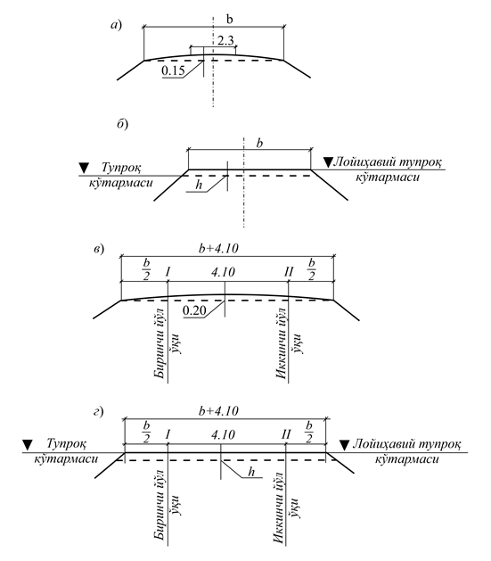
1-rasm. Peregonlardagi toʻgʻri uchastkalar yoʻl toʻshamasi asosiy maydonchasining koʻndalang koʻrinishi:
a — himoya qatlamisiz bitta yoʻlli drenajlanmaydigan tuproqli yoʻl toʻshamasi uchun;
b — oʻsha holat, drenajlanadigan tuproq uchun;
v — ikkita yoʻlli drenajlanmaydigan tuproqli yoʻl toʻshamasi;
g — oʻsha holat, drenajlanadigan tuproq uchun.
Rasmda qoʻllanilgan ifodalar:
b — yoʻl toʻshamasi asosiy maydonchasining kengligi 30-jadval maʼlumotlariga muvofiq.
h — loyiha qirgʻogʻining kesimdagi qirgʻoqdan ortiqligi 0,15 m ga ushbu uchastkadagi va unga tutash drenajlanmaydigan tuproqli uchastkalardagi ballast qatlamining qalinligini qoʻshilgan ifodasi.
SHNQ 2.05.01-23 “Temir yoʻllar. Loyihalash talablari” shaharsozlik normalari va qoidalariga 5-ILOVA
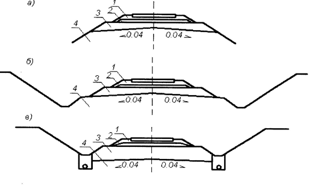
2-rasm. Loy tuproqdan tuzilgan WL > 0,23 da ifodalangan himoya qatlamli yoʻl toʻshamasi.
a, b, v — drenajlovchi qum-toshli tuproqlardan tuzilgan himoyalovchi qatlamli koʻtarmalar va oʻymalar;
a-kyuvetlarsiz, nishab tarafida kamera va tokchalar oʻrnatilgan; b, v-tabiiy tarkibdagi togʻ jinsi ichiga kiritilgan kyuvetli; g-yirik yanchilgan yoki qumloq tuproqdan barpo etilgan yer koʻtarmasining asosiy maydonchasini barpo etish hisobiga olinadigan kyuvetli;
1-kameralar; 2-tokchalar; 3-chetki jiyak bloklari; 4-yirik yanchilgan yoki qumloq tuproq
SHNQ 2.05.01-23 “Temir yoʻllar. Loyihalash talablari” shaharsozlik normalari va qoidalariga 15-ILOVA
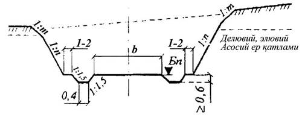
12-rasm. Yengil nuraydigan yumshalmaydigan togʻ jinslaridagi oʻymalarning koʻndalang kesimi.
SHNQ 2.05.01-23 “Temir yoʻllar. Loyihalash talablari” shaharsozlik normalari va qoidalariga 16-ILOVA
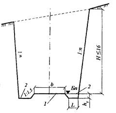
13-rasm. Yengil nuraydigan yumshalmaydigan togʻ jinslaridagi kyuvet-transheyali oʻymalarning
koʻndalang kesimi
1-tabiiy yotqizilgan jins yoki yirik blokli tuproqdan tayyorlangan; 2-kyuvet-transheya
SHNQ 2.05.01-23 “Temir yoʻllar. Loyihalash talablari” shaharsozlik normalari va qoidalariga 17-ILOVA
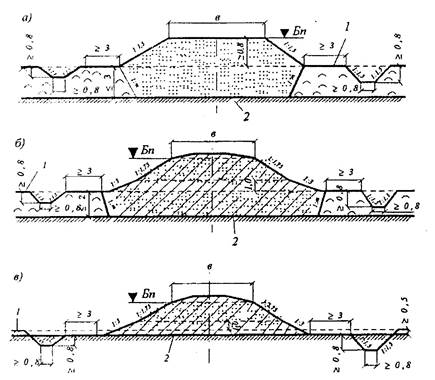
14-rasm. Chuqurligi 2 m gacha 1 — turdagi botqoqliklardagi balandligi 3 mgacha boʻlgan
b, v — mayda changsimon tuproqdan, yengil yirik qumlardan, yengil yirik va yengil qumloqdan;
1-botqoqning sathi; 2-botqoq tubidagi mineral tuproqning sathi
SHNQ 2.05.01-23 “Temir yoʻllar. Loyihalash talablari” shaharsozlik normalari va qoidalariga 18-ILOVA
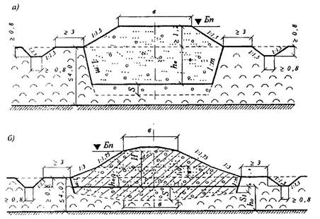
15-rasm. Chuqurligi 2 dan 4 m gacha I toifali botqoqliklardagi balandligi 3 m gacha boʻlgan toʻshamalarning koʻndalang kesimi
a — drenajlovchi tuproqdan; b — mayda changsimon tuproqdan, yengil yirik qumlardan, yengil yirik va yengil qumloqdan; hv-torfdan tozalanadigan transheyaning chuqurligi
SHNQ 2.05.01-23 “Temir yoʻllar. Loyihalash talablari” shaharsozlik normalari va qoidalariga 19-ILOVA
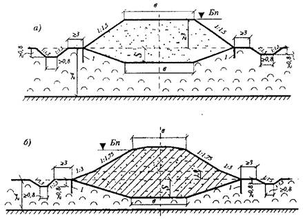
16-rasm. I — turdagi botqoqliklardagi balandligi 3 m dan yuqori boʻlgan toʻshamalarning koʻndalang kesimi
a) drenajlovchi tuproqdan;
b) mayda va changsimon tuproqdan, yengil yirik va yengil qumloqdan;
1-oʻsimliklarning ildizli qatlamiga boʻylama oʻyiq, ammo 1 m dan kam emas
SHNQ 2.05.01-23 “Temir yoʻllar. Loyihalash talablari” shaharsozlik normalari va qoidalariga 20-ILOVA
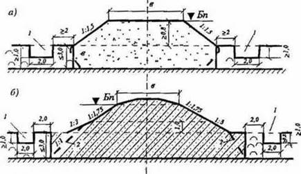
17-rasm. II turdagi botqoqliklardagi koʻtarmalarning koʻndalang kesimi
a) drenajlanuvchi tuproqdan; b) mayda va changsimon qumdan, yengil yirik va yengil qumloqdan;
1 — torftoʻplagichlar; 2 — torfni chiqarib yuborish transheyasining kengligini aniqlash uchun yordamchi chiziq
SHNQ 2.05.01-23 “Temir yoʻllar. Loyihalash talablari” shaharsozlik normalari va qoidalariga 21-ILOVA
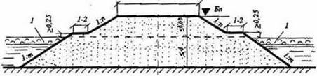
18-rasm. III turga mansub botqoqliklardagi koʻtarmaning koʻndalang kesimi
1 — torf qobigʻi
SHNQ 2.05.01-23 “Temir yoʻllar. Loyihalash talablari” shaharsozlik normalari va qoidalariga 22-ILOVA
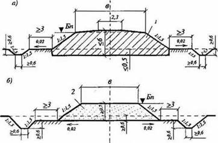
19-rasm. Shoʻrhok tuproqli koʻtarmalarning koʻndalang kesimlari quyidagi uchastkalar boʻyicha:
a — quruq asosli; b — sizot suvlari sathi chuqur joylashmagan, vaqti-vaqti yer ustiga chiqib turuvchi;
1 — mahalliy, drenajlanmaydigan tuproq; 2 — drenajlovchi tuproq
SHNQ 2.05.01-23 “Temir yoʻllar. Loyihalash talablari” shaharsozlik normalari va qoidalariga 23-ILOVA
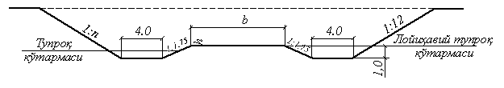
20-rasm. Kuchli qum koʻchadigan uchastkalardagi sust harakatlanadigan va harakatlanmaydigan qumlardagi oʻymalarning koʻndalang kesimi
SHNQ 2.05.01-23 “Temir yoʻllar. Loyihalash talablari” shaharsozlik normalari va qoidalariga 24-ILOVA
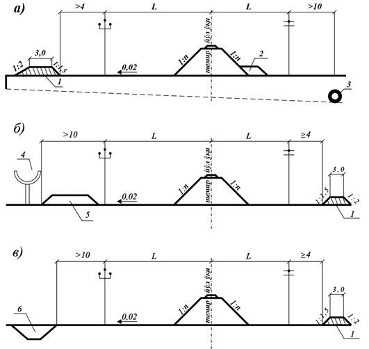
21-rasm. Irrigatsiya inshootlariga yaqin joylashgan toʻshamalarning koʻndalang kesimi
a) quvursimon yopiq drenlar boʻylab joylashadigan toʻshalma
b) oʻshaning oʻzi, temir-beton kanallar boʻylab
v) oʻshaning oʻzi, kollektorlar va kanallar boʻylab
4 — asosni mustahkamlash; 5 — depressiya egri chizigʻi.
GVV — inshoot oldidagi yuqori suvlarning hisoblangan gorizonti;
h5 — toʻshalma olidagi oqimning yoʻl qoʻyiladigan chuqurligi; h6 — oqimning joriy chuqurligi;
L — filtrlovchi toʻshamaning uzunligi
Oʻzbekiston Respublikasi qurilish va uy-joy kommunal xoʻjaligi vaziriining 2024-yil 9-avgustdagi 01/2-48-son buyrugʻiga 2-ILOVA
Oʻz kuchini yoʻqotgan deb topilayotgan ayrim shaharsozlik normalari va qoidalari
ROʻYXATI
1. Oʻzbekiston Respublikasi qurilish vazirining 2019-yil 23-dekabrdagi 561-son buyrugʻi bilan tasdiqlangan SHNQ 2.05.01-19 “1520 mm izli temir yoʻllar. Loyihalash meʼyorlari” shaharsozlik normalari va qoidalari.
2. Oʻzbekiston Respublikasi qurilish vazirining 2019-yil 23-dekabrdagi 561-son buyrugʻi bilan tasdiqlangan SHNQ 2.05.10-19 “Temir yoʻllarning yoʻl poyini loyihalash qoidalari” shaharsozlik normalari va qoidalari.